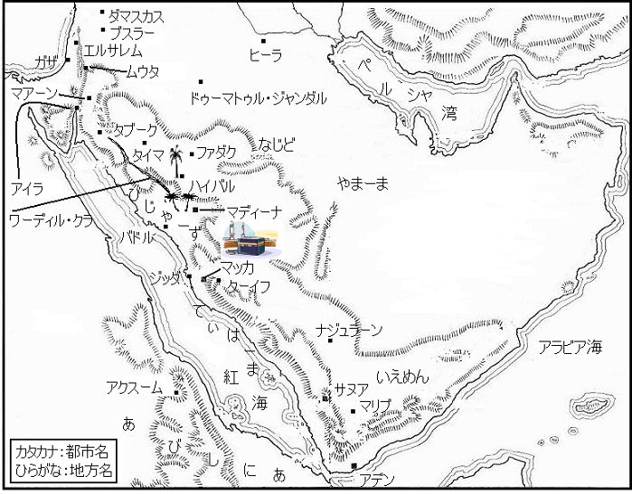

| 預言者の生涯 第三巻: イスラーム文明を創造した男の物語 | |
| イブン・イスハーク | |
| (2015) | |
目次
アラビア半島地図
バドルの戦い（続き）
バドルで捕虜となったクライシュの多神教徒たち
バドルの戦いについての詩
クライシュの逆襲
アルクドルでのスライム族との戦い
アッサウィークの襲撃
ズー・アマラの戦い
バハラーンのアルフルウでの戦い
カイヌカ一族の問題
ザイド・イブン・ハーリサが率いる一隊のアルカラダへの遠征
カアブ・イブヌル・アシュラフの殺害
ムハイイサとホワイイサの物語
ウフドの戦い
ウフド戦闘の図
ウフドの戦いに言及したコーランの章節
ウフドで殉教したムスリムたち
ウフドで戦死した多神教徒たち
ウフドの戦いについての詩
アッラジーウの日、ヒジュラ暦三年
ヒジュラ暦四年サファル〔二月〕、ビイル・マウーナ井戸の物語
ヒジュラ暦四年、アンナディール一族の追放
ヒジュラ暦四年、ザーット・リカーウへの遠征
ヒジュラ暦四年シャアバーン〔八月〕、バドルへの最後の遠征
ドゥーマトル・ジャンダルへの遠征
ヒジュラ暦五年シャッワール〔十月〕、ハンダク〔塹壕〕の戦い
塹壕の戦いの図
ユダヤ教徒との戦い
ヒジュラ暦五年、クライザ一族との戦い
塹壕とクライザ一族についての詩
サッラーム・イブン・アブル・フカイクの討伐
アムル・イブヌル・アースとハーリド・イブヌル・ワリードの入信
リヒヤーン一族への遠征
ズー・カラドへの遠征
アルムスタリク一族に対する遠征
アルムスタリク一族への遠征の際に流布されたアルイクフ〔虚偽〕
イスラームの勝利
ヒジュラ暦六年の末に起きたアルフダイビヤでの出来事
アッリドワーンの誓約
使徒とスハイル・イブン・アムルとの間の和平協定
和平の後、無援のままに取り残された人びと
休戦後、移住した女たち
ヒジュラ暦七年アルムハッラム〔一月〕、ハイバルへの遠征
ハイバル遠征の図
ハイバルのそのほかの物語
羊飼いアルアスワドの物語
アルハッジャージ・イブン・イラートッ・スラミの物語
ハイバルでの戦利品の分配
ファダクの事情
アッダール氏族の出自
アビシニアに聖遷した教友たちの帰国
ヒジュラ暦七年、ウムラ〔小巡礼〕の成就
カアバ周回の図
ヒジュラ暦八年、ムウタへの遠征
ヒジュラ暦八年ラマダーン〔九月〕、マッカ遠征の経緯とマッカ解放
マッカ征服の図
西アラビア中央部地図

バドルの戦い（続き）
バドルで捕虜となったクライシュの多神教徒たち
ハーシム・イブン・アブド・マナーフ一族の、アキール・イブン・アブー・ターリブ・イブン・アブドゥル・ムッタリブ・イブン・ハーシムと、ナウファル・イブヌル・ハーリス・イブン・アブドゥル・ムッタリブ・イブン・ハーシム。
アルムッタリブ・イブン・アブド・マナーフ一族から二人が捕虜となった。アッサーイブ・イブン・ウバイド・イブン・アブド・ヤズィード・イブン・ヒシャーム・イブヌル・ムッタリブと、ヌーマーン・イブン・アムル・イブン・アルカマ・イブヌル・ムッタリブ。
アブド・シャムス・イブン・アブド・マナーフ一族から七人が捕虜となった。アムル・イブン・アブー・スフヤーン・イブン・ハルブ・イブン・ウマイヤ・イブン・アブド・シャムス。アルハーリス・イブン・アブー・ワジザ・イブン・アブー・アムル・イブン・ウマイヤ・イブン・アブド・シャムス。アブル・アース・イブヌッ・ラビーイ・イブン・アブドゥル・ウッザ・イブン・アブド・シャムス。アブル・アース・イブン・ナウファル・イブン・アブド・シャムス。彼らの同盟者のアブー・リーシャ・イブン・アブー・アムル。アムル・イブヌル・アズラク。ウクバ・イブン・アブドゥル・ハーリス・イブヌル・ハドラミ。
ナウファル・イブン・アブド・マナーフ一族から三人が捕虜となった。アディーユ・イブヌル・ヒヤール・イブン・アディーユ・イブン・ナウファル。マーズィン・イブン・マンスール氏族出身の同盟者ガズワーン・イブン・ジャービルの甥であるウスマーン・イブン・アブド・シャムス。同盟者のアブー・サウル。
アブドッ・ダール・イブン・クサイイ一族から二人が捕虜となった。アブー・アズィーズ・イブン・ウマイル・イブン・ハーシム・イブン・アブド・マナーフ・イブン・アブドッ・ダールと、同盟者のアルアスワド・イブン・アーミル。彼らは、「我らはアルアスワド・イブン・アーミル・イブン・アムル・イブヌル・ハーリス・イブヌッ・サッバーク氏族の血統の者である」、と言っていた。
アサド・イブン・アブドゥル・ウッザ・イブン・クサイイ氏族から三人が捕虜となった。アッサーイブ・イブン・アブー・ホバイシュ・イブヌル・ムッタリブ・イブン・アサド。アルホワイリス・イブン・アッバード・イブン・ウスマーン・イブン・アサド。彼らの同盟者のサーリム・イブン・シャンマーフ。
マフズーム・イブン・ヤカザ・イブン・ムッラ一族から九人が捕虜となった。ハーリド・イブン・ヒシャーム・イブヌル・ムギーラ・イブン・アブドッラー・イブン・ウマル・イブン・マフズーム。ウマイヤ・イブン・アブー・ホザイファ・イブヌル・ムギーラ。ワリード・イブヌル・ワリード・イブヌル・ムギーラ。ウスマーン・イブン・アブドッラー・イブヌル・ムギーラ・イブン・アブドッラー・イブン・ウマル・イブン・マフズーム。サイフィ・イブン・アブー・リファーア・イブン・アービド・イブン・アブドッラー・イブン・ウマル・イブン・マフズームと、彼の兄弟アブル・ムンズィル。アブー・アターウ・アブドッラー・イブン・アブッ・サーイブ・イブン・アービド・イブン・アブドッラー・イブン・ウマル・イブン・マフズーム。アルムッタリブ・イブン・ハンタブ・イブヌル・ハーリス・イブン・ウバイド・イブン・ウマル・イブン・マフズーム。彼らの同盟者で、背を向けて最初に逃げ出した男と言われている、ハーリド・イブヌル・アァラム。
次のように詩を詠んだのは、このハーリドである。
「出血する傷は我らの背中にはない、
しかし、血は我らの足に落ちる」。
サフム・イブン・アムル・イブン・ホサイス・イブン・カアブ一族から四人が捕虜となった。息子のアルムッタリブが身代金を払ったため、捕虜の中で最初に身請けされたアブー・ワダーア・イブン・ドゥバイラ・イブン・スアイド・イブン・サアド・イブン・サフム。ファルワ・イブン・カイス・イブン・アディーユ・イブン・ホザーファ・イブン・サアド・イブン・サフム。ハンザラ・イブン・カビーサ・イブン・ホザーファ・イブン・サアド・イブン・サフム。アルハッジャージ・イブヌル・ハーリス・イブン・カイス・イブン・アディーユ・イブン・サアド・イブン・サフム。
ジュマハ・イブン・アムル・イブン・ホサイス・イブン・カアブ一族から五人が捕虜となった。アブドッラー・イブン・ウバイイ・イブン・ハラフ・イブン・ワフブ・イブン・ホザーファ・イブン・ジュマハ。アブー・アッザ、本名アムル・イブン・アブドッラー・イブン・ウスマーン・イブン・ウハイブ・イブン・ホザーファ・イブン・ジュマハ。ウマイヤ・イブン・ハラフの元奴隷のアルファーキフ。その後、ラバーフ・イブヌル・ムグタリフが、彼はシャンマーフ・イブン・ムハーリブ・イブン・フィフル氏族の者であるとして彼の所有を主張した。アルファーキフは、ジャルワル・イブン・ヒズヤム・イブン・アウフ・イブン・ガドブ・イブン・シャンマーフ・イブン・ムハーリブ・イブン・フィフルの息子だったと言われている。ワフブ・イブン・ウマイル・イブン・ワフブ・イブン・ハラフ・イブン・ワフブ・イブン・ホザーファ・イブン・ジュマハ。ラビーア・イブン・ダッラージ・イブヌル・アンバス・イブン・ウフバーン・イブン・ワフブ・イブン・ホザーファ・イブン・ジュマハ。
アーミル・イブン・ルアイイ一族から三人が捕虜となった。サーリム・イブン・アウフ氏族のマーリク・イブヌッ・ドゥフシュムが捕虜にしたスハイル・イブン・アムル・イブン・アブド・シャムス・イブン・アブド・ウッド・イブン・ナスル・イブン・マーリク・イブン・ヒスル・イブン・アーミル。アブド・イブン・ザマア・イブン・カイス・イブン・アブド・シャムス・イブン・アブド・ウッド・イブン・ナスル・イブン・マーリク・イブン・ヒスル・イブン・アーミル。アブドッ・ラハマーン・イブン・マシュヌ・イブン・ワクダーン・イブン・カイス・イブン・アブド・シャムス・イブン・アブド・ウッド・イブン・ナスル・イブン・マーリク・イブン・ヒスル・イブン・アーミル。
アルハーリス・イブン・フィフル氏族から二人が捕虜となった。アットファイル・イブン・アブー・クナイウと、ウトバ・イブン・アムル・イブン・ジャフダム。
私が聞いている捕虜の総数は、四十三人である。
バドルの戦いについての詩
バドルの戦いで起きたことに言及して、双方が応酬し合った詩の中で、ハムザ・イブン・アブドゥル・ムッタリブは次のように詠んだ。
「全く、驚異的な歴史的出来事であった、
死に至る道はいとも単純に見えるものの、
ある民が自らを破壊し、滅亡するとは、
不服従と不信仰を互いに唆すことによって。
その夜、彼らはバドルに向かって、そろって出発した、
そしてバドルの井戸は運命の場所となった。
我らは彼らの隊商だけを求めた、ほかの何物でもない、
しかし彼らは我らに立ち向かい、我らは遭遇した。
遭遇したとき、もはや我らは避けられなかった、
灰褐色の、まっすぐにしつらえられた槍の一撃なくして、
また彼らの首を討った剣の一撃なくして、
打つとき、きらめく剣で。
我らは、過ちを犯すウトバを倒し、横たえた、
そしてシャイバは、穴に投げ込まれた死者の一人、
アムルも彼らの守護者の中で屍となった、
そして泣き叫ぶ女たちは、彼のために衣装を引き裂いた、
ルアイイ・イブン・ガーリブの気高い女たち、
フィフルの最高の女たちより優雅な。
彼らは、自らの過ちのために倒された、
そして彼らは、敗者の旗を残した、
イブリース〔悪魔〕※に導かれた人々の、過ちの旗。
イブリースは彼らを裏切った、邪悪な者は背信しやすい。
イブリースは事態が明らかになると彼らに言い放った、
『我はお前たちとは手を切った。もうこれ以上、耐えられない、
我には、お前たちに見えないものが見える、我は神の懲罰を恐れる、
神は無敵であるからだ』。
彼が彼らを死に導き、そして彼らは滅亡した、
イブリースは、彼らが知らないものを知っていた。
穴の日、彼らは千人をかき集めた、
我らの三百人は、興奮した白い種馬のようだった。
我らには、神が我らを支援するために遣わされた神の軍勢が共にいた、
名声を永久にとどめる場所で。
我らの旗の下で、ジブリールが神の軍勢と共に戦った、
彼らが自らの死と出会った争いで」。
※〔〕は翻訳者の注。
アルハーリス・イブン・ヒシャーム・イブヌル・ムギーラは、ハムザの詩に答えて詠んだ。
「助けよ、おお、我が民よ、我の熱望と損失のために、
我の悲しみと、燃えさかる胸のために。
我の目から涙がとめどもなく流れ落ちる、
女の胸元に巻かれた首飾りからこぼれる真珠のように、
優しい英雄のために泣け、
バドルの井戸で運命に遭遇した。
神の恵みあれ、最も寛大な心の同胞、我が親族のアムルに。
お前の命運が尽きたとき、誰かがお前に出会ったならば、
そうだ、時は必ずや変化を運んで来たであろうに。
過ぎ去った時、
お前は耐えることのできない屈辱を受けた。
我は、お前のための復讐を遂げずには死を迎えることはできない。
我は兄弟でも、妻の親族でも容赦しない。
彼らにとってかけがえのない者をできるだけ多く殺害しよう、
彼らが我のかけがえのない者を、殺害したように。
よそ者たちをかき集め、彼らは強靭になったつもりか、
我らこそ、気高く最強のフィフルの純粋な子孫であるというのに。
助けよ、おお、ルアイイよ、汝の聖域と神々を守れ、
邪悪な男に断じて引き渡すな。
汝の父祖らが継承してきた彼らの基礎を汝は引き継いだ、
屋根と幕に覆われた神殿を。
なぜ無頼漢は汝を破壊しようと欲したのか。
彼を断じて許すな、おお、ガーリブの部族よ、
汝の敵と全力で戦え、互いに助け合って。
忍耐をもって互いの苦痛をしのげ。
さすれば汝は首尾よく兄弟の復讐を遂げよう、
アムルの惨殺の復讐に失敗するならば、何の生きがいがあろう。
邪悪な目をした敵に向けて、鞘から剣が抜き放たれるとき、
汝らの手中で稲妻のごとくきらめく剣は、
きらめく度に敵の首を宙に跳ね飛ばす、
衣類にたかるアリを払い飛ばすように」。
アリー・イブン・アブー・ターリブは詠んだ。
「お前はいかに神が、神の使徒を祝福されたかを、見なかったか、
強力で、威力ある、慈悲深い方の恩寵によって、
いかに主は不信仰者に屈辱を与えられたか、
捕囚と死によって屈辱をもたらされた者どもに、
神の使徒の勝利の輝かしさに比して、
彼は神によって正義のただ中に遣わされた。
彼は神から下されたフルカーン〔啓示〕を伝えた、
その印は分別ある者には明白である。
ある者たちはそれを固く信仰し、彼らは確信した、
そして神のおかげで一つの共同体となった。
ほかの者たちは背信し、彼らの心は道から外れた、
そして玉座の主は、彼らに繰り返し災厄をもたらされた、
バドルで主は、主の使徒の力の下に彼らをひれ伏せさせられた、
そして怒りの軍勢は勇敢に戦った。
彼らは確実な剣で不信仰の者たちを征伐した、
よく磨かれ、研ぎ澄まされた剣で。
いったい何人の強健な若者を、
多数の勇猛な戦士を、彼らは失ったのか。
泣き叫ぶ彼らの女たちは、眠れぬ夜を過ごした、
彼女らの涙は、時に強く、時に弱く。
彼女たちは道を誤ったウトバと彼の息子のために泣いた、
そしてシャイバとアブー・ジャハルのために、
またズッ・リジュル※とイブン・ジュダーンのために、
喉をからし、喪服を着て、喪失を嘆き悲しんで。
バドルの穴に多数が屍となって横たわった、
かつては戦いの時には勇敢で、欠乏の時には寛大だった男たち、
しかし過誤が彼らを惑わせ、何人もが誘惑に負けた、
彼らは今、地獄にいる、
我らに対する怒りにさいなまれながら」。
※バドルの貯水池で、ハムザに足を切断されたアルアスワド・イブン・アブドゥル・アサドのことだと言われている。
アルハーリス・イブン・ヒシャーム・イブヌル・ムギーラは、アリーの詩に答えて詠んだ。
「我は、愚かな詩を謡う民に驚嘆する、
口やかましく、むなしい愚挙について謡う、
バドルで殺害された者たちについて謡う、
老いも若きも、高貴な戦いに挑んだとき、
ルアイイ・イブン・ガーリブの血筋の勇猛な剣士たち、
戦闘では突撃し、欠乏のときは飢えた者をもてなす、
彼らは気高い死を遂げた、家族を売ることなく、
血統と祖国に異質なよそ者に、
我らの代わりにガッサーンを親友に選ぶ、
不敬で、忌むべき罪、血族の絆を断絶する、
お前たちの悲しむべき行いに、
判断と理解に富む人々は、お前たちの悪業を知る。
彼らが亡くなった者であることは、真実だ、
だが、最高の死は戦場にある。
彼らを殺したといって断じて喜ぶな、
彼らの死は、お前たちに繰り返し災厄をもたらすからだ。
彼らが死んだ今、お前たちは常に分裂しよう、
一人としてお前たちが望むような人々はいない、
イブン・ジュダーンの死によって、称賛すべき人、
そしてウトバ、そしてお前たちの間でアブー・ジャハルと呼ばれている彼。
シャイバとアルワリードも彼らの仲間、
貧者の避難所ウマイヤ、そしてズッ・リジュル。
これらの人々のために泣け、ほかの者たちのためでなく、
泣き叫ぶ女たちは、喪失と離散を嘆き悲しむ、
マッカの人々に呼びかけよ、集合せよと、
そしてナツメヤシが茂るマディーナの砦に進め、
自衛せよ、そして戦え、おお、カアブの人々よ、
研磨し鍛えたお前の剣で、
あるいは恐れおののいて夜を過ごせ、
足下に踏みつけられるサンダルより惨めな日まで、
しかし認識せよ、おお、人々よ、アッラートにかけて、我は確信すると、
お前たちは決して復讐を怠らないと。
お前たち全員、鎖かたびらをまとえ、槍を取れ、
兜を、鋭い剣を、弓矢を」。
ムハーリブ・イブン・フィフル氏族で多神教徒のディラール・イブヌル・ハッターブ・イブン・ミルダースは詠んだ。
「明日、自分たちに死が迫っているというのに、アウスの民のうぬぼれには驚きだ、
時は警告を伝えている。
死者が出ているというのに、自慢するアンナッジャール一族にも驚きだ、
彼らが不屈の男だったからといって。
もし我らの者が殺されて残されたならば、
我らは報復として彼らの者を殺して戦場に残す。
我らの空飛ぶ駿馬は、お前たちの間に我らを降ろす、
我らが復讐を果たすまで、おお、アウス族よ、
我らは、アンナッジャール一族のただ中で攻撃するために戻って来よう、
鎖かたびらをまとった槍兵の重みの下で、我らの馬は鼻息を荒くする。
我らは、お前たちの死体を、旋回するハゲワシの下に放置しよう、
助けを求めても、ただむなしい希望にすぎない。
ヤスリブの女たちは、彼らを悼むだろう、
彼女たちの夜は長く、眠れない、
我らの剣は彼らを切り倒すからだ、
犠牲者の血を流しながら。
お前たちはバドルで勝利したが、
単にアハマドのおかげで幸運だったにすぎない、
そして、死が迫っていたとき、戦闘で彼を守護した、
彼の友人たちの、選ばれた軍勢のおかげで、
アブー・バクルとハムザをはじめとして、
そしてアリーもお前たちが言及するその一人として、
アブー・ハフサ〔ウマル〕とウスマーンも含まれる、
そしてサアドも、
彼らすべてが居合わせる戦いに勝てないはずなどなかろう。
だがお前たちの自慢の種の、この男たちは、
アウスとナッジャールの生まれではない。
しかし彼らの父は、ルアイイ・イブン・ガーリブの血統である、
カアブとアーミルの高貴な系譜の。
彼らこそがすべての前線で、騎兵を撃退した男たちだ、
バドルの日、高貴で輝いた戦士たち」。
サリマ氏族のカアブ・イブン・マーリクは、ディラールの詩に答えて詠んだ。
「我は神の御業に驚嘆する、なぜなら神は、
意志されることを行い、無敵であるからだ。
神は我らがバドルで遭遇するように定められた、
邪悪な集団に。
彼らはすべての隣人を招集した、
巨大な集団を形成するまで。
カアブとアーミル、集団の全員の系譜が。
彼らは不当な目的のために、我らだけに向かった、
神の使徒は我らの中に、
難攻不落の砦のごとく、
アウスの民が彼を囲んで。
アンナッジャール一族の諸部族は、使徒の旗の下に、
軽い装備で、土煙を高く巻き上げて進撃しながら。
彼らに遭遇すると、我らのすべての不屈の戦士は、
同胞と共に命を懸けた、
我らは、神の唯一性を証言し、
主の使徒が真実を伝えたと証言した。
我らが剣を軽く引き抜くと、
あたかも炎が発したように輝いた。
我らはその剣で彼らを討ち、彼らは散った、
そして不信仰者は死に瀕した、
アブー・ジャハルは顔を伏せて横たわり、
我らの剣はウトバをほこりの中に倒した。
彼らはシャイバとアッタイミを戦場に残した、
彼らはすべて、玉座の主を否定した。
彼らは地獄の焚き木となった、
それはすべての不信仰者の行きつく所。
地獄は彼らを焼き尽くす、釜焚きが、
鉄と石の塊で地獄の熱を上げる間に。
神の使徒は彼らを主の下に招請された、
しかし彼らは拒絶した、『お前は魔法使いにすぎない』、と罵って。
神は彼らを破滅させると意志されたので、
誰も神の定めから逃れられない」。
アブドッラー・イブヌッ・ズィバアラッ・サフミ（アブドッ・ダール一族の同盟者）※は、バドルで殺害された者を悼んで詠んだ。
「何と気高い戦士、麗しい男たちが、バドルの戦場に倒れていることか。
彼らはヌバイヒと、ムナッビヒを後ろに残した。
ラビーアの二人の息子を、強敵に向かう最強の闘士、
そして寛大なハーリス、彼の顔は輝く、
夜を照らす満月のように、
そしてアルアース・イブン・ムナッビヒ、勇敢な、
非の打ち所のない、長い槍のような。
彼の出自と先祖は、
彼の父母のおじたちの栄光は、彼を高める。
もし誰かが嘆き悲しみ、深い苦悩を示さなければならぬとすれば、
誉れ高き族長、イブン・ヒシャームのためにせよ、
神よ、被造物の主よ、アブル・ワリードと彼の一族を助け給え、
彼らに特別の恩寵を授け給え」。
※（）は、コーランの章節を除き原著者の注。
アンサールのハッサーン・イブン・サービトは、アブドッラーの詩に答えて詠んだ。
「泣け、お前の涙が血に変わるまで、
お前の血の涙は止めどもなく流れ続ける。
なぜ邪悪な道に走った者のために泣くのか、
なぜお前たちは、我らの民の美徳を思い出さなかったのか、
そして、我らの誉れ高き、決然とした、寛大な、勇敢な人に、
神の使徒に、美徳と寛容の魂に、
最も正しく最も信頼できる男に。
彼に倣い、彼の教えに従う者は、
最も称賛される」。
ハッサーンは、また詠んだ。
「乙女はお前の眠りの心に取りつく、
眠る人に冷たい唇で飲み物を与えつつ、
純水に混ぜたじゃ香のような、
あるいは、犠牲の獣の血に似た、古く赤いワインのような。
豊かな腰つきで波打つように、
快活で、緩やかに動く。
香料をすり潰す、滑らかな白い大理石のくぼみのように
彼女の身体は、豊満な曲線を描く、
寝所に向かうときもたおやかな、
美しく、優しい姿の。
昼に我は、彼女を決して忘れない、
夜に夢は、彼女に対する欲望に火をつける。
我は、彼女のことについて考えることを決して忘れないと誓う、
自分の骨が墓場に横たわるまで。
おお、女よ、私を愚かにも責める女、
我は愛のゆえにその責めを受け入れることを拒否する、
彼女は夜明けに、我が起きた後にやって来た、
一生の難問に直面したとき。
彼女は、男の生涯は悲しい、と言った、
多数のラクダに不足していれば、
もしお前が、自分の言ったことで嘘をついたならば、
お前は、アルハーリス・イブン・ヒシャームに起きたような結末を逃れる。
彼は、友人たちを守って戦うことを恐れて、彼らから離れた、
自分の馬の手綱を解き放して逃亡した。
それは速い駿馬を砂漠の中に放置した、
重石をつけた綱が穴に落ちたとき。
彼の雌馬は全力で駆け去った、
彼の同胞は、残酷な苦境のなかに取り残された、
彼の兄弟と一族は戦闘に残された、
神がムスリムに勝利を授けられた戦闘に、
主が御業を成就されたために――戦争は彼らを粉々に砕いた、
燃え立つ炎は、彼らを薪として。
神の御意志と彼の駿馬のおかげで、彼は一命を取り留めた、
野獣の足に踏みつけられて、その餌食となったであろう。
彼の同胞の何人かは、きつく縛られて捕虜となった、
彼は敵に出会ったとき、若者を守る鷹だったというのに、
彼は、決して、呼びかけに応えて真実を受け入れない、
彼らの長老たちが倒されても。
屈辱と不名誉のうちに、彼が見たのは、
誉れ高い彼の族長たちの首をはね飛ばした力強い剣。
気高く勇敢で名誉ある者たちの手中にある剣、
鉄に火をつける剣、
雷雲の下の稲妻のごとく」。
アルハーリスは答えて詠んだ。
「人々は、我の駿馬が血の泡を吹くまで、我が戦闘から離れなかったことを知っている、
もし単独で戦うならば、我は殺されると悟った、
我の死は敵を傷つけない、
そこで我は退却して同胞から離れた、いつの日にか彼らに復讐することを期して」。
これが、アルハーリスが、バドルの戦闘から逃亡したことを弁解して語った詩である。
ハッサーンはまた詠んだ。
「クライシュは知った、バドルの日、
捕囚と戦死の日、
槍が交差したとき、我らが勝利者であったと、
アブル・ワリードの戦いで。
我らはラビーアの息子が来た日、彼らを殺した、
鎖かたびらを二重にまとい、我らに敵対し。
ハキームは逃亡した、アンナッジャール一族が、
獅子のごとく彼らに襲いかかった日、
フィフルの全員はしっぽを巻いた、
惨めなハーリスは、はるか遠くに彼らを見捨てた。
お前たちは、屈辱と死に出会った、
壊滅的な一撃によって。
全軍が一団となってしっぽを巻いた。
彼らは父祖の栄誉を全く顧みなかった」。
ハッサーンはまた詠んだ。
「おお、ハーリスよ、お前は戦いで卑劣な決断をした、
そして、戦闘が激化し、両軍の父祖の名誉がぶつかり合った日、
お前が俊足で気高い雌馬に騎乗したとき、
瞬く間に走り去る、
お前の民を見殺しにして後ろに残して、
お前が不動であらねばならぬときに、逃亡だけを考えて。
お前は同胞を心配することができなかったのか、
槍で刺し貫かれ、身ぐるみはがされている。
神は、彼らを破滅させることを急がれた、
屈辱的な不名誉と、厳しい懲罰のうちに」。
ハッサーンはまた詠んだ。
「勇敢で恐れを知らぬ男――断固として臆病ではない、
軽い鎖かたびらをまとった男たちを指揮した。
それは、創造主すなわち神の使徒、
神は、神への敬虔と善によって、使徒を誰よりも祝福された。
お前たちは隊商を防衛すると言った、
そしてバドルの水は、我らの手に届かないと。
我らはそこに到達した、お前たちの主張など気にもせず、
そして十分、惜しむことなく水を飲んだ、
決して切れることはない綱にしっかりとつかまって、
はるか彼方にまで伸張する、巧みに編まれた神の綱に。
我らは使徒と共にある、そして我らが従う真実と共に、
死に至るとも、我らには限りない助けがある、
約束に忠実で、恐れを知らず、光り輝く星、
すべての気高い男たちを照らす満月である」。
またハッサーンは詠んだ。
「アサド氏族は失望し、彼らの騎士は引き返した、
穴の日、悲嘆と不名誉のうちに。
アブル・アースは瞬時に屍となり地上に横たわった、
一撃をくらい、疾走する駿馬の背から落ちるや否や。
優れた騎士だったにもかかわらず、武器を携え死を迎えた、
自らの血の海の中に静かに横たわったとき。
我らの戦士ザマアが、彼の喉をかき切って倒したとき、
彼の血は飛び散った。
不名誉にも彼の額は地面にめり込み、
屈辱にも彼の鼻先は砂埃の中に埋まった。
イブン・カイスは部族の敗残兵と共に逃亡した、
傷に覆われ、いまわの際に」。
またハッサーンは詠んだ。
「誰か語ることができるか、もしマッカ人が知っているならば、
我らがいかにして、不信仰者の不吉な時間に、彼らを殺害したか。
我らは戦闘で、彼らの指導者を殺した、
そして彼らは、敗残の軍勢を帰した。
我らはアブー・ジャハルを殺した、そして彼の前にウトバを、
そしてシャイバは、手を前に広げて倒れた。
我らはスワイドを殺した、そして彼の後にウトバを。
トゥーマも戦闘のほこりの中に横たわった。
多数の高貴な男たちを我らは殺した、
気高い血統、民の中で傑出した。
我らは彼らをハイエナの餌食として放置した、
その後に地獄の炎で燃やすため。
実際、マーリクの騎兵とその追随者は、全く援護にはならなかった、
彼らがバドルで我らに遭遇したとき」。
ハッサーンはまた詠んだ。
「バドルの日、ハキームの俊敏さは彼自身を助けた、
アルアワジ※の雌馬が産んだ若駒のような速さ、
彼がバドルの谷の壁を見たとき、
黒かたびらのアルハズラジの戦隊が群がっているのを、
敵に遭遇しても決して退却せず、
常道の真ん中を勇敢に進撃する戦隊を。
雄々しい族長が何人いることか、
臆病者を追い詰めて戦う英雄たち、
諸手で惜しみなく寛大に民に与える族長、
血の代償金の責任を負う王者、
族長会議の誉れ、戦闘の要石、
貫き通す剣で勇者を討伐する」。
※アラブの伝説に登場する絶世の名馬の名。
ハッサーンはまた詠んだ。
「神のおかげで、我らは敵勢を恐れない、
彼らがいかに多数の部隊を集めようとも。
いつ多勢を我らに向かわせても、
慈悲深い神のご支援さえあれば、彼らの剣に対抗するに十分だ。
バドルで我らは、隼のように俊敏だった、
槍を地上高く上げ、我らは死を恐れなかった、
我らほど、速く、強い軍勢は、かつて存在しなかった。
しかし我らは、主を頼って高らかに宣言した、
『我らの剣は、我らの名声であり、援護である』。
我らは敵に遭遇し、勝利した、
ほんの一握りの軍勢にしかすぎないのに、敵勢何千人に対抗して」。
ハッサーンはまた、ジュマハ族全体と、バドルの日に殺害されたり負傷したりしたジュマハの者たちを風刺して詠んだ。
「ジュマハ族は、彼らの不運な星のために、災難に真っ逆さまに飛び込んだ、
卑劣な男は、必然的に屈辱に出会う。
彼らはバドルで、討伐され殺された、
彼らはあらゆる方向に逃亡した、
彼らは主の啓典を拒絶し、ムハンマドを嘘つきと言った。
しかし神は、常に御自分の使徒たちの信仰に勝利をもたらされてきた。
神は、アブー・ホザイマと彼の息子を懲罰された、
二人のハーリドと、サーイド・イブン・アキールも」。
ウバイダ・イブヌル・ハーリスは、バドルの戦いで、ハムザやアリーと共に闘った一騎打ちで負った自らの足の切断について詠んだ。
「戦闘はマッカ人に我らについて語るであろう、
我は遠くの男たちに注意を促す、
ウトバが死んだとき、そして彼の後にシャイバが、
ウトバの長男は、父の死後、安らぐ間もなかった※、
お前は我の足を切断できるが、それでも我はムスリムである、
命の代わりにアッラーのおそばに行くことを願う、
最高に美しい像のようにこしらえられたフーリ〔楽園の乙女〕とともに、
昇天する人々のための最上の天国で。
我は、切断された我が足で、現世よりも至福の楽園の保証を買った、
直近の親族を失うまで奮闘してきた現世を。
慈悲深い御方は我を恩寵で祝福された、
我の過ちを覆う、イスラームの衣によって。
我は彼らとの戦いを恐れなかった、
男たちが彼らと戦う対等の男を呼んだ日、
彼らが、我らのうちの三人を出すように、使徒に呼びかけたとき、
そこで我らはその伝令の前に出た。
我らは、獅子のごとく彼らと対決した、槍を振り回し、
我らは神のために、反逆者と闘った。
我ら三人は、我らの位置から微動だにしなかった、
主がお決めになった運命が彼らに降りかかるまで」。
※ウトバの長男アルワリードもバドルで死んだ。
アンサールのカアブ・イブン・マーリクは、ウバイダがバドルで足に受けた傷のために死んだ時、彼のために哀歌を詠んだ。
「おお、我が目よ、惜しむことなく寛大であれ、
汝の真実の涙を、その涙を渋るな、
我らを驚愕させた、男の死のために、
行いは気高く、生まれは高貴な、
研ぎ澄まされた剣で勇敢に戦う、
人望は厚く、家系は名門。
ウバイダは世を去った、
微塵の罪も犯さず、善事を尽くして、
鋭い剣で敵と戦いながら、同胞も守って」。
カアブはまた、バドルの日について詠んだ。
「遠く離れたガッサーンの牙城で彼らは聞いた、
最高の伝達者は、知識を持っている者である、
マアッドが我らに矢を放ったと、
彼らの部族全員が我らの敵だ、
我らが主を崇拝するがゆえに、主への信仰以外のなにものをも望まずに、
天上の楽園を求めて、使徒が我らに遣わされた時から。
民の中で輝かしい遺産を継承する使徒が、
純粋な血統で、真正の父祖たちを継承する。
両軍が進撃し、我らは獅子のごとく彼らに対抗した、
敵の犠牲者は何の望みもない。
我らは戦闘で彼らを討った、
ルアイイの指導者が、顔を伏せて倒れるまで。
彼らは逃亡した、そして我らは鋭い剣で彼らを切り倒した、
彼らの同盟者たちも、彼らの部族員たちも」。
カアブはまた詠んだ。
「お前たちの父の命にかけて、ルアイイの民よ、
企みと虚栄にもかかわらず、
お前たちの騎兵は、バドルで、援護しなかった、
彼らは我らに敵対すると、断固としてそこに留まることができなかった。
我らは神の光に導かれてそこに来た、
光は我らから暗黒の覆いを取り除いた。
神の使徒は我らを導かれた、神の命により、
神が啓示によって定められた戒律により。
お前たちの騎兵は、バドルで勝利しなかった、
そして惨めにもお前たちのところに舞い戻った。
急ぐなアブー・スフヤーン、警戒せよ、
カダーアから駿馬の群れがやって来るからだ、
神のお助けにより、ジブリールを先頭に、後方にはミカイールが、
何と頼もしい天使の援軍であることよ」。
ターリブ・イブン・アブー・ターリブは、使徒を称賛し、バドルで穴に投げ込まれたクライシュの男たちを悲しんで詠んだ。
「我の目よ存分に泣け、
カアブたちのために、彼らが目に見えなくとも。
カアブたちは戦闘で散り散りに逃れた、
主の定めにより彼らは破滅した、重大な罪を犯したがゆえに。
そしてアーミルは今朝、彼らに降りかかった悲運のために泣いている。
我は彼らと身近に会いまみえるであろうか。
腹違いであれ、彼らは我の兄弟だ、
彼らの客人が不当に扱われたことはない。
おお、アブド・シャムスとナウファルの我らの兄弟よ、
我が汝らの身代金代わりになろうではないか、
我らの間に戦争を起こしてはならない。愛と友情の後に、
汝らのすべてが、何らかの不平を持つ話の種になってはならない。
ダーヒスの戦争で、何が起きたのか知らないのか、
そしてアブー・ヤクスームの軍勢が峡谷にあふれたとき。
唯一の実在の神がお前たちを救済しなかったならば、
お前たちは自分の民を守護することができなかったのだ。
クライシュの中の我らハーシム族は、何ら重大な不正を犯さなかった、
ただ単に、天命を受け地上に現れた最高の男を守護しただけである。
不運に対しては備え、寛大で、
人望は厚く、気前よく、人徳の誉れ。
彼の門には、彼の恩恵を求める人だかりが絶えない、
広大、無尽蔵な、寛容の大海である。
神にかけて、私の魂は常に悲しむ、
彷徨いながら、ハズラジを大いにそして真に討つまでは」。
ディラール・イブヌル・ハッターブル・フィフリは、アブー・ジャハルを悼んで詠んだ。
「悲しいかな、我の眠れぬ目は、
夜の暗闇で、星を眺める。
あたかも塵のような、
しかし、流れる涙以外は何もない。
クライシュに言ってやれ、彼らの最良の友が、
最も寛大で高貴な男が、
バドルで、穴の中に捕囚となって横たわっていると。
高貴な男、卑賤の生まれではなく、気前も良い。
我の目は、これからどんな男のためにも泣かないと誓う、
アブル・ハカム、我らの族長が、殺された今。
我は、ルアイイ・イブン・ガーリブの民に悲嘆をもたらした男のために泣く、
死が訪れたバドルに彼はとどまる。
彼の馬の胸には槍の残骸を見ることができよう、
彼の血肉の破片がそれらと混じり合って。
大木の木陰の水場に群がる、
獅子たちよりも雄雄しく、
槍が激突したとき、彼は勇敢だった、
勇者の間で、『下馬』、と叫び声が聞こえたとき。
過分に嘆き悲しむな、ムギーラの血族よ、不屈たれ、
ひどく嘆いたとしても責められはしないが。
強くなれ、死は汝の栄誉であるから、
そうであれば、いまわの際に後悔することはない。
私は、勝利は汝のものである、と宣言しよう、
そして高い声望も――分別ある男はそれを決して疑わない」。
アルハーリス・イブン・ヒシャームは、兄弟のアブー・ジャハルを悼んで詠んだ。
「悲しいかな、アムルのための我が魂、
しかし、嘆きが何の益になると言うのだ。
ある男は私に語った、
アムルは、古い放置された穴の中に入った最初の人であったと。
我はそれを真実と考えた、
汝のこれまでの判断は正しかったから。
汝が生きている間、我は幸福だった。
今や我は悲惨な境遇に置かれている。
夜、汝に会えないと、
ためらいと無力の虜のように我は感じる。
昼の光が戻ってくると、
我が目は、アムルを思い出して疲れ果てる」。
本名シャッダード、俗称アブー・バクル・イブヌル・アスワド・イブン・シュウーブッ・ライスィは詠んだ。
「ウンム・バクルは、我に、神のご加護と平安を、とあいさつを送った、
しかし、我の民がもういないのに、どんな平安が我にあるというのか。
穴の中に、バドルの穴の中に、
奴隷の娘たちと戯れるはずではなかったか、貴人たちよ。
穴の中に、バドルの穴の中に、
最高級のラクダの肉を盛った皿が、高く重ねられるはずではなかったか。
井戸に、バドルの井戸に、
自由に歩き回る多数のラクダのうち、どれだけが自分たちのものになったというのか。
井戸に、バドルの井戸に、
数多くの高価な贈り物があるはずではなかったか。
アブー・アリーの良き友人たちよ、
惜しみない馳走と、愉快な仲間の兄弟よ。
もしお前がアブー・アキールに会うならば、
そしてナアーム峠の男たちに、
お前たちは、子ラクダを産んだ母ラクダのように、彼らを悼むであろう、
いたいけな子をいとしむ母のように。
使徒が、我らは来世でも生きる、と言われるにもかかわらず、
お前たちは、肉体と魂の再会をこの期に及んで否定するのか」。
ウマイヤ・イブン・アブッ・サルトは、バドルで死んだ者たちを悼んで詠んだ。
「汝は高貴な者たちのために嘆かないのか、
貴人の息子たち、すべての人々に称賛された、
鳩が青葉の茂った大枝の上で悲しむように、
曲がった枝の上で、
やわらかく沈んだ音色で鳴きながら、
夕暮れに帰るとき。
鳩の鳴き声に似ているのは嘆き悲しむ女たち、
声を高めて泣き叫ぶ者たち、
彼らを悼む者は、真の悲しみで嘆く、
彼らを称賛する者は、真実を語る。
何と偉大な族長や指導者だったことか、
バドルで、アルアカンカルで、
マダーフィウル・バルカインで、そしてアルハンナーン、
アルアワーシフの先で、
灰色の髭の壮年者たちと年若き者たち、そして勇猛な指導者。
我に分かることが、お前には分からない、
誰の目にも明らかであるのに、
マッカの谷は変わってしまったことが、
放棄された谷となった、
すべての族長によって、族長の息子によって、
際立って肌の色が白く、高貴な、
常に諸王への道に存在してきた、
勝ち誇って砂漠を横断し、
勇敢で、頑健な身体の、
冒険に秀でた、傑出した男たちよ、
正義を語り、実行し、命令する者たちよ、
客人を肥えた肉でもてなす者たちよ、
子羊の胃袋の周りの貴重な白い脂をパンに載せて、
馳走の皿に続けて、また皿を差し出して、
貯水池のように大きな皿を。
飢えた者たちであっても皿を空にできない、
どこまでも幅広で底が見えない皿、
次から次へと客人をもてなす、
寛大に広く開いた手で。
何百頭ものラクダの乳を、
次から次へと何百人もの客人にふるまう、
次から次へとラクダの群れを駆り立てて、
バラーディフから連れてきた最高のラクダたちを。
彼ら貴人たちのもてなしは卓越し、
客人の貴人たちを凌駕する、
もてなしの重さは、はかりを一方に傾ける、
測定者がはかりを持てば。
一部の集団は彼らを見捨てた、一丸となって守護する約束を破棄して。
女たちを恥辱から守り、
敵の前衛を打倒した男たち、
インド製の幅広の刃の剣で。
彼らのいまわの声は我を苛んだ、
水を求めて大声で叫ぶ。
アリーの民は、いかに偉大であったことか、
もし彼らが一撃をくわえていたならば、
ほえる犬をすべてねぐらに追い返すような。
長時間の騎乗に耐え得るよう、鍛え上げられた軍馬たち、
勇猛かつ誇らしげに頭を上げ、戦闘に怖じ気づくこともなく。
若者たちは駿馬に乗り、
獅子のように勇敢に敵に立ち向かう。
男たちは一人一人、敵に向かって進撃する、
あたかも握手するかのように、楽々と前進しながら。
千人か、それとも二千人か、
鎖かたびらをまとった男たちと槍の使い手たちが」。
ウマイヤはまた、殺害されたザマア・イブヌル・アスワドとアサド族を悼んで詠んだ。
「おお、目よ、涙をあふれさせ、アブル・ハーリスのために嘆き悲しめ、
ザマアのために汝の涙を決して惜しむな。
アキール・イブン・アスワド、この雄々しい獅子のために泣け、
戦闘の日に、また戦塵の日に。
アサド族は、双子座のような兄弟のように固い絆で結ばれ、
彼らの間に裏切りも、陰謀もなかった、
彼らはカアブの中で最も高貴な部族だった、
卓越の頂点を極めて。
髪の毛の数ほどの男子をもうけ、
彼らは、揺るぎない地位を確立した。
生き長らえたアサドの民は、命を落とした同族の民を悼んで、
深い悲しみに胸を痛め続けた。
干ばつのとき、すべてが乾燥し、雲が全く見えないときに
人々に食を与えた、寛大なアサドの民よ」。
マフズーム一族の同盟者のアブー・ウサーマ、本名ムアーウィヤ・イブン・ズハイル・イブン・カイス・イブヌル・ハーリス・イブン・サアド・イブン・ドゥバイア・イブン・マーズィン・イブン・アディーユ・イブン・ジュシャム・イブン・ムアーウィヤは、次のように詩を詠んだ。
「軍勢が恐慌に陥ったのを見たとき、
我は全速力で逃げ出した。
我らの指導者が倒されて、
私にとって、最高の人々が、
偶像に捧げられた犠牲のように思えた。
彼らの多数がそこに屍を横たえた、
そして我らはバドルで、運命に際会させられた。
我らは散り散りとなり、敵勢は我らに追いつき、
波となって、洪水のようにあふれる。
誰かが言った、『イブン・カイスは誰だ』、
我は、『我はアブー・ウサーマである』、と答えた、誇らずに、
『我はジュシャム部族の者である、お前は知っているかもしれないが、
我は自分の系譜を明らかにしよう、
お前たちの挑戦に対して挑戦で答えて。
もしお前がクライシュの最良の生まれの者であるというならば、
我こそは、ムアーウィヤ・イブン・バクルの者である』。
マーリクに伝えよ、我らが攻撃されたと、
お前は、おお、マーリクよ、我を知っている。
我らのホバイラに伝えよ、もしお前が彼に出会ったならば、
彼は聡明で力がある。
我がウファイドに呼ばれたとき、
我は勇敢な心で戦闘に戻ったと、
不運な者が顧みられずに残された夜、
旧友たちと、母方の親族たちが。
お前の兄弟もそうである、おお、ルアイイの者たちよ、
マーリクよ、おお、ウンム・アムルよ、
もし私がそこにいなかったなら、
ハイエナが、彼らを食したであろう、
爪で墓場を掘り起こして、
ハイエナの顔は鍋についたすすのように黒い。
我は、我が主にかけて誓う、
そして、石打ち刑場の血痕がついた柱にかけて、
お前は私の真価を知るであろう。
男がヒョウのように獰猛になるとき、
ねぐらから、獅子は決して出てこない、
外敵の脅威から、子供を守って、
自分の巣穴への侵入を決して許さない。
それゆえ誰も、たとえ軍勢をもってしても、彼に近寄ることはできない。
砂の中では、男の集団は無援だ、
彼は、自分を追い払おうとする者すべてに跳びかかる、
彼は我と同じく素早い、
我が吠え、うなりながら敵に向かって進むとき、
鋭い槍のような弓矢で、
きっ先は燃える石炭のごとき。
そして雄牛の毛皮でできた丸い盾、
そして強力にしつらえられた弓、
そしてきらめく剣、
研磨士のウマイルが二週もかけて研ぎ澄ました。
我は締め綱をなびかせながら、大またで誇らしげに前進する、
身体をいっぱいに伸ばして、獅子が歩くが如く。
戦士のサアドが我に言った、『これは贈り物〔捕虜〕だ』、
我は答えた、『彼は裏切りをもたらすかもしれない』と、
また我は言った、『おお、アブー・アディーユよ、彼らに決して近づくな』、
もし今日、お前が我の命令に従うならば、
彼らがファルワに統率されて、
彼の命令に従ったように」。
アブー・ウサーマはまた詠んだ。
「我からの伝令のために誰を派遣するか、
明敏な男が確認する知らせを伝える。
我がバドルで、いかにして戦闘に立ち戻ったのか知らないのか、
我の剣がお前たちの周りできらめいたとき、
軍勢の指導者らが、ひれ伏して残されたとき、
彼らの首はスイカの切れ端のようだった。
悲惨な運命、民の損失が、
バドルの谷でお前たちに降りかかった、
我の決断がお前たちを災厄から救った、
そして神の助けと巧みな計画により。
我はアルアブワアから単身で引き返した、
お前たちが敵に囲まれているとき。
無援のままで、お前たちが攻撃された、
傷つき、出血し、クラシュ山のそばで。
窮地に陥った同胞はいつでも、
災厄の日に、我の助けを求める。
我は、自分と同じように
愛する兄弟あるいは同盟者の呼びかけに答えた。
我は戦いに引き返した、暗雲を払いのけて、
そして敵を討った。
我は多数の敵対者を地に打ち倒した、
小さな枯れ枝のように、痛々しく立ち上がるために。
戦闘に戻ると、我は彼に一撃を加えた、
血を流す一撃を、彼の動脈から。
これこそが、バドルの日に我が成し遂げたことである。
それ以前、我は聡明で不屈であった、
お前が知っているように、戦争と飢饉のとき、兄弟だった、
我はいつも邪悪に立ち向かう、
最悪の夜も、優勢な敵勢をも恐れない、皆の王者。
つらい暗黒の夜にも我は飛び込んだ、
凍るような風が犬を避難所に追い込むとき」。
ヒンド・ビント・ウトバ・イブン・ラビーアは、バドルの日、父を悼んで詠んだ。
「おお、目よ、汝の涙を惜しむな、
ヒンディフの最高の息子のために、
もう家には二度と帰らない。
ある朝、彼の一族が彼を襲った、
ハーシムの息子たちが、アルムッタリブの息子たちが、
彼らは彼に剣の刃を味あわせた、
彼らは無力の彼を再び攻撃した、
彼を引きずり、
彼の顔は砂埃の中に埋もれた。
私たちにとって、彼は強大な山だった、
草に覆われた、目には楽しい、
私は、ブライユについては言及しない、
彼が報われる善がありますように」。
彼女はまた詠んだ。
「我らは運命に翻弄され、運命は我らを虐待した、
しかし我らは、反抗することは何もできない。
ルアイイ・イブン・ガーリブが殺害されれば、
誰かの死、あるいは誰かの友の死を、一体誰が気にかけるというのか。
高貴な人物は、財産を略奪されても、その高貴な血筋が残る。
私からのメッセージをアブー・スフヤーンに伝えてほしい、
いつの日か彼に出会ったならば、私は彼を責めると。
彼の父ハルブは、勇敢で正義の人物であった、
誰もが彼を信頼して敵討ちを依頼するような」。
彼女はまた詠んだ。
「私の男たちの死を見つめる目の、なんと哀しいことか。
いったい何人の男たちと女たちが、明日、
泣き叫ぶ女たちにさらに加わるというのだろうか、
穴の日、彼らはいったい何人を後に残して行ったのだろうか、
あの際限のない嘆きの朝。
干ばつの年、寛大であった男たち、
星が彼らから雨を奪ったとき。
私はこの目で見たことを恐れていた、
そして今や、私の恐れは現実となった。
私はこの目で見たことを恐れていた、
そして今日、私は我を忘れている。
いったい何人の女たちが明日、言うのだろうか、
悲しきかな、ウンム・ムアーウィヤ、と」。
ヒンドはまた詠んだ。
「おお、我が目よ、ウトバのために泣け、不屈の族長のために、
飢饉のとき、自らの食物を人々に与えた人物に、
勝利の日の、我らの盾に、
私は彼のために悲嘆に暮れている、胸は張り裂け、狂おしく。
総攻撃でヤスリブに襲いかかれ、
たくましく鍛えられた騎馬で、
長躯の駿馬で」。
サフィーヤ・ビント・ムサーフィル・イブン・アブー・アムル・イブン・ウマイヤ・イブン・アブド・シャムス・イブン・アブド・マナーフは、バドルの穴で殺された人々を悼んで詠んだ。
「悲しいかな、痛み、かすんだ私の目、
長い夜、昇る朝日はいまだ隠れている。
私は聞かされた、高貴な族長たちが、
運命に永遠に見放されたと。
その朝、騎手は軍勢と共に逃げ去った、
子の養育を怠る母たちのように。
立て、サフィーヤよ、彼らとの絆を忘れるな、
そしてもしお前が嘆くのであれば、それは遠くの人のためではない。
彼らは天幕の支柱だった、
彼らが倒れれば、天幕の屋根の支えはない」。
サフィーヤはまた詠んだ。
「悲しいかな、私の目よ、嘆きで涙はかれ果てた、
給水夫の二杯の水がめのように。
果樹園の木々の間を歩き回る、
爪と牙を持つジャングルの獅子は、
子を持つ父であり、獲物に跳びかかる、
恐ろしく、そして猛々しく。
そのような獅子でさえ、彼が死んだときの私の愛には到底かなわない。
私は、怒りで顔つきが変わった人々に立ち向かった、
最高の鋼でこしらえた鋭い剣を手にして。
槍で突けば、大きな傷をつける、
熱い血の泡が吹き出る」。
ヒンド・ビント・ウサーサ・イブン・アッバード・イブヌル・ムッタリブは、ウバイダ・イブヌル・ハーリス・イブヌル・ムッタリブを悼んで詠んだ。
「アッサフラアには、栄光と権威がある、
深く根づいた文化と、豊かな知性が。
ウバイダのために泣け、
訪問者たちを、そして哀れな子に乳を吸わせる未亡人たちを支える山のような。
毎冬、空が赤いとき、
人々が飢えるとき、
激しい風が吹くとき、
彼は、孤児たちのために、ミルクを泡立たせた鍋を沸騰するまで温めた。
火が弱まり、その炎が消えると、
彼は薪の山でまた火をおこした。
彼のために泣け、夜の旅人よ、食を求める者よ、
彷徨える人々は、今や、支援者を失った」。
アンナドル・イブヌル・ハーリスの妹であるクタイラ・ビントル・ハーリスは、兄の死を悼んで詠んだ。
「おお、旅人よ、あなたはウサイルに到着するであろう、
五日目の夜明けに、もしあなたが幸運であれば。
その地で私に代わって、死んだ人にあいさつをしてください。
俊足のラクダが、私からの便りをあなたにお伝えします。
あふれ出る涙を、むせび泣きを。
私が呼べば、我が兄アンナドルに聞こえるでしょうか、
話もできない死者が、いったいどうして私の声を聞けるのでしょうか。
おお、ムハンマドよ、気高い母の最良の子よ、
あなたの父も高貴な血統だった、
もしあなたが我が兄を赦したとしても、あなたは傷つくことはなかったのに。
戦士は、激しい怒りにもかかわらず、しばしば人を赦すのです。
あるいはあなたは、身代金を取ることもできた、
我らは最高の価値を支払えたでしょう。
アンナドルは、あなたが捕虜にした者の中で、最も近い親族でした、
解放されるべき最も正当な権利を有する。
アンナドルの親族たちの剣は、彼の身体を引き裂いた。
寛大なる神よ、我らの血の絆は断絶された。
疲れ果てて、彼は冷酷な死に導かれた、
つながれた虜囚、縛られた野獣のように歩きながら」。
使徒は、ラマダーン〔九〕月の終わりか、あるいはシャッワール〔十〕月にバドルを離れた。
クライシュの逆襲
アルクドルでのスライム族との戦い
神の使徒はマディーナに七日間とどまっただけで、自らスライム族の制圧の陣頭指揮をとった。ムハンマドはアルクドルと呼ばれるスライム族の水場まで遠征し、そこに三日間、滞在し、戦うことなくマディーナに帰還した。彼は、シャッワール〔十〕月の残りの期間と、ズル・カアダ〔十一月〕の間、マディーナに滞在し、この期間中に、ほとんどのクライシュの捕虜の身代金を受け取り、彼らを解放した。
アッサウィークの襲撃
ズィヤード・イブン・アブドッラール・バッカーイは、ムハンマド・イブン・イスハークル・ムッタリビが次のように語った、とアブー・ムハンマド・アブドゥル・マリク・イブン・ヒシャームに伝えた※。
※イブン・イスハークの預言者伝は、イブン・ヒシャームによる校訂本としてしか現存しない。イブン・ヒシャームは、イブン・イスハークの弟子だったバッカーイによる写本を使用したため、このような表現が散在する。
アブー・スフヤーン・イブン・ハルブは、ズル・ヒッジャ〔十二〕月に、アッサウィークの襲撃に出た。その年は多神教徒が巡礼の担当で、アブー・スフヤーンはその担当だったが、別の多神教徒が代行した。
ムハンマド・イブン・ジャアファル・イブヌッ・ズバイルと、ヤズィード・イブン・ルーマーンと、完全に信頼できるある人物が、アンサールの中で最も学識の深いアブドッラー・イブン・カアブ・イブン・マーリクから聞いて、アブー・ムハンマドに語ったところによれば、アブー・スフヤーンはバドルでの戦いの後、マッカに戻った。またクライシュの敗残者たちもバドルから戻ると、アブー・スフヤーンは、ムハンマドに反撃するまでは、グスル〔沐浴〕をしない〔女性に触れない〕、と誓った。
そこで彼は誓いを実行するため、クライシュの二百人の戦士を従えて出陣した。彼はナジド街道をとり、マディーナから一里程ほど離れた、サイブ山に至るワーディー〔涸れ河〕の上流で停止した。夜になってから彼はさらに前進して、夜陰にまぎれてアンナディール一族の居住地に到達した。
彼はフヤイイ・イブン・アフトブの家を訪ね、ドアをノックしたが、フヤイイは彼を恐れて、ドアを開けることを拒否した。そこで彼は、その当時のアンナディールの族長で、公共の資財を管理していたサッラーム・イブン・ミシュカムを訪ねた。家に入る許しを求めると、サッラームは彼を飲食でもてなし、ムスリムに関する秘密の情報を提供した。
彼は夜更けに仲間のところに戻り、軍勢の何人かをマディーナに派遣した。彼らは、マディーナの街の中心から遠く離れたアルウライドという地区に進出し、そこで何本かのナツメヤシの若木を焼き払い、アンサールの一人と、そこで働いていた一人の同盟者を見つけると、彼らを殺害して戻っていった。
マディーナの人々がアブー・スフヤーンたちの報復について話しているのを聞き、神の使徒は彼らを追跡するため出陣した。使徒たちは、カルカラトゥル・クドルまで追いかけたが、アブー・スフヤーンの一隊が追跡から逃れたので、引き返した。使徒たちは、襲撃者らが迅速に逃走するために、自分たちの荷を軽くしようとして地上に捨てていった食糧※を発見した。使徒がムスリムたちと共に帰還したとき、人々が「アブー・スフヤーンたちへの報復を、主はお赦しになるでしょうか」、と尋ねると、使徒は、「お赦しになる」、と答えた。
※歴史家ワーキディーによれば、この食糧がアッサウィーク、おかゆにする大麦粉だったことから「アッサウィークの襲撃」と呼ばれるようになった。
アブー・スフヤーンはマッカに戻ると、サッラームの歓待について詠んだ。
「我はマディーナから一人の男を盟友として選択した、
我が後悔する理由など全くない、その地に長居しなかったが。
サッラーム・イブン・ミシュカムは、うまい葡萄酒でもてなした、
彼は我の英気を最大限に回復させた、急いでいたにもかかわらず。
彼に負担をかけることを望まず、
襲撃者が戻ったとき、我は言った、
『次の略奪と戦利品を期待せよ。
銘記せよ、我らはルアイイの純血の子孫である、
ジュルフムの混血の群れではない』。
それは旅人による、夜のひと時にしかすぎなかった、
空腹ではあったが、欠乏した貧窮の旅人ではなく」。
ズー・アマラの戦い
神の使徒はアッサウィークの戦いから戻ると、ズル・ヒッジャ月の残りか、あるいはその残りの期間の大半をマディーナで過ごした。それから使徒は、ガタファーン族の制圧のためにナジドに向かった。後にこれは、ズー・アマラの戦いと呼ばれている。使徒はサファル〔二〕月の間、あるいはその大半の期間をナジドで過ごし、戦うことなくマディーナに帰還した。そして彼は、ラビーウル・アッワル〔三〕月の間、あるいはその月の二、三日の短期間をその地で過ごした。
バハラーンのアルフルウでの戦い
神の使徒は、クライシュ族の制圧のために出陣した。バハラーンのアルフルウ村の近くに到達し、ラビーウル・アーヒル〔四〕月とジュマーダル・ウーラー〔五〕月の間、その地に滞在した後、戦うことなくマディーナに帰還した。
カイヌカ一族の問題
それからカイヌカ一族の事件が起きた。神の使徒は、一族の者たちを、彼らの市場に集めて、次のように演説した。
「おお、ユダヤの人々よ、主がクライシュに見舞われたような懲罰が、あなた方に降りかからぬように警戒せよ、そして唯一の主の信仰の道に入りなさい。あなた方は、私が主から遣わされた使徒であることを知っている。あなた方はその証拠を、あなた方の啓典中の神との契約の中に見出している」。
彼らは答えた。
「おお、ムハンマドよ、お前は、我らがお前たちの民であると考えているようだが、お前は、戦争の知識を持っていない民と戦い、彼らより優位に立っただけであるから、自分自身に欺かれるな。なぜならば、神にかけて、もし我らがお前たちと戦うならば、お前は我らこそが真の男であることを知るであろうから」。
サイード・イブン・ジュバイルを典拠として、あるいはイブン・アッバースを典拠とした話をイクリマから聞いて、ザイド・イブン・サービト家の元奴隷が私に伝えたところによれば、イブン・アッバースは、次の啓示はカイヌカ一族に言及したものである、と語った。
「信仰を拒否する者に言ってやるがいい。『あなた方は打ち負かされて、地獄に追い集められよう。何と悪いふしどであることよ』。両軍が遭遇した時、はっきりとあなたに印があった」（三章一二、一三節）。二つの軍勢とは、バドルでの、使徒の軍勢とクライシュの軍勢のことである。
「一つはアッラーの道のために合戦する軍勢、ほかは不信心な者であった。彼ら不信者の眼には、ムスリムの軍勢が二倍に見えた。アッラーは御心にかなう者を、かれの支援で援護される。誠にその中には、善悪を識別する人々への教訓がある」（三章一三節）。
アースィム・イブン・ウマル・イブン・カターダは、「カイヌカ一族は、使徒との協定を破棄して、バドルとウフドの戦いの間に、使徒と戦った最初のユダヤ教徒で、使徒は彼らが無条件降伏するまで彼らを包囲された」、と語った。
カイヌカ一族の市場で、一人のムスリマ〔女性信者〕が織物を売り、その後、カイヌカ一族出身のユダヤ教徒の金細工師に注文をしようと、彼の店先で腰掛けていると、その金細工師は、顔を見せるように執拗に彼女をからかった。彼女が拒んだため、彼は嫌がらせに、背を向けて腰掛けている彼女の衣服の裾をこっそりと持ち上げて結んだ。立ち去ろうとした時、彼女の後ろ姿が人々の前で露わになり、周囲にいたユダヤ教徒たちは、彼女を嘲笑した。彼女は助けを求めて叫び、一人のムスリムが彼女の声に応えて、その金細工師を殺したが、ユダヤ教徒たちは報復として、そのムスリムを殺害した。殺害されたムスリムの家族は、他のムスリムたちに助けを求め、この事件を聞いた神の使徒は、カイヌカ一族に対して激怒し、無条件降伏するまで彼らを包囲した。
神が、使徒の力の下にカイヌカ一族を屈服させられると、カイヌカ一族を統治するアブドッラー・イブン・ウバイイ・イブン・サルールは、使徒に、「おお、ムハンマドよ、我の保護下にある彼らを寛大に扱え」、と詰め寄ったが、使徒は彼を無視した。アブドッラーは同じ言葉を繰り返したが、使徒が彼に背を向けて立ち去ろうとしたため、彼は使徒の外套の襟を手でつかんだ。使徒は、「放せ」、と言い、怒りのあまり彼の顔は真っ赤になった。
使徒は、「いいかげんにせよ、放せ」、と言った。アブドッラーは、「否、神にかけて、我はお前が我の保護下にある彼らを寛大に扱うまで、お前を放さない。鎖かたびらを身につけていない四百人の男たちと、鎖かたびらを身につけた三百人の男たちが、今まであらゆる敵から我を守ってきた。それなのにたった一晩で、我が軍勢を征伐してしまうと言うのか。神にかけて、我らは、一族の滅亡の危機を恐れている」、と抵抗した。使徒は、「お前の軍勢を征伐しない」、と答えた。
ウバーダ・イブヌル・ワリード・イブン・ウバーダ・イブヌッ・サーミトを典拠として、カイヌカ一族が使徒と争ったとき、アブドッラー・イブン・ウバイイは、自分の一族の主張を支持、支援したと、私の父イスハーク・イブン・ヤサールは私に語った。
カイヌカ一族と同盟を結ぶアウフ族出身のウバーダ・イブヌッ・サーミトは、この時にムハンマドに会い、神と神の使徒を支持して、カイヌカ一族に対する同盟の義務をすべて破棄して、「おお、神の使徒よ、私は、唯一の神アッラー、その使徒、そして信仰する者たちを私の同胞として選び、このような不信仰者との同盟と交友を破棄いたします」、と宣言した。ウバーダとアブドッラー・イブン・ウバイイに言及して「食卓」の章の次の啓示が下された。
「あなた方信仰する者よ、ユダヤ教徒やキリスト教徒を、仲間としてはならない。彼らは互いに友である。あなた方のうちの誰でも、彼らを仲間とする者は、彼らの同類である。アッラーは決して不義の民を御導きになられない。あなたは、心に病ある者が彼らのもとに走るのを見るであろう」（五章五一、五二節）。心に病ある者とは、「我らは、一族の滅亡の危機を恐れている」、と言ったアブドッラー・イブン・ウバイイのことである。
「彼らは、『私たちは災難にあいはしないかと恐れる』、と言っている。だがアッラーは、恐らくあなた方に勝利を与え、または御許から聖断を与えられよう。彼らは心の中に秘かに抱いているもののために、ひどく後悔することになるであろう。信仰する者は言う。『これらの者は、あなた方と一緒の協力者だと、アッラーにかけて、力をこめて誓った者ではないか』。彼らの行いはむなしく、必ず失敗者となるであろう。信仰する者よ、もしあなた方の中から教えに背き去る者があれば、やがてアッラーは、神に愛され、彼らも主を敬愛するようなほかの民を連れてこられるであろう。彼らは信者に対しては謙虚であるが、不信心者に対しては意志堅固で力強く、アッラーの道のために奮闘努力し、非難者の悪口を決して恐れない。これは、アッラーが御好みになられた者に与えられる恩恵である。アッラーは広大無辺にして全知であられる。誠にあなた方の真の友は、アッラーとその使徒、ならびに信仰する者たちで、礼拝の務めを守り、定めの喜捨をなし、謙虚に額ずく者たちである」（五二―五五節）。
「唯一の神アッラーとその使徒、ならびに信仰する人たちを友として助ける人びとこそが、アッラーの党派で、彼らが勝利者である」（五六節）は、唯一の神アッラー、その使徒、信仰する人たちを同胞として選び、カイヌカ一族との同盟と交友を破棄したウバーダ・イブヌッ・サーミトに言及したものである。
ザイド・イブン・ハーリサが率いる一隊のアルカラダへの遠征
使徒がザイド・イブン・ハーリサを、ナジドの水場アルカラダに派遣し、アブー・スフヤーン・イブン・ハルブが参加していた隊商を制圧した物語は、以下の通りである。
クライシュは、バドルの戦いの後、シリアに至る通常の貿易ルートをたどることを恐れ、イラク経由のルートをとるようになった。アブー・スフヤーンを含む商人たちは、彼らの交易品の大部分を占める大量の銀を運んで出発した。
彼らは、バクル・イブン・ワーイル一族のフラート・イブン・ハイヤーンという名の男を、イラク経由ルートの道案内として雇った。使徒は、時機を逃さずザイドを派遣し、彼はアルカラダの水場で隊商を待ち伏せして交易品を奪取した。その際、商人たちは逃走した。そしてザイドは戦利品を使徒のもとに運んだ。
ハッサーン・イブン・サービトは、バドルの戦い以降、クライシュがイラク経由のルートをとったことを嘲笑して、ウフドの戦いの後に次の詩を詠んだ。
「お前たちは、ダマスカスの水の流れを求めて出かけたが、
強くてたくましい男たちがその行く手を阻んだ、
主の御許に移住した男たち、
そして主の真実の支援者と天使が。
もしお前たちが砂の谷の低地に向かうならば、
お前たちに告げよう、ここにはお前たちのとる道はないと」。
カアブ・イブヌル・アシュラフの殺害
バドルでクライシュが敗北した後、使徒は神の勝利と、殺された多神教徒について、マディーナのムスリムに知らせるため、ザイド・イブン・ハーリサを下マディーナに、アブドッラー・イブン・ラワーハを上マディーナに派遣した。
アブドッラー・イブヌル・ムギース・イブン・アブー・ブルダッ・ザファリ、アブドッラー・イブン・アブー・バクル・イブン・ムハンマド・イブン・アムル・イブン・ハズム、アースィム・イブン・ウマル・イブン・カターダ、サーリフ・イブン・アブー・ウマーマ・イブン・サハルらは、それぞれ以下の物語の部分、部分を私に語った。
アンナディール一族出身の母を持つ、ナブハーン一族のタイイ氏族のカアブ・イブヌル・アシュラフは、ザイドとアブドッラー・イブン・ラワーハが伝えた知らせを聞き、「それは本当か。ムハンマドは、この二人の男が伝えた人々を、本当に殺したのか。これらの人々は、アラブの中の貴人で、王のような男たちだ。神にかけて、もしムハンマドがこの人々を殺してしまったのなら、生きているより死んだ方がましだ」、と言った。
この神の敵カアブは、その知らせが真実であることを知ると、街を離れてマッカに行き、アーティカ・ビント・アブル・イース・イブン・ウマイヤ・イブン・アブド・シャムス・イブン・アブド・マナーフを妻に持つ、アルムッタリブ・イブン・アブー・ワダーア・イブン・ドゥバイラッ・サハミを訪ねた。
アーティカはカアブを歓迎して、手厚くもてなした。彼は、使徒を罵倒し始め、バドルで殺され、穴に投げ込まれたクライシュを悼む詩を朗誦し、次のように詠んだ。
「バドルのひき臼は、人々の血肉を砕き出す。
バドルのような出来事では、汝らは嘆き悲しむべきだ。
民にとって最高の人々が、彼らの貯水池の周りで殺戮された、
王子たちの屍が横たえられ放置されたことを、不思議と考えるな。
いかに多数の高貴で麗しい男たちが、
家無き人々の避難所であった男たちが、殺害されたことか、
星辰が雨を降らさぬときに寛大であった人々、
他者の負担を請け負い、統治して、そして取り分の四分の一を受け取る。
男たちの悲惨な最期を喜ぶ者たちは言う、
『カアブ・イブヌル・アシュラフは、完全に意気消沈した』と。
彼らは正しい。おお、彼らが殺されたとき、地球は、
粉々に砕け散り、人々をのみ込んだ、
その知らせを伝えた者は突き落とされ、
あるいは見えず、聞こえず、身をかがめて生きよう。
我は、ムギーラ一族のすべての者たちが侮辱されたと聞いた、
そしてアブル・ハキームの死によって、卑しめられ、
そしてラビーアと彼の二人の息子の死によって、
そしてムナッビヒと他の者たちは、
殺された人々のように名声を上げなかったと。
我は、アルハーリス・イブン・ヒシャームが、
壮健で、軍勢を集めていると聞いた、
その軍勢と共にヤスリブを訪問するために、
最高の栄誉を守護するのは、気高く、偉大な男だけであるからだ」。
ハッサーン・イブン・サービトは、カアブの詩に応えて詠んだ。
「カアブは自分のために、何度も何度もむせび泣いているのか、
何も聞かずに、屈辱の下に生きているのか。
バドルの谷で我は見た、
殺された者の目が涙であふれているのを。
泣けアーティカよ、お前は卑しい奴隷を泣かせているから、
小さな雌犬に付きまとう子犬のように、
神は我らの指導者を祝福された、
そして我らの神の使徒と戦った者たちを罰せられ、ひれ伏せさせ給うた。
心臓が恐怖で引き裂かれた者どもは、
命からがら逃亡した」。
ウマイヤ・イブン・ザイド氏族の同盟者の、バリ氏族の中のムライド氏族のアルジャアーディラ家出身のあるムスリムの女は、カアブの詩に応えて詠んだ。
「この奴隷はすさまじい不安をさらけ出した、
殺された者たちのために、疲れを知らぬ涙を見せて。
バドルで殺害された者たちのために泣く目よ、もっと泣くがよい、
そしてルアイイ・イブン・ガーリブの者たちはその倍、泣くがよい。
自らの血にまみれている彼らは、
マッカの山々の間の住人たちに目撃されるのだろうか。
人々は確信して、目撃するであろう、
彼らが髪の毛と髭を引きずられているのを」。
カアブ・イブヌル・アシュラフは、彼女の詩に応えて詠んだ。
「お前たちの愚か者を追い払え、
さすれば、お前たちは意味のないおしゃべりから解放されよう。
お前は、我を誠実に愛した人々のために我が涙を流すといって、
我を罵るのか。
我は、生きる限り嘆き、決して忘れまい、
マッカの家々の間で、栄光が輝いている人々の功績を。
我が命にかけて、ムライドは決して攻撃的ではなかった、
しかし、今や彼らはジャッカルのようになった。
それゆえ、彼らの鼻を切断すべきである、
ルアイイ・イブン・ガーリブの二つの名門を侮辱したからには。
我はムライドの分をジャアーダルに与えよう、
真実に、マッカの山々の間にある神の館カアバにかけて」。
それから、カアブ・イブヌル・アシュラフは、ムスリムの女性について、侮辱的な恋愛詩を詠んだ。アブドッラー・イブヌル・ムギース・イブン・アブー・ブルダが私に語ったところによれば、使徒は「誰か、イブヌル・アシュラフを排除する者はいないか」、と言った。
すると、アブドゥル・アシュハル一族出身のムハンマド・イブン・マスラマが、「私があなたのために、彼に対処いたします、おお、神の使徒よ、私が彼に復讐いたします」、と申し出た。使徒は、「もしそうできるならば、実行しなさい」、と答えた。
ムハンマド・イブン・マスラマは家に戻り、最低限のもの以外の飲食を断ち、三日間、待機した。これを聞いた使徒は彼を呼び、彼が飲食を断った理由を尋ねた。彼は、「あなたと約束しましたが、私はこの約束を実際に果たすことができるかどうか不安なのです」、と答えた。
使徒は、「そなたに義務として課されていることは、ただそなたが最善を尽くすことだけである」、と言った。彼は、「おお、神の使徒よ、それでは嘘をつくことになりませんか」、と言った。使徒は、「宣言することは罪ではない」、と答えた。
そしてムハンマド・イブン・マスラマ、アブドゥル・アシュハル一族の出身でカアブの乳兄弟にあたるスィルカーン・イブン・サラーマ・イブン・ワクシュ、別名アブー・ナーイラ、同じくアブドゥル・アシュハル一族のアッバード・イブン・ビシュル・イブン・ワクシュ、また同じくアブドゥル・アシュハル一族のアルハーリス・イブン・アウス・イブン・ムアーズ、ハーリサ一族のアブー・アブス・イブン・ジャブルは団結して、全員で神の敵カアブ・イブヌル・アシュラフのところに向かったが、スィルカーンは他の者よりも一足早く彼のもとに着いた。
スィルカーンは、しばらくの間カアブと話した。スィルカーンも詩を好んでいたため、二人はそれぞれの詩を朗誦した。それからスィルカーンは、「おお、イブン・アシュラフよ、私はお前に秘密にしておいてもらいたい話をするために、お前に会いにきたのだ」、と話した。カアブは、「承知した」、と答えた。
スィルカーンは、「あの男の出現は、我らにとって深刻な試練だ。あいつはアラブ諸部族の敵意を挑発し、彼らは同盟して我らに敵対している。道は通行不可能となり、そのために我らの家族は欠乏、困窮しており、我らと家族は非常に苦しんでいる」、と語った。カアブは、「神にかけて、私が言い続けてきたではないか、おお、イブン・サラーマよ、私が警告したことが起きるであろうと」、と答えた。
スィルカーンは彼に、「我らはそなたに期待している。どうか、我らに食べ物を売ってほしい。そうしてくれるならば、そなたに支払いまでの保証を提供して誓約を交わそう」、と言った。カアブは、「誓約の保証として、そなたの息子たちをいただけるか」、と聞いた。スィルカーンは、「そなたは、我らの不名誉な醜聞を広めたいのか。私には意見を同じくする友人たちがおり、そなたが彼らにも食べ物を売って便宜を図ってくれるならば、私は彼らをそなたのもとに連れて来たいのだ。そうすれば我らは、確かな保証として十分な武器をそなたに提供しよう」、と答えた。
スィルカーンの狙いは、同胞たちが武器を持ってカアブのもとに来たとき、彼がそれを警戒しないようにすることだった。カアブは、「武器を提供してくれるならば、それは確実な誓約である」、と答えた。スィルカーンは、仲間のもとに戻り、この出来事を彼らに語り、そして各自に武器を取って来るように指令した。彼らはいったん別れてからまた集合し、使徒と会った。
サウル・イブン・ザイドは、イクリマがイブン・アッバースから聞いたことを典拠として、使徒は彼らと共にバキーウル・ガルカドまで行った、と私に語った。そこで使徒は彼らを見送り、「行け、神の名の下に、おお、神よ、彼らを助け給え」、と言った。そして使徒は、自分の家に戻った。
それは月明かりの夜で、彼らはカアブが居住する砦まで進み、アブー・ナーイラがカアブを呼んた。カアブは結婚したばかりで、彼がベッドの上で起き上がると、妻はシーツの端をつかんで、「あなたは今、戦争をしています、そして戦争をしている男は、この時間に外には出ないものです」、と言って引き止めた。
彼は、「あれはアブー・ナーイラだ。私が眠っているのを知っていたら、彼は起こさなかっただろう」、と答えた。妻は、「神にかけて、私は彼の声に危険を感じます」、と言った。彼は、「たとえその呼びかけが企みのためであっても、勇敢な男はそれに応えるものだ」、と答えた。そう言うと彼は下りていき、しばらくの間、彼らは話した。
アブー・ナーイラは、「我らと共にシイブル・アジューズの東屋まで歩いていかないか、そうすれば、残りの夜を語り明かすことができる」、と提案した。「そなたがそうしたいのならば良かろう」、とカアブが答えたので、彼らは共に歩いていった。
しばらくすると、アブー・ナーイラは、手を自分の髪の毛に差し入れ、手のにおいをかいで、「私はこれまで、これよりも芳しい香水をかいだことがない」、と言った。彼らはさらに歩き続け、アブー・ナーイラがまた同じようにしたので、カアブは彼らの意図に全く気付かなかった。しばらくして、彼は三度目の同じ言動を取り、「神の敵を討て」、と叫んだ。彼らが一斉に剣を振るったため、剣はカアブの頭上でぶつかり合い、一向に効果を上げなかった。
ムハンマド・イブン・マスラマは語った。
「剣が役立たないと分かったとき、私は自分の短剣を思い出し、それを抜いた。神の敵が余りに大きな声を張り上げたので、周りのすべての砦が明かりをともした。私は短剣を彼の下腹部に突き刺し、それが股間に達するまで押さえつけたので、神の敵は地上に倒れた。
この時、アルハーリスは、頭かあるいは足に傷を受けて負傷した。我らの剣の一つが彼を打ったのだ。我らは逃れ、ウマイヤ・イブン・ザイド氏族の領域とクライザ一族の領域とブアースを通過して、アルウライドの溶岩地帯に到達した。我らの友アルハーリスは、出血のため疲労して遅れていたので、彼が我らの跡をたどって追いつくまで、我らはしばらくの間待った。
我らは彼を抱えて、夜が明ける前に、使徒のもとに到着した。我らが礼拝中の使徒にあいさつすると、礼拝後、使徒は我らを出迎えてくださったので、神の敵への復讐を果たしたことを我らは使徒にご報告した。使徒は、我らの同胞の負傷の治癒のため、神のお助けを祈願してつばを付けられた。それから使徒も我らも帰宅した。我らの神の敵への復讐は、ユダヤ教徒たちに恐怖を植え付けた。こうしてマディーナで身の危険を感じないユダヤ教徒は一人もいなくなった」。
カアブ・イブン・マーリクは、この出来事に関して詩を詠んだ。
「彼らのカアブは、そこにひれ伏して放置された、
彼が倒された後、アンナディールは貶められた。
我らは、剣を手にして彼を切り倒した、
ムハンマドの命により、
カアブの兄弟はカアブのもとへ、
真夜中、密やかに送り出された。
彼は乳兄弟を欺き、巧みに彼を倒した、
マハムードは信頼に値し、勇敢だ」。
ハッサーン・イブン・サービトは、カアブと、サッラーム・イブン・アブル・フカイクの死に言及して詠んだ。
「何と素晴らしい部隊にめぐり合ったことか、おお、イブヌル・フカイクよ、
そしてお前もだ、イブヌル・アシュラフよ、
夜中に軽い剣を帯びて旅に出て、
密林のねぐらの獅子のように勇ましく、
彼らがお前たちの居住地の砦に至るまで、
そして必殺の剣でお前たちに死を味あわせた、
使徒の信仰のために、彼らは勝利を求めて、
自らの命も財産も顧みず」。
ムハイイサとホワイイサの物語
ユダヤ教徒のクライザ族との戦いの後、使徒は、「捕虜となったユダヤ教徒を処刑せよ」、と命じた。そこでムハイイサ・イブン・マスウードは、社会的、商業的な関係があったユダヤ商人のイブン・スナイナを殺害した。
ホワイイサはムハイイサの兄だったが、そのときムスリムではなかった。ムハイイサがイブン・スナイナを殺害したことを知り、ホワイイサは、「この神の敵め、お前は自分の腹の脂肪のほとんどが彼の財産から出ているのに、彼を殺したのか」、と言って弟を殴打した。ムハイイサは、「彼を殺すように私に命じた方が、今度は兄を殺せと私に命じられたなら、私はあなたの首を落とすであろう」、と答えた。
ムハイイサは、ホワイイサのイスラーム入信のきっかけとなるように、そのように言ったのである。ホワイイサは、「神にかけて、もしムハンマドが、私を殺すようにお前に命じたならば、お前は私を殺したのか」、と聞いた。ムハイイサは、「そうだ、神にかけて、彼があなたの首を落とすようにと命じられたならば、私はそうしただろう」、と答えた。ホワイイサは驚嘆して、「神にかけて、お前をこれほどまでにさせた信仰は偉大である」、と言ってムスリムとなった。
ムハイイサ自身が彼の娘に語り、ハーリサ一族の元奴隷が彼女からこの物語を聞いて、私に次のように伝えた。
ムハイイサは、この出来事について詩を詠んだ。
「我が母の息子は我を責める、もし我が彼を殺せと命じられたならば、
我は鋭い剣で彼の首を討つであろうから、
研磨して、塩のごとく白い白刃で。
我の打ち下ろす一撃は、的をはずしたことはない。
汝を自らの意志で殺すことは、決して我を喜ばせない、
たとえ我らがアラビアの北から南までを所有しても」。
使徒は、バハラーンから戻り、ジュマーダル・アーヒラ〔六〕月の後半から、ラジャブ〔七〕、シャアバーン〔八〕、ラマダーン〔九〕月の期間、マディーナに滞在した。クライシュは、ヒジュラ暦三年のシャッワール〔十〕月〔西暦六二五年三月〕にウフドを襲撃した。
ウフドの戦い
私は、以下の、ウフドの戦いについて、ムハンマド・イブン・ムスリムッ・ズフリ、ムハンマド・イブン・ヤフヤ・イブン・ヒッバーン、アースィム・イブン・ウマル・イブン・カターダ、アルホサイン・イブン・アブドッ・ラハマーン・イブン・アムル・イブン・サアド・イブン・ムアーズ、そしてその他の学識豊かな伝承学者たちから聞いたことを、総合して一つの物語にまとめた。彼ら全員または彼らのうちの誰かが、この物語の典拠となっている。
不信仰のクライシュたちがバドルで災厄に遭遇し、敗残者らがマッカにたどり着き、アブー・スフヤーン・イブン・ハルブが隊商と共に帰還すると、アブドッラー・イブン・アブー・ラビーア、イクリマ・イブン・アブー・ジャハル、サフワーン・イブン・ウマイヤと、自分たちの父や息子そして兄弟がバドルで死んだ者たちは、行動を共にして、アブー・スフヤーンやその他の隊商に交易品を所有しているクライシュの商人たちに会い、「クライシュの人々よ、ムハンマドは我らを辱め、我らの最高の人々を殺害した。我らは、失った者たちの復讐を遂げることを切に望んでいる。彼との戦いのために、あなた方の資金によって我らを支援してほしい」、と呼びかけ、彼らはそれに応じた。
神が下された次の啓示は、彼らに言及している。
「本当に信じない者たちは、アッラーの道で人々を妨げるために、その財資を費やしている。それを費やさせなさい。間もなくそれは彼らの苦悩となり、その中で、彼らは敗北しよう。これら不信心者は地獄に集められるであろう」（八章三六節）。
アブー・スフヤーンは、使徒と戦うために、クライシュを結集し、隊商の所有者たちと彼らに従属するアハービーシュ同盟※、クライシュに従属するキナーナの諸部族とティハーマの諸部族が、アブー・スフヤーンの指揮の下に参集した。
※クライシュに従属したマッカ周辺の中小部族による同盟。第二巻一三ページを参照。
アブー・アッザ、本名アムル・イブン・アブドッラル・ジュマヒは、大家族を養い、困窮していたが、バドルの戦いの際に使徒に助けられた。この時、彼は捕虜となったが、「私は、あなたが知っているように、大家族を養う、しがない貧しい男です。ですから私を赦してほしい」、と懇願し、使徒は彼を解放した。
サフワーン・イブン・ウマイヤは、「さあ、アブー・アッザよ、あなたは詩人であるから、あなたの口で我らを助け、共に戦ってほしい」、と頼んだ。アブー・アッザは、「ムハンマドには、私を助けてくれた恩義があるので、私は彼に敵対したくない」、と答えた。
それでもサフワーンは、「だめだ、あなたの存在によって、我らを助けてほしい。もし私が戻ればあなたを裕福にし、もしあなたが死んだら、あなたの娘たちを私自身の娘とすると誓約する。私の娘たちに降りかかることは、良きにつけ、悪しきにつけ、あなたの娘たちにも降りかかることになる。神を証人として、私は誓約しよう」、と説得した。
そこでアブー・アッザは、ティハーマとキナーナの諸部族に呼びかけるために旅して詩を詠んだ。
「聞け、アブド・マナートの息子らよ、
お前たちは、父祖のように傑出した不屈の戦士である、
一年後の支援など、我らに約束するな、
我を裏切るな、イスラームに襲撃されよう」。
ムサーフィウ・イブン・アブド・マナーフ・イブン・ワフブ・イブン・ホザーファ・イブン・ジュマハは、マーリク・イブン・キナーナ一族の居住地に行き、使徒と戦うように彼らを扇動して詩を詠んだ。
「おお、マーリクの民よ、マーリク、最高の栄誉の、
血族と同盟の名の下に、我は要請しよう、
直近の親族に、そしてそうではない者にも、
聖都の中心の偉大なカアバの壁で締結した、
同盟の名において」。
ジュバイル・イブン・ムトゥイム〔・イブン・アディーユ・イブン・ナウファル・イブン・アブド・マナーフ〕は、極めて正確に槍を投げることができ、ほとんど標的を外したことがない、ワフシという名のアビシニア人奴隷を呼んだ。彼はこの奴隷に、「軍勢と共に行け、そしてもしお前がムハンマドのおじハムザを殺して、私のおじ、亡きトゥアイマ・イブン・アディーユの復讐を果たすならば、お前の身を自由にしよう」、と言った。
クライシュ軍の精鋭、クライシュの従属者たち、キナーナとティハーマの同盟者たちで編制された大軍団が進撃を開始した。彼らの戦意を高揚し、逃亡を阻止するため、彼らの妻たちが輿に乗って同行した。
軍団を指揮したアブー・スフヤーンは、ヒンド・ビント・ウトバと同行した。イクリマ・イブン・アブー・ジャハルは、ウンム・ハキーム・ビントル・ハーリス・イブン・ヒシャーム・イブヌル・ムギーラと。アルハーリス・イブン・ヒシャーム・イブヌル・ムギーラは、ファーティマ・ビントル・ワリード・イブヌル・ムギーラと。サフワーン・イブン・ウマイヤは、サキーフ族の出身で、アブドッラー・イブン・サフワーン・イブン・ウマイヤの母であるバルザ・ビント・マスウード・イブン・アムル・イブン・ウマイルと。アムル・イブヌル・アースは、ウンム・アブドッラー・イブン・アムル、本名ライタ・ビント・ムナッビヒ・イブヌル・ハッジャージと。タルハ・イブン・アブー・タルハは、ちなみにアブー・タルハの本名はアブドッラー・イブン・アブドゥル・ウッザ・イブン・ウスマーン・イブン・アブドッ・ダールであった、彼の三人の息子ムサーフィウ、アルジュラース、キラーブの母である妻スラーファ・ビント・サアド・イブン・シュハイドル・アンサーリーヤと。タルハと三人の息子は、ウフドの戦いの日に、倒された。
マーリク・イブン・ヒスル氏族のクナース・ビント・マーリク・イブヌル・ムダッリブは、息子のアブー・アズィーズ・イブン・ウマイルに同行した。彼女はムサアブ・イブン・ウマイルの母だった。アルハーリス・イブン・アブド・マナート・イブン・キナーナ一族のアムラ・ビント・アルカマも、軍勢に同行した。
ヒンド・ビント・ウトバは、ワフシのそばを通りかかる時、あるいは彼が彼女のそばを通りかかる時、「ねぇ、可愛い人、アブー・ダスマよ、互いに満足しましょう」※、と必ず彼に声をかけていた。ワフシが、「アブー・ダスマ〔黒い人〕」、というあだ名で呼ばれていたからだった。クライシュ勢は進軍し、マディーナの向かい側のアッサブハと呼ばれるワーディーの端にあるカナート付近の丘の上のアイナインに野営した。
※ウフドの戦いに出陣する以前からヒンドはこのようにワフシに声をかけて誘っていたが、出陣後は単に誘うだけでなく、ハムザを殺害して復讐を果たすことをほのめかして、同じ言葉で彼に声をかけた。
使徒とムスリムたちが、クライシュ軍が野営しているという動向を聞いた時、使徒は、「神にかけて、私は夢の中で吉兆を見た。私は雌牛を見た。そして私の剣の刃の中にへこみを見つけた。そしてまた私は、自分の手を丈夫な鎖かたびらに突き刺すのを見た。私は、それはマディーナを意味すると解釈した。我らはマディーナに留まり、クライシュたちを野営地に放置しておくのが、得策ではないか。もしクライシュたちが野営地に停止するならば、この停止は彼らにとって良くないことになろうし、もし彼らがマディーナの街に入ろうとするならば、我らは自分たちの街の中で彼らと戦うことができる」、と語った。
アブドッラー・イブン・ウバイイ・イブン・サルールは、使徒の考えに賛成し、クライシュと戦うために外に出るべきではないと考えた。また使徒自身も街の外に出るという考えを嫌った。神がウフドで殉教の栄誉を授けられた何人かの者たちと、バドルに参戦しなかった者たちは、「おお、神の使徒よ、我らがあまりに臆病で戦うには値しない、とクライシュが考えないよう、我らを敵の前に導いてください」、と主張した。
この意見に対して、アブドッラーは、「おお、神の使徒よ、マディーナの街に留まり、彼らのところに出てはならない。これまで、敵と戦うために外に出て、犠牲が少なかったためしはないし、逆に敵対者が我らの街の中で戦って、彼らの犠牲が少なかったためしもない。だから今留まっているところに、彼らをそのままに放置しておけばよいのです。留まり続ければ、彼らは窮地に立たされるだけであるし、もし彼らが街に入って来れば、我らの男たちが彼らと戦い、女や子供たちは屋上から彼らに石を投げつけるでしょう。彼らが引き返すことになれば、ここまでやって来たこと自体も失敗だったが、帰り道はさらに意気消沈して彼らは退いて行くだけのことである」、と主張した。
この議論は、使徒が金曜日の集団礼拝を終えた後のことだった。クライシュと戦うことを望んだ者たちは、使徒が自分の家に戻るまで、熱心に主張し続けた。そしてついに使徒は武具を身に着けた。この日は、アンサールの一人、アンナッジャール一族のマーリク・イブン・アムルが死去したため、使徒は彼の葬儀の礼拝を執り行った。
人々は、自分たちには権利がないにもかかわらず、使徒の意志に反して使徒を説得してしまったと反省し、自分たちが意図したことを後悔した。使徒が彼らの前に姿を現すと、彼らは使徒の意見に従い、もし彼が街の中に留まることを望むのならば、自分たちは使徒に決して反対しない、と宣言した。しかし使徒は、「預言者がいったん武具を身にまとったからには、戦わずしてそれを脱ぐものではない」、と答えた。
使徒が千人の教友と共に出撃し、マディーナとウフドの中間にあるアッシャウトに到達すると、アブドッラー・イブン・ウバイイ・イブン・サルールは、「使徒は彼らに従い、私には従わなかった。なぜ我らがここで命を失わねばならぬのか、我らには分からない、おお、男たちよ」、と言って、三分の一の戦士を従えて撤退して行った。
彼が自分に従う偽善者たちと共に撤退すると、サリマ一族のアブドッラー・イブン・アムル・イブン・ハラームが彼らを追いかけ、「おお、人々よ、神のご命令を思い出しなさい、敵がそこにいるというのに、お前たちの民と使徒を決して見捨ててはならない」、と呼びかけた。
偽善者たちは、「もしお前たちが戦うならば、我らは、お前たちを決して見捨てたりはしない。しかしお前たちが、本気で戦うようには到底思えない」、と答えた。このように彼らが抵抗し、撤退に固執したため、アブドッラー・イブン・アムルは、「神はお前たちに必ずや罰を与え給おう、神の敵よ。お前たちなど不要になるよう、神は使徒により良いものをお取り計らいになる」、と言った。
ムハンマド・イブン・イスハークが〔弟子の〕ズィヤードに語ったところによれば、使徒の軍勢が前進して、ハーリサ一族の領域である溶岩地帯を通過したとき、ある馬がしっぽを振り剣の柄に触れたので、剣が鞘から抜け落ちた。使徒は物事をいつも楽観的にとらえていたので、その剣の所有者に「そなたの剣を鞘に収めよ、剣が抜かれる時は、今ではない」、と言った。
使徒は教友たちに、ムスリム軍をクライシュのそばを通らず、彼らの近くまで案内できる者がいないかと尋ねた。そこでハーリサ・イブヌル・ハーリス一族のアブー・ハイサマがその任務を引き受け、彼は軍勢をハーリサ一族の溶岩地帯から、一族の人々の所有地を通過させ、偽善者で盲目のミルバア・イブン・カイズィの領地に導いた。
使徒とその軍勢の接近に気が付くと、ミルバアは土埃を彼らの顔に投げかけて、「お前は神の使徒かもしれないが、お前にわしの農園を通過させない」、と言った。彼は一握りの土埃を手に取り、「神にかけてムハンマドよ、もしわしが、他の者にこの土埃が当たらないと確信できるならば、わしはお前の顔にこれを投げつけていたであろう」、と言った。
人々がミルバアを殺そうと跳びかかると、使徒は、「彼を殺してはならない、この男は目が見えないだけでなく、心も見えない」、と言った。アブドゥル・アシュハル一族のサアド・イブン・ザイドは、使徒が制止する前に彼に跳びかかり、弓で彼の頭を殴り負傷させた。
使徒はさらに進んでウフドの谷に至り、ワーディーの山側の斜面に着いた。そして彼は、ラクダと軍勢の背をウフドに向けさせ、「我が命令を下すまで、攻撃してはならない」、と命じた。
クライシュは、ムスリムが所有するカナートのそばのアッサムガ農地に、ラクダと馬を放って作物を勝手に食べさせた。使徒が攻撃を禁ずると、アンサールの一人は、「我らが攻撃しない間に、カイラ族の作物をクライシュの飼料にさせてしまうのですか」、と訴えた。
使徒は戦闘のためにおよそ七百人の戦士を召集していた。彼は、その日、白装束を着て際立っていたアムル・イブン・アウフ一族のアブドッラー・イブン・ジュバイルに弓兵隊を指揮させた。
射手の数は五十人で、使徒は、「矢によってクライシュの騎兵隊を我らから遠ざけ、クライシュが我らの背後から攻撃するのを阻止せよ。戦闘が我らに有利であっても不利であっても、そなたたちはその位置から動いてはならない。背後から我らが攻撃されないように、しっかりと防御せよ」、と厳命した。そして使徒は、鎖かたびらを二つまとい、軍旗をアブドッ・ダール一族のムサアブ・イブン・ウマイルに渡した。
クライシュは、三千人の戦士と、騎馬二百を動員していた。左翼の騎兵隊はハーリド・イブヌル・ワリード、右翼の騎兵隊はイクリマ・イブン・アブー・ジャハルが指揮していた。
使徒は、「この剣を受け取り、剣を満足させる者は誰か」、と呼びかけた。何人かの男が志願したが、その度に使徒はそれを渡すことを控え、最後にサーイダ一族のアブー・ドゥジャーナ・スィマーク・イブン・ハラシャが志願すると、彼にそれを渡した。アブー・ドゥジャーナは、「この剣を満足させるとはどういうことでしょうか、おお、神の使徒よ」、と尋ねた。使徒は、「剣が曲がるまで、敵を討つことである」、と答えた。
アブー・ドゥジャーナが、剣を拝受し、これを満足させると宣言したので、使徒はそれを彼に与えた。彼は戦闘で勇敢ではあったが、慢心しており、彼が赤いターバンを巻くと、人々は彼が戦闘態勢に入ったことを知るのであった。彼は使徒の手から剣を受け取ると、いつものように赤いターバンを取り出して巻き、隊列の間を自慢げに歩き始めた。
ウマル・イブヌル・ハッターブの元奴隷のジャアファル・イブン・アブドッラー・イブン・アスラムは、サラマ一族のアンサールの一人を典拠として、使徒は、アブー・ドゥジャーナが自慢げに歩いているのを見て、「この場を除き、これはアッラーが嫌われる歩き方である」、と語られた、と私に述べた。
アースィム・イブン・ウマル・イブン・カターダは、次のように私に語った。
アルアウス族の若者五十人と共に(あるいはわずか十五人であったと言う者もいる)、使徒とは別行動を取り、マッカに向かったドゥバイヤ氏族のアブー・アーミル・アブド・アムル・イブン・サイフィ・イブン・マーリク・イブヌン・ヌーマーンは、彼の民の二人として彼を裏切る者はいないと、クライシュに保証していた。
戦闘が始まり、ムスリム軍の前に最初に現れたのは、アハービーシュ兵とマッカの奴隷と共に姿を現したアブー・アーミルで、彼は、「おお、アウスの人々よ、我はアブー・アーミルである」、と叫んだ。アウス族の者たちは、「そうであれば、神はお前の視力を奪われる、この不敬なならず者め」、と答えた。ジャーヒリーヤ〔イスラーム以前〕の時代、彼は「修道僧」と呼ばれ、使徒は彼を「不敬者」と呼んでいた。この答えを聞くと彼は、「私が去ってから、邪悪な運命が彼らに降りかかった」、と言って、小石を彼らに投げつけ、全力で戦った。
アブー・スフヤーンは、アブドッ・ダール一族の旗手たちの戦意を鼓舞して、「おお、アブドッ・ダール一族よ、お前たちはバドルの日、我らの軍旗を担当し、何が起きたかを知っていよう。戦士たちは軍旗の運命に支配されるのだ。従って、お前たちは我らの軍旗を防衛するか、あるいは軍旗を我らに引き渡して防衛の困難から免れるかのどちらかである」、と言った。
彼らはアブー・スフヤーンに抗議して、「我らが軍旗を引き渡すというのか。お前は明日、戦闘が始まれば、我らがいかに行動するかを知るであろう」、と言った。これこそまさにアブー・スフヤーンが狙っていたことだった。
両軍が互いに接近すると、男たちの後ろにいたヒンド・ビント・ウトバと女たちが、クライシュの戦意を高揚するためタンバリンをとり、それを打ち鳴らしながら謡った。
「進め、汝らアブドッ・ダールの息子たち、
進め、我らの背後の守護者、
研ぎ澄まされた剣で討て」。
またヒンドは謡った。
「お前が進めば我らはお前を抱きしめる、
お前の下に柔らかな敷物を敷いて、
お前が退けば、我らは去る、
別れ、もはやお前を愛しはしない」。
アッズバイル・イブヌル・アッワームを典拠として、数人の学識者が私に次のように語った。
「戦士たちは戦い続け、戦闘は次第に激化し、アブー・ドゥジャーナは、敵陣の奥深く進入した。彼は敵に出会うと、必ずその敵を殺した。多神教徒軍の中に、負傷した我らの同胞を見つけては、必ず殺す男がいた。この二人の男は次第に接近して行き、私は、主が二人を出会わせるようにと、祈った。やがて二人は実際に出会って戦い始め、多神教徒がアブー・ドゥジャーナを一撃すると、彼はそれを盾で防御した。多神教徒の剣は彼の盾に深々と突き刺さったため、引き抜けなくなった。その瞬間、アブー・ドゥジャーナは、多神教徒を切り倒して殺した。そして私は、彼の剣がヒンド・ビント・ウトバの頭上で揺れているのを見た。しかし彼は剣を翻し、彼女から離れた。そして私は、『神と神の使徒が一番よくご存知である』、と言った」。
アブー・ドゥジャーナは、「私が、敵勢を激しく扇動、鼓舞している者を見つけ、その人物に向かって行き、剣を頭上に振り上げると、その者は悲鳴をあげた。何とそれは女だったのだ。私は使徒からいただいた尊い剣を女に使うことはできなかった」、と語った。
ハムザ・イブン・アブドゥル・ムッタリブは戦い、敵の旗手の一人、アルタ・イブン・アブド・シュラハビール・イブン・ハーシム・イブン・アブド・マナーフ・イブン・アブドッ・ダールを倒した。次に、アブー・ニヤールとして知られていたスィバーア・イブン・アブドゥル・ウッザル・グブシャーニが近づき、ハムザは彼に、「かかって来い、女を割礼する女の息子よ」、と言った。彼の母ウンム・アンマールは、シャリーク・イブン・アムル・イブン・ワフブッ・サカフィの元奴隷で、マッカで割礼を執り行っていた。二人は戦い、ハムザは彼を一撃で倒した。
ジュバイル・イブン・ムトゥイムの奴隷ワフシは語った。
「神にかけて、私はハムザが剣で男たちを、巨大なラクダのように、一人も容赦せず、殺しているのを見ていた。私の目の前で、スィバーアがハムザに近寄ると、ハムザは、『かかって来い、女を割礼する女の息子よ』、と言い、電光石火の如くスィバーアを一撃したので、それはまるで彼の頭をそらしたかのように見えた。
私は、標的を必ず殺せると確信するまで狙いをじっと定めて、槍をハムザに投げつけた。槍はハムザの下腹部から両足の間に貫通した。彼は私に近寄ろうとしたが、くずれるように倒れた。私は彼の死を確認してから槍を回収した。そして宿営に帰った。ハムザの殺害以外、私には何の用もなかったからだ」。
ジャアファル・イブン・アムル・イブン・ウマイヤッ・ダムリを典拠として、スライマーン・イブン・ヤサールが伝えた話を、アブドッラー・イブヌル・ファドル・イブン・アッバース・イブン・ラビーア・イブヌル・ハーリスは、私に次のように述べた。
ジャアファル・イブン・アムル・イブン・ウマイヤッ・ダムリは語った。「私は、ムアーウィヤ・イブン・アブー・スフヤーン〔ウマイヤ朝初代カリフ〕の時代に、ナウファル・イブン・アブド・マナーフ一族のウバイドッラー・イブン・アディーユ・イブヌル・ヒヤールと共に、軍事遠征に出たことがあった。その帰り、私たちは、ワフシが居を定めたヒムス〔シリアのホムス〕を通過した。
その地に着くとウバイドッラーは、『ワフシに会って、彼がどのようにしてハムザを殺したか聞こうではないか』、と私に提案した。『いいだろう』、と私は答えた。そこで私たちは、ヒムスの彼の家の場所を人に尋ねた。私たちが尋ねていると、ある男が、『あなたたちは彼の家の庭でワフシを見つけるであろう。彼はひどいアルコール中毒に侵されている。もし彼がしらふなら、あなたたちは一人のアラブに出会い、その人物からあなた方が聞きたい回答を得ることができよう。しかし彼がいつもの状態だったら、彼に構わないで立ち去りなさい』、と教えた。
そこで私たちが彼を探しにいくと、家の庭の敷物の上に、大きなブガース〔黒い鳥〕のような老人が一人いた。彼は完全にしらふで、正気だった。私たちが彼に挨拶すると、彼は顔をあげ、ウバイドッラーを見て、『あなたはアディーユ・イブヌル・ヒヤールの息子ではないかね』、と尋ね、ウバイドッラーがそうだと答えると、彼は、『神にかけて、マッカのズー・トゥワであなたを育てていた、サアド族のあなたの乳母にあなたを引き渡して以来、私はあなたとは会っていない。
私がラクダに乗っていた彼女にあなたを手渡すと、彼女は両手であなたの体を抱きしめた。その時、あなたは足で私をけ飛ばしました。神にかけて、あなたが私の前に立つや否や、私はそのときのことを思い出した』、と言った。私たちは座って、彼がどのようにしてハムザを殺したか、話を聞くためにやって来た、と言った。
彼は、『使徒がそのことについて私に尋ねられた時と同じように、あなた方にも私が使徒にお話ししたことを語りましょう。私はジュバイル・イブン・ムトゥイム〔・イブン・アディーユ〕の奴隷で、彼のおじトゥアイマ・イブン・アディーユは、バドルで殺された。クライシュがウフドに進軍すると、ジュバイルは、私がムハンマドのおじハムザを殺して、自分のおじの敵を討ったならば、私を自由の身にすると言った。
そこで私はクライシュ軍と共に出発した。当時、私はアビシニア人の若者で、祖国の人々と同じような槍投げの名手で、ほとんど的を外したことはなかった。戦いが始まると、私は注意深くハムザを探し、やがて軍勢の中心で、巨大なラクダのように、剣で敵をなぎ倒して、誰も立ち向かうことができないハムザの姿を発見した。
そして神にかけて、彼が私に接近してくるよう、彼の視野に入らないように木や岩の陰に身を隠しながら、私も彼に向かって進み、彼を射止める体勢を整えた。すると突然、スィバーアが私より先に彼の前に現れたので、ハムザは、「かかって来い、女を割礼する女の息子よ」、と言い、あまりにすばやくスィバーアを一撃したので、まるで単に彼が頭をそらしただけのように見えた。
私は、標的を必ず殺せると確信できるまで狙いをじっと定めて、槍をハムザに投げつけた。槍はハムザの下腹部から両足を貫通した。彼は私に向かおうとしたが、よろめいて倒れた。私は彼が死ぬまで、槍をそのままにしておき、彼の死を見届けてから槍を回収した。それから宿営に帰り、他に私が果たすべき用はなかったのでそこにとどまった。彼を殺した唯一の目的は、自由の身になることだったからだ。
マッカに帰ると私は解放された。やがて使徒がマッカを制圧されると、私はアッターイフに逃れ、しばらくそこで暮らした。ターイフの使節団が、降伏するために使徒のもとに派遣されると、私は窮地に立たされ、シリアかそれともイエメン、あるいはほかの国に逃れようと考えた。私がこのように不安な時を過ごしていると、ある男が、「いったいどうしたというのだ、何か心配事でもあるというのか。使徒は、彼の信仰に入信し、シャハーダ〔信仰告白〕を宣言する者は、誰も決して殺されたりはしない」、と言った。
それを聞くと私は、即刻、街を出てマディーナの使徒に自ら会いに出向いた。そして私が最初にしたことは、神と神の使徒の真実を証言して、イスラームに入信することだった。使徒は私をご覧になると、「お前がワフシか」、と尋ねられた。「そうです、おお、神の使徒よ」、と私は答えた。使徒は、「ここに座って、お前がどのようにして我がおじハムザを殺したか、語りなさい」、と言われた。
そこで私は、今、あなた方に語ったことを使徒にお話しした。私が語り終えると使徒は、「お前は災いなるかな、お前の顔を私から隠し、二度と私の前に姿を現すな」、と命じられた。それゆえ私は、使徒が神に召されるまで、使徒がおられる時はいつも、使徒の視野に入ることをはばかった。
ムスリム軍が、ヤマーマの統治者で偽預言者のムサイラマの討伐に遠征することが決まると、私はハムザを殺した槍を手にして軍勢に参加した。両軍が衝突すると、ムサイラマは剣を手にして立っていたが、私はそのときその人物が彼とは知らなかった。私が彼を倒そうとして彼に狙いを定めた時、アンサールの一人が同じように反対の方向から彼を倒そうとしていた。
標的を必ず倒せると確信するまで狙いをじっと定めて、彼に槍を投げつけると、私の槍は彼を貫通した。しかし同時にその時、アンサールが彼に襲いかかって、剣で一撃したので、我ら二人のうちどちらが彼を本当に倒したかは、神のみが御存知のことである。もしムサイラマを倒したのが私だったならば、使徒に次ぐ最高の男ハムザと、この世で最悪の男ムサイラマの両者を、私が倒したことになる』、と語った」。
アブドッラー・イブヌル・ファドルは、スライマーン・イブン・ヤサールが、ヤマーマに出撃したアブドッラー・イブン・ウマル・イブヌル・ハッターブから聞いたことを典拠として、アブドッラー・イブン・ウマルが、「私は誰かが、『黒人奴隷が彼を殺した』、と叫ぶのを聞いた」、と言った、と私に語った。
ムサアブ・イブン・ウマイルは、殺されるまで使徒を防御して戦った。ムサアブを殺したのは、イブン・カミイアトッ・ライスィで、彼は使徒を倒したものと思い込み、クライシュたちのところに戻って、「我はムハンマドを殺した」、と言った。ムサアブが殺されると使徒は軍旗をアリーに渡し、アリーとほかのムスリムたちは戦い続けた。
サアド・イブン・アブー・ワッカースは、アブー・サイード・イブン・アブー・タルハを殺した。アースィム・イブン・サービト・イブン・アブル・アクラフは、ムサーフィウ・イブン・タルハと彼の兄弟アルジュラースと戦い、二人を矢で射殺した。二人は母のスラーファのところに瀕死で戻り、母のひざに頭を横たえた。
彼女は、「お前を傷つけたのは誰か、わが息子よ」、と尋ねた。息子は、「男が私を射ったとき、『我はイブン・アブル・アクラフである、これを受けてみよ』、と叫ぶのを聞いた」、と答えた。彼女は、もし神がアースィムの首を彼女に与えるならば、彼の頭蓋骨でワインを飲む、と誓いを立てた。多神教徒には決して手を触れず、手を触れさせないと、神に誓っていたのは、このアースィムだった。
その日、多神教徒の軍旗を掲げていたウスマーン・イブン・アブー・タルハは詠んだ。
「軍旗を掲げる戦士の義務とは、
槍を粉々になるまで血で染めることだ」。
このウスマーンを倒したのはハムザだった。
アルガスィール〔よく沐浴する者〕と呼ばれたハンザラ・イブン・アブー・アーミルは、アブー・スフヤーンと戦い、ハンザラが優勢になると、シャッダード・イブヌル・アスワド別名イブン・シャウーブは、アブー・スフヤーンが打たれるのを見て、ハンザラを攻撃して殺した。使徒は、「汝らの教友ハンザラは、天使によって沐浴された」、と言った。ムスリムがハンザラの戦いに出向く前の状態について彼の妻に尋ねると、彼女は、「夫はシャリーア〔イスラーム法〕上、不浄の状態であったが、出陣の知らせを聞き、直ちに戦闘に出ていった」、と答えた。
使徒は、「それゆえ、天使が彼を沐浴したのである」、と言った。シャッダードは、ハンザラの殺害について詠んだ。
「我は友と我自身を防衛した、
太陽の光線のように貫く一撃によって」。
アブー・スフヤーンは、その日の彼の豪勇ぶりと、イブン・シャウーブの援護に言及して詠んだ。
「我が望んだならば、我の俊足の鹿毛馬は我を救ったであろう、
そうすれば我は、イブン・シャウーブに感謝しないで済んだであろう。
それは単に石投げにしかすぎなかった、
夜明けから夕暮れまで、
我は彼らと戦い、そして叫んだ、『進め、ガーリブよ』、
我は断固として打ちすえた、
他の者たちの忠告に耳を貸さずに、
涙と嘆きに疲れるな、
世を去った汝の父と、彼の兄弟のために泣け、
彼らの運命は汝の涙に値しよう、
我は以前の嘆きから解放された、
アンナッジャールの最高の男たちを倒したがゆえに、
そしてハーシムの気高い種馬とムサアブも、
何人たりとも戦うことを恐れはしない。
我が彼らに復讐を果たさなかったならば、
我の胸は焼け、傷ついたであろう。
彼らは退却し、放浪者は死んだ、
貫かれ、流血し、平伏し。
卑しい血統の奴隷が、高貴な彼らを討った、
彼らより格が低い者たちが」。
イブン・シャウーブは、いかにしてアブー・スフヤーンを援護したかについて言及して詠んだ。
「もし我が居合わせず、お前を守護しなかったならば、イブン・ハルブよ、
お前は永久に言葉を失い、山の麓に放置されたであろう。
我がその場所に馬を引き返さなかったなら、
ハイエナかジャッカルが、お前の肉をむさぼったであろう」。
〔バドルの戦いで逃亡した〕アルハーリス・イブン・ヒシャームは、アブー・スフヤーンの詩に答えて詠んだ。
「もしお前が、彼らがバドルの貯水池でやったことを見たならば、
心の中に生涯残る恐怖を抱いて帰ったであろう、
あるいはお前は永久に葬られたであろう、
お前のために泣いて悲しむ女を泣かせたであろう、
さすればお前は、愛する人を失って嘆き悲しむことはなかった。
我は彼らにバドルのお返しをしてやった、
疾駆し、跳ね回る強健な馬に乗って」。
主はムスリムに主の援護を授けられ、主の約束を成就された。こうしてムスリムたちは剣で敵をなぎ倒し、敵の軍勢と宿営を分断し、敵は明らかに算を乱して敗走し始めた。
ヤフヤ・イブン・アッバード・イブン・アブドッラー・イブヌッ・ズバイルが父アッバードから、アッバードが彼の父アブドッラー・イブヌッ・ズバイルから、さらにアブドッラーがその父アッズバイルから聞いたところによれば、ヤフヤの曽祖父アッズバイルは次のように語った。
「私は、自分自身が、衣服のすそをまくり上げて逃げ出すヒンド・ビント・ウトバと彼女の仲間たちの、足首飾りを見ていることに気がついた。敵の軍勢が宿営から分断されてしまうと、弓兵たちが宿営を襲い、彼女たちを捕獲しようとするのを阻止する者は、一人もいなくなった。
弓兵は我らの背後を敵の騎兵に明け渡してしまい、我らは背後から攻撃された。その時、誰かが、『ああ、ムハンマドが殺された』、と叫んだ。我らは向きを変え、敵勢も向きを変えて我らの背後に迫ったが、我らが敵の旗手を全員殺害していた後だったので、彼らは軍旗の下に結集できなかった」。
ある伝承家は、クライシュの軍旗は地上に放置され、クライシュ軍に同行していたアルハーリス一族のアムラ・ビント・アルカマがそれを拾い上げ、高く掲げたので、クライシュは旗の下に再結集した、と私に語った。
アムラが拾い上げる前、アブー・タルハ氏族の奴隷スアーブが、クライシュの軍旗を掲げていた最後の旗手だった。彼は両手を切断されるまで戦い、ひざまずいて、軍旗を胸と首の間に抱えたまま、「おお、神よ、我は任務を果たしたでしょうか」、と言いながら死んだ。ハッサーン・イブン・サービトはこの出来事を詩に詠んだ。
「お前は自分の軍旗を自慢した、自慢の理由は最悪だ、
軍旗をスアーブに渡したからだ。
お前は奴隷を自慢の種にしたのだ、
地上を歩く最も悲惨な被造物を。
お前は考えた、そして愚か者だけがそう考える、
なぜならそれは真実からかけ離れているからだ、
我らが出会った日、我らと戦うことは、
お前たちがマッカで赤い革の大ぶろしきを売るようなものだと、
それは彼の手が赤く染まるのを見る目を喜ばした、
赤く染めたのは染料ではないというのに」。
またハッサーンは、アムラが軍旗を掲げたことについて詠んだ。
「アダル氏族が我らの元に追放されたとき、
彼らはシルクにいる小鹿のようだった、
くっきりと描かれたまゆ毛の。
我らは彼らを殺害し、懲罰した、
あらゆる方向から攻撃を加えて。
アルハーリス族の女が彼らの軍旗を拾わなかったら、
彼らは市場で奴隷として売られていたであろう」。
ムスリム軍は、背後の防御が崩れたため、敵勢に攻撃された。これは神が、彼らに殉教の栄誉を授けられた試練と苦難の日であった。敵は使徒のもとにまで到達し、使徒は石で撃たれて横向きに倒れ、あばら骨を折り、歯が一本砕かれ、顔は傷つけられ、唇に傷を負った。使徒を傷つけた男は、〔サアド・イブン・アブー・ワッカースの兄弟〕ウトバ・イブン・アブー・ワッカースであった。
アナス・イブン・マーリクを典拠として、ホマイドッ・タウィールは、ウフドの日、使徒は、あばら骨を折り、前歯を一本砕かれ、顔を負傷した、と私に語った。使徒の顔から血が流れ出し、彼はその血をぬぐいながら、「神の御許に民を招請する、神の使徒の顔を、血で染めた者がどうして栄えるというのか」、と言った。
この出来事に言及して神は、「アッラーが彼らに哀れみをかけられたのか、それとも懲罰なされるかは、あなたにかかわることではない。彼らは本当に不義を行う者である」（三章一二八節）、と啓示された。
ハッサーン・イブン・サービトは、ウトバ・イブン・アブー・ワッカースについて詠んだ。
「主が彼らの行いゆえに民に応報されるとき、
そしてラハマーンが彼らを懲罰されるとき、
我の主がお前を辱められますように、ウタイバ・イブン・マーリクよ、
そしてお前に、死ぬ以前に地獄の懲罰を下されますように。
お前は使徒に対し、邪悪な意図をもって手を伸ばした、
お前は使徒の口を血で染めた。願わくは、お前のその手が切断されますように。
お前は主とお前が行くべき場所を忘れたのか、
最後の災厄がお前に降りかかるとき」。
アルホサイン・イブン・アブドッ・ラハマーン・イブン・アムル・イブン・サアド・イブン・ムアーズが、マハムード・イブン・アムルを典拠として私に語ったところによれば、敵が使徒を取り囲んだ時、使徒は、「我らのために命を売る者はいないか」、と言った。
すると、ズィヤード・イブヌッ・サカンと、五人のアンサールが立ち上がった。(ズィヤードではなく、ウマーラ・イブン・ヤズィード・イブヌッ・サカンだったという別説もある)。彼らは使徒を防衛するために戦い、一人また一人と殉教し、ついにズィヤード（あるいはウマーラ）ただ一人が残り、彼も負傷して戦闘不能となった。
その時に何人かのムスリムたちがその場に戻り、敵を追い散らした。使徒は自分をズィヤード（あるいはウマーラ）のそばに運ぶように命じ、使徒の足を彼の頭の支えとし、彼は顔を使徒の足に載せたまま息を引き取った。
アブー・ドゥジャーナは、自分の身体を使徒のための盾とした。彼が使徒に覆いかぶさっていると、彼の背中に矢が降りかかり、多数突き刺さった。サアド・イブン・アブー・ワッカースは、使徒を防衛するため、矢を放ち続けた。サアドは、「使徒は、『撃て、我が両親の命を保証として差し出そう』、と言いながら、私に矢を渡し続けられ、ついには矢じりのついていない矢までも私に渡され、『それで撃て』、と言われた」、と語った。
アースィム・イブン・ウマル・イブン・カターダが私に語ったところによると、使徒は彼の弓の根元が壊れるまで矢を放ち続けた。アースィムの祖父カターダ・イブヌン・ヌーマーンはその使徒の弓を拾い、持ち続けた。その日、カターダの目はあまりに傷つき、飛び出した彼の眼球を使徒が手で元に戻した。それ以来、彼のその目は負傷したにもかかわらず、もう一つの目よりもよく見えるようになった。
アディーユ・イブヌン・ナッジャール氏族の、アルカースィム・イブン・アブドッ・ラハマーン・イブン・ラーフィウが私に語ったところによれば、アナス・イブン・マーリクのおじであるアナス・イブヌン・ナドルは、ムハージルーンとアンサールの中で、士気をくじかれた者たちを引き連れて、ウマル・イブヌル・ハッターブと、タルハ・イブン・ウバイドッラーの前に現れた。
アナス・イブヌン・ナドルは、「どうしてお前たちはそこに座り込んでいるのだ」、と言った。彼らは、「使徒が殺されてしまったからだ」、と答えた。アナスは、「それならば、この先、生きていて、お前たちはどうするのだ。立ち上がり、使徒が死んだように死ね」、と言い放った。それから彼は、敵の中に切り込んで行き、殺されるまで戦った。アナス・イブン・マーリクは、彼のおじの名にちなんで名付けられた。
ホマイドッ・タウィールが私に語ったところによれば、、アナスは、「我らはその日、おじの身体に七十の切り傷を見つけ、指先を見て彼を識別した我がおばを除いて、誰もおじの屍を識別することができなかった」と言った。
イブン・シハーブッ・ズフリが私に語ったところによれば、人々が、「使徒が殺された」、と言って敗走した後、最初に使徒を発見した男は、カアブ・イブン・マーリクだった。カアブは、「私は、兜の下で輝いている使徒の目を見て、そしてあらん限りの声を張り上げて、『奮い立て、ムスリムたちよ、神の使徒はここに健在である』、と叫んだ。しかし使徒は、私に黙っているようにと合図を送られた」、と語った。
使徒の生存を確認すると、ムスリムたちは彼を谷の上に護衛して連れて行った。アブー・バクル、ウマル、アリー、タルハ、アッズバイル、アルハーリス・イブヌッ・スィンマ、その他の者たちが使徒に付き添った。
使徒が谷に到着すると、ウバイイ・イブン・ハラフが、「ムハンマドはどこだ、お前が逃げても、我は決して逃げない」、と叫びながら追いかけてきた。彼らが、「我らの一人が行って、彼を片づけてしまおう」、と言うと、使徒は、「ほうっておけ」、と言い、ウバイイが近づくとアルハーリスから槍を取った。
ある人々が私に伝えたところによれば、使徒はアルハーリスから槍を取り、気合を入れたので、付き添う教友たちは、ラクダが身震いしたときに、その背中から飛び散るハエのように使徒のそばから離れた。
使徒が、追いかけてきたウバイイに向き合い、彼の首を槍で突き刺すと、彼はぐらついて馬から落ち、ぐるぐると転がった。サーリフ・イブン・イブラヒーム・イブン・アブドッ・ラハマーン・イブン・アウフが、私に語ったところによれば、ウバイイはマッカで使徒に出会ったときはいつも、「ムハンマドよ、私はアウドという名の馬を手に入れ、毎日、何杯ものトウモロコシを与えて育てている。私がこの馬に乗って、お前を殺すだろう」、と言っていた。使徒は、「いや、私のほうがお前を殺す、神がお望みになるならば」、と答えた。
ウバイイはクライシュの宿営に帰ったが、出血さえしない小さな傷を首に受けただけだった。彼は、「神にかけて、ムハンマドは我を殺した」、と言った。クライシュは、「神にかけて、お前は正気を失っただけだ。お前は傷ついてなどいない」、と答えた。彼は、「ムハンマドはマッカで、私を殺すと言ったことがある、そして、神にかけて、もし彼が私につばをかけていたならば、私は死んでいたであろう」、と言った。神の敵ウバイイは、クライシュ軍がマッカに連れ帰る途中、サリフで死んだ。
ハッサーンはこの出来事について詠んだ。
「ウバイイは、父から継承した不信仰を示した、
使徒が戦闘で彼と出会った日。
お前は使徒に朽ち果てた骨を携えて来た、
そして使徒を脅迫した、使徒の使命を知らずして。
アンナッジャール一族は、お前たちの中の、ウマイヤを殺した、
彼が助けを求めてアキールを呼んだとき。
ラビーアの二人の息子は、アブー・ジャハルに従って死んだ。
彼らの母は子無しになった。
アルハーリスは、我らが捕虜の捕獲に忙殺されているとき逃亡した。
彼を捕獲しても何の価値も無い」。
ハッサーンはまた詠んだ。
「誰か我からのメッセージをウバイイに伝えてくれないか。
お前は最も深い地獄に落とされた、
長く過ちを追い求めたあげく、
お前が勝利すると誓いを立てて。
長くそのような願望にふけったあげく、
しかし不信仰は失望に導くだけである。
怒りの戦士の一撃がお前をとらえた、
高貴な家柄の、邪悪からはるか彼方の。
あらゆる被造物を超越する、
お前に悲運は降りかかろう」。
使徒が谷の出口にさしかかると、アリーが彼の盾をアルミフラースの井戸の水で満たして使徒に運んできたが、使徒はその水のにおいを嫌って飲まなかった。しかし使徒はその水を、顔の血を洗い流すために使い、水を頭にかけ流しながら、「神の使徒の顔に血を流した者に対する神の怒りは激しい」、と語った。
サアド・イブン・アブー・ワッカースから話を聞いたある伝承家を典拠として、サーリフ・イブン・カイサーンが私に語ったところによれば、サアドは次のように言った。
「私は、ウトバ・イブン・アブー・ワッカースを殺したいと願ったほどに、他の誰かを殺したいと願ったことはこれまで決してない。彼は、私が知る限り、邪悪な性質で、彼の民の間でも憎まれていた。使徒が、『神の使徒の顔に血を流した者に対する神の怒りは激しい』、と語られたことだけで、私には、彼を憎むのに十分である」。
使徒が何人かの教友と共に山の中腹にいると、突然、クライシュの一隊がその山に向かって駆け上って来た。使徒は、「おお、神よ、彼らを我らより上に行かせないでください」、と祈願し、ウマルと何人かのムハージルーンが彼らと戦い、彼らを山の麓に追い払った。
使徒は山頂にある岩に登るため、その場所に向かった。疲労と二重に身に着けた鎖かたびらのせいで、使徒は岩に登ろうとしたものの、登ることができなかった。そこで、タルハ・イブン・ウバイドッラーがかがみ込んで、使徒を肩車に乗せて、岩の上に登らせた。
ヤフヤ・イブン・アッバード・イブン・アブドッラー・イブヌッ・ズバイルが父アッバードから、アッバードが彼の父アブドッラー・イブヌッ・ズバイルから、さらにアブドッラーがその父アッズバイルから聞いたところによれば、ヤフヤの曽祖父アッズバイルは次のように語った。「私はその日、使徒が、『タルハは、使徒である我のために行動を起こしたその瞬間に、楽園への権利を獲得した』、と言われたのを聞いた」。
一部の軍勢は使徒の軍勢から退き、マディーナ近郊のアルアァワスに近いアルムナッカに至った。
アースィム・イブン・ウマル・イブン・カターダは、マハムード・イブン・ラビードを典拠として、使徒がウフドに出発したとき、ホサイル・イブン・ジャービル、別名アルヤマーン・アブー・ホザイファ・イブヌル・ヤマーンと、サービト・イブン・ワクシュが、女、子供と共に、砦の中に避難させられた、と私に語った。
二人は老人で、互いに、「お前はいったい何を待っているのだ、いまいましい。二人とも先は長くない。我らが今日か、明日、死んでしまうのは確実だ。だから剣を取って、使徒の軍勢に合流しようではないか。恐らく神は、使徒と共にいる我らに殉教を授け給うであろう」、と語り合った。そして二人は、剣を取って出発し、軍勢に混じったが、彼らが合流したことに気づいた者は、一人もいなかった。サービトは戦いの末、多神教徒によって殺され、一方ホサイルは、彼を知らない一人のムスリムの剣によって倒された。息子のホザイファは、「これは私の父だ」、と言った。ムスリムたちは、「神にかけて、我らは彼を知らなかった」、と言い、事実、彼らは真実を語っていた。
そこでホザイファは、「神がお前たちをお赦しになるように。なぜなら主は、最も慈悲深い御方であられるからである」、と言った。使徒はホサイルの死の賠償金を息子のホザイファに支払うよう関係者たちに命じたが、ホザイファはその賠償金をサダカ〔寄付〕したため、使徒は彼に対して一層好感を持った。
アースィム・イブン・ウマル・イブン・カターダはまた、私に語った。
ハーティブ・イブン・ウマイヤ・イブン・ラーフィウの息子ヤズィードは、ウフドで瀕死の傷を負い、いまわの際に、彼の実家に運び込まれた。彼の親族一同が彼の枕元に集まり、男も女も彼に、「楽園の良き知らせだ、おお、ハーティブの息子よ」、と語りかけた。ハーティブは長く異教の時代を過ごした老人で、このとき彼の偽善が明らかとなった。彼は「我が息子にどんなよい知らせを伝えてくれるというのだ。悔悟の楽園についてか。神にかけて、お前たちは我が息子をだまし、その生命を奪った」、と言った。
アースィムは、また私に語った。
クズマーンという名の、出自が知れないよそ者がいた。使徒は彼の名が言及されると、「彼は地獄の人々の仲間である」、と言った。ウフドの日、彼は激しく戦い、一人で七、八人の多神教徒を殺すほどの、豪の者だった。
彼は重傷を負って動けなくなり、ザファル氏族の居住地に運び込まれた。ムスリムたちは彼に、「お前は勇ましく戦った、クズマーンよ、気を確かに持て」、と言って励ました。彼は、「気を確かに持てだと。わしは我が民の名誉のために戦っただけだ。それ以外にわしが戦うことはない」、と言った。彼は傷の激痛に耐えられなくなると、矢筒から矢をとって自ら命を絶った。
ウフドで殺された者の中に、サアラバ・イブヌル・フィトユーン一族のムハイリークがいた。その日、彼はユダヤ教徒に演説して、「お前たちは、ムハンマドを支援することが、我らの義務であることを知っているはずである」、と呼びかけた。
ユダヤ教徒たちが、その日は安息日〔土曜日〕だと答えると、彼は「お前たちには安息日はない」、と言って、剣と戦闘着を取り、もし自分が戦死したならば、財産はムハンマドのものとなり、彼の意のままになる、と言い残した。そして彼は使徒たちに合流して共に戦い、戦死した。使徒が、「ムハイリークは最良のユダヤ教徒だった」、と語った、と私は聞いている。
アルハーリス・イブン・スワイド・イブヌッ・サーミトは偽善者だった。彼はムスリムたちと共にウフドに行き、戦闘が始まると、アルムジャッザル・イブン・ズィヤードル・バラウィと、ドゥバイヤ氏族のカイス・イブン・ザイドを襲って二人を殺した。そして彼はマッカのクライシュに合流した。人々が言うには、使徒は、彼を倒して殺すようにウマルに命じたが、彼はウマルから逃れてマッカに去った。
その後、彼は、マディーナの自分の民の元に復帰しようとして、赦しを請うため兄弟のアルジュラースに使いを送った。私がイブン・アッバースを典拠として聞いたところによれば、神は彼に言及して次の啓示を下された。
「アッラーはどうしてこれらの者を導かれようか、一度信仰を受け入れた後、不信心になる仲間、また使徒が真実であることを証言し、明証が彼らに来た後、不信心になる仲間を。本当にアッラーは、不義の民を御導きにならない」（三章八六節）。
ムアーズ・イブン・アフラアは、ブアースの戦いの日より以前、戦闘ではなく卑怯な手段でスワイド・イブヌッ・サーミトを矢で射殺した。
アルホサイン・イブン・アブドッ・ラハマーン・イブン・アムル・イブン・サアド・イブン・ムアーズが、イブン・アブー・アハマドの元奴隷アブー・スフヤーンからアブー・ホライラを典拠として聞いた話によれば、アブー・ホライラはよく、「生涯のうちで、一度も礼拝せずして、楽園に入った男について語れ」、と人々に聞いていた。
人々がそれを知らないと、彼らはアブー・ホライラにそれは誰であるかと尋ね、彼は、「それはアブドゥル・アシュハル一族のウサイリム、すなわちアムル・イブン・サービト・イブン・ワクシュである」、と答えていた。
アルホサインが、マハムード・イブン・アサドに、ウサイリムに関する事実について尋ねると、マハムードは、ウサイリムは彼の民がイスラームに入信したにもかかわらず、入信を拒絶したが、使徒がウフドに出発した日にイスラームを受け入れた、と答えた。
ウサイリムは剣を取り、戦闘の真っただ中に突入し、傷を負って動けなくなるまで戦った。アブドゥル・アシュハル一族が、戦闘で死亡した自分たちの部族員を探していると、彼らは突然、ウサイリムに出会った。イスラームを嫌悪してきたウサイリムを残してきたのに、彼が戦場にいたことに彼らは驚嘆した。
彼らは、ウサイリムに、なぜ戦場に来たのか、自分の部族の民を心配したのか、それともイスラームに対する好意のためか、と尋ねた。彼は、その答えは後者であると言い、「私は神と神の使徒を信じて、ムスリムとなった。そして剣を取り、使徒と共に戦い、そしてこのような運命に出会った」、と語った。間もなく彼は、彼らの腕の中で息を引き取った。彼らがウサイリムの最期について使徒に報告すると、使徒は、「まことに彼は楽園の人々の一人である」、と言われた。
私の父イスハークが、サラマ一族の族長たちを典拠として、私に語ったところによれば、アムル・イブヌル・ジャムーフは、足に障害を負っていた。彼には、使徒のすべての戦いに参加した、四人の獅子のような息子たちがいた。ウフドの日、息子たちは、神はアムルを戦いから免除されたと言って、彼らの父を家に残そうとした。
アムルは使徒のところに来て、息子たちが彼を置いていこうとし、彼が軍勢に参加することを阻止していると訴え、「それでも神にかけて、この不自由な足で、私は天国の地を踏みたいのです」、と懇願した。
使徒は、「神はそなたを免除され、聖戦はそなたの義務ではない」、と彼に言い、またその一方で息子たちに、「そなたたちは、父を制止することはない。恐らく神は、彼に殉教を授けられて祝福されるであろう」、と語った。そして彼は使徒と共に出撃し、ウフドで殉教した。
サーリフ・イブン・カイサーンが私に語ったところによれば、ヒンド・ビント・ウトバと、彼女と行動を共にした女たちは、死んだ教友たちの亡骸をマサル※するため、戦場に引き返して来た。
※イスラーム以前の時代の習慣。敗北した敵の亡骸を徹底的に侮辱し、不名誉をもたらすため、亡骸の腹を切り裂き、肝臓を取り出して噛んで飲み込むか、あるいは吐き出したり、死者の耳と鼻や手足を切断したり、眼をつぶしたりする行為。シャリーア・イスラーム法ではハラーム、禁止された行為である。
彼女たちは、死者の耳や鼻を切断し、ヒンドはそれで多数の足首飾り、ネックレス、ペンダントをつくって、自分たちの召使たちの身に着けさせた。ヒンドは自分が身に着けていた宝飾品をジュバイル・イブン・ムトゥイムの奴隷ワフシに与えた。彼女はハムザの肝臓を切り取って食いちぎったが、飲み込むことができず、吐き出した。そして彼女は小高い岩に登り、あらん限りの金切り声で詠んだ。
「我らはバドルの借りを返した、
戦争の後に起きる戦争のなんと残酷なことか。
私はウトバの喪失に耐えられなかった、
私の兄弟、彼のおじ、そして私の長子の喪失に。
私は復讐を果たし、誓いを成就した。
お前は、おお、ワフシよ、私の胸の中の怒りを和らげた。
私は生きる限り、お前に感謝しよう、
私の骨が墓場で朽ち果てるまで」。
ヒンド・ビント・ウサーサ・イブン・アッバード・イブヌル・ムッタリブは、彼女の詩に答えて詠んだ。
「お前たちはバドルとバドルの後で辱められた、
おお、卑劣な男の娘よ、不信仰で名を馳せた。
夜明けに神は、お前たちに、
ハーシムの白い肌の偉丈夫たちを遣わされた、
皆が鋭い剣を振り回し、
ハムザは我らが獅子、アリーは我らの隼。
シャイバとお前の父が我に攻撃を企んだとき、
彼らは自分の胸を血で赤く染めた。
お前たちの弓は、何と邪悪で最悪なことか」。
ヒンド・ビント・ウトバはまた詠んだ。
「私はウフドでハムザに復讐を果たした。
私は彼の肝臓をとるため彼の腹を引き裂いた。
こうして私は悲嘆から解放された、
焼けるような悲しみ、激しい苦痛から。
戦争はお前に悲惨な苦難をもたらす、
獅子のようにお前に向かって進み」。
サーリフ・イブン・カイサーンが、ある人物から伝え聞いた話を私に語ったところによれば、ウマルは、ハッサーン・イブン・サービトに、「おお、イブヌル・フライア〔ハッサーンの別名〕よ、あのヒンドが岩の上に立ってハムザに行った残酷な仕打ちと、我らへの罵倒と侮辱を、お前も聞いて、彼女の尊大さを見ていたら良かったのにと思う」、と言った。
ハッサーンは、「私はファーリウ（彼の砦）の頂上で、投げられた槍を目撃しました。そしてそれが、アラブの武器ではないことが分かりました。その槍はハムザに向けられたように私には見えましたが、確信を持てませんでした。どうか彼女の詩の一部を私に詠んで聞かせてください。私が彼女に報復します」、と言った。ウマルが彼女の詩の一部を詠むと、ハッサーンは次のように詠んだ。
「不潔な女は傲慢だった、彼女の習慣がみだらだったから、
彼女の傲慢さが不信仰を伴っているのを見れば」。
当時、アハービーシュ同盟の族長だった、アルハーリス・イブン・アブド・マナート〔・イブン・キナ―ナ〕一族のアルホライス・イブン・ザッバーンは、アブー・スフヤーンが、「これを食らえ、反逆者め」、と言いながら、彼の槍の切っ先でハムザの亡骸の頬を突いているところに通りかかった。アルホライスは驚愕して、「おお、キナーナ一族よ、死んだ同族の者にこのような仕打ちをするとは、これがクライシュの族長がすることなのか」、と言った。アブー・スフヤーンは、「いまいましい、秘密にしておけ、ちょっとした弾みだ」、と答えた。
アブー・スフヤーンは軍勢を引き揚げようとして、山の頂に登り、大声でクライシュたちに、「お前たちはよくやった。戦争の勝利は順番に訪れる。今日は、あの日と引き換えだ。汝の優越性を誇示せよ、〔マッカの〕偶像ホバルよ、汝の宗教の名誉を守れ」、と叫んだ。
使徒は、アブー・スフヤーンに対抗して、「アッラーは至高かつ偉大であられる。我らとお前たちは対等ではない。我らの殉教者は楽園に行く。お前たちの死者は地獄に行く」、と言うように、ウマルに命じた。今度はこの呼びかけに対して、アブー・スフヤーンはウマルに向かって、「ここに来い」、と呼びかけた。使徒はウマルに、「彼のところに行って、何を言うのか確かめよ」、と命じた。
ウマルが行くと、アブー・スフヤーンは、「我は、神に誓って答えるように汝に厳粛に言う、我らはムハンマドを殺したか」、と尋ねた。「神に誓って、お前たちは殺していない。使徒は今、お前が語っていることを聞かれている」、とウマルは答えた。彼は、「我はお前を、イブン・カミイアより誠実で信頼できるとみなす」、と言った。アブー・スフヤーンは、ムハンマドを殺したというイブン・カミイアの主張に言及して尋ねたのである。
それからアブー・スフヤーンは、「お前たちの死者の中には、マサルされた死体がある。神にかけて、我はそれに満足しないし、怒りもしない。我はそれを命令しなかったし、禁じもしなかった」、と叫んだ。
またアブー・スフヤーンは、軍勢と共に引き揚げるとき、「お前たちとの再会の場は、来年のバドルだ」、と叫んだ。この呼びかけに使徒は、「よし、それは我らの間の約束だ」、と答えるように命じた。
それから使徒は、アリーにクライシュの軍勢を追跡して、彼らの行動と意図を確認するように命じた。ラクダに騎乗して後ろに馬を引くのであれば、彼らはマッカへの帰路についていることを意味し、逆に馬に騎乗し、ラクダを前に歩かせているのであれば、彼らはマディーナに向かっていることを意味するからであった。
使徒は、「神にかけて、もし彼らがマディーナに向かっているのであれば、我は彼らを追撃して、彼らと戦おう」、と言った。アリーは、追跡して彼らの行動を確認した、と報告した。彼らは馬を引き、ラクダに乗ってマッカに向かっていた。
アンナッジャール族の、ムハンマド・イブン・アブドッ・ラハマーン・イブン・アブー・サアサアトゥル・マーズィニが、私に語ったところによれば、ムスリムたちが同胞の亡骸を探し始めると、使徒は、「誰か私のためにサアド・イブヌッ・ラビーウ※がどうなったか、探してくれるか。彼が生きているのか、それとも死んでしまったのか」、と尋ねた。
※アカバの誓約で、アンサールの指導者に指名された十二人の一人。
アンサールの一人が志願して探すと、彼は死者の中に、傷ついていまわの際で横たわっていた。そのアンサールは、彼の生死を調べるように使徒から命令されたことを、サアドに伝えた。
サアドは、「私はもう死ぬ。それゆえ使徒によろしく伝え、サアドが使徒に、『神が、ほかのすべての使徒たちに報われた以上に、あなたに報われますように』、と言っていると伝えて欲しい。あなたの民にもよろしく伝えて、『瞬きする間ほどの余命しかあなた方に無いとしても、その間に使徒の身に何事かがあれば、あなた方は神に対して全く申し開きすることができない』、と伝言して欲しい、とサアドが言い残したと、使徒にお伝え願いたい」、と語ってすぐに息を引き取った。アンサールは、「私は使徒のところに戻り、彼のメッセージを伝えた」、と語った。
使徒はハムザを探しに出かけ、谷の底で、マサルされて腹が引き裂かれ、肝臓が無くなり、鼻と耳が切断されたハムザの亡骸を発見した。ムハンマド・イブン・ジャアファル・イブヌッ・ズバイルは、使徒がこの亡骸を見たとき、次のように語った、と私に述べた。
「サフィーヤが悲しまないならば、そしてこれがスンナ〔慣習〕にならないならば、ハムザの身体が野獣や鳥の腹の中に道を見つけるならば、彼をそのままにしておこう。もし神が将来、クライシュに対する勝利を私にお授けくださるならば、クライシュの男三十人分の身体をマサルしてやろう」。
ハムザへのマサルを嘆き、憤っている使徒を見たムスリムたちは、「もし神が将来、クライシュに対する勝利を我らにお授け下さるならば、我らは、他のどのアラブにも前例がないほど、彼らを酷くマサルしよう」、と語り合った。
ムハンマド・イブン・カアバル・クラズィを典拠として、ブライダ・イブン・スフヤーン・イブン・ファルワトゥル・アスラミが私に語ったこと、そしてイブン・アッバースを典拠として完全に信頼できる人物が私に語ったことによれば、神は使徒と教友のこの言葉に関して、次の啓示を下された。
「もしあなた方が罰するなら、あなた方が悩まされたように罰しなさい。だがあなた方がもし耐え忍ぶならば、それは耐え忍ぶ者にとって最も善いことである。あなたは忍耐強くあれ。あなたの忍耐は、アッラーの助けによるほかにはないのである。亡き者たちのために憂慮しないで、また敵の策謀したことのために、心を狭めてはならない」（一六章一二六、一二七節）。
そこで使徒は、前言を取り消し、耐え忍び、マサルを禁じた。ホマイドッ・タウィールは、アルハサンがサムラ・イブン・ジュンドゥブから聞いたことを典拠として、私に語った。「使徒は、どんな場所を訪れても、お帰りになる時には常に、我らに、サダカを命じられ、その一方でマサルを禁じられて、離れていかれた」。
完全に信頼できるある人物が、アブドッラー・イブヌル・ハーリスの保護を受けるミクサムからイブン・アッバースを典拠として伝え聞いたことを、私に次のよう語った。使徒はハムザの亡骸を外套で包むように命じて、彼の葬儀の礼拝を行い、アッラーは偉大なり、と七回唱えた。それからほかの亡骸が集められてハムザのそばに安置され、使徒は彼ら一人一人のために葬儀の礼拝を行い、その都度ハムザも弔ったので、彼のためには七十二回礼拝した。
私が伝え聞いたところによると、サフィーヤ・ビント・アブドゥル・ムッタリブがハムザに最後の別れにやって来た。ハムザは、彼女と両親を同じくする兄弟だった。使徒は彼女の息子アッズバイル・イブヌル・アッワームに、「おばがおじの身に起きたことを見ないように、迎えに行って彼女を連れ帰ってほしい」、と命じた。
サフィーヤは、「なぜですか。私は、我が兄弟が、神のために戦い、マサルされた、と聞きました。私たちはこの仕打ちに対して黙ってなどいられませんが、しかし私は冷静に耐え忍び、イフティサーブ〔神にすべてを委ねる〕※します」、と語った。アッズバイルが戻り、このことを使徒に報告すると、使徒は、彼女を放して好きにさせるように命じた。そこで彼女はハムザと対面し、彼のために葬儀の礼拝を行い、イスティルジャーウ〔我らは神に属し、神の御許に帰る〕を唱えて、彼のためにイスティグファール〔神の赦しを祈願〕した。そして使徒は、ハムザを埋葬するよう命じた。
※イフティサーブで唱えるアラビア語: ハスビヤッラー・ワニヤマル・ワキール
イスティルジャーウで唱えるアラビア語: インナリッラー・ワインナイライヒ・ラージウーン
イスティグファールで唱えるアラビア語: アスタグフィルッラー
ウマイマ・ビント・アブドゥル・ムッタリブの息子で、ハムザを母方のおじに持つアブドッラー・イブン・ジャハシュは、腹を切り裂かれなかったが、ハムザと同様にマサルされ、使徒は彼をハムザと同じ墓に埋葬した、と彼の家族は主張している。しかし私は、この話を彼の家族から聞いただけである。
何人かのムスリムは、遺体をマディーナに運んで埋葬した。使徒はこれを禁じて、遺体は横たわっているところで埋葬するように命じた。
ズフラ族の同盟者であるアブドッラー・イブン・サアラバ・イブン・スアイルッ・ウズリが、ムハンマド・イブン・ムスリムッ・ズフリに伝え、彼が私に語ったところによれば、使徒はウフドで殉教した者たちを見て、「何人であれどんな小さな傷であっても、神のために負傷した者は、復活の日に神によって復活し、生前と同じようにその者の傷からは血色のものが流れるが、それは麝香の芳香を発することを、私は彼らのために証言しよう。埋葬の際に、コーランを一番良く暗誦していた者を墓の中で他の教友の前に安置しなさい」と命じた。こうして二、三人ずつ一つの墓に埋葬された。
私のおじムーサ・イブン・ヤサールは、アブー・ホライラが次のように語るのを聞いた。
「アブル・カースィム〔ムハンマド〕は、『何人であれどんな小さな傷であっても、神のために負傷した者は、復活の日に神によって復活し、生前と同じようにその者の傷からは血色のものが流れるが、それは麝香の芳香を発する』、と語られた」。
私の父イスハーク・イブン・ヤサールが、サラマ氏族の族長たちを典拠として私に語ったところによれば、使徒は殉教者たちを埋葬するよう命じたとき、「アムル・イブヌル・ジャムーフと、アブドッラー・イブン・アムル・イブン・ハラームを探しなさい。彼らは現世で親しい友人同士だったので、一つの墓に埋葬しなさい」、と語られた。
それから使徒はマディーナに帰り、そこでハムナ・ビント・ジャハシュに会った、と私は聞かされた。彼女は、軍勢を出迎え、兄弟のアブドッラー・イブン・ジャハシュの殉教を知らされると、イスティルジャーウ〔我らは神に属し、神の御許に帰る〕を唱えて、彼のためにイスティグファール〔神の赦しを祈願〕した。
母方のおじハムザの殉教も知らされると、ハムナは同じ言葉を唱えた。さらに彼女の夫、ムサアブ・イブン・ウマイルの殉教も知らされると、彼女は叫び声を上げて泣いた。使徒は、「彼女が兄弟とおじの死に対しては自制を示し、夫の死に対しては泣き叫んだように、夫というものは婦人に特別の地位を占めている」、と語られた。
使徒が、アンサールのアブドゥル・アシュハル一族とザファル氏族の居住区に通りかかると、自分たちの部族の殉教者たちのために泣き叫ぶ声を聞いた。使徒の目は涙であふれ、彼は嘆きながら、「しかし、ハムザのために泣き叫ぶ女たちはいない」、と言った。サアド・イブン・ムアーズとウサイド・イブン・ホダイルは、彼らの居住区に戻ると女たちに、使徒を訪れ、使徒のおじハムザのために嘆き悲しむように命令した。
ハキーム・イブン・ハキーム・イブン・アッバード・イブン・ホナイフは、アブドゥル・アシュハル一族の者を典拠として、「使徒は、使徒のマスジド〔モスク〕の入り口で女たちがハムザのために嘆き悲しんでいるのを聞くと、『家に帰りなさい、神があなた方に御慈悲を授けられますように。あなた方がここに来てくれただけで、真の慰めとなった』、と語られた」、と私に伝えた。
アブドゥル・ワーヒド・イブン・アブー・アウンは、サアド・イブン・アブー・ワッカースを典拠としてイスマイール・イブン・ムハンマドが伝えた話を私に語った。使徒は、ウフドで夫、兄弟、父親が殉教したディーナール氏族の女のそばを通りかかった。彼女が、家族の殉教を知らされた時に使徒の安否を尋ねると、人々は、神のおかげで使徒は無事であると答えた。彼女はそれを自分の目で確かめたいと願った。人々が使徒を指差すと、彼女は使徒の姿を確認して、「あなたが御無事であれば、どんな不運も取るに足りないことです」、と言った。
使徒は家族に再会すると、「娘よ、我が剣の血を洗い流しなさい、神にかけて、この剣は今日、私のために大いに奉仕してくれた」、と言いながら、剣を娘のファーティマに渡した。アリーも、「この剣の血も洗いなさい、神にかけて、この剣も今日、私のために大いに奉仕してくれた」、と言いながら、自分の剣も彼女に渡した。使徒は、「もしお前がよく戦ったのならば、サフル・イブン・ホナイフとアブー・ドゥジャーナも、お前同様よく戦ったということだ」、と言った。
ウフドの戦いは、シャッワール〔十〕月半ばの十五日土曜日に起こった。そして翌十六日の日曜日、使徒の伝令は、ムスリムたちに敵を追撃するように呼びかけ、前日のウフドの戦いにいなかった者は、今日、行動を共にしてはならないと命じた。
ジャービル・イブン・アブドッラー・イブン・アムル・イブン・ハラームは、「おお、神の使徒よ、私の父は、保護者のいない状態で女たちを残して行くのは正しいことではないと判断し、自分が使徒と共に出陣すると宣言して、七人の姉妹の世話を私に託して行ってしまいました。それゆえ私はこの地に留まっただけです」、と言った。使徒は彼に出陣する許可を与え、彼は使徒と共に出撃して行った。
使徒は、追撃していることを敵に知らせ、自分がいまだ強力であり、ムスリム軍は打撃にもかかわらず弱体化していないことを彼らに思い知らせるために、単なる示威行動として出陣しただけであった。
アブドッラー・イブン・ハーリジャ・イブン・ザイド・イブン・サービトが、アーイシャ・ビント・ウスマーンの元奴隷アブッ・サーイブの話を私に伝えたところによれば、ウフドで戦ったアブドゥル・アシュハル一族の教友は、次のように語った。
「私と弟の一人はウフドで戦い、傷ついて帰還した。使徒の伝令が、我々は敵を追撃しなければならないと呼びかけたとき、私と弟は、『我らには乗る動物はなく、重傷も負っているが、我らは使徒と共に出陣しなければならない』、と語り合った。そこで我らは使徒と共に出陣し、私の傷の方が弟よりは重くはなかったので、弱っていた弟を背中に乗せたり、共に歩いたりしながら、ムスリム軍が停止していたあたりに到着した」。
使徒は、マディーナからおよそ八里程ほどのところにある、ハムラーウル・アサドまで進んだ。使徒は月曜、火曜、水曜日までとどまり、それからマディーナに帰還した。
マアバド・イブン・アブー・マアバドル・ホザーイが使徒のそばを通りかかった際の出来事を、アブドッラー・イブン・アブー・バクルは、私に次のように語った。〔アラビア南西部沿岸の〕ティハーマのホザーア族は、ムスリムも多神教徒もともに使徒と信頼関係を結び、その地で起きたあらゆる事を使徒に隠さず伝えると合意していた。その頃マアバドは多神教徒で、自分のそばを通りかかった使徒に「ムハンマドよ、我らはあなたに起きたことに落胆しており、神があなたを彼らから保護されるように願っている」、と言った。
それからマアバドは、使徒がハムラーウル・アサドに留まっている間に立ち去り、アッラウハーに至ってアブー・スフヤーンと彼の軍勢に出会った。彼らは、使徒と教友たちのところに引き返すことを決断していた。彼らは、「我らはすでに使徒の最も有能な教友や指導者、貴人たちを殺害した。それゆえ戻って彼らを全滅させてしまおうではないか。生存者のところに戻って、彼らにとどめを刺そうではないか」、と語り合っていた。
アブー・スフヤーンはマアバドを見つけると、「ムスリム軍について何か知っているか」、と尋ねた。彼は、「ムハンマドはあなたに対する怒りで燃え上がり、私がこれまで見たことのない軍勢を率いて、教友と共にあなた方を追跡するために出陣した。しかもあなた方との戦いに出陣しなかった者たちもこれに加わっている。彼らは戦いに参加しなかったことを後悔し、私がこれまで見たことがないような激しい怒りを表していた」、と語った。
アブー・スフヤーンは、「いまいましいやつめ、お前は何を言っているのだ」、と言い返した。彼は、「神にかけて、あなた方は即刻退却しなければならない」、と答えた。アブー・スフヤーンは、「我らは生存者を全滅させるために、彼らを再び襲撃することを決断したのだ」、と言った。彼は、「そのようなことはやめなさい。私は、目撃したことに言及して詩を詠んだほどだ」、と答えた。どのような詩であるかと尋ねられて、マアバドは詠んだ。
「我は雄たけびを恐怖するあまり、乗り物の背から落ちるところだった、
騎兵の軍勢が続々と連なるとき、
気高い獅子のごとき戦士と共に急進し、
戦いを渇望し、堅固に鞍に跨り、完全武装して。
我は大地そのものが動いていることを感じながら、走り続けた。
援護に決して欠けることのない王子と共に彼らが出現したとき、
我は言った、『哀れなアブー・スフヤーンよ、彼があなたにまみえるとき、
大地が戦士たちであふれるとき』。
我は聖地の民に簡潔に警告しよう、
彼らの中の思慮深く賢明なすべての男たちに、
アハマドの軍勢には腰抜け戦士はいない、
そして我の警告は真実である」。
この詩は、アブー・スフヤーンと彼の軍勢を退かせた。
マディーナに向かう何人かのアブドゥル・カイス氏族が通りかかり、アブー・スフヤーンは彼らが食糧を求めてマディーナに向かっていることを知った。彼は、「私のメッセージをムハンマドに届けてくれないか。そうしてくれれば、ウカーズ市場※で干しぶどうを提供しよう」、と頼んだ。彼らが同意するとアブー・スフヤーンは、「それではムハンマドに会ったら、我らは彼と彼の同胞たちを再び襲撃して、彼らを全滅させると決断した、と伝えてほしい」、と言った。
※ターイフの北に位置したウカーズで毎年の神聖月に開かれた交易市。詩のコンテストも開かれた。
アブドゥル・カイス氏族が、ハムラーウル・アサドにいた使徒に会い、アブー・スフヤーンのメッセージを伝えると、使徒は、イフティサーブ〔神にすべてを委ねる〕した。
イブン・シハーブッ・ズフリは、次のように私に述べた。
当時、アブドッラー・イブン・ウバイイ・イブン・サルールは族長として人々の尊敬を集め、彼に異を唱える民はおらず、彼は金曜の礼拝の度に特別な行動をとっていた。使徒が説教のために座ると、彼は立ち上がり、「おお、人々よ、彼こそはあなた方の神の使徒である。神は彼によってあなた方に栄誉と祝福を授けられた。ゆえに神の使徒を助け、支援せよ。使徒のご命令を聞きそれに従え」、と唱えてから座っていた。
使徒たちが、ハムラーウル・アサドからマディーナに帰還した後の最初の金曜日、ウフドの戦いの日に遠征途中で自分の民と共に引き返したアブドッラーが、いつものように立ち上がって唱えようとすると、ムスリムたちは彼の衣服のすそをつかんで引っ張り、「座れ、神の敵め。自分があんな行動をとったことを覚えていないのか。お前には資格がない」、と言った。すると彼は、人々の頭を跨いで外に出て行きながら、「私が何かひどいことをしたというのか。私は、ただ、使徒のお立場を支援しようとしただけなのに」、と言った。
アンサールの一人がマスジドの出入り口で彼に出会い、何が起きたのか尋ねた。彼は、「私が立ち上がって使徒のお立場を支援しようとすると、教友たちが私に跳びかかり、私を乱暴に引きずり、非難した。私が何かひどいことをしたというのか。私は、ただ、使徒のお立場を支援しようとしただけなのに」、と答えた。そのアンサールは、「戻って、イスティグファール〔神の赦しの祈願〕を使徒に請いなさい」、となだめた。彼は、「イスティグファールを彼に請わない」、と答えた。
ウフドの日は災厄であり、試練の日であった。この日、神はムスリムたちを試され、彼らの中の真の信仰者と、口では信仰を告白しながら心に不信仰を隠した偽善者を明らかにされた。またこの日は、神が御心にかなう人々に殉教の栄誉を授けられた日であった。
ウフドの戦いに言及したコーランの章節
「イムラーン家の章」（三章）の中に、ウフドの日に言及し、その日に何が起きたか、また神が非難されるに値する神の敵の行動を描写して、神が下された六十の節がある。
神は神の使徒に、「あなたが早朝に家を出て、信者たちを戦闘の配置につかせた時を思え。アッラーは全聴にして全知であられる」（三章一二一節）、と啓示された。
「それゆえ信者は常にアッラーにタワックル〔自らが全身全霊を尽くして行動するという前提でアッラーのご加護を請う〕※しなければならない」（一二二節）。弱き信仰者は、自らが全身全霊を傾けて行動するという前提で、主を頼み、主の助けを願え。主は信者を助け、人生の定めの時まで信者を守護し、悪から信者を守り、信者の目的の達成を支援される。
※タワックルで唱えるアラビア語: タワッカルト・アラッラー。タワックルの反意語で、オスマントルコ帝国の崩壊後、今日に至るまで、宿命論として多くのムスリムを蝕んでいると批判される言動をタワークルと言い、アッラーの援護を前提に、それだけを頼りに行動を起こすこと、または何も行動を起こさないことを意味し、アラビア語表記では、タワックルと同表記ながら正反対の意味をなす。
「アッラーは、あなた方がバドルで劣勢であったとき、確かに助けられた。だからアッラーを畏れなさい。きっとあなた方に感謝の念が起きるであろう」（一二三節）。神の慈愛に対する感謝の気持ちとして、神を畏れなければならない。
数と力で劣勢だったバドルにおいて、神が「確かに助けられた」とき、「あなたが信者たちに言ったことを思い起せ。『主が、三千の天使をお下しになってあなた方を助けられても、まだ充分ではないのか。いやそれどころか、あなた方が耐え忍んで、主を畏れるならば、もし敵軍が急襲して来ても、主は、五千の天使であなた方を援護されるであろう』」（一二四、一二五節）。信者が神の敵に対して不屈であり、神のご命令に服従するならば、敵がいかに攻勢をかけようとも、神は五千の明らかな印をもった天使を援軍に派遣されるであろう。
続けて神は、使徒ムハンマドに、「アッラーが彼らに哀れみをかけられたのか、それとも懲罰なされるかは、あなたにかかわることではない。彼らは本当に不義を行う者である」（一二八節）、と語られた。主が彼らに関することで使徒に命令を下されるか、あるいは、主がお望みになればそのようにされることから、主がご自分の慈悲から彼らに対する態度を変更しない限り、使徒は主の僕に関する主の審判に何の関係もない。主は彼らの罪を罰し給い、それが主の大権であるからだ。
「彼らは本当に不義を行う者である」ため、神への不服従の懲罰に値するのである。「アッラーは寛容にして慈悲深くあられる」（一二九節）。神は信者の中にあるものに応じて、罪を赦し、主の僕に慈悲をお授けになる。
「あなた方信仰する者よ、倍にし、またも倍にして、利子を貪ってはならない」（一三〇節）。神が人々をお導きになったイスラームでは、イスラーム以前に人々がむさぼっていた利子を取ることは禁じられている。「アッラーを畏れなさい。そうすればあなた方は成功するであろう」（一三〇節）。したがって神に服従すれば、神が警告された懲罰から逃れることができ、神が約束された報酬を獲得できるであろう。「そして信仰を拒否する者のために準備されている業火を恐れなさい」（一三一節）。そこは、主を信じない者たちの永遠の住み家とされている。
それから主は、あのウフドの日とそのほかの時に、使徒の命令に服従しなかった人々を非難して、「アッラーと使徒に従いなさい。そうすればあなた方は、慈悲を受けられるであろう」（一三二節）、と啓示された。「あなた方の主の御赦しを得るため、競いなさい。天と地ほどの広い楽園に入るために。それは主を畏れる者のために、準備されている」（一三三節）。この楽園は、主と主の使徒に服従する人々の住み家である。
「順境においてもまた逆境にあっても、主の贈り物を施しに使う者、怒りを押えて人々を寛容する者、本当にアッラーは、善い行いをなす者を愛でられる」（一三四節）、これらの行いがイフサーン〔善行〕※であり、主はイフサーンに励む人を愛される。
※イスラームには三段階があり、①イスラーム崇拝:五行を実行する段階、②イーマーン〔信仰〕:六信を信ずる段階、③イフサーン〔善行〕:イスラームの最高段階で基本として、アッラーに直接まみえているように至善の言動を取る段階、アッラーが自分をご覧になられているかのように至善の言動を取る段階。イスラームの五行とは、信仰告白、礼拝、喜捨、断食、巡礼、六信とは、アッラー、天使、啓典、預言者、来世、予定を信じること。
「また醜悪な行いをしたり、過失を犯した時、アッラーを念じてその罪過の御赦しを請い、『アッラーのほかに、誰が罪を赦すことができましょう』と祈る者、またその犯したことを、故意に繰り返さない者」（一三五節）。つまり、もし彼らが罪を犯し、不服従によって自分自身を害したならば、神が禁じられたことと、神が罪と宣言されたことを思い起こし、神のほかに赦す存在がないことを知って、神の御赦しを願わねばならない。「またその犯したことを、故意に繰り返さない者」とは、神以外の対象への崇拝を、神が禁じられたことを知りながら、不信仰のあげくに、神以外のものを神に並び立てた者たちとは異なり、神に対する反抗を続けなかった人々である。「これらの者への報奨は、主からの寛大な御赦しと、川が下を流れる楽園であり、彼らはその中に永遠に住むであろう。奮闘努力する者への恩恵は何とよいことであろう」（一三六節）。これが従順な人々への報酬である。
ここで神は、ムスリムたちに降りかかった惨事と不運、彼らの信仰への試練、彼らの中からの殉教者の選抜に言及され、またムスリムたちを慰められ、彼らがどのような行動を取ったか、その行動に対する神のご沙汰について「あなた方以前にも多くの摂理の例があった、あなた方は地上を旅して、真理を嘘という者の最後がどうであったかを見なさい」（一三七節）、と啓示された。神は、アードとサムードの民、ルート〔ロト〕の民、ミディアン人の民たちのように、神の使徒たちを嘘つき呼ばわりし、神以外のものを神に並び立たせた者たちに懲罰を下され、信者と不信仰者の双方にご威力を示され、神との約束を人々に思い起こさせられた。
「これは人々に対する説き明かしであり、また主を畏れる者への導きであり、訓戒である」（一三八節）。もし彼らが主の導きを受け取るならば、主は人々に分かりやすくご説明される。「訓戒」とは光と規律、「主を畏れる者」とは、主に服従して主の戒めを理解する人々である。
「それで気力を失ったり、また絶望したりしてはならない」（一三九節）。臆病になってはならず、「必ず勝利を得るのである」（一三九節）から、降りかかった災難に絶望してはならない。「あなた方が信者ならば」（一三九節）、つまり神の使徒が神から授けられた存在であることを真に信じるならば、その者たちは勝利するであろう。
「あなた方がもし災難を被っても、相手方もまた同様の打撃を受けている。われは人間の間に種々の運命のこんな日を交互に授ける」（一四〇節）。神は人々に試練を与えるために、日々を替えられる。「アッラーはこれによって本当の信者を知り、あなた方の中から真理のための殉教の実証者をあげられる。アッラーは不義の徒を愛されない」（一四〇節）。神は信者と偽善者を識別され、信者のうちの何人かに殉教の栄誉を授けられる。「アッラーは不義の徒を愛されない」。偽善者は口で服従を誓いながら、心は反抗で固められている。「アッラーは、このようにして信仰する者たちを清め」（一四一節）、信者たちに降りかかる不運、信者たちの信仰への一貫性と確実性によって彼らを浄化するために、彼らを試される。「信仰を拒否する者を没落させられる」（一四一節）。神は、偽善者が心にもないことを口にすることを無に帰し、彼らが隠している不信仰を明らかにされる。
そして主は、「アッラーが、あなた方の中で奮闘努力する者とよく耐え忍ぶ者が、誰であるかを明らかにされる前に、あなた方は楽園に入れると考えるのか」（一四二節）、と啓示された。すなわち、主は彼らの信仰の忠誠と不屈の忍耐を識別して明らかにされるので、主が、苦難と不運によって彼らを試さないうちに、彼らが楽園に入り、主からの報酬を受け取ると考えてはならない。
彼らは敵に直面する以前は、神への信仰の道での殉教を「望んでいたものだ」（一四三節）。使徒にマディーナから出て敵と戦うように求めた者たちは、バドルの戦いに参戦せず、そこで逃した殉教を求めていた。そこで神は、「今、まさにあなた方はそれを目の前に見たであろう」（一四三節）、と啓示された。ムスリム軍が手にした剣で死ぬことへの恐れによって、神の敵が敗北を喫するのをあなた方は目撃した。また敗北の原因となった彼らの恐れは、あなた方への偉大なアッラーからの最大の支援でもあった。
「ムハンマドは、一人の使徒にすぎない。使徒たちは彼の前にも逝った。もし彼が死ぬか、または殺されたら、あなた方はきびすを返すのか。誰がきびすを返そうとも、少しもアッラーを損なうことは出来ない。だがアッラーは、感謝してかれに仕える者に報われる」（一四四節）。この節は、「ムハンマドは死んだ」と言い、逃走と敵からの退却を唆した一部のムスリムたちに言及している。「もし彼が死ぬか、または殺されたら」、つまりもし使徒が世を去り、いなくなったなら、自分たちの信仰から離反して、かつての不信仰者たちがしたように、敵との戦い、神の啓典、神の使徒が信仰のために残した教え、神の使徒が神から授けられて人々に説明して人々の手元に残したものを放棄しようというのか。「誰がきびすを返そうとも」、つまり信仰から離反する者がいても、その者は神の栄光、王国、主権、権力を消滅させることができず、「少しもアッラーを損なうことは出来ない」。神に服従し、神の命令に従い、神に感謝して主に仕える者に、神は報奨を授けられるのである。
「アッラーのご意志がなくては、誰も死ぬことは出来ない。その定められた時期は、登録されている」（一四五節）。使徒ムハンマドには、彼が人生を全うする、主が彼のために定められた時間があり、主がご意志される時、彼の死は訪れる。「現世の報奨を求める者には、われはこれを与え、また来世の報奨を求める者にも、われはそれを与える。われは感謝して仕える者には、直ちに報いるであろう」（一四五節）。神は、現世での報酬を望み、来世で何も望まない者には、その者に定められた生活の糧の取り分を与えられ、その他には何もなく、来世での分け前はお授けにならない。逆に来世での報酬を望む者には、神は、現世での糧の報酬に加えて、来世でその者に約束されたものを与えられる。それが感謝する者、敬虔な者への神からの報酬である。
「いかに多くの預言者が、信心深い多くの敬神な民と共に戦い、命を落としていったことか。また残された民たちは、アッラーの道において遭遇したことに、気力を失わず弱気にもならず、屈しなかった。誠にアッラーは耐え忍ぶ者を愛でられる」（一四六節）。これまでにどれだけ多数の民が、彼らの使徒たちの死に屈することなく、自らの敵に弱気になることもなく、神の道と信仰を守り通すための戦いで受けた損失に耐え忍び、殉教したことだろうか。このような信者は不撓不屈であり、神は、この不撓不屈の信者を愛される。
「どんな時でも彼らが口にするのは、ただ、こういう言葉であった。『主よ、私たちのさまざまな罪や行き過ぎた行いを赦してください。私たちの足場を固め、不信心な者たちに対して、私たちに勝利を与え助けてください』」（一四七節）。信仰を守り通した彼らのように、ムスリムたちは、自らの犯した罪を反省し、主の赦しを請い、きびすを返して不信仰に陥ることなく、信仰を貫いて実践しなければならない。そして彼らのように、自らの信仰の足場を堅固にするよう主に願い、不信仰者に対する勝利を祈願し、主のご支援を請わねばならない。
啓示の中で、民たちが言ったことは実際に起き、彼らの預言者が殺されたにもかかわらず、彼らは、〔ウフドできびすを返した〕あなたたちが取ったような行動をとらなかった。それゆえ主は、彼らに敵への勝利という現世の報酬を授けられ、さらに来世でも楽園の約束という善き報酬を授けられた。なぜならば、主は善行に励む者を愛されるからである。
「信仰する者よ、あなた方がもし不信心者に従うならば、彼らはあなた方のきびすを返させ、失敗者に後戻りさせるであろう」（一四九節）。あなた方は、現世でも来世でも敗者となる。だが、「いや、アッラーこそは、あなた方を愛護し、また最も優れた援助を与えられる方であられる」（一五〇節）。もしあなた方の口で語ることが心に刻まれた真実であるならば、何人も主にしっかりとすがって勝利を願い、主の信仰から離れて背を向けてはならない。
「やがてわれは、不信心な者の心の中に、恐怖を投げ込もう」（一五一節）。主以外のものを主に並び立てる不信仰者たちと戦うとき、主はあなた方をお助けになる。あなた方が主の命令に服従し、主への信仰を守り通す限り、主は不信仰者たちに勝利を授けられることはない。主の命令に服従せず、主の使徒の命令に従わなかった罪によって、あなた方には一時の災いがもたらされた。
「本当にあなた方が、アッラーのお許しの下に、敵を撃破した時、かれはあなた方への約束を果たされた。だがかれが、あなた方の好むもの〔戦利品〕を見せられた後、あなた方はしりごみするようになり、事に当って争い始め、ついに命令に背くようになった。あなた方の中には、現世を欲する者もあり、また来世を欲する者もある。それを明らかにされるために試練として、あなた方を敵から退却させられた。だがかれは、もうあなた方を赦された。アッラーは信者たちには、慈悲深くあられる」（一五二節）。
ムスリムたちが、主のお許しにより、また主から授けられた力により、剣でもって敵を倒して一掃した時、彼らを勝利させるという約束を主は果たされた。しかるに、ムスリムたちは、使徒の命令に反して持ち場を離れ、主の命令について互いに争った。これはウフドでの弓兵たちを意味しており、彼らは、持ち場を離れることを禁じた使徒の命令に違反した。
クライシュ軍が、彼らの妻たちと財産を放置して、算を乱して逃走したとき、「かれはあなた方への約束を果たされた」、つまり明白な勝利を授けられた。その時に、現世での戦利品を求め、来世での報酬を積んでいる命令を放棄した者は、「現世を欲する者」である。これに対して「来世を欲する者」とは、神のために戦い、信仰の道を踏み外さず、来世での神からのよき報酬を求めて、神が禁じている現世でのはかない欲望を求めない人々である。信仰のために戦い、神が禁じている本質的ではない現世の偶然を求めない人々である。
主は、これらの人々を明らかに識別し、ムスリムの教訓とするために、人々に試練を与えられた。主は、使徒の命令に従わなかったということでは、彼らを破滅させずに彼らの大罪をお赦しになり、主の慈悲を復活させられた。「アッラーは信者たちには、慈悲深くあられる」からである。主は規律と戒めという方法で、彼らの幾つかの罪を現世で直ちに罰せられた。しかし彼らに対するご慈悲と彼らの信仰の報酬として、主への不服従によって彼らが負ったすべての負債の責任を取らせて、彼らを全滅させることはなさらなかったのである。
そして主は、彼らが使徒ムハンマドから離れ、使徒の呼びかけに従わなかったことを叱責して啓示された。「そのとき使徒は、後ろから呼び戻したのだが、あなた方は逃げ道を駆け登り、他を顧みなかった。それでかれは苦難につぐ苦難で、あなた方に報われる。これはあなた方が失ったものについて悲しまず、また遭遇したことを悲しまないようにという配慮からなされた」（一五三節）。神は、彼らの同胞が殺されて敵が優勢に立ち、誰かが使徒が殺されたと叫ぶのを彼らが聞くことにより、さらに彼らを悲嘆に暮れさせられた。しかしその後、彼らが自分自身の目で無事な使徒の姿を確認することによって、失った勝利や同胞の死に対する悲しみといった、彼らに降りかかった悲嘆に次ぐ悲嘆も、和らいだのである。「アッラーはあなた方の行うことを知り尽くされる」（一五三節）。神は、使徒が殺されたという悪魔の嘘を覆され、ムスリムたちの悲しみと嘆きを慰められ、そして使徒の無事な姿を見たとき、彼らは自分たちの使徒から神が死を取り除かれたことを知って、マッカ軍に対する勝利を失ったことにも、同胞の死という惨事にも耐え忍ぶことができた。
「それからかれは、苦難の後の安らぎをあなた方に下される。あなた方はかすかな眠りに陥ったが、一部の者は自分のことだけを苦慮して、アッラーに対し間違った、不信仰者の考え方をして愚かな臆測をし、心の中で言った。『私たちはこのことで、一体何を得るのであろうか』。言ってやるがいい。『本当にこのことは、すべてアッラーに属するのである』。彼らはあなたに言えないことを、自分で隠している。そしてまた心の中で言った。『もし私たちがこのことで何かを得るのならば、私たちはここで殺されないであろう』。言ってやるがいい。『たとえあなた方が家の中にいたとしても、死が宣告された者は、必ずその死ぬ場所に出て行くのである』。これはアッラーが、あなた方の胸に抱いていることを試み、あなた方の心の中に抱くものを、払い清められるためである。本当にアッラーはあなた方が胸に抱くことを熟知なされる」（一五四節）。
神は、神を信頼する人々に安全な眠りを授けられたので、彼らは恐れることなく眠った。その一方で不安に陥った偽善者たちは、異教の時代のように神について間違った考えを抱き、最終的な結果に希望を抱いていないので、常に死を恐れた。ここで神は、偽善者たちによる非難と、彼らに降りかかった悲しみに言及されている。
それから神は使徒に呼びかけられて、「言ってやるがいい。『たとえあなた方が家の中にいたとしても』」、神は彼らが隠していることを明らかにされ、彼らをそこから離して、「死が宣告された者は、必ずその死ぬ場所に」、つまり彼らは殺される場所に連れて来られるであろう、と言われる。このようにして「本当にアッラーはあなた方が胸に抱くことを熟知なされる」ので、人々が胸の内に隠そうとしていることも、神には隠すことができない。
続いて神は、「あなた方信仰する者よ、不信者のようであってはならない。不信者たちが、彼らの仲間が地上を旅し、または戦争に出征している時、『彼らがもし私たちと一緒にいたならば死なずに済み、また殺されなかったであろうに』と言うのは、アッラーが彼らの心に悲嘆を引き起こされたためである。アッラーは御心のままに生を授け、また死を与えられる。アッラーはあなた方の行うことを御存知であられる」（一五六節）、と啓示された。
同胞が神の大義のために戦うことや、神と神の使徒に従って遠征することを制止したり、彼らが死んだり殺されたとき「彼らがもし私たちと一緒にいたならば死なずに済み、また殺されなかったであろうに」、などと偽善者のように言ってはいけない。彼らは神を信頼しないので、神は「彼らの心に悲しみを起こそうとされる」のである。神はご自身のお力とご意志により現世の生を短くしたり、長くされたりするので、「アッラーは御心のままに生を授け、また死を与えられる」のである。
「たとえあなた方が、アッラーの道のために殺害され、または死んでも、アッラーの寛容と慈悲とは、彼らの蓄えたすべてのものより優れている」（一五七節）。いずれにせよ死を避けることはできない。そうであれば、来世を求めることなく、死と戦いを恐れて戦いを避ける現世で、いかにつかの間の喜びを積み重ねたとしても、神の大義のための戦いでの死の方がはるかにそれらに優る。「たとえあなた方が死んでも、または殺害されても」（一五八節）、いずれにしても、「あなた方は必ずアッラーの御許に召し集められる」（同）。人間は必ず神の御許に帰らねばならない。したがって、現世に惑わされてはならない。神からの報奨と神の大義のための正当防衛の方が、つかの間の現世よりはるかに優れている。
「あなたが彼らを優しくしたのは、アッラーの御恵みであった。あなたがもしも薄情で心が荒々しかったならば、彼らはあなたの周囲から離れ去ったであろう」（一五九節）。使徒が厳しい態度をとったならば、人々は使徒から離れて行ったかもしれない。「だから彼らの過失を許し」（同）、彼らの違反を寛容に扱い、「彼らのためにアッラーの御赦しを請いなさい。そして諸事にわたり、彼らと相談しなさい。いったん決意したならば、アッラーのご援護を請いなさい。本当にアッラーはご援護を請う者を愛でられる」（同）。
使徒に服従する重い責任を課して厳しく扱うには、ムスリムたちはまだ弱くて忍耐に欠けていたため、神は使徒に彼らに対する忍耐と寛容を喚起された。ゆえに神は、「彼らの過失を許し」、彼らの命令違反を寛容に扱い、信仰者が犯した罪のために、「御赦しを請う」ように使徒に語られた。
使徒は彼らに依存してはいないが、使徒が彼らの意見を聞き、彼らの支援を求めていることを示すために、「諸事にわたり、彼らと相談しなさい」、そのようにすれば信仰は、彼らにより好ましいものとなる。神が命令されたことと、神の大義のための正当防衛の遂行によって、神は彼らに最高の報奨を授けられる。それゆえ、この遂行を「いったん決意したならば」、使徒に異を唱える者たちからいかに反対されても、使徒に従う者たちと共に、神が命じられることを行わねばならない。人ではなく神にご満足いただくために、「アッラーのご援護を請いなさい。本当にアッラーはご援護を請う者を愛でられる」。
「アッラーがもしあなた方を助けられれば、何者もあなた方に打ち勝つ者はない。もしかれがあなた方を見放されたならば、かれのほかに誰があなた方を助けることができようか」（一六〇節）。ゆえに、神の命令を捨てて、人間の命令に従ってはならない。神のために人間の命令を捨てよ。信者を人間にではなく、神に頼らせよ。
「およそ預言者が、不誠実であることはあり得ない。不誠実な者は審判の日に、その着服したものを暴き出されるであろう。そのとき各人は、その行いに対し完全な報いを受け、不当に扱われない」（一六一節）。使徒が、人々に明らかにするように命令されたことを、恐れからか、あるいは人を喜ばしたい願望からか、人々から隠すことはあり得ない。そのような使徒は復活の日、その罪を問われ、応報の懲罰を受ける。何人たりとも不当に扱われたり、欺かれたりすることはない。
好むと好まざるとにかかわらず、「アッラーの喜ばれるところに従う者」（一六二節）が、人間を喜ばせたり怒らせたりして、「アッラーから怒りを被る者のようであってなるものか」（同）。主に服従し、楽園と主のご好意を報奨として授けられる者が、主の怒りに値し主の怒りを招き、悲惨な目的地の地獄を家とする者が、決して同じであるはずがない。それゆえ、「アッラーの御許の賞罰においては、彼らの間にも差別があろう。アッラーは、彼らの行うことを御存知であられる」（一六三節）ことを知らねばならない。神は服従する者と、神に反抗する者を熟知されており、楽園と地獄での彼らのさまざまな行いの段階を見守られている。
「本当にアッラーは、信者たちに対して豊かに恵みを授けられ、彼らの中から、一人の使徒をあげて、啓示を彼らに読誦させ、彼らを清め、また啓典と英知を教えられた。これまで彼らは明らかに迷いと罪の暗闇にいたのである」（一六四節）。
主は、信仰者たちを救われた。主は、彼らの間に使徒を遣わされ、彼らの行いについて主の啓示を読み聞かせ、彼らが善きことを知ってそれを行い、悪から身を守るために善と悪の見分け方を教え、主に服従するときの主のご満足を彼らに伝えることによって、ご慈悲をお授けになった。それゆえ彼らは、主に服従することで多大な恩恵に浴し、主への反抗に伴う主の怒りを避け、主の懲罰から逃れることによって、楽園の報奨を獲得することができる。「明らかに迷いと罪の暗闇にいた」とは、善きことが聴こえず、真実を話さず、主の導きに盲目で、主からの恩恵に対する感謝の念もなく、主に罪の赦しも請わない、ジャーヒリーヤの無知蒙昧のことである。
ここで神は彼らに降りかかった破局に言及し、「ところが、ひとたびあなた方に艱難が降りかかると、かつてこれに二倍するほどの打撃を敵に与えたのに、あなた方は言う。『これはいったいどうしたことか』。言ってやるがいい。『それはあなた方自身から来たものである。本当にアッラーはすべてのことに全能であられる』」（一六五節）。彼らは、自らが犯した罪のゆえに、同胞の死という悲惨な打撃を受けたが、それより以前、バドルで敵を倒し、捕虜として、その二倍の打撃を敵に与えた。ところが彼らは、自分たちの神への不服従と、預言者の命令に違反したことを忘れてしまった。それは彼ら自身の責任である。「本当にアッラーはすべてのことに全能であられる」。神は思し召しのままに、僕に懲罰することも、あるいはお赦しになることもできる。
「両軍が遭遇した日に、あなた方が被ったことはアッラーのお許しによるもので、それはかれが信者を知っておられるからである」（一六六節）。ムスリムたちと敵勢が遭遇したとき、彼らに降りかかったことは、神がお許しになったことだった。神が彼らを支援され、彼らとの約束を成就された後、ムスリムたちがあのような行動をとった時、彼らに降りかかったことは、信仰者と偽善者を識別して、彼らの中にいる偽善者と彼らが隠していることを明らかにするために起きたことだった。
「『アッラーの道のために出征しなさい。それとも自分の町を守備しなさい』、と言われる」（一六七節）という啓示は、使徒がウフドで敵の多神教徒と対決した時、使徒から離れて行った偽善者であるアブドッラー・イブン・ウバイイと彼の仲間が言った、「もしお前たちが戦うならば、我らは、お前たちを決して見捨てたりはしない。しかしお前たちが、本気で戦うようには到底思えない」、という言葉を意味している。そこで神は、彼らが隠していたことを明らかにされたのである。
「その日彼らは、信仰よりも背信に近かった。彼らの口は心にもないことを言う」（一六七節）。偽善者は心の内にない信仰を述べた。「だがアッラーは、彼らの隠すことをすべて知っておられる」（同）。殺された同胞や彼らの家族について、「彼らの同胞の殉死について、『彼らが私たちの言葉に従っていたなら、殺されなかったものを』、と言う者がある。言ってやるがいい。『もしあなた方の言葉が真実ならば、あなた方は、先ず自分で死から免れてみなさい』」（一六八節）。人間は死から逃れることはできないが、できるものならやってみるがよい。彼らがそのようなことを語ったのは、彼らが偽善者であり、神のための戦いを避け、死から逃れて現世で生き残ることを欲求したからだった。
それから神は、信仰者が神の大義のための正当防衛を望み、殉死も恐れないように、「アッラーの大義のために殺害された者を、死んだと思ってはならない。いや、彼らは主の御許で扶養されて、確かに生きている。彼らはアッラーの恩恵により、授かったものに満悦し、彼らのあとに続く生き残った者たちのために喜んでいる。その生き残った者たちは恐れもなく憂いもないと」（一六九、一七〇節）、と使徒に啓示された。
神の大義のために殺された者が、死んでしまったと考えてはならない。神は彼らに再び生を授けられ、彼らは神と共に安らかに生活し、楽園の恩寵に浴している。彼らは、神のための奮闘努力の報酬として授けられた恩恵に喜び、これから彼らに合流する同胞のことも喜んでいる。神は、彼らから恐れと悲しみを払いのけられた。
「アッラーの御恵みと恩恵を喜び、またアッラーが信者への報奨を、決してむだにされないことを喜んでいる」（一七一節）。彼らは、約束の成就を目撃し、限りない恩恵を受け取ったからである。
イブン・アッバースを典拠として、アブッ・ズバイルがイスマイール・イブン・ウマイヤに伝え、イスマイールが私に語ったところによれば、使徒は、この一連の啓示とウフドで殉教した教友たちについて次のように語った。
「神は、ウフドで殉教した彼らの魂を、楽園を流れる河川に飛んでくる青い鳥がもたらす収穫の中に安置された。彼らはその果実をいただき、玉座の影で輝く黄金のキャンドルがある家に帰る。楽園のおいしい飲み物と食べ物、美しい安息所を知り、『我らが同胞たちが、神の大義のための戦いを避けたり、戦いからしり込みしないように、神が我らに授けてくださるものを、同胞たちにも知ってほしいものだ』、と彼らは語り合う。そこで神は、『ならばわれがそなたたちのことを彼らに伝えよう』、と言われた」。
アルハーリス・イブヌル・フダイルは、イブン・アッバースがマハムード・イブン・ラビードに伝えたことを典拠として、私に次のように語った。「殉教者たちは、楽園の入り口に流れる河川バーリクのそばの緑の天幕の中で生活し、朝な夕なに楽園からの食糧が届けられる」。
完全に信頼できる人物が、アブドッラー・イブン・マスウードを典拠として、私に語ったところによれば、この一連の啓示について尋ねられた時、アブドッラーは次のように答えた。「私が殉教者たちの啓示について尋ねると、『彼らがウフドで殺されたとき、神は、彼らの魂を、楽園を流れる河川に飛んでくる青い鳥がもたらす収穫の中に安置された。彼らはその果実をいただき、玉座の影で輝く黄金のキャンドルが灯る家に帰る。そして神は彼らを一瞥し、「おお、われの僕たちよ、ほかに何かわれから望むものがあるか」、と尋ねられた。すると彼らは、「おお、我らが主よ、我らが食べ、我らが喜ぶものを主が授けられる、この楽園に優るものがほかにありましょうか」、と答えた。同じご質問が三度繰り返され、彼らは同様に答えて最後に、「我らの魂が肉体によみがえり、そして地上に復帰して主のために戦い、もう一度殉教することのほかには、何も望みはありません」、と付け加えた』、と〔使徒から〕聞かされた」。
ジャービル・イブン・アブドッラーを典拠として、アブドッラー・イブン・ムハンマド・イブン・アキールが我らの仲間の一人に伝え、その仲間は次のように私に語った。
使徒がジャービルに、「ジャービルよ、そなたに良い知らせを伝えよう」、と言った。ジャービルは、「是非、お願いします」と答えた。使徒は、「主は、ウフドで殉教したそなたの父の生を復活させ給うた。主がそなたの父に、『アブドッラー・イブン・アムル〔・イブン・ハラーム〕よ、何かほかに望みがあるか』と尋ねられると、そなたの父は、『現世に帰還して主のために戦い、もう一度殉教させて下さい』と答えた」と言った。
アムル・イブン・ウバイドは、アルハサンを典拠として私に語った。使徒は、「世を去った信仰者たちのうち、現世に帰還したいと望む者は、主のために戦い、もう一度殉教することを熱望する殉教者たちのみである。現世であらゆるものを与えると言っても、現世に戻りすべてを所有したいと望む者は一人もいない」、と誓って述べた。
主はさらに、「負傷した後でもアッラーと使徒の呼びかけに応えた者」（一七二節）、と続けて啓示された。この人々は傷の痛みにもかかわらず、ウフドの翌日、使徒と共にハムラーウル・アサドに出陣した信者たちであった。「正義を行い、また主を畏れる者には、偉大な報奨がある。人々が、彼らに向かって言った。『見なさい、あなた方に対して大軍が集結している。彼らを恐れるべきである』。だがこのことがかえって彼らの信仰を深めた。そして『私たちには、アッラーがいれば万全である。かれは最も優れた管理者であられる』と言った」（一七二、一七三節）。そのように〔大軍を恐れよと〕言った者は、アブー・スフヤーンが話を持ち込んだアブドゥル・カイス氏族の部族員である。この部族員らは、「アブー・スフヤーンと彼の軍勢は、確かに反転してお前たちに向かっている」、と言った。
しかし、「だからこそ彼らは、アッラーの御恵みと恩恵に浴して帰って来た。艱難にも遭遇しないで、彼らはアッラーの喜ばれるところに従うことが出来た」（一七四節）。神が敵を払いのけられ、彼らは敵勢に遭遇することはなかったので、「本当にアッラーは偉大な恩恵の主であられる」（一七四節）。「かの悪魔は、彼の追従者たちを、恐れさせるだけである」（一七五節）、悪魔は巧みな言葉によって、味方の者たちを恐れさせる。「だからあなた方が真の信者ならば、彼らを恐れず、われを畏れなさい。 不信心に向かって急ぐ者のために、あなたの心を痛ませてはならない」（一七五、一七六節）、つまり偽善者のために悲しむことはない。「彼らは、少しもアッラーを損なえない。アッラーは来世において、彼らに福音を与えることを望まれない。彼らは重い懲罰を受けるだけである」（一七六節）。
「信仰の代りに不信心を買った者は、少しもアッラーを損なえない。彼らは手痛い懲罰を受けるであろう。信じない者にわれが与える猶予を、彼ら自身にとり有利だと思わせてはならない。われはただ、彼らの不義を増長させるために、それを与えているのである。彼らは恥ずべき懲罰を受けるであろう。アッラーは、信者たちの善い者の中から悪い者を区別されるまでは、決して彼らを今の状態で放置されないであろう」（一七七―一七九節）。神は必ず偽善者を信者と区別される。
「アッラーは見えないことを、あなた方に現わされない」（一七九節）。神は、人々に授けられる試練について、あらかじめお見せにはならない。それを見れば、人々は注意して回避するためである。「だがアッラーは御心にかなう者を使徒に選ばれる」（同）、つまり神は意志されたときに、使徒たちの中からお選びになった使徒に、見えないことをお見せになる。「ゆえにあなた方は、アッラーとかれの使徒たちを信じなさい。あなた方が主を信じて畏れるならば」（同）、つまり罪を繰り返さず悔い改めるならば、「偉大な報奨を受けるであろう」（同）。
ウフドで殉教したムスリムたち
ウフドで、使徒と行動を共にして殉教したムスリムは、次の通りである。
クライシュ族のムハージルーンからは四名。ジュバイル・イブン・ムトゥイムの奴隷ワフシに殺されたハーシム族の、ハムザ・イブン・アブドゥル・ムッタリブ・イブン・ハーシム。ウマイヤ・イブン・アブド・シャムス氏族からは、アサド・イブン・ホザイマ氏族の同盟者アブドッラー・イブン・ジャハシュ。アブドッ・ダール・イブン・クサイイ一族からは、イブン・カミイアトッ・ライスィに殺されたムサアブ・イブン・ウマイル。マフズーム・イブン・ヤカザ一族からは、シャンマース・イブン・ウスマーン。
アンサールのアブドゥル・アシュハル一族からは十二名。アムル・イブン・ムアーズ・イブヌン・ヌーマーン、アルハーリス・イブン・アナス・イブン・ラーフィウ、ウマーラ・イブン・ズィヤード・イブヌッ・サカン、サラマ・イブン・サービト・イブン・ワクシュと、彼の兄弟アムル・イブン・サービト・イブン・ワクシュ。アースィム・イブン・ウマル・イブン・カターダは、彼らの父サービトもこの日、殺されたと主張している。リファーア・イブン・ワクシュ、ホサイル・イブン・ジャービル、別名アブー・ホザイファ、俗称アルヤマーン。ムスリムは同胞の彼を過って殺したが、彼の息子のホザイファは、父の殺害者が支払った血の代償金をサダカ〔寄付〕した。カイズィの二人の息子サイフィとハバーブ、アッバード・イブン・サハル、アルハーリス・イブン・アウス・イブン・ムアーズ。
マディーナの砦の一つであるラーティジの出身者からは三名。イヤース・イブン・アウス・イブン・アティーク・イブン・アムル・イブン・アブドゥル・アーラム・イブン・ザウラア・イブン・ジュシャム・イブン・アブドゥル・アシュハル、ウバイド・イブヌッ・タイハーン、ハビーブ・イブン・ヤズィード・イブン・タイム。
ザファル氏族からは一名。ヤズィード・イブン・ハーティブ・イブン・ウマイヤ・イブン・ラーフィウ。
アムル・イブン・アウフ一族のドゥバイヤ・イブン・ザイド氏族からは二名。アブー・スフヤーン・イブヌル・ハーリス・イブン・カイス・イブン・ザイド、ハンザラ・イブン・アブー・アーミル・イブン・サイフィ・イブン・ヌーマーン・イブン・マーリク・イブン・アマ。ハンザラは天使に沐浴された者と呼ばれ、シャッダード・イブヌル・アスワド・イブン・シャウーブッ・ライスィに殺された。
ウバイド・イブン・ザイド氏族からは一名。ウナイス・イブン・カターダ。
サアラバ・イブン・アムル・イブン・アウフ氏族からは二名。サアド・イブン・ハイサマと母を同じくする兄弟のアブー・ハイヤ、弓兵隊を指揮したアブドッラー・イブン・ジュバイル・イブヌン・ヌーマーン。
アッサルム・イブン・イムルール・カイス・イブン・マーリク・イブヌル・アウス氏族からは一名。ハイサマ・アブー・サアド・イブン・ハイサマ。
アッサルム氏族の同盟者アルアジラーン氏族からは一名。アブドッラー・イブン・サラマ。
ムアーウィヤ・イブン・マーリク氏族からは一名。スバイウ・イブン・ハーティブ・イブヌル・ハーリス・イブン・カイス・イブン・ハイシャ。
アンナッジャール族のサワード・イブン・マーリク・イブン・ガンム氏族からは四名。 アムル・イブン・カイスと彼の息子カイス、サービト・イブン・アムル・イブン・ザイド、アーミル・イブン・マフラド。
マブズール氏族からは二名。アブー・ホバイラ・イブヌル・ハーリス・イブン・アルカマ・イブン・アムル・イブン・サクフ・イブン・マーリク・イブン・マブズール、アムル・イブン・ムタッリフ・イブン・アルカマ・イブン・アムル。
アムル・イブン・マーリク氏族からは一名。アウス・イブン・サービト・イブヌル・ムンズィル。
アディーユ・イブヌン・ナッジャール氏族からは一名。アナス・イブヌン・ナドル・イブン・ダムダム・イブン・ザイド・イブン・ハラーム・イブン・ジュンドゥブ・イブン・アーミル・イブン・ガンム・イブン・アディーユ・イブヌン・ナッジャール。
マーズィン・イブヌン・ナッジャール氏族からは二名。カイス・イブン・ムハッラドと彼らの奴隷カイサーン。
ディーナール・イブヌン・ナッジャール氏族からは二名。スライム・イブヌル・ハーリス、ヌーマーン・イブン・アブド・アムル。
アルハーリス・イブヌル・ハズラジ氏族からは三名。ハーリジャ・イブン・ザイド・イブン・アブー・ズハイルと、サアド・イブヌッ・ラビーウ・イブン・アムル・イブン・アブー・ズハイル、彼ら二人は同じ墓に埋葬された。アウス・イブヌル・アクラム・イブン・ザイド・イブン・カイス・イブン・ヌーマーン・イブン・マーリク・イブン・サアラバ・イブン・カアブ。
アルアブジャル氏族と呼ばれるホドラ氏族からは三名。アブー・サイードル・ホドリ、本名マーリク・イブン・スィナーン・イブン・ウバイド・イブン・サアラバ・イブン・ウバイド・イブヌル・アブジャル、サイード・イブン・スワイド・イブン・カイス・イブン・アーミル・イブン・アッバード・イブヌル・アブジャル、ウトバ・イブン・ラビーウ・イブン・ラーフィウ・イブン・ムアーウィヤ・イブン・ウバイド・イブン・サアラバ・イブン・ウバイド・イブヌル・アブジャル。
サーイダ・イブン・カアブ・イブヌル・ハズラジ一族からは二名。サアラバ・イブン・サアド・イブン・マーリク・イブン・ハーリド・イブン・サアラバ・イブン・ハーリサ・イブン・アムル・イブヌル・ハズラジ・イブン・サーイダ、サクフ・イブン・ファルワ・イブヌル・バディ。
サアド・イブン・ウバーダ氏族のタリーフ氏族からは二名。アブドッラー・イブン・アムル・イブン・ワフブ・イブン・サアラバ・イブン・ワクシュ・イブン・サアラバ・イブン・タリーフ、ジュハイナ族からの同盟者ダムラ。
アウフ・イブヌル・ハズラジ一族のサーリム一族のマーリク・イブヌル・アジラーン・イブン・ザイド・イブン・ガンム・イブン・サーリム氏族からは五名。ナウファル・イブン・アブドッラー、アッバース・イブン・ウバーダ・イブン・ナドラ・イブン・マーリク・イブヌル・アジラーン、ヌーマーン・イブン・マーリク・イブン・サアラバ・イブン・フィフル・イブン・ガンム・イブン・サーリム、バリ氏族からの同盟者アルムジャッザル・イブン・ズィヤード。ウバーダ・イブヌル・ハサース。後者の三人は同じ墓に埋葬された。
アルホブラ氏族からは一名。リファーア・イブン・アムル。
サリマ一族のハラーム氏族からは四名。アブドッラー・イブン・アムル・イブン・ハラーム・イブン・サアラバ・イブン・ハラームと、アムル・イブヌル・ジャムーフ・イブン・ザイド・イブン・ハラーム、二人は同じ墓に埋葬された。ハッラード・イブン・アムル・イブヌル・ジャムーフ・イブン・ザイド・イブン・ハラーム、アムル・イブヌル・ジャムーフの元奴隷アブー・アイマン。
サワード・イブン・ガンム氏族からは三名。スライム・イブン・アムル・イブン・ハディーダと彼の元奴隷アンタラ。サハル・イブン・カイス・イブン・アブー・カアブ・イブヌル・カイン。
ズライク・イブン・アーミル氏族からは二名。ザクワーン・イブン・アブド・カイス、ウバイド・イブヌル・ムアッラ・イブン・ラウザーン。
ムハージルーンとアンサールを含むムスリムの殉教者の合計は、六十五名である。
ウフドで戦死した多神教徒たち
マッカ軍旗を掲げたクライシュ族のアブドッ・ダール・イブン・クサイイ一族からは、十一人。アリーが倒したタルハ・イブン・アブドッラー・イブン・アブドゥル・ウッザ・イブン・ウスマーン・イブン・アブドッ・ダール、サアド・イブン・アブー・ワッカースが倒したアブー・サイード・イブン・アブー・タルハ、ハムザが倒したウスマーン・イブン・アブー・タルハ、アースィム・イブン・サービト・イブン・アブル・アクラフが倒したムサーフィウ・イブン・タルハと、アルジュラース・イブン・タルハ。ザファル氏族の同盟者クズマーンが倒したキラーブ・イブン・タルハと、アルハーリス・イブン・タルハ。ハムザが倒したアルタ・イブン・アブド・シュラハビール・イブン・ハーシム・イブン・アブド・マナーフ・イブン・アブドッ・ダール、クズマーンが倒したアブー・ザイド・イブン・ウマイル・イブン・ハーシム・イブン・アブド・マナーフ・イブン・アブドッ・ダール、やはりクズマーンが倒したアブー・ザイドのアビシニア人奴隷のスアーブ、またクズマーンが倒したアルカースィト・イブン・シュライフ・イブン・ハーシム・イブン・アブド・マナーフ・イブン・アブドッ・ダール。
アサド・イブン・アブドゥル・ウッザ・イブン・クサイイ氏族からは一名。アリーが倒したアブドッラー・イブン・ホマイド・イブン・ズハイル・イブヌル・ハーリス・イブン・アサド。
ズフラ・イブン・キラーブ一族からは二名。アリーが倒した彼らの同盟者アブル・ハカム・イブヌル・アフナス・イブン・シャリーク・イブン・アムル・イブン・ワフブッ・サカフィ、ハムザが倒したスィバーウ・イブン・アブドゥル・ウッザ。彼の父アブドゥル・ウッザの本名は、アムル・イブン・ナドラ・イブン・グブシャーン・イブン・サリーム・イブン・マラカーン・イブン・アフサで、ホザーア族出身の同盟者である。
マフズーム・イブン・ヤカザ一族からは四名。クズマーンが倒したヒシャーム・イブン・アブー・ウマイヤ・イブヌル・ムギーラ、やはりクズマーンが倒したアルワリード・イブヌル・アース・イブン・ヒシャーム・イブヌル・ムギーラ、アリーが倒したアブー・ウマイヤ・イブン・アブー・ホザイファ・イブヌル・ムギーラ。クズマーンが倒した彼らの同盟者ハーリド・イブヌル・アァラム。
ジュマハ・イブン・アムル一族からは二名。アムル・イブン・アブドッラー・イブン・ウマイル・イブン・ワフブ・イブン・ホザーファ・イブン・ジュマハ、俗称アブー・アッザ※、使徒が自らの手で倒したウバイイ・イブン・ハラフ・イブン・ワフブ・イブン・ホザーファ・イブン・ジュマハ。
※アムル・イブン・アブドッラーは、バドルの戦いで捕虜になった際に、使徒に懇願して解放されたにもかかわらず、ウフドで再び参戦して捕虜になったため、使徒によって処罰された。
アーミル・イブン・ルアイイ一族からは二名。ウバイダ・イブン・ジャービルと、シャイバ・イブン・マーリク・イブヌル・ムダッリブ。二人ともクズマーンに倒された。
こうして神はウフドの日、二十二人の多神教徒を倒された。
ウフドの戦いについての詩
次の人々がウフドを主題として詩を詠んだ。
ホバイラ・イブン・アブー・ワフブ・イブン・アムル・イブン・アーイズ・イブン・アブド・イブン・イムラーン・イブン・マフズームは詠んだ。
「なぜこの痛ましい不安が夜に我をさいなむのであろうか。
我のヒンドへの愛は不安につきまとわれる。
ヒンドは我を責め、非難し続ける、
戦争が我が心をヒンドからそらしている間。
さあ、優しく、我を責めるな、これが我の資質であるから、
そなたが知っているように、我はそれを隠したことがない。
我は要請されれば、カアブ族を助ける、
彼らが負わす重荷と闘おう。
我は武器をとる、名馬に跨り、
その速度は速く、駆け足は滑らかに、疾走する騎兵隊に並ぶ、
砂漠を駆けるシマウマのように、
狩人に追われながら、雌馬に寄り添う。
騎手を喜ばす名馬アワジ、
太く高いナツメヤシの樹の頂に登るように無敵の。
我は馬と、研ぎ澄まされた名刀を備えた、
そして、我の人生の危機のとき、手にする槍を。
さらに我は、波立つ池のように巧みに編まれた鎖かたびらを、
ぬかりなく堅固に身にまとった。
我らはイエメンの向こうの辺境からキナーナを連れてきた、
彼らを激しく駆り立てながら、大地を横断して。
キナーナがどこに連れて行かれるかと、我らに尋ねたとき、
我らはマディーナへ、と答えた、そこで彼らはその地とその地の人々に向かった。
我らはその日、ウフドの丘で真の騎士だった。
マアッドが恐怖に陥り、ゆえに我らは彼らの救援に向かうと宣言した。
敵勢は精確に定められた、我らの鋭い一撃と突入を恐れた、
敵の前衛部隊が接近したとき、彼らは凝視した。
そして我らはあられの雲のごとく姿を現した、
アンナッジャール族の死の鳥は彼らを悼む。
戦闘で彼らの頭蓋はダチョウの卵のように、
割られて開いて捨てられた。
あるいは朽ちた枝にぶら下がるコロシントウリの実、
風に吹かれてしなびてしまった。
我らは自らの富を計算抜きで消費した、
そして我らは敵の騎手の眼を右に左に突き刺す。
幾夜も幾夜も主人は、屠ったラクダの腹で手を温める、
そして裕福な客人だけを招待する、
氷の雨が降るジュマーダの夜、幾夜も幾夜も、
我は冬の寒気の中で旅したことか。
あまりの寒さに犬も吠えず、
毒蛇も穴から出ない。
そこで我は困窮者に灯りをともした、
地平線の彼方を照らす稲妻のように明るく。
アムルも彼の父も、戦士の模範たるべき勇気を我に遺譲した。
彼らはこれを何度も何度も繰り返した、
彼らは星辰と進路を競った。
彼らの行いは常に最高の規準を下ることがなかった」。
ハッサーン・イブン・サービトは、彼の詩に答えて詠んだ。
「お前は使徒と戦うという愚行にキナーナを連れて来た、
なぜならば、神の軍勢は、必ずや彼らに不名誉をもたらすと定められているからだ。
お前は白昼、死の水槽に彼らを連れてきた。
倒された彼らには、地獄が待っている。
お前が彼らを集めた、卑しいアハービーシュたちも、
おお、不信心者の頭目よ、卑しい彼らは傲慢だ。
なぜお前たちは、バドルで穴に投げ込まれた者から学ばなかったのか、
神の騎手たちに倒されて。
身代金無しで何人の捕虜を放したことか、
何人の捕囚の前髪を、彼らの主人となった我らが切断したことか」。
カアブ・イブン・マーリクも、ホバイラ・イブン・アブー・ワフブの詩に答えて詠んだ。
「ガッサーンは我らのことを聞いたか、
砂漠の大地が彼らを隔てていても。
砂漠と山脈がはるか彼方の後方に見える、
あちこちに散りばめられているほこりの枕のごとく。
屈強のラクダもそこでは弱る、
毎年の雨も、他所の大地を豊穣とするためその地を通過する。
その地では、朽ちた野獣の骸骨も商人の布のようだ。
野牛とガゼルは隊伍をなして行く、
そしてダチョウの卵の殻が、あちらこちらに散らばっている。
我らの信仰のために戦う武人はすべて戦士だ、
輝く兜をかぶる歴戦の。
すべての鎖かたびらは、常に備えられている、
満たされた水槽のように戦士と一体化して。
しかし、我らに出会ったならば、誰にでもバドルについて問え、
知らないその事実を知ることは、お前たちに有益であろう。
あの恐怖の地にいたならば、
誰でも夜に野営をたたんで逃亡したであろう。
我らの騎手が到着したとき呼びかけた、
『イブン・ハルブが召集した軍勢を迎え撃て』
誰もがひるむような不運にもかかわらず、
我らは誰よりも冷静に振る舞った。
あの大軍に囲まれたならば、
人は誰しも、あきらめ戦意を喪失したであろう。
しかし我らは彼らと戦った、
いかなる部族も我らに対抗できず、恐れ、絶望して逃亡した。
我らがイルドに帰還したとき、指揮官は言った、
『我らは自らが防衛しない作物を植えるのか』。
我らには、我らが如何なる命令にも従う、神の使徒がおられる。
彼が命令を我らに授けられるとき、我らは詮索しない。
聖霊〔大天使ガブリエル〕が主の御許から降りてくる、
天上の真っただ中から下り、そしてまた昇って行く。
我らは、自らの願いについて神の使徒と相談する、
彼が所望されるすべてのことを聞き、我らは忠実に従う。
敵勢が出現したとき使徒は言われた、
『死の恐怖を捨てて、楽園のみを希求せよ、
自分の生を主に捧げよ、
人間の生を蘇らせる主の御許に近づくために。
剣をとれ、そして主のご援護を請え、
すべての結末が属する御方に』。
敵勢がラクダに乗って来たとき、我らは堂々と彼らに向かって行った、
剣を携え、恐れることなく、
槍と矢を持った小部隊で、
我らの軍馬が足を立てると、敵勢は堅固に立ちはだかった。
敵兵の大海の中に我らは突撃した、
敵のアハービーシュたちの軍が中央に、
一部は武装し、一部は丸腰で。
敵の数は三千、我らは三百の精鋭軍、
あるいは最大でも四百。
あちらこちらで戦闘が起き、死が我らの間を走った。
しかし我らは、敵の前に死の貯水池を掘ることに成功した。
我らと敵勢の間で、ロトスの樹の弓による『贈り物』が交わされたが、
最良の弓はすべてヤスリブ産であった。
サーイドがつくったマッカの毒矢は、
ときとして、勇猛な我が同胞たちの身体を射抜いた、
またときとして、音をたてながら盾にはね返された。
飛ぶように疾走する我らが騎手たちは、
東風が運んでくるイナゴのように、
寒気の中を機敏に動き回った。
我らが敵勢に遭遇して、戦闘が激烈になり、
主によって定められた運命が明白となったとき、
我らは敵の指導者を、
枯れ木の空洞のごとく横たえるまで攻撃した。
朝から夕まで、
我らの熱意は、燃え続ける炎のごとく熱かった。
敵勢は浮き足立って逃亡した、
風が雨を奪ってしまう雲の束のごとく。
我らは戦い続けた、後衛は緩やかに前進しながら、
ビーシャで獲物を狙う強い獅子の如く。
我らはお前たちに打撃を与え、お前たちも我らに打撃を与えた。
我らはこの戦いに勝利した、神の恩寵がなんと寛大であることか。
戦闘は互いに激しく交わされ、
我らは敵勢の悪をいやになるほど味わった。
人を倒すことは罪ではない、
敵の侵攻を防ぎ、名誉を守るためであれば。
お前たちは決して見ることはないであろう、
不撓不屈の我らの目が、殺害された同胞のために涙するのを。
有言実行の我が戦士たちは、
戦争の試練に決して屈しない。
勝利しても残虐行為を働かない勇士は、
戦争の爪痕に不平を言うこともない。
我らは火焔である、我らを恐れて回避するがよい、
近づく敵は顔を焼かれて退く。
お前は我らを侮辱した、イブヌッ・ズィバアラ、
我が一団はお前を追った、夜になるとお前を探して。
マアッドの頂上や他の場所でお前自身に尋ねよ、
男たちの中で最低の恥知らずは誰か、
戦争は誰から栄光を奪い取ったか、
そして戦争の日、誰の顔が恥辱にまみれたか。
我らは神の御加護と御支援を得て、お前たちを攻撃した、
矛先をお前たちに向けて。
我らの槍はお前たちを引き裂いた、
水が噴き出す革袋の口のごとく。
お前たちの旗手たちを倒し、
我が軍旗を高く掲げる者は、称賛される。
お前たちの中の裏切り者は、不名誉にも逃亡した。
戦闘に打ち勝つのは主の御意志のみ、そして主は至高の行為者であられる」。
アブドッラー・イブヌッ・ズィバアラは詠んだ。
「おお、ワタリガラスよ、人々に聞かせよ、そして話せ。
お前たちが言えることは実際に起きた事だけだ。
善悪には終わりがあり、その善悪のどちらも人に降りかかる。
人々に与えられるのはその両方である、
そして墓穴は、豊かな者も貧しい者も平等だ。
いかなる快適で楽しい人生にも終わりがある、
運命の一撃は誰にもやって来る。
ハッサーンに我からのメッセージを伝えよ、
詩の創作は心の傷を癒すからだ。
お前は山の斜面でいったい幾つの頭蓋骨を見たか、
いったいどれだけの手足が切断されたか、
勇者からは見事な甲冑が剥ぎ取られ、
戦闘で消滅したのは誰か。
いったい何人の貴人を我らは殺害したか、
気高く、とりわけ輝かしく、
真に勇猛かつ高貴で、卓越した、
槍が落ちても退かない、恐れを知らぬ勇士たちを。
聞け、アルミフラースに誰が宿るかと、
頭蓋や切断された屍の間に、ヤマウズラのごとく。
我が長老にバドルで見せたかった、
槍が落ちたときのハズラジたちの恐怖、
クバアでラクダが胸をこすりつけたとき、
そしてアブドゥル・アシュハルの間で殺戮が満ちたとき。
彼らは逃げ足が速い、
丘を駆け上るダチョウの若鳥のごとく。
我らは彼らの二倍の数の貴人を殺し、
バドルでの借りを返した。
我は自分を決して責めない、しかし、
もし戦地に引き返したならば、我らは彼らを完全に討ち滅ぼしたであろう、
インドの剣で、
彼らの頭に次々に一撃を加えて」。
ハッサーン・イブン・サービトは、彼に答えて詠んだ。
「戦いは終わった、おお、イブヌッ・ズィバアラよ、
お前が公平であるならば、我らの優位を認めたはずだ。
お前たちは我らに打撃を与え、我らはお前たちに打撃を与えた。
戦は運、不運だ。
我らはお前たちの肩を剣で刺した、
流血など恐れもしない。
我らは、お前たちが尻から水交じりの乳を出すよう仕向けた、
アスアルを食らったラクダの汚物のように、真っ赤な血に染まり。
羊のように先を争って、
お前たちが逃げ出したとき、
我らがお前たちを勇敢に攻撃したとき、
山の麓にお前たちを追い払ったとき、
巨大なお前たちの軍勢は、
恐れをなして、平原で散り散りになった。
我らは立ちはだかり、お前たちの逃げ道を狭めた、
砂漠の頂と谷を塞いで。
お前たちは、我らに対抗できる人間ではない、
我らは地上に降り立ったジブリールに援護された。
我らは主への敬虔によって、バドルを制圧した、
主に服従し、使徒を信じて。
我らはお前たちの首領をすべて倒した、
また我らは長衣を着た貴人をことごとく倒した。
我らは、あのバドルの日、クライシュたちに永久の恥辱を与えた、
人々に語り継がれる伝説として。
我らが使徒は真実を証言されたが、
太った小さなクライシュたちは、
牧草地に集められた、牧者のいないラクダのようだ。
我らはお前たちのような人間ではない、
逆境に襲われたとき、我らは敵の戦士を迎え撃つ」。
カアブ・イブン・マーリクは、殉教したハムザとムスリムたちを追悼して詠んだ。
「そなたは悲しむ、しかしそなたはほかの誰かも涙に駆り立てることを望むか。
悲しみのうちに取り残され、そなたが彼らを思うとき、
人々のことを回想して、
この波乱の時代に彼らの物語が我に届いた。
そなたの心臓は彼らの記憶で波をうつ、
強い追慕と深い悲しみのうちに。
だが、彼ら死者は美しい楽園にいる、
生前も死後も気高く。
彼らは旗の下、不屈であったがゆえに、
〔ウフドの〕ズル・アドワジで、はためく使徒の旗、
その朝、アウスとハズラジのすべての者が、
彼らと共に剣で戦ったとき、
そしてアハマド〔ムハンマド〕の信奉者たちが真実に従った、
光を与える正しい道に。
彼らは次々と敵を討った、
彼らがほこりの雲を通り抜けて、
最後に主が彼らを招請するまで、
入り口に樹木が繁茂する楽園に。
彼らは皆、この試練によって自らの清浄を証明した、
主の信仰のために恐れずに死んだ、
忠誠を果たしたハムザのごとく、
研磨された鋭い剣でもって。
ナウファル族の奴隷が彼に遭遇した、
巨大な黒いラクダのごとくうなりながら、
そして火炎のような槍で彼を突き刺した、
炎のように燃え上がる。
ヌーマーンは約束を果たした、
そして善なるハンザラは真実に背を向けなかった、
彼の魂が去るまで、
金色に輝く館に。
彼らはお前たちの仲間とは違う、
逃げ場のない奈落の底で嘘を言う」。
ディラール・イブヌル・ハッターブル・フィフリは、カアブに答えて詠んだ。
「カアブは同胞のために悲しむのか、
そして波乱の時代に涙するのか、
老いぼれラクダが独り取り残されて、
仲間たちが帰るのを見ながら泣き叫ぶごとくに。
水を運ぶラクダが通りかかり、彼から立ち去っていく、
荷も乗せられず、悔しさの余り彼は騒ぎ立てる。
カアブに言ってやれ、『存分に泣け、
苦痛を味わえ、
騎兵の突撃による兄弟の死を悼んで、
舞い上がる埃の雲の中で』。
アムルと彼の仲間が、
そしてウトバが、炎上する戦場にいたならば、
彼らは復讐の渇きを癒したであろう、
ハズラジの手で、
そして戦場で死んだアウスによって、
彼らはズル・アドワジで皆、殺された。
そして旗の下でハムザは倒された、
命を絶つしなやかな槍によって。
そしてムサアブは倒れ横たわった、
剣でのすばやい一撃に討たれて。
ウフドで我らの剣が、お前たちの間でひらめいたとき、
燃え上がる火炎のごとくに。
我らが剣でお前たちに対峙した朝、
強力すぎて追い返すこともできない平原の獅子のごとく。
我らの駿馬はすべて鷹のようだ、
火のような汗血馬、堅固な鞍を備えた。
我らはその地でお前たちを蹂躙し追い散らした、
死者と負傷し動けない者たちを除いて」。
アブドッラー・イブヌッ・ズィバアラは詠んだ。
「確かにお前の目から涙は流れた、
若者が逃れ、恋人が遠くに離れるとき、
遠くに離れて行ってしまったのはお前の恋人だ、
そして野営は移動し、愛しい人を奪った、
いかに思い焦がれても失ったものは取り返せない、
いかに長く嘆き悲しんでみても。
だがそのままにしておこう、ウンム・マーリクは我らの民の知らせを受けたか、
知らせははるか遠くに、広く知れ渡ったからだ、
我らはマディーナに向けて駿馬を駆った、
気高く美しい軍馬、我らが育てた馬と、我らが手に入れた外で生まれた馬、
その夜、我らは、統率された偉大な軍勢で出撃した、
敵には恐怖と打撃を与え、友には支援と希望を与え。
我らは皆、鎖かたびらを身にまとう、
二つの谷が出会う、美しく満ちあふれた池に向かうときのように意気揚々と。
我らを目撃したとき、彼らは畏怖の念で満たされた、
絶望が彼らを襲い、
彼らは大地が自分たちを一瞬で飲み込んでしまえばと願った、
彼らの屈強な戦士でさえ戦意を喪失した。
我らは刀を引き抜いた、
焚き木から跳ね上がる火炎のように。
我らは刀を敵の頭上に振り下ろし、
彼らは即死を遂げた。
彼らはアウス族の屍を、むさぼるハイエナに放置した、
そして飢えたハゲワシの餌食に。
アンナッジャールたちはあちらこちらの頂で、
負傷し流血した。
砂丘の頂にまで登らなければ、
彼らはアハマドを守護しきれず、討ち死にしたであろう、
しかし彼らは、槍に狙われながら頂に登った、
胸を槍に貫かれて死せるハムザを、
攻撃のただ中に置き去りにしたときに。
ヌーマーンも彼の旗の下で息絶えた、
ハゲワシが舞い降り、彼のはらわたにたかった。
我らの戦士の槍はウフドで彼らを倒した、
井戸から水を汲み上げるようにたやすく」。
ハッサーン・イブン・サービトは詠んだ。
「春の野営はお前にウンムル・ワリードを恋い焦がれさせるのか、
彼らの民に見捨てられた荒地を。
夏の風も、水がめの雨も、
雲海をもたらす奔流も、彼らから遠ざかった、
炎上したところには何も残らない、
地上を囲んでいるのは火の鳥のような鳩。
その地の民が遠く離れた野営について、これ以上語るな、
強固な絆を断絶して宣言する、
『ウフドで戦いがあったなら、どこの間抜けが勝利とみなすのか、
真実はいずれ明らかにされよう』。
すべてのアウスたちはその日、不屈だった。
名声は彼らに属する。
アンナッジャールたちはひるまず防衛した、
戦闘に怖気づいた者はいない、
神の使徒の前で、我らは彼を置き去りには決してしなかった。
我らは、我らの主から支援者と調停者を得た。
お前たちが主を否定したとき、我らは誠実だった。
忠誠な主の僕と、主に反逆する者は同じではない。
我らが剣を手にして、戦闘が激化したとき、
我らに討たれた者は死ぬほかなかった。
彼らはウトバとサアドを埃の中に放置した、
我らが槍の矛先を定めたとき。
使徒自身の手によって倒されたウバイイも置き去りにされた、
彼の衣服は血にまみれ、
巻き上げられた砂塵が人々を包んだとき。
彼らは、お前たちの中でも名門出身の首領だった、
いかなる軍勢にも首領はいるが。
主が我らをお助けになるとき、我らも剣で主をお守りする、
いかなる苦境に直面しようとも、おお、クライシュよ。
殉教した者について語るな、ハムザはその一人だが、
主への真の服従によって殉教した。
永久の楽園に彼は今いる。
主権者であられる主のご決断は素早い。
一方で、お前たちの戦死者の居場所は地獄だ、
そこで最良の食物である茨と熱湯が、彼らの胃袋を満たす」。
アムル・イブヌル・アースは詠んだ。
「我らは不毛の砂漠から彼らに向かって出撃した、
その朝、縞模様の帯のように隊列を編成してラドワ山に向かって。
アンナッジャール族は愚かにも我らに対抗しようと願った、
サルウ山のそばで、願望はしばしば実現する。
谷で、突然彼らを恐怖させたのは、
戦場に進撃した我らの騎馬の一団だった。
彼らは、我らの天幕を略奪しようとした、
しかしその日、その天幕の防衛隊によって、逆に壊滅的な一撃をくらった。
その天幕は常に防御され、
天幕に向かう者があれば、我らの逆鱗に触れて、必ずや撃退される。
アルハズラジたちは、その朝、
サルウ山のそばでスイカのように一刀両断された、
イエメン製の剣を持った彼らの手は、バルワク〔植物の一種〕のようだった」。
ディラール・イブヌル・ハッターブは詠んだ。
「騎兵隊が斜面と低地の間をまわり、戦いが激しくなったとき、
お前の祖父にかけて、我が馬を前進させていなかったならば、
ウフドの斜面には、
復讐を呼びかける、お前たちの亡霊の声は途絶えたことであろう。
そして騎手は額を剣で割られ、
彼の頭は羊飼いの衣のようにずたずたにされた。
お前の祖父にかけて、我は塩のように白い剣によって常に守護され、
雌馬にまたがり、助けを求める者をめがけて突進する、
助けを求める叫び声が聞こえる限り。
我は、弱虫や惨めな臆病者の仲間ではない、
我こそは、戦いの日には、
ひるむことなく死に向かう、長い剣を手にした誇り高き勇者だ」。
彼はまた詠んだ。
「カアブの一団がやって来たとき、
またハズラジたちが輝く剣を携えてやって来たとき、
そして彼らがマシュラフィーヤ〔シリア〕製の刀を抜いたとき、
そして彼らが鷲の翼のようにはためく軍旗を掲げたとき、
この戦闘は他の戦闘の何倍にも値しよう、我は宣言した、
枯れ葉が落ちる限り、人々に語り継がれるような。
彼らは戦いで常に勝利することに慣れていた、
そして交戦する敵の戦利品を獲得することに。
我は恐れを感じたとき、自分自身を鼓舞した、
そして栄光は、戦いの前線でのみ獲得できることを確信した。
我は、駿馬を敵陣に突撃させた、
そして我が馬を敵勢の血でずぶぬれにさせた。
こうして我が馬と我が甲冑は、
敵勢の血管から噴き出し、凝血した血によって染められた。
我は、敵勢の間を進み、
彼らをすべて倒したことを確信した、
おお、マフズーム一族よ、決して絶望することなかれ、
なぜなら汝らは、アルムギーラの如く、
決して責められることがないからだ。
断固たれ、我が母と兄弟の命を汝に差し出そう、
攻撃せよ、時間の続く限り」。
アムル・イブヌル・アースは詠んだ。
「火打ち石で点火され、戦争の炎が燃え上がったのを、我が見たとき、
軍団にその炎が到達し、その熱が戦士に襲いかかったとき、
我は、死が真実であり、生が幻想にしか過ぎないことを確信した。
我は、ほかのどの馬より俊足の頑強な馬に武器を装備した、
ほかの馬たちが砂漠で道から反れて最高の馬から離れるときも、従順な名馬。
汗がわき腹を流れるとき、さらに我が馬は闘志を強める、
弓の射手に驚かされ、歩幅いっぱいに駆ける砂漠の雄ジカよりすばやく、
足どりは堅固に、全速の駆け足で騎兵隊を先導して行く。
その恐ろしい朝、我の母は汝の人質となろう、
彼らが砂鳥のごとく歩くとき、
太陽がその姿を明らかにする軍団の指揮官に向かって行く」。
カアブ・イブン・マーリクは、二人に答えて詠んだ。
「クライシュたちに言ってやれ、真実を語れと、
真に賢明な者ならば、真実以外は決して受け入れない。
我らはお前たちの最高の戦士である旗手を倒した、
死んだ我らの同胞のための報復として、それゆえお前たちは一体、何を語っているのだ。
バドルの日、我らがお前たちに遭遇したとき、
ミカイール〔ミカエル〕とジブリール〔ガブリエル〕が、我らを援護して助けた。
お前たちが我らを殺すとも、真の信仰は我らのものだ、
そして真実のために殉ずる者は神の恩寵を見つける。
もしお前たちが我らを愚か者と考えるならば、
イスラームに反抗する者たちの考えこそ、誤りである。
これ以上戦いを望まずに家に帰れ、
戦争を慣わしとする者は、血に汚れ、傷を癒せない。
お前たちは我らの手によってそのような打撃を受けよう、
ハイエナが肉の塊に歓喜するような。
我らは最大の戦果を獲得する歴戦の勇士である、
そして侵略者に痛烈な懲罰を下す。
イブン・ハルブが、かろうじて難を逃れたならば、
彼に知識と戒めが与えられたであろう、
彼がそれを理解する感覚を備えているならば。
もしお前が奔流の川床に来たならば、
谷の側で、電光石火のごとき一撃に見舞われたであろう。
預言者の周りの護衛が、お前たちに必ずや対決したであろう、
戦いのために備えた胸当てで。
ガッサーンの戦士は武装しない臆病者ではない、
彼らは抜刀した剣を携え、
彼らは戦闘の暗雲に突き進んでいく、
頑強なラクダが雨の中を歩くように、
あるいは獅子が雨に濡れた茂みを歩くがごとく、
北風が双子座から運んでくる雨に濡れた。
池のさざ波のように精密に編まれた長い鎖かたびらをまとう、
広い肩幅の、剣のようにたくましい首長、
最強の矢じりも効かず、
剣は刃をなまくらにされて跳ね返される。
たとえお前たちがサルウ山を背後にして守られたとしても
決して復讐を遂げることはできない。
時間は倒された者たちに報いずに過ぎていく、
奴隷も、自由人も、貴人も、
狩の獲物のように縛られ、マディーナに連行されて行く。
我らはお前たちすべてを仕留めることを願っていたが、
我らの騎士たちは、お前たちを武器で、
我らから、あまりにすばやく追い散らしてしまった。
お前たちのうちで罪を犯して逃げ出した者たちは、確実に真実を知ったはずだ、
我々は、彼らを責めず、彼らの罪を吹聴したりもしない」。
ハッサーン・イブン・サービトは詠んだ。
「星が沈むときでさえ、
我は不安のために眠れない、
我につきまとう恋人の幻のゆえに。
病が我の心と内なる隠れた熱情に広がった。
おお、我が民よ、力も勇気もない者が、
我のような男を殺すのか。
最も小さなアリでさえ、彼女の上をはい回るなら、
彼女の肌を傷つけるだろう。
彼女の香りは甘く、彼女はいつまでもベッドから離れない、
銀で飾られ、真珠でつながれて。
昼の太陽も彼女にはかなわない、
しかし彼女の若さは永遠ではない。
我の伯父は、ジャウラーン貯水池で語り部だった、
アンヌーマーンと共に立ち上がって、彼は語った。
我はイブン・サルマの家の門で鷹となった、
アンヌーマーンが病で拘束されたとき。
ウバイイとワーキドは我のおかげで解放された。
彼らが足かせをはずされて旅立った日、
我は自らの全財産をもって彼らの保証人となり、
彼らそれぞれの身代金をすべて支払った。
我の家族は、彼らの間で尊敬されている、
偉大な先祖を持つがゆえに、我が果たした善行に対して。
我が父は、スマイハ〔マディーナの井戸〕で最終的な審判を下した、
紛争の審判が彼に委ねられたとき。
我らはそのように行動した、
しかしズィバアラは信用されない男である、
彼の友ですら彼を非難する。
貧困と無知は人間の夢を奪う、
繁栄が人間の愚かさを隠している間に。
我を侮辱するなかれ、お前にはその資格がない、
貴人だけが貴人を非難することができる。
雄ヤギが荒れ野で叫ぼうが、我は気にもとめない、
けちな男が背後で我を中傷しようとも。
クサイイ族の最良の血統の、
お前たちが退却したとき、
九人が軍旗を掲げていたにもかかわらず、
マフズームたちは、くずと共に我らの槍から逃亡した。
開いた傷口から血を流出した者は留まった、
双方ともに最低だ。
不撓不屈な男だけに名誉がある。
高貴な男は真に気高い。
自らの喉で槍が砕かれ、
死が降りかかるまで堅忍不抜であった。
クライシュは我らから逃亡した、
ゆえに彼らは、不屈とは程遠く、正気を失った。
彼らの鎖骨は重みに耐えられない、
最高の男たちだけが軍旗を掲げることができる」。
ハッサーン・イブン・サービトは、ハムザを追悼して詠んだ。
「おおマイヤよ、暁に立て、そして美しい声音で嘆く女たちのように悲しめ、
重荷を負う者がその重荷で動けなくなるごとく、
長い時間、女たちが深く悲しみ、大声で泣くように。
涙が涸れたとき、彼女たちの頬は、生贄をさばいた後に血で染まった石のようになる。
彼女たちは髪を乱し、
朝、駆け抜ける馬の尾のような、巻き毛をあらわにする、
髪のいくらかは編み込まれ、風になびかせながら。
彼女たちは悲運に見舞われた喪主のように嘆き悲しむ、
心は傷の苦痛におののき。
我らが不安に襲われたとき、我らの希望だった男たちは悲運に見舞われた、
悲運がウフドの男たちを襲った、
武装した敵勢が出現したとき、
我らの騎士であり守護者よ、おお、ハムザよ、我は永遠に汝を忘れまい、
孤児や客人、そして内気な未亡人たちが、厚い信頼を寄せる男よ、
はびこる悪と次から次へと戦い、打倒した我らが守護者よ。
おお、騎士よ、おお、守護者よ、おお、ハムザよ、
汝は偉大な防衛者であった、
訪れる運命の一撃から我らを守る。
汝は我に、使徒の獅子を想起させた、我らの守護者よ、
高貴な族長たちが数え挙げられるとき、常に汝は言及される、
すべての指導者たちに勝る、高貴で寛大な輝く族長よ、
軽薄や弱気の微塵のかけらも無く、人生の重荷にも不平を決して言わず、
海のように寛容で、客人に贈り物を惜しまない男よ。
名誉ある若者、熱心で厳格な男が殉じた、
誰も一杯のミルクすら、とれない真冬に、
脂肪つきのラクダの肉を快く提供した男、
敵の攻撃が続く限り、客人を守り通した男。
悲しいかな、我らは若者たちを失った、彼らは我らの灯のようだった、
誇り高い貴族、王子、惜しむことなく寛大な、
自らの資産を投げ打つ彼らの名声は高まった、
支援を求める声が上がるや否や、即座に馬勒をつける男たち、
彼らは、不義の時代に悲運に襲われた。
彼のラクダは荒れ野を前進し続けた、
彼が若者たちの間にいるとき、彼らは互いに競い合って前進した、
若者たちの胸に汗が流れ、彼に確かな勝利はもたらされた、
占いくじがもたらすような勝利ではない。
おお、ハムザよ、汝は樹から切り離された枝のような孤独を我に残した。
土と石を盛る人が汝を覆うとき、我は耐え切れない苦痛を感じる、
墓掘りが仕事を終えたとき、我らが汝の上に置く石、
慎重にそして滑らかに汝の上に盛られた、大地の土。
我らは自らに慰めを言うが、深い悲しみが消えることはない、
人生の悲運から解き放たれた者を、我らのもとに来させよう、
そして気高く寛大な、我らの殉教者たちを悼め、
有言実行を果たした人々、真に称賛される人々、
乏しい中でも、常に惜しみなく他人に与えた人々」。
彼はまた詠んだ。
「お前たちは、自分たちの野営の跡を見出せるか、
大雨の強大な奔流に呑み込まれた、
平地とウドゥマーナ、
そしてハーイルとアッラウハーの間で。
我は尋ねたが、答えはなかった。
我は答えを知らなかった。
跡形も無く消滅した野営のことなどもはや考えるな、
それよりもハムザを悼め、
大皿を気前よく満たし、ふるまった寛大な男を、
厳しい寒さの大嵐と飢饉のとき、
砂塵の中で敵勢を倒した男、
鋭い槍で敵を突き刺しながら、
味方が退いたとき、敵の騎馬の真っただ中に自ら突入した男、
茂みの中の勇敢な獅子のごとく。
ハーシム族の頂上に輝く、
彼は、唯一の真実のために生き。
お前たちの刀の下で殉教した。
ワフシの手よ、殺人者の手よ、萎えるがよい。
お前は鋭利な槍に頼り、真っ向からではなく卑怯にも彼を討った、
彼を失って大地は暗黒と化した、
雲の中から光り輝いていた月が消え、暗闇になった。
神は天上の楽園で彼を祝福される。
彼の楽園入りに栄光あれ。
すべての攻撃から我らを守護する者として、我らは彼を頼った。
彼は、イスラームにおける偉大な守り手であり、
戦わず家にとどまる腰抜けどもによる損失を埋めた。
浮かれるな、おおヒンドよ、涙を流せ、
遺族のために涙を流せ。
それよりも、彼が剣で倒したウトバのために嘆き悲しむがいい、
巻き上がるほこりの中に横たわる、
お前たちの族長の中で倒された、
傲慢で無知な連中の中で。
ハムザは、長い甲冑を着て前進する一族と対峙して彼らを倒した、
ジブリールが彼を支援した日、
恐れを知らぬ騎士、最強の支援者」。
カアブ・イブン・マーリクは、ハムザの死を悼んで詠んだ。
「不安に襲われ、お前たちは眠れない、
そして快活な若者たちを奪われて恐れた。
ダムリの娘はお前の愛を求めた、
しかしお前はガウリ〔ペルシャ人〕を愛し、お前の仲間はナジド人だ。
色恋沙汰に夢中になるな、
お前たちはいつも誘惑を追って愚かな考えをした。
いまや立ち止まって従順になる時だ、
あるいは助言者が警告するときに目覚めよ。
我はハムザを失い打ちひしがれた、
我の魂は震える。
ヒラー山が悲嘆のあまり、
堅固な岩が粉々になるのを見たであろう。
高貴な王子、偉大なハーシムの気高い血筋、
預言、寛容、主権はどこから降臨したというのか。
極寒の風の中で、屠った太ったこぶのラクダを人々に惜しみなくふるまった人、
それは水がほとんど凍るほどだった、
勇猛な敵を大地にひれ伏せさせた男、
戦闘の日、彼の槍が砕かれても。
お前は彼が、鋼で敵を一掃するのを見るであろう、
堅固な足の褐色の獅子のごとく、
預言者のおじ、そして選ばれた男は、
殉じた、善き終焉に。
彼は人々のなかで際立った運命に遭遇した、
預言者を支援し、殉教を求めた人々の。
我は、ヒンドが知らせを聞いたと想像する、
彼女の胸の中の燃えるような息苦しさを静めるために。
我らがいかにして砂丘で彼女の民と交戦したか、
幸せが彼女から去った日。
バドルの泉で、ジブリールとムハンマドが、
イスラームの旗の下に彼らを追い払ったとき、我は目撃した、
預言者と共にいた我らの最高の男たちが二隊に別れて、
一方は思うがままに殺し、もう一方は思うがままに追跡するのを。
ラクダがひざまずいたところに残った七十人の男たちの中に、
ウトバとアルアスワドがいた、
そして頚動脈を切りつけられ、泡立つ血を噴出した、
イブヌル・ムギーラも。
信仰者が手にした鋭い剣は、
ウマイヤ・ジュマヒの誇りを打ち砕いた。
多神教徒の逃亡者たちは、ガチョウのようにぶざまに逃げ去った、
騎兵隊に全速力で追跡されて。
これこそ、永久の地獄を家とする者と、
永遠に楽園に住む者との違いである」。
彼はまたハムザを悼んで詠んだ。
「立ち上がれ、おお、サフィーヤよ、恐れてはならない。
ハムザのために女たちを泣かせよ。
長く悲しむことに飽きてはならない、
乱戦の中の神の獅子のために。
彼は孤児たちの拠り所であった、
戦いの真っただ中にいた戦闘の獅子、
神の使徒アハマドを喜ばすことを彼は願った、
そして玉座の栄誉ある主を」。
彼はまたウフドの戦いについて詠んだ。
「汝の気高い父の命にかけて、我はお前に厳粛に宣言する。
我らの歓待を求めた者に聞け、
なぜならば、彼らに聞けば虚偽を教えられないからだ、
お前が尋ねる者は真実を語るであろう、
骨付き肉がもてなしのために準備された夜、
訪れた者たちに我らは糧を与えたと。
群衆は我らの避難所に安らぎを求めた、
飢饉の年の困窮から避難して。
我らは富と資産を投げうって贈り物を差し出し、
忍耐と寛容の心で困窮者に接した。
戦争は切断した、
主が我らに与え給うた恵みを。
ラクダたちが水を飲みに行く場所を見た者は、
あたかも黒い溶岩台地のようにその地が見えるだろう。
その場所には最良のラクダが隙間なく密集している、
黒、赤、そして白色の。
我らはユーフラテス河の洪水のようだ、
勇猛で完全に武装した我らが軍勢は、通り道のすべてを圧倒する。
お前たちには、我らがきらめく星のように見えよう、
目撃者を興奮で震撼させる。
もしお前たちが我らの威力を知らないならば、
それを知る我らの隣人に尋ねよ、
我らが激しい戦いの中で、いかに勇猛で、
いかに敵勢を激烈に圧倒し、敵を捕らえ、また敵を倒すか。
我らはラクダの乳房の周りを綱で締め付ける、
ラクダが乳を出しておとなしくなるまで。
戦闘の日、
我らは、敵を震撼させ、
圧倒的な威力をもって熱く勇敢に戦い続ける。
我らに対する敵の恐怖心は、卑しい生まれの者を遠ざける。
ウフドで英雄たちは、
痛快に軽々と戦っているように見えた。
彼らの右手が死の杯を交わして、
鋭い刃の剣でもって。
我らはウフドで勇敢であった、
砂埃の雲の下、我らの徽章を付けて、
血のりが付いた無言の名刀を手にし、
さやに収まる瞬間も無いブスラー〔シリア〕の刀身、
その刃は、なまくらにも、曲がったりもしない、
そしてさやに戻されない限り、敵を討ち続ける、
英雄の手は秋の稲妻のごとく、
敵の頭を血で征服しながら。
我らの父祖は、いかに敵を討つべきかを教えてくれた、
そして我らも、息子たちに受け継がせよう、
英雄の騎士道精神と、先祖代々の財産の使い道を、
我らが生きる限り、我らの栄誉を防衛して。
王者が世を去れば、その子孫が後を継ぐ、
そのような者たちは、他者とは異なる。
我らは成長し、我らの父は世を去る、
そして我らもまた、息子を育て、やがて世を去るであろう。
我はお前のことを聞いた、イブヌッ・ズィバアラよ、
そしてお前の生まれは卑しいと聞いた、
邪悪で、恥さらしで常にさもしい人生。
お前は神の使徒を侮辱して多くの偽りを語った。
神はお前を罰せられる、不らち者に災いあれ。
お前は汚物に触れ、そしてその汚物を投げつけた、
清浄な外套をまとった神聖で敬虔な彼に」。
彼はまた詠んだ。
「クライシュに、彼らが逃走した時、我らが何をして、彼らが何をしたか、尋ねよ、
あの朝のウフドの丘の低地で。
我らは獅子で、彼らはやって来たときだけ豹だった。
我らには血縁関係など関係がない。
我らがいかに多くの勇猛な首長をその場所で倒したことか、
保護を求める者を守護した者たちを、出自も名声も高貴な。
我らには神の使徒がおられる、きらめく星のような、そして我らは彼に従った、
星々の中で最も輝く、星の中の星に。
彼の言葉は真実であり、行動は公正である。
彼の呼びかけに応える者たちは地獄から逃れる、
戦いの時、彼は勇敢で、意志堅固かつ堅忍不抜である、
我らが恐れに心が動かされたとき、
不従順にならぬよう、我らを勇気付けて統率する、
嘘など決して言わない満月のように。
彼が出現した時、我らは彼に従い、彼を真実と宣言した、
ゆえに我らは最も恵まれたアラブである。
一方、彼らは彼を嘘つき呼ばわりした。
我らも彼らも前進したが、その後、彼らは後退し、戻ることはなかった、
我らは疲れを知らずに彼らを追跡した。
二つの軍勢に共通なものなど何もない、
唯一の神を信ずる者たちの集団と、多神教と偶像を崇める者たち」。
アブドッラー・イブン・ラワーハは、ハムザの死を悼んで詠んだ。
「神の獅子のために我が目は泣いた、大いに泣くがよい、
しかし感涙と悲嘆が何の役に立とう、
その日、彼らは言った
『あの殺された男はハムザであるか』と、
それゆえすべてのムスリムは衝撃を受けた、
使徒も苦悩された。
おお、アブー・ヤアラー〔ハムザ〕よ、
汝の墓の枕は粉砕された、
気高く、公正、寛大な汝。
楽園で汝に神の平安あれ、
永遠の至福とともに。
おお、最高の一族、ハーシムよ、不撓不屈たれ、
汝らのすべての行いが正しく賛美される。
神の使徒は忍耐強く気高い、
彼が語られるときは、いつも神の御命令による。
我のために誰かルアイイに伝えてくれないか、
なぜなら今日以降、戦いの運命は一変する、
そして彼らはすでにその事実を知り、味わった、
雪辱は果たされた。
お前たちはバドルの泉での我らの一撃を忘却したか、
即死に見舞われたことを、
アブー・ジャハルが顔を砂埃に埋めて横たわった朝、
ハゲワシが彼の上を回転して舞った。
ウトバと彼の息子は共に倒れた、
研ぎ澄まされた刀はシャイバをとらえた。
地に倒れたウマイヤを我らは放置した、
彼の腹に巨大な槍を刺して。
我らの刀跡が残っている、
ラビーア一族の亡骸に聞け。
悲しめ、おお、ヒンドよ、泣き続けよ。
お前は失った息子のために悲しみ続けるがよい。
ハムザの死に喜ぶな、おお、ヒンドよ、
お前の自慢は卑劣であるからだ」。
カアブ・イブン・マーリクは詠んだ。
「クライシュに言ってやれ、遠くにいて、
お前たちは勝利してもいないのに何を自慢するのか。
お前たちは主の恩恵が授けられる男たちの殺害を自慢する、
最良の恩恵である主からの恩恵を授けられる。
彼らは楽園に去った、
幼子を守護する獅子たちを残し、
主の信仰を守る獅子たちを、
その彼らの中心に、真実から決して退かない主の使徒がおられる。
マアッドは悪名高い罵声で使徒を攻撃した、
そして途絶えることのない嫉妬の矢で」。
ディラール・イブヌル・ハッターブは、ウフドの日について詠んだ。
「不眠に冒される汝の目は何に苦しむのか、
あたかも、ものもらいを患うがごとく。
それは最愛の友を失ったためにか、
遠くに、敵によって引き裂かれた。
それとも無用の民が被った災厄のためにか、
灼熱と共に戦いが燃え上がったとき。
彼らは犯した過ちをやめることがない。
彼らに災いあれ。ルアイイは彼らを決して助けまい。
神に誓って、我らは彼らすべてに向かい厳粛に呼びかけた、
しかし、血縁も誓約も彼らを制止しなかった、
そして彼らは、我らとの戦争を選択し、
我らと彼らの間に対立と悪意が増長した。
我らは軍勢で彼らを攻撃した、
兜をかぶり、鎖かたびらの屈強の戦士を従えて、
そして駿馬が勇士と行動を共にして、
凧のごとく、彼らの歩調は滑らかで素早い。
サハル〔アブー・スフヤーン〕が率いて指揮した軍勢、
獲物を引き裂く、密林の怒れる獅子のような。
死が彼らを住家から連れ出した、
我らと彼らはウフドで遭遇した。
彼らの何人かは、死んで石のように地に横たわり残された、
冷たいあられが大地に凍りつかせた山羊のように。
高貴なアンナッジャール族の死者たち、
その真ん中に横たわる、折れた矢がらに囲まれたムサアブ、
寛大なハムザ、彼の亡骸の周りを未亡人たちが回り嘆く。
彼の鼻と肝臓は切り取られた。
槍に突き刺され、彼が倒れたとき、
砂埃が血で染まったように。
年寄りのラクダが産んだ子ラクダは、仲間たちに逃げられた、
まるで驚いたダチョウたちが逃げ去るように、
彼らは、怯えて一直線に走り去り、
急斜面を一気に駆け下った。
未亡人たちは夫を悼み、
悲嘆の余り、自らの喪服を引き裂いた。
我らは戦場で彼らをハゲワシのために残した、
そして彼らの死体に向かったハイエナのために」。
ジュシャム・イブヌル・ハズラジ一族の、アブー・ザアナ・イブン・アブドッラー・イブン・アムル・イブン・ウトバは、ウフドの日について詠んだ。
「我はアブー・ザアナである。アルフザム〔馬の名〕は、我をすばやく乗せた、
つらい努力こそ汚名を晴らす。
ハズラジのジュシャム、保護すべき者を守る者たち」。
アリー・イブン・アブー・ターリブは詠んだ。
「アルハーリス・イブヌッ・スィンマは、
我らとの誓約に誠実であった。
彼は苦難の砂漠の中を進んだ、
漆黒の夜の中を、
多数の剣と槍の中を、
戦いのさ中、神の使徒を求めて」。
イクリマ・イブン・アブー・ジャハルは詠んだ。
「彼らすべてが各自の馬に命令した、ここに来いと。
お前たちは今日、恐れ知らずの彼らを見ることができる、
強力な槍を持った指揮者に率いられた」。
アルアァシャ・イブン・ズラーラ・イブヌン・ナッバーシュッ・タミーミは、アブドッ・ダール一族の戦死者を悼んで詠んだ。
「生きている者たちは、遠くにいるアブー・タルハたちに挨拶を送った、
しかし彼らからの返答は無い。
給水者は人々の間を回る、
彼らの給水者は、すべての人々に知られている。
彼らの隣人が不平を述べたことはない、
尋ねてきた客人たちに対してドアを閉める者も、彼らの中にはいない」。
アブドッラー・イブヌッ・ズィバアラは詠んだ。
「我らはイブン・ジャハシュを殺し、彼の死に歓喜した、
そして強固な騎手たちの軍勢の中にいたハムザを、そしてイブン・カウカルを。
何人かの敵は、我らから、すばやく逃げ去った。
彼らが立ち止まったとき、我らは追求しなかった、
彼らが我らに立ち向かったとき
敵の最高の男たちは、我らの剣に切り倒された、
我ら皆が、完全武装していたゆえに。
我らからも彼らからも、続々と戦死者が倒れていく、
彼らの悲惨な朝は、永久のごとく続いた」。
サフィーヤ・ビント・アブドゥル・ムッタリブは、兄ハムザを悼んで詠んだ。
「あなたは恐れを抱いて、ウフドの人々に尋ねているか、
寡黙な者にも雄弁な者にも。
雄弁な者は言った、ハムザは死んだと、
神の使徒の最高の支援者。
真実の神、玉座の主は、彼を呼ばれた、
彼が歓喜して楽園で生き続けるために。
それこそ我らの願い、希求すること。
復活の日、ハムザは最善の報酬を受け取るだろう。
神にかけて、私はあなたを決して忘れない、東風が吹く限り、
悲しみ涙しながら、家にいようと、旅に出ようと、
私たちの盾だった神の獅子のために、
すべての不信仰者たちがイスラームへの迫害をやめるまで。
私の四肢と骨が彼の代わりに、その地にあればよかった、
ハイエナとハゲワシが訪れるために。
悲嘆が増すなかで、私は宣言する、
『神は必ずや報われよう、我が素晴らしい兄に、私たちの守護者に』」。
シャンマース・イブン・ウスマーンの妻ヌウムは、夫の死を悼んで詠んだ。
「おお、目よ、惜しむな、涙を思うがままに流させよ、
気高く、勝ち誇る勇者のために、
彼の意見は人々に受け入れられ、その行いは成功した、
軍旗を掲げた騎手。
彼の死の知らせが届いたとき、私は悲痛に叫んだ、
『他者を養い、衣服を与えた寛大な人物が亡くなった』。
彼が座っていた場所が空になったとき、私は言った、
『神よ、シャンマースを私たちから遠くに連れ去ることなかれ』」。
ヌウムの兄、アブル・ハカム・イブン・サイード・イブン・ヤルブは、彼女を慰めるために答えて詠んだ。
「密かにそして気高く、そなたの節度を守れ、
なぜならば、シャンマースも一人の人間であるからだ。
夫の死に直面したからといって、そなた自身を殺すな、
彼は戦闘の中で英雄として、神に服従して死んだ。
ハムザは神の獅子であった、しからば耐えよ、
彼もその日、シャンマースと同じく死の杯を交わした」。
ヒンド・ビント・ウトバは、多神教徒たちがウフドから退いたときに詠んだ。
「私は悲しみに胸を膨らませて帰った、
私が復讐を求めた何人かは、私から逃れたからである、
それは、バドルにいたクライシュの男たち、
ハーシム族の者たち、そしてヤスリブの人々。
私はこの遠征で少しの満足を得た、
しかし、希求したすべてではない」。
アッラジーウの日、ヒジュラ暦三年
アースィム・イブン・ウマル・イブン・カターダは、私に語った。ウフドの後、アダルとカーラ※の部族員たちが使徒を訪ねて来た。彼らは、自分たちの部族の何人かは既にイスラームに入信していると語り、神の信仰とコーランの読誦とシャリーア〔イスラーム法〕を自分たちに教育してくれる、使徒の教友を派遣してほしいと、使徒に要請した。そこで使徒は次の六人の教友を派遣した。
※アダルとカーラは、アハービーシュ同盟に属したアルホーン・イブン・ホザイマ・イブン・ムドゥリカ部族の支族。
ハムザの同盟者のマルサド・イブン・アブー・マルサドル・ガナウィ。アディーユ・イブン・カアブ氏族の同盟者、ハーリド・イブヌル・ブカイルッ・ライスィ。アムル・イブン・アウフ・イブン・マーリク・イブヌル・アウス一族の、アースィム・イブン・サービト・イブン・アブル・アクラフ。ジャフジャバ・イブン・クルファ・イブン・アムル・イブン・アウフ氏族の、ホバイブ・イブン・アディーユ。バヤーダ・イブン・アムル・イブン・ズライク・イブン・アブド・ハーリサ・イブン・マーリク・イブン・ガドブ・イブン・ジュシャム・イブヌル・ハズラジ氏族の、ザイド・イブヌッ・ダスィンナ・イブン・ムアーウィヤ。そしてザファル・イブヌル・ハズラジ・イブン・アムル・イブン・マーリク・イブヌル・アウス氏族の同盟者、アブドッラー・イブン・ターリク。
使徒はマルサドを長に任命し、一行は、ヒジャーズのアルハダの北にあるホザイル氏族の水場、ウスファーンとマッカの間のアッラジーウまで進んだ。すると、アダルとカーラの部族員たちはその地でムスリムたちを裏切り、ホザイル氏族の者たちを呼んだ。教友たちが、彼らの護衛から離れて荷物のそばで休んでいると、突然、剣を手にした男たちに囲まれた。そこで教友たちも、彼らに応戦するため剣をとった。しかし彼らは、教友たちを殺すことが彼らの目的ではない、と言った。彼らは、自分たちの利益のために、マッカの民から金品を獲得しようと狙っていた。彼らは、神に誓って、教友たちを殺さないと言った。
マルサド、ハーリド、アースィムの三人は、「神にかけて、我らは、多神教徒との約束事や協定を決して受け入れない」、と宣言し、アースィムは詠んだ。
「我は腰抜けではない、勇敢な射手である、
我の弓は太く張られ、握りは確か、
太い矢じりは命の縛りを解くことができる。
死は真実であり、生は虚構にしかすぎない。
神が定められたことは、必ずその者に起こり、
人は誰しも神の御許に帰る。
我は戦う、母を寒さの中に残そうとも」。
彼はまた詠んだ。
「戦闘が広がろうとも我は恐れない、
滑らかな牛革の盾で我は守られる、
そして我は使徒ムハンマドが説かれたことを断固として信じる」。
また彼は詠んだ。
「我こそはアブー・スライマーンである、
勇猛な射手、高貴な民の血統である」。
アースィムのクンヤ〔俗称〕は、アブー・スライマーンである。そしてアースィムと彼の仲間は敵と戦い、彼と二人の教友は殺された。
アースィムが殺害されると、ホザイル氏族の者たちは、彼の首をとってスラーファ・ビント・サアド・イブン・シュハイドに売りつけようとした。アースィムは、ウフドでスラーファの二人の息子を倒したので、彼女は、もし彼の首を手に入れたならばその頭蓋骨でワインを飲む、と誓いを立てていたからである。しかし、蜂が飛んできて彼の亡骸を守った。蜂が飛んでくると彼らは、「夜になり蜂が飛び去ってしまうまで、彼をそのままにしておこう。そうすれば我らは彼の首をとることができる」、と語り合った。しかし、神はワーディーを氾濫させて、アースィムを運び去られた。アースィムはかつて、汚れを恐れて、多神教徒に決して彼に触れさせず、彼もまた決して彼らに触れない、と神に誓いを立てていた。ウマルは、いかにして蜂が彼を守ったかについて、人々に尋ねられると、「神は信者を守護される。アースィムは生きる限り、多神教徒に触れさせず、彼自身も彼らに触れないと誓いを立てていた。彼は生きている間、自分自身を守り通したので、彼が死んだとき、神は彼を守護されたのである」、と語っていた。
ザイド、ホバイブ、アブドッラー・イブン・ターリクは、意志薄弱で優柔不断だったため、命惜しさから彼らに降伏し捕縛されて、売り飛ばされるためにマッカに連行されていった。一行がアッザフラーンに至ると、アブドッラーは縛りをほどき、刀を抜いた。だが男たちは彼から離れて、石を投げ続けて彼を殺害した。そのため彼の墓はアッザフラーンにある。ザイドとホバイブは、マッカに連れて行かれた。
ナウファル一族の同盟者のフジャイル・イブン・アブー・イハーブッ・タミーミは、ウクバ・イブヌル・ハーリス・イブン・アーミル・イブン・ナウファルのために、ホバイブを買った。フジャイルの父アブー・イハーブは、ウクバの父アルハーリス・イブン・アーミルの異父兄弟で、アルハーリスの復讐のためにホバイブを殺害するためであった。
サフワーン・イブン・ウマイヤは、彼の父ウマイヤ・イブン・ハラフの復讐のためにザイドを買った。サフワーンは聖域の外で殺すため、自分の元奴隷であるニスタースに、ザイドをタニーム峠に連れて行かせた。多数のクライシュが集まり、その中にアブー・スフヤーンがいて、ザイドが殺されるために連れ出されると、「我は神にかけて厳粛に宣言する、ザイドよ、自分の身代わりにムハンマドがここにいて我らに首をはねられ、お前は家族と共にいることを願わないか」、と言った。
ザイドは、「神にかけて、たとえ自分が家族とともに安寧に座っていられるとしても、いばら一つでも使徒ムハンマドを傷つけることを、我は決して望まない」、と答えた。アブー・スフヤーンは、「我は、ムハンマドの教友たちが彼を敬愛するように、敬愛される人物をほかに見たことがない」、と語っていた。そして、ニスタースはザイドを殺した。神よ、ザイドに御慈悲を与え給え。
アブドッラー・イブン・アブー・ナジーフが、フジャイル・イブン・アブー・イハーブの元女奴隷で、後にムスリムになったマーウィーヤから聞いて、私に伝えたところによると、彼女は次のように語った。「ホバイブは私の家に監禁されており、ある日、私は彼が男の頭ほどもある葡萄の房をかかえて食べているところを目撃しました。私はそれまで、この神の土地で、葡萄など目にしたこともありませんでした」。
アースィム・イブン・ウマル・イブン・カターダと、アブドッラー・イブン・アブー・ナジーフは、マーウィーヤが次のように語ったと私に述べた。「処刑の時が来るとホバイブは、死ぬ前に身だしなみを整える剃刀を持って来てほしい、と私に頼みました。そこで私は部族の少年に剃刀を渡し、それを家の中にいる男のところに持って行くように言いつけました。少年が彼に剃刀を持って行くため、背中を向けるやいなや私は、『何ということをしてしまったのでしょう。神にかけて、男には男で報復するため、あの男はあの少年を殺して復讐を果たすでしょう』、と考えました。ところが、少年が剃刀を渡すと、彼はそれを手に取り、『これはまいった。お前の母は私の裏切りを恐れずに、この剃刀を持たせて、お前を私のもとに来させた』、と言いました。そして彼は少年を送り出した」。
それから彼らは、ホバイブをはりつけにするためタニーム峠まで連行した、とアースィムは語った。ホバイブは二ラカー〔礼拝単位〕の礼拝時間を与えてほしいと要請し、彼らはそれに同意した。彼は丁寧に二ラカー礼拝すると彼らに向き直って、「もしお前たちが、私がただ死を恐れて時間を引き延ばしたと考えなかったならば、私はもっと長く礼拝したであろう」、と言った。このホバイブ・イブン・アディーユは、死に臨んで二ラカー礼拝する習慣を確立した最初の人物である。そして木の上に載せられ縛り付けられると、彼は、「おお、神よ、我らは汝の使徒のメッセージを伝えましたので、明日、彼らが我らにした仕打ちを、使徒にお知らせください」、と言った。また彼は、「おお、神よ、彼らを一人ひとり明確にお数えください、そして一人ひとり罰してください。一人たりとも逃さずに」、と言った。そして彼らはホバイブを殺害した。神よ彼に御慈悲を与え給え。
ムアーウィヤ・イブン・アブー・スフヤーン〔ウマイヤ朝初代カリフ〕は、「私はその日、父アブー・スフヤーンと共に人々の中にいた。父はホバイブの神への祈願の言葉を恐れて、私を地面に横倒しにした」、とよく語っていた。そのころ多神教徒たちは、「人が呪われたとき、その人物を横倒しにすれば、呪いは上を通り過ぎていく」、と信じていた。
ヤフヤ・イブン・アッバード・イブン・アブドッラー・イブヌッ・ズバイルは、彼の父アッバードが、ウクバ・イブヌル・ハーリスについて語ったことを、私に述べた。「私はウクバが、『ホバイブを殺したのは私ではない。私は手を下すには幼すぎた。だが、アブドッ・ダール一族のアブー・マイサラが槍を取って私の手に握らせた。それから彼の手で私の手を覆い、ホバイブを突き刺して殺した』、と言うのを聞いた」。
ある友人が私に語ったところによれば、ウマル〔第二代正統カリフ〕は、サイード・イブン・アーミル・イブン・ヒザイマル・ジュマヒをシリアのある土地の指揮官に任命した。その後、ウマルは、サイードが人々と共にいるとき、しばしば失神の発作に襲われることを人から聞いた。サイードは発作の持病を持っていたと言われている。あるときウマルがシリアを訪問し、彼に病の原因を尋ねると、彼は、「私にはなんの問題もありませんが、ホバイブ・イブン・アディーユが殺されたとき、私はその場にいたうちの一人で、私は彼の神への祈願を聞きました。その後、人々と会合しているとき、そのことを思い出すと、私は必ず気を失うのです」、と答えた。ウマルは彼により好感を抱くようになった。
イブン・アッバースが、彼の元奴隷のイクリマ、またはサイード・イブン・ジュバイルに伝えた話を、ザイド・イブン・サービト家の元奴隷が私に語ったところによれば、マルサドとアースィムが参加した布教団が、アッラジーウで遭遇した受難について伝え聞いた何人かの偽善者たちは、「哀れかな、欺かれてあのように自滅した仲間たちよ。彼らは家族と共にとどまることも、使徒のメッセージを伝達することもできなかった」、と言った。
そこで神は、偽善者たちの言葉と、受難者が得た恩恵に言及して次の啓示を下された。「人びとの中には、現世の言葉で、あなたを喜ばせる者がある」（二章二〇四節）。そのような者は口先だけで敬虔さを装い、自分の言葉と真意が矛盾しているにもかかわらず、「自分の胸のうちに抱いていることをアッラーに証言している」（同）とまで言う。「だがこのような人間こそ最も議論好きな敵である」（同）。
「そのような者は、背を向けるやいなや、地上に悪を広めることに努め、収穫物や家蓄を荒しまわる。だがアッラーは邪悪を愛されない」（二〇五節）。神はそのような行いを愛されないし、好まれない。「そしてそのような者は、『アッラーを畏れなさい』と言われると、その高慢さのため、さらに罪に走る。彼には地獄こそふさわしい。だが何と悪い住み家であろうか。また人びとの中には、アッラーの御喜びを願って、自分を売った者がいる。アッラーは御自分の僕に優しくあられる」（二〇六、二〇七節）。彼らは、主の道のために戦い、神が必要とされることを行って、自分自身を主に売って、命を放棄した。これは、マルサドら布教団を意味する。
この布教団にまつわる詩の中に、ホバイブ・イブン・アディーユが、人々が彼をはりつけにするために集まっていると聞いたときに詠んだ詩がある。
「部族たちは人々を我の周りに集めた、
彼らが集められるすべての人々を召集して。
彼ら全員が我に激しい敵意を向けた、
縛られ、我は無援であるため。
彼らは女子供も集めた、
そして我は高い樹の幹にくくりつけられた。
我は、神に、我が孤独と苦痛について訴える、
そして部族たちが準備する死について。
玉座の主よ、彼らの企みに対する忍耐を我に与え給え。
彼らは我の肉を突き刺し――すべての希望が消えた。
主のため、そして主が思し召しになるならば、
このように引き裂かれた我が肢体は、必ずや祝福されよう。
彼らは我に不信仰を選ばせようと試みたが、我は死を選ぶ、
我は涙したが、恐れからではない。
我が恐れるのは、地獄とすべてを飲み込む業火のみ。
神にかけて、我はムスリムとして殉ずることを決して恐れない、
主のために殉ずる死であれば。
我は敵に追従しない、
絶望もしない、なぜならば、これこそ主への帰依であるから」。
ハッサーン・イブン・サービトは、ホバイブを悼んで詠んだ。
「何が汝の目を苦しめるのか、涙は絶えることなく、
真珠のごとく汝の胸にこぼれ流れる。
ホバイブは英雄であり、彼に会えば臆病者ではないことをお前は察する、
巷にいるような気まぐれな若者ではない。
行くがよい、ホバイブよ、神は汝に優しく報われるであろう、
乙女たちが住む、永久の楽園に。
使徒がお尋ねになるとき、お前たちは何と答えるのか、
清浄な天使が天上にいるというのに、
お前たちはなぜ、邪悪な男のために神の殉教者を殺したのか、
あちこちで罪を犯した邪悪な男のために」。
ハッサーンはまたホバイブを悼んで詠んだ。
「おお、目よ、汝の涙を惜しむなかれ、
勇士と共に帰らなかったホバイブのために悲しめ。
鷹であり、アンサールの中でも威厳ある人物、
生来、寛大で、純血な生まれの。
我の目は燃え上がる、悲しむことが困難なゆえに、
彼が幹にくくりつけられたと聞いたとき、
おお、任務のために前進する襲撃者よ、
クハイバ族に脅威を伝えよ、確かな脅威を、
ラクダの乳房が搾られるとき
戦争の乳は苦い、と。
戦いの中には、アンナッジャール族の獅子たちがいよう、
雄たけびを上げる偉大な軍勢の先頭に、きらめく槍を手にして」。
ハッサーンはまた詠んだ。
「野営に高貴な族長と戦士がいたならば、
民の王者、アナスをおじに持つ鷹、ホバイブよ、
そなたが座る場所は広かったであろう、
牢獄の中に監視されて閉じ込められることはなかったであろう。
部族の卑しい追随者が、
タニーム峠にそなたを連行することなどなかったであろう、
彼らの何人かは、ウダスが追放した者だった。
彼らは裏切りによってそなたを欺いた、主の信仰を破って、
そなたは不当な扱いを受けた、彼らの野営で捕われの身として」。
ホバイブが殺されたとき、群衆の中にいたのは、クライシュ族では、イクリマ・イブン・アブー・ジャハル、サイード・イブン・アブドッラー・イブン・アブー・カイス・イブン・アブド・ウッド、ズフラ一族の同盟者アルアフナス・イブン・シャリークッ・サカフィ、ウマイヤ・イブン・アブド・シャムス氏族の同盟者ウバイダ・イブン・ハキーム・イブン・ウマイヤ・イブン・ハーリサ・イブヌル・アウカスッ・スラミ、ウマイヤ・イブン・アブー・ウトバ、アルハドラミ氏族たちであった。
ハッサーンは、ホザイル氏族がホバイブに行ったことを非難して詠んだ。
「アムル族に言ってやれ、男は裏切りに染まった、
兄弟を奴隷に売り飛ばして。
ズハイル・イブヌル・アガッルとジャーミウが彼を売った、
共に汚い罪を犯して。
お前たちは彼に保護を約束しながら、彼を売って裏切った。
アッラジーウでお前たちは剣を磨いた。
ホバイブがお前たちの約束にだまされなかったら、
彼がどのような民を相手にする男か、知ったであろうに」。
ハッサーンはまた詠んだ。
「混じりけのない純粋な裏切りを楽しむならば、
アッラジーウに行け、そしてリヒヤーン※の居所を聞け、
彼らは、隣人を貪り、互いにも欺き合う民。
彼らの間では、犬や猿や人の区別などない。
もしある日、雄ヤギが立ち上がり彼らに呼びかけるならば、
そのヤギは、彼らの間で名誉ある重要なものとなろう」。
※ムスリムをだまし討ちにした部族で、ホザイルの支族。
ハッサーンはまた、ホザイルを非難して詠んだ。
「ホザイルたちは、使徒に不名誉なことを依頼した。
彼らは間違いを犯し、道を踏み外した、
彼らは使徒に、彼が決して認めないことを依頼した、
彼らは、生き続ける限り、アラブの恥である。
ホザイルたちの中には決していない、
あの略奪の地で、寛大な行いを人々に呼びかけるような人物は。
神の懲罰を受けよ、不徳に耽る者ども、
啓示で禁じられたことを赦す者ども」。
ハッサーンはまた、ホザイルを非難して詠んだ。
「ホバイブとアースィムの物語は、
ホザイル・イブン・マーリクの名を汚した。
リヒヤーンの物語は、彼らの名声を損なった、
リヒヤーンは、最悪の罪を犯したがゆえに。
最良の血統の部族の男たちは、
馬のひずめの上に生える毛のように、
アッラジーウの日、背信した、
親切と寛容にふさわしい、使徒の使節たちとの約束を裏切り。
ホザイルたちは、
忌まわしい犯罪の悪に手を染めた。
勝利が彼らに背を向けることを、彼らはいずれ知ることになろう、
主に守護されている人々を邪悪な行いから殺したことにより、
スズメバチの群れが彼の亡骸を覆って守った人物を、
偉大な戦いに勇猛に参加した人物の亡骸を。
彼を殺した報いとして、ホザイルは見るであろう、
地面に顔を埋め、屈辱の中で死ぬところを、あるいは女たちが嘆くのを、
神の使徒に率いられて、我らが彼らに激しい攻撃を加えるとき、
旅人が祭市で詳しく語り継ぐような攻撃を加えるとき。
使徒はすべてをご存知であるがゆえに、
リヒヤーンに断固たる決断を下された、
正義の道を裏切る軽蔑すべき部族に。
彼らが不正を働いたならば、彼らは侵略者に持ちこたえないであろう。
もし彼らが孤立した地に住むとすれば、
涸河の中に彼らの住居を見出すであろう、
彼らの居場所は死の宿である。
何事かが起こるとき、彼らの意見は家畜のごとき」。
ハッサーンはまた、ホザイルを非難して詠んだ。
「神よ、リヒヤーンを罰し給え、
彼らの血は代償とならないがゆえに、
我が同胞を裏切り、殺害したことに対する。
アッラジーウで、彼らは自由な女の息子を殺した、
忠実で純粋、友情に篤い者を。
アッラジーウの日、アースィムの復讐のために、
たとえ彼らすべてが殺されたとしても、十分ではない。
彼らの野営の中で、蜂が守護した男のために、
明らかな裏切り、劣等の民の野営で。
リヒヤーンは、自分の民より名誉ある男を殺した、
そしてホバイブをわずかな値段で売った、彼らを主が罰し給うように。
消え失せよ、リヒヤーン、どんなことがあっても。
彼らに対する人々の記憶を消滅させよ、そして言及されることさえないように。
卑しく、裏切りの血筋の恥ずべき部族、
彼らの卑賤は隠せない。
彼らが殺されてもその血は償われないであろう、
しかし、彼らの殺害は、我を癒そう。
生きる限り、我は戦いの中で、ホザイルたちを恐怖に陥れよう、
暁の雲のごとく迅速な。
使徒の指揮により、我らは立ち上がる、
敗北はリヒヤーンの庭で夜を過ごそう。
アッラジーウの民は、朝、発見されよう、
温もりのない冬を過ごした哀れな山羊のごとくに」。
ハッサーンはまた、ホザイルを非難して詠んだ。
「神にかけて、ホザイルたちは知らない、
ザムザムの泉が清浄であるか、汚れているか、
彼らが大巡礼や小巡礼に出るとき、
ヒジュルでも、サファーとマルワの間の走行でも、彼らの分け前はない。
しかし、アッラジーウには、彼らの居場所がある、
あからさまな卑賤と恥辱の館が。
彼らはヒジャーズでは、泣きわめく山羊のようなものである、
夕暮れ時の避難所のそばで。
彼らは保護者であるホバイブを裏切った。
彼らの偽りの言葉は、何と卑劣な誓約であることよ」。
ハッサーンは、さらにホバイブと彼の同胞たちを悼んで詠んだ。
「神の祝福あれ、アッラジーウの日、主から授けられた運命に互いに従った者たちに、
そして讃えられ、主の恩寵を受けた人々に。
一行の指揮官、指導者のマルサド、
そして彼らのイマームだったイブヌル・ブカイル、そしてホバイブ。
そしてイブヌッ・ターリクとイブン・ダスィンナもそこにいた。
神のお定めによって、その地で死が彼らに降りかかった、
そしてアースィムはアッラジーウで殺された、
彼は、楽園の頂上を極めた偉大な受益者。
彼は背中に傷を受ける屈辱を免れた。
剣を手にして戦った、彼こそ高貴な武人」。
ヒジュラ暦四年サファル〔二月〕、ビイル・マウーナ井戸の物語
使徒はシャッワール〔十月〕の残りの期間と、ズル・カアダ〔十一月〕、ズル・ヒッジャ〔十二月〕、ムハッラム〔一月〕の間、マディーナに留まり、その間、多神教徒が巡礼を監督した。ウフドの戦いから四ヵ月後の、ヒジュラ暦四年サファル〔二月、西暦六二五年七月〕、使徒はムスリムたちをビイル・マウーナ井戸に派遣した。
私の父イスハーク・イブン・ヤサールは、アルムギーラ・イブン・アブドッ・ラハマーン・イブヌル・ハーリス・イブン・ヒシャームと、アブドッラー・イブン・アブー・バクル・イブン・ムハンマド・イブン・アムル・イブン・ハズム、さらにそのほかの学者を典拠として、私に次のように語った。
「槍の競技者」と言われるアブー・バラーア・アーミル・イブン・マーリク・イブン・ジャアファルが、マディーナに使徒を訪ねた。使徒は彼にイスラームについて説明し、それを受容するように招請した。アブー・バラーアは、イスラームについて理解を示してはいたが、いまだ受容はしていなかった。彼は、「おお、ムハンマドよ、あなたが教友の何人かをナジドの人々に派遣し、彼らが、ナジドの人々をあなたの教えに招請するならば、人々は好意的な対応をするのではないかと、私はかなり期待している」、と言った。使徒が、ナジドの人々による教友たちの殺害を恐れていると言うと、アブー・バラーアは、自分が必ず教友たちを保護するので、彼らを派遣して人々を使徒の信仰に招請していただきたい、と答えた。
そこで使徒は、サーイダ一族の出身で、「死を性急に求める男」として知られるアルムンズィル・イブン・アムルと、ムスリムたちの中から選んだ四十人の最良の教友たちを派遣した。彼らの中には、アルハーリス・イブヌッ・スィンマ、アディーユ・イブヌン・ナッジャール氏族のハラーム・イブン・ミルハーン、ウルワ・イブン・アスマア・イブヌッ・サルトッ・スラミ、ナーフィウ・イブン・ブダイル・イブン・ワルカーウル・ホザーイーユ、アブー・バクルの元奴隷アーミル・イブン・フハイラらがおり、彼らは最良のムスリムと呼ばれていた。彼らは、アーミル族の居住地とスライム族の居住する溶岩台地の中間地点で、どちらにも近いがスライム族の溶岩台地により近いところにある、マウーナ井戸に至り、そこで停止した。
停止すると彼らは、ハラーム・イブン・ミルハーンに使徒の手紙を持たせて、神の敵アーミル・イブヌッ・トゥファイル※に派遣した。ハラームがアーミルに会うと、アーミルは手紙を見もしないうちにハラームに跳びかかり、彼を殺害した。そしてアーミルは、ムスリムたちと対決するためにアーミル族を召集したが、アーミル族の者たちは、アブー・バラーアがムスリムたちに与えた保護の誓約に違反したくないと言って、この召集に応じなかった。
※アーミルはアブー・バラーアの甥。
そこでアーミルは、スライム族のウサイヤ、リイル、ザクワーンの各一族に呼びかけ、彼らはムスリムたちと対決することで団結し、ムスリムたちがラクダと共にいるところを包囲した。彼らを見てムスリムたちは刀を抜き、最後の一人になるまで戦った。ディーナール・イブヌン・ナッジャール一族の、カアブ・イブン・ザイドただ一人を除いて全員が殺害された。彼らは、カアブの息がまだある間に離れたので、彼は殺害された人々の間から救助され、後に殉教することとなるハンダク〔塹壕〕の戦いまで生存した。
その時、アムル・イブン・ウマイヤッ・ダムリと、アムル・イブン・アウフ一族のアンサールがラクダを放牧していた。二人は、ムスリムたちの天幕の上空をハゲワシが舞っているのを見るまで、教友たちの死を知らなかった。やがて二人は何か深刻な事態が起きていることを悟り、確認しにその場所に行くと、そこには血に染まった男たちの死体があり、彼らを殺した騎兵たちがそばで隊列を組んでいた。
アムルは、すぐに使徒のもとに合流してこの知らせを伝えるという意見であったが、アンサールは、アルムンズィルが殺害されたところから戦わずに離れるのは忍びがたく、彼がそのような行動をとったと人々がうわさすることには耐えられないと主張して、戦い殺された。アムルは捕虜となったが、彼がムダル族〔北方系部族アドナーンの二大部族の一つ〕の出身であると言うと、アーミル・イブヌッ・トゥファイルは、彼の前髪を切り、彼を解放した。アーミルの母方の一族には、ムダル族の殺害に対する血の代償の義務が生じていたため、アムルを解放したと、アーミルは主張している。
アムルがカナート〔ターイフからマディーナまで流れる涸河の名称〕に面するカルカラに到達して日陰で休んでいると、アーミル族の二人の部族員が姿を現して日陰にやってきた。実は、この二人と使徒は友好関係にあり、アムルはその事実を知らなかった。彼が尋ねると、二人がアーミル族であることが分かり、彼は二人から離れ、彼らが眠りにつくと二人を殺し、教友たちを殺した者たちに復讐を果たしたと考えた。しかし、彼が使徒のもとに戻り、彼がこの件を使徒に話すと、使徒は、「そなたは、私が血の代償を支払わなければならない二人の男を殺してしまった」、と言った。さらに使徒は、「これはアブー・バラーアが原因だ。私は、このような事件が起こることを恐れて、教友たちを派遣したくはなかったのだ」、と言った。アブー・バラーアは、この事件を知り、自分がムスリムたちの安全を誓約したにもかかわらず、アーミル・イブヌッ・トゥファイルが彼の誓約を無視して、使徒の教友たちを殺害してしまったことに困惑した。
殺害されたムスリムの中に、アブー・バクルの元奴隷アーミル・イブン・フハイラが含まれていた。ヒシャーム・イブン・ウルワは、彼の父から聞いた話を私に語った。アーミル・イブヌッ・トゥファイルはよく、「殺された瞬間に、天と地の間に抱え挙げられ、大空が受け入れた男を私は目撃したが、彼は誰であるか」、と尋ねていた。彼らは、「それはアーミル・イブン・フハイラである」、と答えた。
ジャッバール・イブン・サルマ・イブン・マーリク・イブン・ジャアファル氏族のある部族員は、ジャッバールが――彼はその日、マウーナ井戸にいた一人で、後にムスリムとなった――、いつも次のように語っていた、と私に述べた。「私がイスラームに導かれた契機は、その日、私が彼らの一人の両肩の間を槍で貫き、槍先がその者の胸から出ると、彼が、『神の御慈悲のおかげで我は勝利した』、と言うのを聞いたからである。私は心の内で『彼は殺されたのだから、勝利していない』と思ったが、後にほかの人々に尋ね、それが殉教であることを知るまで、彼の言葉の意味が理解できなかった。それを知ったとき私は、『神にかけて、勝利したのは彼なのだ』、と悟った」。
ハッサーン・イブン・サービトは、アブー・バラーアに、アーミル・イブヌッ・トゥファイルに対する報復を促して詠んだ。
「あなた方、ウンムル・バニーン※の息子たちよ、
ナジドで最も高貴な民よ、
アブー・バラーアの保護の誓約を破ったアーミルの傲慢に驚愕しなかったか。
過ちは企みと同じではない。
偉大な行為の後、なお奮闘するラビーアに伝えよ、
我が去った後、あなた方は何をしたかと。
そなたの父アブー・バラーアは戦う男である、
そなたの伯父ハカム・イブン・サアドは賞賛される」。
※ウンムル・バニーンは、アブー・バラーアの母。
ハッサーンの詩がアブー・バラーアに伝わると、〔アブー・バラーアの息子〕ラビーア・イブン・アーミル・イブン・マーリクは、アーミル・イブヌッ・トゥファイルを攻撃し、槍で彼の太ももを突き刺した。彼はアーミルを殺すことはできなかったが、アーミルは落馬して、「これはアブー・バラーアがやったことだ。もし我が死ぬならば、我の血は我の伯父に属するため、彼は訴追されない※。もし生きのびるならば、我は、今後の我が身について考えるであろう」、と言った。
※伯父には罪がなく、血の復讐を求めない、という意味。
ビイル・マウーナの日、ナーフィウ・イブン・ブダイル・イブン・ワルカーウル・ホザーイーユを殺したトゥアイマ・イブン・アディーユ・イブン・ナウファルの、母方のおじにあたるアナス・イブン・アッバースッ・スラミは詠んだ。
「我は死したイブン・ワルカーウを地上に残した、
砂嵐に吹かれるがままに。
彼を見たとき、我はアブッ・ライヤーンを思い出した、
そして我は、いつの日か復讐されることを確信した」。
アブッ・ライヤーンは、トゥアイマ・イブン・アディーユのことである。
アブドッラー・イブン・ラワーハは、ナーフィウ・イブン・ブダイル・イブン・ワルカーウを悼んで詠んだ。
「神はナーフィウ・イブン・ブダイルに慈悲深くあられる、
彼はジハード〔奮闘〕の報酬を求める人々に属する。
忍耐強く、誠実で敬神、義に厚い、
弁舌は簡潔明瞭な」。
ハッサーン・イブン・サービトは、ムンズィル・イブン・アムルら、マウーナ井戸で殉教した人々を悼んで詠んだ。
「マウーナ井戸で殺害された者たちのために悲しめ、
永久に流れる涙によって、
その日の、使徒の騎士たちのために、
彼らは神のお定めにより死に遭遇した。
彼らは自らの終焉に遭遇した、
ある民が、彼らの誓約を破り、裏切ったがゆえに。
ああ、その地で死したムンズィルよ、
断固として、死を性急に求めて。
いかに多数の気高い男たちが、死したことであろうか、
最良の人々の中の最良の者、誰もが歓迎する男、アムルよ」。
ビイル・マウーナの日、カアブ・イブン・マーリクは、ジャアファル・イブン・キラーブ氏族を侮辱して詠んだ。
「お前たちは、隣人をスライム族に売り渡した、
スライムとの戦いを恐れた、卑怯者よ、
ウカイル族と誓約を交わしていたならば、
お前たちとの誓約よりもはるかに強固であったものを。
あるいはアルクルターウ族と交わしていたならば、
お前たちが守らなかった誓約を、彼らは必ず果たしたものを」。
ヒジュラ暦四年、アンナディール一族の追放
ヤズィード・イブン・ルーマーンが私に語ったところによると、使徒は、アムル・イブン・ウマイヤッ・ダムリが殺した、使徒が保護の誓約を与えていた二人のアーミル族の血の代償金を支払うに当たり、支援を求めるためユダヤ教徒のアンナディール一族を訪ねた。アンナディール一族とアーミル族は、同盟関係にあった。使徒が彼らを訪問すると、彼らは、いかようにも使徒が希望するように支援したいと答えたが、使徒から離れると互いに相談して、「このようなチャンスは二度とないであろう。誰か屋根の上に登ってムハンマドに石を投げつけ、彼を排除してしまう者はいないか」、と語り合った。
そのとき使徒は、彼らの家の壁のそばに座っていた。アムル・イブン・ジハーシュ・イブン・カアブが志願して、使徒に石を投げるために登った。使徒がアブー・バクル、ウマル、アリーら何人かの教友たちと共にいると、彼らの企みについての知らせが天上から届き、使徒はマディーナにすぐに立ち去った。教友たちは長い間使徒の帰りを待ち続けた後、立ち上がって使徒を探し始めると、マディーナから一人の男がやって来たので、彼に使徒について尋ねた。彼が、使徒がマディーナに入るのを見たと答えたので、教友たちも帰って使徒に会うと、使徒はユダヤ教徒たちが画策していた裏切りについて語った。使徒は教友たちに戦いの準備を命じて、出陣した。使徒は教友たちと共に前進し、彼らを包囲した。
ユダヤ教徒たちが彼らの砦に避難したため、使徒はナツメヤシの樹を切り倒し、燃やすように命令した。すると彼らは、「ムハンマドよ、お前は無用の破壊を禁じ、その罪を犯す者を非難した。それなのになぜお前は、我らのナツメヤシの樹を切り倒し燃やすのか」、と叫んだ。
神の敵アブドッラー・イブン・ウバイイ・イブン・サルール、ワディーア、マーリク・イブン・アブー・カウカル、スワイド、ダーイスらを含む何人かのアウフ・イブヌル・ハズラジ一族は、アンナディール一族に使いを送り、「断固として自衛せよ、我らはそなたたちを裏切らない。そなたたちが攻撃されれば、我らは共に戦い、そなたたちが追い出されれば、我らも共に行く」、と呼びかけた。そこで彼らはアウフ・イブヌル・ハズラジ一族が約束した支援を待ったが、彼らは何の加勢もせず、神はユダヤ教徒たちの心の中に恐怖を投げ込まれた。
ユダヤ教徒たちは、武器を放棄し、ラクダに載せて運べるすべての財産を保持するとの条件の下で、生命を保証し、彼らを追放するように使徒に請い、使徒はそれに同意した。彼らは家屋を破壊して、ラクダの背に載せられる物ならドアの横木までも運んで去って行った。彼らの一部はハイバルに、そして残りはシリアに向かった。ハイバルに行った族長は、サッラーム・イブン・アブル・フカイク、キナーナ・イブヌッ・ラビーウ・イブン・アブル・フカイク、フヤイイ・イブン・アフトブらであった。彼らがハイバルに到着すると、住民は彼らに服従した。
アブドッラー・イブン・アブー・バクルは、ユダヤ教徒たちはタンバリンをたたき、横笛を吹き、歌を歌う女たちを後ろに従えながら、女子供を引き連れ、財産を運んで行った、と聞いている、と私に語った。彼らの中には、彼らがウルワ・イブヌル・ワルドル・アブスィから買った彼の妻ウンム・アムルがいた。彼女はギファール氏族の出身であった。彼らは、その時代、他のどのような部族にも見られないほど、高慢で虚栄に満ちた様子だったという。
彼らは運び切れない資産を残していったため、それは使徒が意のままにできる資産となった。使徒はそれを最初のムハージルーンに分配し、貧困を訴えたサハル・イブン・フナイフと、アブー・ドゥジャーナ・スィマーク・イブン・ハラシャを除き、他のアンサールには分配しなかった。そのとき、アンナディール一族の中で、ただ二人がイスラームに入信した。ヤーミン・イブン・ウマイル・アブー・カアブ・イブン・アムル・イブン・ジハーシュと、アブー・サアド・イブン・ワフブは、自分の財産を守るためにムスリムとなった。ヤーミンの家族の一人は私に次のように語った。使徒がヤーミンに、「そなたは、そなたの従兄弟が私をどのように扱い、どんな企みを提案したか知っているか」、と尋ねたため、ヤーミンは、ある男にアムル・イブン・ジハーシュを殺すために金を与え、その男は実際に彼を殺した、と主張されている。
アンナディール一族について「集合の章」（五九章）の啓示が下され、その中に、神がいかに彼らを懲罰されたか、神が神の使徒に彼らに対決する力をお与えになり、彼らをいかに扱われたかが記録されている。神は、「かれこそは、啓典の民の中の不信心な者を、その住まいから最初に追い出し、放逐された方である。あなた方は、彼らが退去するものとは考えなかった。また彼らにしても、その砦だけでアッラーの攻撃を防げると思っていた。だがアッラーは、彼らの予期しなかった方面から彼らを罰し、彼らの心に恐怖を投げ込まれた。それでムスリムたちと一緒に、彼らは自らの手で、彼らの住まいを破壊した」（五九章二節）、と啓示された。これは、彼らがドアの横木を運んで行くために、自分たちの家を破壊したことを意味する。
「あなた方見る目を持つ者よ、訓戒とするがいい。アッラーは、たとえ彼らに対し、放逐とお決めにならなくても」（二節）、つまり神が彼らの追放を命令されなかったとしても、「必ず現世において彼らを懲罰なされる」（二、三節）。これは現世での剣による懲罰で、「また、来世においては必ず火獄の懲罰がある」（三節）。現世でどのように罰せられたとしても、来世で彼らは必ず地獄で罰せられる。「あなた方が、リーナの木を切り倒しても、また切り倒さずその根の上に立たせたままにしても」（五節）。リーナは、最良の実をつけるナツメヤシの木を意味し、リーナに成るナツメヤシの実は、一般的に良質で有名な〔マディーナの〕アジュワ種よりもさらに上質とされる。「それはアッラーのお許しによるもの」（同）、樹は神の命令で切り倒された。それは無用の破壊ではなく、神の懲罰であり、「アッラーの掟に背く者たちを卑しめられるためである」（同）。
「またアッラーが、彼らから取り上げて、かれの使徒にお与えになった物」（六節）とは、アンナディールたちの財産を意味し、「あなた方が、馬やラクダを駆りたてて手に入れたわけではない。だがアッラーは、お望みの者を御自身の兵士たちの力の下に制圧される。本当にアッラーは、すべてのことに全能であられる」（同）。これは神が、御自身の兵士に、つまり恐怖によってアンナディールを制圧されて、使徒に直接与えられた物であり、「アッラーが敵の村の民から得て、使徒にお与えになった物は、まずアッラーのものであり、それから使徒、彼の近親、孤児、貧者、旅人のものである。それはあなた方の中の、ただ富裕な者の間にのみわたらせないためである。また使徒があなた方に与える物はこれを受け、あなた方に禁じる物は、避けなさい」（七節）。ムスリムたちが戦いで獲得した戦利品は、シャリーアに基づいて分配されるが、この啓示では、神は使徒に、もう一つの戦利品の分配の規則を命じられている。
続いて神は、アブドッラー・イブン・ウバイイと、彼の仲間の同類の者たちに言及した、「あなたは、偽善者たちが、啓典の民の中の不信心な仲間に言うのを見なかったのか」（一一節）から続けて、アンナディールに言及され、さらにカイヌカ一族を意味した、「彼らは、つい先頃、自分の行いの悪い結果を味わい、来世においても痛ましい懲罰が下されるであろう者たちと同様だ」（一五節）までを啓示された。そして神は、「彼らは悪魔と同様だ。その悪魔は、人に向かって、『信仰を捨てなさい』と言い、その人が一度不信心になると、『私はあなたとかかわりはない。本当に私は万有の主アッラーを恐れている』と言う。それで両者※は最後に、地獄の業火に陥ることになり、彼らはその中に永遠に住もう。これが、不義の徒への応報である」（一六、一七節）までを啓示された。
※十四世紀の著名なコーラン註釈家イブン・カスィールによるコーランの解釈では、この両者とは、棄教を唆した者と、唆されて棄教を実行した者を意味する。
アンナディールの追放について詠んだ詩の中に、次のイブン・ルカイムル・アブスィの詩がある。
「我が民を不朽の英雄の人質としよう、
ユダヤ教徒をはるか彼方の地に追放した英雄の。
彼らは燃えるタマリスクの石炭と共に午睡を過ごす。
若い枝の伸びるヤシの代わりに、彼らにはウーディの裸の丘がある。
もし我がムハンマドについて正しく知っているならば、
お前たちは彼の騎馬隊をアッサラーとヤラムラムの間に見るであろう、
彼らの敵、アムル・イブン・ブフサに向かって。
友好的な部族は、邪悪な部族と異なる。
英雄が彼らを討伐する、戦いの火蓋は切られた、
敵に向けて槍を振り回し。
鋭いインド製の刀はすべて、
アードとジュルフムの時代から受け継がれた。
誰か我がメッセージをクライシュに伝えてくれないか、
彼らの後ろに栄光に輝く一人の男がいる、と。
お前たちの兄弟ムハンマドこそ、
アルハジューンとザムザムの間の寛大な血統の出身である、と。
真に彼に従え、さればそなたたちの名声は高まろう、
そしてお前たちは絶頂を極めよう。
彼こそ、神の慈悲を授けられた預言者であるから。
不実なことを彼に尋ねるな。
バドルが教訓となったであろう、おお、クライシュよ、
そして争った貯水池で、
彼がハズラジと共に、お前たちを討伐した朝、
偉大で称賛される人物に付き従い、
敵を討つ、聖霊〔ジブリール〕に支援され、
天上の慈悲深い御方が遣わされた真正な使徒、
慈悲深い御方から下された啓典を読誦する使徒。
真実が光り輝くとき、彼はたじろがなかった。
我は諸手にみなぎる彼の力を見た、
神の御定めに従って」。
アリーは、アンナディールの追放と、カアブ・イブヌル・アシュラフの討伐に言及して詠んだ。
「我は知っている、そして公正に裁く御方も御存知だ。
我は確信する、決して歪曲しない、
定められた言葉から、御印から、
慈悲あまねく慈愛深き主から下された、
信仰者の道しるべである啓典、
主はアハマドをお選びになった。
それゆえアハマドは、我らの間で賛美される人物となった、
身分高き者も低き者も称賛する。
おお、愚かにも罪を重ねる者たちよ、
彼は、威圧的ではなく、善意そのものの人物であるというのに、
お前たちは最悪の懲罰を恐れないのか、
主の信仰の下に安寧に暮らす者は、恐怖のうちに暮らす者と同じではない。
お前たちも、いずれ彼の剣の下に投げ込まれよう、
カアブ・イブヌル・アシュラフのように、
主が彼の傲慢をご覧になった日、
手に負えないラクダを処分するが如く、彼は厳罰に処された。
そして主は慈悲深い啓示と共に、ジブリールを主の僕のもとに遣わされた、
カアブを処罰するために。
それゆえ使徒は彼のもとに隠密を派遣した、
鋭い切れ味の剣とともに。
カアブのために涙はとめどもなく流れた、
彼らが彼の死を知ったとき。
彼らはアハマドに言った、『しばらくそっとしておいてくれ、
我らはまだ悲しみから回復していない』。
ゆえに彼は彼らから離れた、そして言った、
『去れ、服従し、屈辱の下に』。
こうして彼はアンナディールたちを彼方に追放した、
束の間の繁栄を家郷で享楽した後、
シリアのアズリアートへ、
潰瘍を病み疲弊したラクダの上に相乗りして」。
ユダヤ教徒のサンマークは、アリーの詩に答えて詠んだ。
「もしお前が自慢するなら、それはお前の自慢だが、
カアブ・イブヌル・アシュラフを殺害したと。
お前が彼の殺害を成就した日、
裏切りも、邪悪な信仰も持たない無実の男を、
これこそ偶然と命運の変化であるというのに。
公正で高潔な人物が、
アンナディールと彼らの同盟者を殺し、
実を収穫する前のナツメヤシの樹を倒すというのか。
生きる限り、我らは槍でもってお前たちを攻撃しよう、
そして、持てるすべての鋭い剣と、
自衛する勇敢な男たちの手で。
彼らは出会った敵をすべて殺す。
サハル〔アブー・スフヤーン〕と彼の仲間の軍勢と共に。
攻撃するとき、彼らは決してひるむことはない、
縄張りを守護するヒジャーズのタルジ山の獅子のごとく、
獲物を引き裂く勇者、茂みの王者」。
カアブ・イブン・マーリクも同じ主題で詠んだ。
「ラビ〔律法学者〕たちは、彼らの裏切りによって卑しめられた、
かくのごとく時間の輪は回転する。
彼らは否定した、
全能の主を、かれの命令は偉大であるというのに。
彼らはかつて知識と理解を授けられた、
そして主からの警告者が彼らに遣わされた、
啓典をもたらす真の警告者が、
簡潔、明快な主の啓示と共に。
彼らは言った、『お前は真実を何ももたらさなかった、
お前は我らより、神に否定されるにふさわしい』。
警告者は言った、『否、我は真実をもたらした、
聡明で理知的な者であれば、我を信じよ、
主の教えに従う者は正しく導かれる、
不信仰者はその報いを必ずや受けよう』。
そして彼らが裏切りと不信仰を企んだとき、
そして敵意が彼らを真実から逸脱させたとき、
主は預言者に真理を示された、
なぜならば、神の決定は正義にほかならないからである。
それゆえ主は彼を支援し、彼らに対決する力をお与えになった、
主は彼の守護者、偉大な守護者。
カアブは地に顔をつけ、不名誉のうちに倒され、その場所に残された。
彼が死に、アンナディールは没落した。
ムハンマドの命令により、我らは刀を手にしてカアブを切り倒した、
彼のもとに行くために、
夜ひそかに彼の兄弟を送り出して。
彼はカアブを巧みな戦略によって倒した。
マハムード〔ムハンマド・イブン・マスラマ〕は誠実で勇敢だった。
アンナディール一族は邪悪な主張をした、
彼らは自分たちが犯した罪によって破滅した、
使徒が彼の軍勢と共に彼らに出会った日、
使徒は彼らのことを熟知していた。
守護者ガッサーンは使徒の支援者であった、
彼らが敵に見えた際に。
彼は言った、『平和を、哀れな者たちよ』、しかし彼らは拒絶した、
そして虚偽と裏切りこそが、彼らの同盟者である。
彼らは自らの行いの悲惨な結果を味わった、
一頭のラクダに三人ずつ乗って。
彼らは追放され、カイヌカ族のもとに向かった、
自分たちのナツメヤシの木と家を放棄して」。
ユダヤ教徒のサンマークは、彼に答えて詠んだ。
「強い不安が我を訪れ、眠れなかった、
今までの夜がすべて短く思えた、あの晩。
すべてのラビたちが彼を拒絶するのを我は見た、
知識と経験豊かなすべての男たちが、
あらゆる科学を学び、
律法と詩編〔聖書〕を確かに習得した。
お前たちはラビの首長カアブを殺した、
保護を求める者すべてに安全を与えた男を。
彼は兄弟であるマハムードを訪ねた、
しかしマハムードは邪悪な企みを抱いていた。
マハムードは彼を血に染めて去った、
あたかもサフランが彼の衣の上を流れるように。
お前の父と我が父にかけて、
カアブが倒れるとき、アンナディールも倒れる。
我らの身が安全である限り、我らはカアブの復讐として、
お前たちをハゲワシが舞う下に必ずや残してやろう、
祭日に犠牲に捧げられた動物のように、
誰にも否と言わせないために、
最高の鋼で鍛えられた刃の、
骨まで切れる鋭利な剣でもって、
お前たちが孤立無援だったウフドで、
勇猛なサハルの同胞たちと出会って味わったように」。
スライム族のアッバース・イブン・ミルダースは、アンナディール一族を称賛して詠んだ。
「定住地の人々が分散されなかったならば、
お前たちはそこで、殺戮と乱痴気騒ぎを見たであろう。
我の生命にかけて、輿の中の女たちを見せようか、
シャタートやタイアブに去って行った、
タバーラのガゼルのような大きな瞳の。
どんなにおとなしい男も、彼女たちの魔法にかかる。
歓待を求める人が来たれば、彼女たちはすぐに言うであろう、
金貨のように美しい顔で、『丁重に歓迎します。
あなたが求める物は何でも提供いたします。
私たちと共にいる限り、何も恐れる必要はありません』。
我をサラーム・イブン・マフズームの同盟者と考えてはならない、
フヤイイ・イブン・アフトブの同盟者とも」。
アムル・イブン・アウフ一族のハウワート・イブン・ジュバイルは、アッバースに答えて詠んだ。
「お前は、ユダヤ教徒の死者を悼んで、激しく悲しむ、
そんなに悲しみたいならば、もっと近親で親愛な者たちのために悲しめ。
どうしてお前は、ウライニクの谷で死んだ者のために嘆かないのか、
そして他者の悲しい顔のために大声で泣かないのか、
お前が拒絶した友との平和が保たれていたとき。
信仰では妨害者、戦争では臆病者。
お前は自分の民への力を誇示する、
お前たちが栄誉と勝利を獲得できる誰かを求めて。
お前たちは自画自賛する、
称賛自体が誤りで、偽りと恥辱にまみれているというのに。
お前たちは自分たちにふさわしいものを得たが、
その中でお前たちを歓迎する人物は見あたらない。
どうしてお前たちは民を称賛しなかったのか、
過去の名声高く、地位を築いた民を、
王となり称賛された部族を。
彼らの下では、糧を求める者たちが飢えることはない。
ユダヤ教徒よりもはるかに称賛に値する、
お前たちは、彼らの中に高貴な栄光が樹立されているのを見る」。
アッバース・イブン・ミルダースッ・スラミは、ハウワートに答えて詠んだ。
「お前は二人の聖職者※の純粋な血統を風刺した、
彼らの手から、お前はいつも恩恵を享受したというのに。
お前こそが彼らのために嘆き悲しむのがよりふさわしい、
お前の民も、謝意の負債を返済したいならば、悲しむのがよりふさわしい。
謝意は、親切の最良の果実である、
そして正義を行う人物に最もふさわしい行動である。
お前は、自らの頭を切り落とす者のようだ、
栄光を得んがために。
ハールーン〔アロン〕族のために泣け、そして彼らの行いを決して忘れるな、
いかにして彼らが、飢えているときお前たちのために動物を屠ったか。
おお、ハウワートよ、彼らのために泣きに泣け、
彼らに対する有害な攻撃を停止せよ。
もしお前が彼らの家で彼らに出会ったなら、
お前が言うようなことを、彼らは決して言わなかったであろう。
彼らこそ、戦いで高貴な行動をとる最初の男たちである、
親切な言葉で貧しい人を歓迎して」。
※二人の聖職者は、出エジプト記のモーセとアロンを指す。二人の聖職者の純粋な血統は、ユダヤ教徒を示す。
カアブ・イブン・マーリクは、アッバースに答えて詠んだ。
「我が人生は戦いの粉砕場だ、
バドルで、戦いがルアイイ〔クライシュ〕を東に西に追い散らした後、
二人の聖職者の子孫の残党を粉砕した、そして栄光も、
かつては偉大であったが、いまは没落した者たちを。
サラームとイブン・サアヤは残酷な死を迎えた、
そしてイブン・アフトブは悲惨な運命に導かれた。
彼は栄光を求めて騒動を起こした、
何と不名誉なものを求めたことか、
彼が騒動で得たものは失望だった、
彼のように平地からも、高地からも去る者は、失望を味わうことなる。
そして男たちはさらなる困難と辛苦に直面する。
シャアスとアッザールは、戦いの燃えるような試練に苦しんだ、
ほかの者は立ち去ったのに、彼らはその地に残ったがゆえに、
アウフ・イブン・サルマもイブン・アウフも、ともに去った、
そして首長カアブは不名誉な死を遂げた。
アンナディール一族と彼らの同類を追い払え、
既に神は、我らに彼らへの勝利をお授けになったのであるから」。
ヒジュラ暦四年、ザートッ・リカーウへの遠征
アンナディール一族の追放の後、使徒はラビーウ月〔三、四月〕と、ジュマーダ月〔五、六月、西暦六二五年八月中旬―十月中旬〕の一定期間、マディーナに滞在した。そして使徒たちは、ムハーリブ氏族とガタファーン族連合のサアラバ一族に向かってナジドに遠征し、ナハルで停止した。これがザートッ・リカーウ※の遠征である。使徒たちはこのナハルでガタファーン連合の大軍勢に遭遇した。二つの軍勢は接近したが、互いに相手を恐れたため、戦闘は起こらなかった。使徒はイマーム〔礼拝導師〕として、恐れの礼拝を先導した後、教友と共にその地から去った。
※歴史家ワーキディーの情報として、歴史家タバリが伝えるところによると、ナハルに「まだら色の山」〔ザートッ・リカーウ〕があったのでそう呼ばれ、それらの色は黒、白、赤だった。
ジャービル・イブン・アブドッラーがアルハサンに伝え、アルハサンがアムル・イブン・ウバイドに伝え、アムルが私に語ったところによれば、ムハーリブ氏族のガウラスと呼ばれる男が、ムハーリブとガタファーンの人々に、「あなた方のために、私がムハンマドを殺してしまおうか」、と呼びかけた。彼らはそうするようにガウラスを勇気付け、いかにして企みを実行するのか、彼に尋ねた。彼は使徒を不意打ちにすると答えた。彼は、刀をひざの上にのせて座っている使徒に近づき、その刀を見させてほしいと頼んだ。使徒が刀を彼に渡すと、彼はそれを引き抜いて、使徒を殺そうとして振り回したが、神は彼を押さえ込まれた。
ガウラスは、「私が恐ろしくないのか、ムハンマドよ」、と言った。「いいや、どうして恐ろしいものか」。「私が刀を手にしているというのに、お前は私が恐ろしくないのか」。「いいや、神は私をお前から守ってくださる」。すると彼は使徒に刀を返した。神は、「信仰する者よ、あなた方の授かったアッラーの恩恵を心に銘じなさい。人びとがあなた方に向かって手を出そうとした時、あなた方のためにその手を押えられた時のことを。アッラーを畏れなさい。信者たちは、一生懸命にタワックル〔自らが全身全霊を傾けて行動するという前提でアッラーのご加護を請う〕しなければならない」（五章一一節）、と啓示された。ヤズィード・イブン・ルーマーンは、この啓示はアンナディール一族のアムル・イブン・ジハーシュと彼の企みについて言及している、と私に語った。しかし、事の真実を知っておられるのは、神のみである。
ワハブ・イブン・カイサーンは、ジャービル・イブン・アブドッラーが次のように語った、と私に伝えている。「私はナハルのザートッ・リカーウに、弱いラクダに乗って、使徒と共に遠征した。遠征の帰り、一行は行進し続け、私ははるかに遅れをとってしまった。私のところにやって来た使徒は、『どうしたのか』、と私に尋ねられた。私が、『ラクダが遅れているのです』、と答えると、使徒は『ラクダをひざまずかせるように』、と私に言われた。私がそのようにすると、使徒も御自分のラクダをひざまずかせ、『そなたが持っている枝を私に渡しなさい』、あるいは、『木から枝を折って私に渡しなさい』、と私に命じられた。使徒は枝をとってラクダを二、三回突つかれた。そして使徒は私にラクダに乗るように言われ、私たちは出発した。真実と共に使徒を遣わされた主にかけて、その後、私のラクダは使徒の雌ラクダの速さに少しも遅れることなく進んだ。
使徒とお話をした際に、使徒は私に、『ラクダを売るつもりはあるか』、と尋ねられた。私が使徒に『差し上げます』、と言うと、使徒は買い取ることを固持されたので、私は使徒に値段の提案をお願いした。使徒は私に『一ディルハム与える』、とお答えになった。私はそれをお断りし、『安すぎます』、と言った。すると使徒は二ディルハムを提案され、それでも私がそれをお断りすると、使徒は値段を次第に引き上げて、ついに金一オンスに達したとき、私が使徒に『本当にこの値段でよろしいのですか』、と尋ねると、使徒は『満足している』、とお答えになったので、私は、『このラクダはあなたのものです』、と言った。使徒は『売買は成立だ』、とおっしゃった。
それから使徒は、『おまえは結婚しているか。お前の妻は処女だったか、それとも結婚歴のある女だったか』、とお尋ねになった。私が『妻は結婚歴があります』、と答えると、使徒は、『処女であれば、もっと良かったのではないか』、と言われた。私は、『父が七人の娘を残してウフドで殉教したので、妹たちをしっかりと育てることができる母親代わりが務まる女と結婚しました』、と使徒に語った。すると使徒は、『お前は良いことをした、神の思し召しのままに。スィラール〔マディーナから五里程手前の町〕に着いたなら、我らはラクダを屠るように命令して、そこに一日滞在しよう。そして彼女が我らのことを知ったなら、彼女は〔主人の帰宅を予期して〕敷物のほこりをはらうであろう』、と言われた。私が、『しかし神にかけて、私どもは敷物を持っていません』、と言うと、使徒は、『しかし、お前たちは持つようになるであろう。戻ったならば賢明に振る舞いなさい』、とお答えになった。
我らがスィラールに到着すると、使徒はラクダを屠るように命令され、我らはそこに一日滞在した。夜、使徒が家にお帰りになったので、我らも帰った。私は使徒が語られたことを妻に伝えた。すると彼女は、『しっかりしなさい、そして使徒の言われた通りにしなさい』、と言った。朝、私はラクダを連れて行き、使徒の家の門前にひざまずかせた。そして私はモスクの中で座っていた。やがて使徒が姿を現され、ラクダについて尋ねられたので、人々は、それは私が引いてきたラクダであると伝えた。使徒は私の居場所をお聞きになり、私をお呼びになった。使徒は、『おお、我が同胞の息子よ、これはそなたの物である。それゆえこのラクダを連れていきなさい』、と言われ、ビラールを呼んで私に金一オンスを渡すように指示された。ビラールはそのようにし、しかも少し金額を追加した。神にかけて、そのラクダは最近、我らに降りかかった災難の日、すなわちハッラの日※まで生存し、その日まで我らの家計へのご利益もあらたかであり続けた」。
※ウマイヤ朝初代カリフ・ムアーウィヤの息子ヤズィード・イブン・ムアーウィヤが、カリフ職を世襲したことに、初代正統カリフ、アブー・バクルの孫にあたり、預言者の妻アーイシャの甥であるアブドッラー・イブヌッ・ズバイルらが抗議し、マディーナのハッラ〔溶岩台地〕でヤズィード軍と会戦して敗北した事件〔六八三年〕。
私のおじサダカ・イブン・ヤサールが、アキール・イブン・ジャービルから伝え聞いたところによれば、ジャービル・イブン・アブドッラール・アンサーリは次のように語った。
「我らが使徒と共にナハルのザートッ・リカーウに遠征したとき、一人のムスリムが、戦いで多神教徒の女を殺した。使徒たちが遠征からの帰途に着いたとき、不在だったその女の夫が戻り、妻の訃報を聞いた。彼はムハンマドの教友に復讐を果たすまで、決して休むことはないと誓った。そこで彼は使徒たちの後を追いかけたため、使徒は、ムスリム軍が停止するときは、誰かが夜警に立つように指示した。ムハージルーンとアンサール各一人ずつが志願し、使徒はその二人に峠道の入口で警備し、使徒とほかの教友たちは、峠より低い道で停止するように指示した。
二人が警備する場所に着くと、アンサールはムハージルーンに、夜の前半と後半のどちらの警戒をしたいかと尋ねた。ムハージルーンは後半を警戒したいと言い、横になって眠り、アンサールは立ち上がって礼拝を始めた。彼らを追っていた例の男は、警戒中の人影に気づき、彼が警備を担当しているのを知り、彼に向かって矢を放った。アンサールの見張りは、身体から矢を引き抜き地に置いて立ち続けた。男は二度、三度と矢を放ち、その度に見張りは矢を引き抜いて地に置いた。そして、見張りは腰をかがめてサジダ〔跪拝〕した。
それからアンサールの見張りは、初めて仲間を眠りから起こし、『起きろ、私は負傷した』、と言った。そこでムハージルーンが跳び起きたので、その男は警備が二人いることに気づき、二人が自分の存在を知ったため、逃走した。アンサールが血を流しているのを見たムハージルーンは、『どうしたのだ、なぜ最初に矢で負傷したときに、私を起こさなかったのか』、と聞いた。アンサールは、『私はスーラ〔コーランの章〕を読誦していたので、それを途中でやめたくなかった。しかし敵の射撃が続いたので、サジダし終えてから、そなたを起こしたのだ。神にかけて、私は使徒に命じられた任務を決して放棄したくなかったが、どうやら任務を果たすことはできないようだ』、と答えた」。
この遠征の後、使徒はマディーナに戻り、ジュマーダル・ウーラー〔五月〕、ジュマーダル・アーヒラ〔六月〕、ラジャブ〔七月〕の期間中、その地に滞在した。
ヒジュラ暦四年シャアバーン〔八月〕、バドルへの最後の遠征
使徒はシャアバーン月、アブー・スフヤーンとの再戦の約束を果たすためバドルに遠征し、そこで駐屯した。その場所で、使徒はアブー・スフヤーンを待ちながら、八晩の間、滞在した。アブー・スフヤーンとマッカ軍は、アッザハラーン地区のマジャンナまで進軍した。ある人々は、彼はウスファーンまで進み、そこから引き返したと主張している。アブー・スフヤーンはクライシュたちに、戦闘に適した年は、家畜を牧草地に放牧し、その家畜の乳を飲めるような豊年のときだけである、と語っていたが、その年は不作だった。そこで彼は引き返し、軍勢も彼と共に引き返さなければならなかった。マッカの民は彼らのことを「おかゆ軍」と呼び、彼らは単におかゆをすするために出て行ったとうわさした。
使徒が再戦の約束を果たすため、バドルでアブー・スフヤーンを待っていると、ワッダーンの遠征で使徒と和平を結んだダムラ一族の族長マフシーユ・イブン・アムルッ・ダムリが使徒に会いにやって来て、「この泉のそばでクライシュたちと戦うためにやって来たのか」、と使徒に尋ねた。使徒は、「そうである、おおダムラ一族の兄弟よ。しかしながら、我らが、あなたとの協定を破棄することを、もしあなたが望むのであれば、神が我らの間に決着をお付けになるまで、戦おうぞ」、と答えた。すると彼は、「とんでもない、神にかけて、ムハンマドよ、我らはそのようなことを決して望んでいない」、と言った。
使徒がアブー・スフヤーンの到着を待ちながら留まっていると、マアバド・イブン・アブー・マアバドル・ホザーイが通りかかった。マアバドは、使徒が雌ラクダに騎乗して、彼の前を疾風のように通過したところを見て詩を詠んだ。
「彼女はムハンマドの二つの隊列から逃れた、
そして、干しぶどうの種のようなヤスリブのナツメヤシの種から、
彼女の父祖たちの古い習慣の中で急ぎながら。
彼女はクダイドの泉を、我の約束の場所とした、
そしてダジナーン山の泉が、明日は彼女の約束の場所となろう」。
アブドッラー・イブン・ラワーハも、この遠征について詩を詠んだ。
「我らはバドルで、アブー・スフヤーンと会う約束をした、
しかし我らは、彼が約束に忠実ではないと知った。
我は誓おう、もしお前が約束を守って、我らに出会っていたなら、
お前は敗北の屈辱に甘んじ、もっとも近い親族を失って帰ったであろうと。
かつて我らは、この地にウトバと彼の息子の亡骸を残した、
そしてアムル・アブー・ジャハルを横たえた。
お前たちは神の使徒に反抗した、お前たちの信ずるものは劣悪で、
そしてお前たちの邪悪なさまは、道から逸脱している。
もしお前たちが我を非難するなら言ってやろう、
我が財産と民は、すべて使徒に託している。
我らは使徒に服従する、我らの誰一人として、彼に並び立つ者はいない。
彼は夜の暗闇の中で我らの導きの光である」。
ハッサーン・イブン・サービトも、この遠征について詠んだ。
「お前たちとの間に流れる、シリアの水流〔隊商路〕を切断したのは、
シワーク木を餌にする、はらんだラクダの口のように強力な
剣の存在だ、
主に帰依した男たちが手に携え、
真実のために戦う者たちと、天使たちの手にも携えられた。
もし彼らが砂の谷の低地に行くならば、
彼らに言ってやれ、『そこは道ではない』。
我らは浅い泉のそばに八晩、留まった、
完璧に武装した大軍と、
多数のすらりとしたラクダと共に。
お前たちは、我らのラクダの俊足を見るであろう、
毎年、牧草を平らげる。
もし進軍の際に、我らがフラート・イブン・ハイヤーン※に出会うならば、
彼は死の人質となろう。
もし我らが来世でカイス・イブン・イムルール・カイスに出会うならば、
彼の黒い顔はさらに黒くなろう。
アブー・スフヤーンに我のメッセージを伝えよ、
お前は不運の中の最大の不運に見舞われると」。
※フラート・イブン・ハイヤーンは、シリアへの隊商路を避けたクライシュを、イラク・ルートに案内した男。その後、彼は、ムスリムに捕らえられ、イスラームに入信したため助命された。
アブー・スフヤーン・イブヌル・ハーリス・イブン・アブドゥル・ムッタリブは※、ハッサーンの詩に答えて詠んだ。
「おお、ハッサーンよ、かびたナツメヤシの実を食す女の息子よ、
我は誓う、我らは広大な砂漠をかくのごとく横断したと、
若いガゼルでさえ、我らからは逃れられない、
それゆえ、たとえ彼らが山々に逃げ隠れても逃げることはできない。
我らが野営地を離れたとき、お前たちは考えたであろう、
その地は祭市で、群衆が肥やしを残して行ったと。
お前たちは浅い井戸のそばで我らを待ち受けた、
そして我らは、近くのナツメヤシの樹林まで進軍した。
我らの馬とラクダは村々を横断した、
やわらかい砂地を強靭に渡りながら。
我らはサルウとファーリウの二つの山の間に三日間滞在した、
たくましい軍馬と俊足なラクダと共に。
お前たちは、天幕のそばの男たちと戦うことは、
お金で優位を買い取るように容易なことだと考えたに違いない。
お前たちは、自分たちの馬を自慢するな、
自らの馬を御する力も持たないで。
お前たちは自らの馬に喜ぶが、そのような馬は勇者にこそふさわしい、
フィフル・イブン・マーリクの子孫の騎手たちのような。
お前たちは聖遷を口にするが、何の使命も果たしていない、
信仰上で禁じていることすら、お前たちは遵守していない」。
※使徒の従兄弟で詩人。使徒を風刺する詩を詠み、迫害した。
ドゥーマトゥル・ジャンダルへの遠征
使徒はマディーナに戻り、ズル・ヒッジャ〔十二月〕が過ぎるまで、数ヶ月その地に留まった。それはマディーナでの四年目の滞在のことであり、その年は多神教徒たちが巡礼を管理していた。その後、使徒は、ドゥーマトゥル・ジャンダルに出陣した。しかし使徒は、その地に到達する前に、戦うことなく引き返し、その年の残りの期間、マディーナに留まった。
ヒジュラ暦五年シャッワール〔十月〕、ハンダク〔塹壕〕の戦い
ムハンマド・イブン・イスハークル・ムッタリビが、次のように語ったとズィヤード・イブン・アブドッラール・バッカーイは、アブー・ムハンマド・アブドゥル・マリク・イブン・ヒシャームに伝えた。この出来事はヒジュラ暦五年、シャッワール〔十月、西暦六二七年二―三月〕に起きた。
アッズバイル・イブン・ウルワ・イブヌッ・ズバイル家の元奴隷ヤズィード・イブン・ルーマーン、アブドッラー・イブン・カアブ・イブン・マーリクを典拠とする完全に信頼できる人物、ムハンマド・イブン・カアブル・クラズィ、アッズフリ、アースィム・イブン・ウマル・イブン・カターダ、アブドッラー・イブン・アブー・バクル、そしてそのほかの伝承家たちは、私に次の物語を伝えた。各人の伝えた物語が全体の一部分を構成している。
使徒に反抗するユダヤ教徒の党派を結成したアンナディール一族のサッラーム・イブン・アブル・フカイクン・ナドリ、フヤイイ・イブン・アフトブン・ナドリ、キナーナ・イブン・アブル・フカイクン・ナドリ※、ハウザ・イブン・カイスル・ワーイリ、アブー・アンマールル・ワーイリは、何人かのアンナディールとワーイルの部族員を伴ってマッカのクライシュに会い、双方が使徒を排除する攻撃に参加するよう呼びかけた。クライシュたちは、「おお、ユダヤ教徒よ、あなた方は、最初の啓典の民であり、我らとムハンマドの間の論争について知っている。我らの信ずるものが最善であるか、それとも彼の信ずるものが最善か」、と尋ねた。彼らは、クライシュの信ずるものが疑いなくムハンマドの信仰より優れており、クライシュが正しいと主張できる根拠を持っている、と答えた。
※彼らは前年、ムハンマドによってハイバルに追放されていた。
神は、彼らについて、「あなたはかの啓典の一部を授かった者を思わないのか。彼らはジブトとターグート〔邪神〕を信じ、不信心な者を指して、『これらの者は、信者たちよりも正しい道に導かれている』、と言う。啓典の一部を与えられていながら、不届きなことをするこれらの者は、アッラーの怒りを被むる者である。アッラーが見放された者を誰一人援助しはしないであろう」（四章五一、五二節）から、「それとも彼らは、アッラーが恩恵を施されたために、その人びとを妬むのか」（五四節）までを啓示された。このアッラーの恩恵とは、すなわち最後の預言者ムハンマドに下された預言であり、ユダヤ教徒は、最後の預言者が、自分たちの血筋であるイブラヒームの子イスハークの子孫から現れず、イスハークの異母兄弟イスマイールの子孫から出現したことを妬んだ。「まさにわれはイブラヒームの子孫に啓典と英知とを授け、かつ偉大な王国を与えた。だが彼らのある者はこれを信じたが、ある者はそれから背き去った。地獄は燃え盛る火として十分であろう」（五四、五五節）。
この言葉はクライシュたちを喜ばせ、彼らは使徒との戦いへの呼びかけを喜んで受け入れ、結集して戦争の準備を開始した。それからユダヤ教徒の一団は、ガタファーン部族連合のカイス・アイラーン一族のところに行って、使徒との戦いを呼びかけ、ユダヤ教徒も行動を共にし、クライシュが主導していると語ったので、カイス・アイラーンも参戦した。
アブー・スフヤーン・イブン・ハルブが、クライシュ軍を率いた。ウヤイナ・イブン・ヒスン・イブン・ホザイファ・イブン・バドルが、ファザーラ氏族と共にガタファーンを指揮、アルハーリス・イブン・アウフ・イブン・アブー・ハーリサル・ムッリが、ムッラ氏族を指揮、ミスアル・イブン・ルハイラ・イブン・ヌワイラ・イブン・タリーフ・イブン・スフマ・イブン・アブドッラー・イブン・ヒラール・イブン・ハラーワ・イブン・アシュジャア・イブン・ライス・イブン・ガタファーンが、アシュジャア氏族の彼に従った人びとを指揮した。
彼らの意図を知ると使徒は、マディーナの周りに塹壕を掘り、楽園での報奨を期待するよう、ムスリムたちを励ましながら、使徒自身も懸命に働いた。ムスリムたちも使徒と共に懸命に働いたが、偽善者たちは、自らの意図を隠し、仕事を怠けながら退き、使徒の許可を得ず、あるいは使徒に隠れてひそかに家族のところに帰った。急な用事を済まさなければならなくなったムスリムは、使徒に許可を求めて許しを得てから仕事を離れ、用事を済ますと、正義を実行したいという願望と、正義を尊重する信念から直ちに仕事に戻った。そこで神はそのような信仰者について、「真の信者とは、アッラーとその使徒を心から信じ、ある件で人びとが集まり、使徒と共にいる時、その許可を得るまでは立ち去らない者たちである。本当に何につけあなたに許しを求める者こそは、アッラーとその使徒を信じる者である。彼らが自分の用件で、あなたに許しを求める時には、良いと思う者は許し、彼らのためにアッラーの御赦しを請え。本当にアッラーは寛容にして慈悲深くあられる」（二四章六二節）、と啓示された。この章節は、正義の実行を願い、正義を尊重し、神と神の使徒に服従したムスリムたちについて述べられている。
そして神は、仕事からひそかに逃れ、使徒の許可なく離れた偽善者たちについても啓示された。「あなた方は使徒の呼びかけを、あなた方相互間の呼びかけのようにしてはならない。アッラーはあなた方の中で、ひそかに抜け出す者を知っておられる。それで、かれの御命令に違犯する者には試練が下り、または痛ましい懲罰が科せられるから、用心させなさい。聞け、天と地のすべてのものはアッラーのものである。かれは、あなた方のあるがままをしかと知っておられる」（二四章六三、六四節）。神は真実を語る者と、嘘を言う者をすべてご存知であられる。「彼らがかれの許に帰される日、かれは彼らの行ったことを、彼らに告げ知らせるであろう。アッラーはすべてのことをよく知っておられる」（六四節）。
ムスリムたちは塹壕を掘り続け、ついにそれが完成すると、彼らは、
「我らが使徒は、彼の名をジュアイルからアムルに変えられた、
そしてその日、彼は貧者の助けとなった」、
と謡いながら、使徒にアムルと名付けられた、元もとはジュアイルと呼ばれていたムスリムについて、はやし言葉を作った。ムスリムたちが、「アムル」、という言葉にさしかかると、使徒は、「アムル」、とかけ声をかけて調子をとり、彼らが、「助け」、という言葉にさしかかると使徒は、「助け」、とかけ声をかけて調子をとった。
ムハンマドが神の使徒として真実を語る預言者であるという印を、神がお示しになり、ムスリムたちがその印を目の当たりにした、塹壕の掘削に関する幾つかの出来事の物語を私は聞いている。その中の一つが、ジャービル・イブン・アブドッラーが語っていた次の物語である。彼らが塹壕を掘っていると、巨大な岩が作業の重大な障害となったので、彼らは使徒に不平を言った。使徒は水を少々求め、水の入った器に息を吹きかけ、そして神に懸命に祈願した。次に彼はその水を岩の上にまいた。その場にいたムスリムたちは、「ムハンマドを神の使徒として、真実を呼びかけるために遣わされた神にかけて、岩はあたかも軟らかい砂のように粉々になり、つるはしとスコップに逆らえなくなった」、と語り合った。
バシール・イブン・サアドの娘で、アンヌーマーン・イブン・バシールの妹にあたる女性を典拠としてある人物から聞いた話を、サイード・イブン・ミーナは私に伝えた。
「母アムラ・ビント・ラワーハは私を呼びつけ、一握りのナツメヤシの実を私の衣服に包み、食べ物として私の父とおじのアブドッラー・イブン・ラワーハに持って行くように言いつけました。私が彼らを探して歩いていると使徒が通りかかり、私が何を持っているかお尋ねになりました。『ナツメヤシの実を父とおじのところに持って行くところです』と、私が答えると、使徒はそれをご自分に渡すように私に命じられました。そこで私がそれを使徒の両手に入れると、両手一杯にはなりませんでした。すると使徒は衣服を一つお求めになり、それを彼の前に広げさせ、ナツメヤシの実をその上にばらまかれました。それから使徒は、掘削者たちを昼食に招くようにお申し付けになり、彼らがやって来て食べ始めるとナツメヤシの実は増え続け、彼らが立ち去ってしまってからも、衣服の端からこぼれ落ちるほどでした」。
サイード・イブン・ミーナは、ジャービル・イブン・アブドッラーから聞いた話を私に伝えた。
「我らは塹壕で使徒と共に働いた。そのとき私は十分肥えていない雌羊を所有しており、それを使徒のために料理するのは良い事だと考えたので、妻に麦を挽いてパンを作るように指示し、その羊を屠って使徒のために焼いた。夜になり使徒が塹壕からお離れになる頃――我らは一日中その場所で働き、夕方に家に帰っていた――、私は使徒に、『私どもは、あなたのためにパンとマトンを用意いたしましたので、私と共に家に来て頂けないでしょうか』、とお願いした。私は使徒だけをお招きしたかったが、私が招待の件を使徒にお伝えすると、使徒は伝令に、全員に向かって私の家への招待を呼びかけさせられた。私は、『我らは神に帰属し、かれの御許に帰る〔どうかそれだけはご勘弁を〕』と唱えた。結局、使徒とほかの者たち全員がやって来た。使徒がお座りになると、私たちは食事を用意し、使徒は食卓に向かって神の名を呼びかけられた。使徒たちは小集団ごとに分かれて、順次、食事を取り、すべての掘削者たちが食べ終わるまで晩餐は続いた」。
サルマーヌル・ファリスィ〔サルマーン〕を典拠とする話を、私は聞いた。
「私はつるはしを使って塹壕で働いており、岩と苦闘していた。私のそばにいた使徒は、私が奮闘しているのをご覧になって、この場所がいかに困難なところであるかを認められた。使徒は塹壕の中に降り、私の手からつるはしを取られて、それから閃光が発するような一撃を加えられた。それは二度、三度と起きた。私は、『おお、我が両親より大切な御方よ、あなたが打ち下ろすとき、つるはしの下から出るこの閃光は何を意味するのでしょうか』、と尋ねた。使徒は、『そなたはそれを確かに見たか、サルマーンよ。最初は神が私のためにイエメンをお開きになったことを意味し、二度目はシリアと北アフリカを、そして三度目は東側をお開きになったことを意味している』、とお答えになった」。
ウマル〔第二代正統カリフ、在位西暦六三四―六四四年〕とウスマーン〔第三代、六四四―六五六年〕の時代、そしてその後にこれらの国々にイスラームが広まったとき、アブー・ホライラが次のように語っていたと、完全に信頼できるある人物は私に伝えた。
「望むところに赴け。なぜならば、神にかけて、最後の審判の日までにイスラームが広まる街を開く鍵を、神は既に使徒にお与えになり、約束されているのだから」。
使徒が塹壕を完成させると、一万人のクライシュ軍が進撃してきた。そのうち、アハービーシュ同盟軍、クライシュと同盟するキナーナ族とティハーマの部族らは、アルジュルフとマディーナ北部のズガーバ間の、溶岩流の川床の合流地点であるルーマに野営した。また別にガタファーン族と彼らに同盟するナジドの人びとも参戦し、ウフド近くのダハナ・ナクマで停止した。使徒と三千人のムスリムも出撃し、サルウ山を背にした。使徒は、自分たちと敵軍の間に、完成した塹壕が位置するように軍勢を配置し、女性と子供たちを砦の中に入れるよう命令した。
神の敵フヤイイ・イブン・アフトブン・ナドリは、使徒と同盟しているカアブ・イブン・アサドル・クラズィに会うために出かけた。カアブはフヤイイがやって来ると聞くと、彼の面前で砦の門を閉鎖し、中に入る許可を求めたフヤイイと会うことを拒否した。そしてカアブは、フヤイイは神の敵で、自分はムハンマドと同盟しており、常に誠実で信義を守るムハンマドを裏切るつもりは全くない、と宣言した。するとフヤイイは、カアブは食べ物を振る舞いたくないから自分を締め出したのだ、と非難した。
この言葉に怒ったカアブは、怒りのあまり門を開いた。フヤイイは、「こいつは驚きだ、カアブよ、わしはお前のところに不滅の名声と偉大な軍勢を運んで来たというのに。わしはクライシュの族長や指導者らを連れて来て、彼らをルーマで停止させている。さらにガタファーンの族長や指導者らも連れて来て、ダハナ・ナクマで停止させている。彼らは強固に同盟しており、ムハンマドと彼の信奉者たちに我らが終わりをもたらすまで離れないとわしに約束した」、と言った。
カアブは、「神にかけて、お前はわしに不滅の恥辱と、雷鳴と稲妻のほかは何も降らせない雲を運んできたのだ。フヤイイよ、呪われよ、我をほうっておけ。ムハンマドは常に我に誠実で信義を守ってくれている」、と答えた。しかしフヤイイは甘言によってカアブを説得し続け、彼はついに折れた。ムハンマドを殺せず、クライシュとガタファーンが退却することになれば、自分はカアブの砦に共にこもって運命を待つ、とフヤイイは厳粛に誓った。こうしてカアブは誓いを破り、使徒との絆を断絶した。
使徒とムスリムたちがこの知らせを聞いたとき、使徒は、当時のアルアウス族の族長サアド・イブン・ムアーズ・イブヌン・ヌーマーンと、当時のアルハズラジ族の族長でサーイダ・イブン・カアブ・イブヌル・ハズラジ一族のサアド・イブン・ウバーダ・イブン・ドゥライムを、アルハーリス・イブヌル・ハズラジ一族のアブドッラー・イブン・ラワーハと、アムル・イブン・アウフ一族のカッワート・イブン・ジュバイルと共に派遣し、その知らせの真偽を確かめるように命じた。使徒は、「もし裏切りが真実であれば、私に分かるように謎をかけよ、皆の自信を失わせてはならない。もし彼らが誓約を守り続けているならば、皆の前で公然とそれを宣言せよ」、と指示した。
彼らが実際に行ってみると、事態は聞いていたよりさらに深刻であることが判明した。ユダヤ教徒たちは使徒を誹謗し、「神の使徒とは誰なのか。我らはムハンマドと何の協定も約束もしていない」、と言った。サアド・イブン・ムアーズが彼らを非難すると、彼らはサアドを非難し返した。サアドは短気な性格だったので、サアド・イブン・ウバーダは、「彼らを侮辱するのはやめよう、我らの間の紛争は口論するにはあまりに深刻であるからだ」、とたしなめた。そして二人のサアドは使徒のもとに戻り、使徒に挨拶してから、「アダルとカーラ」、と言った。それはすなわち、アッラジーウの日、ホバイブと彼の同胞を殺したアダル族とカーラ族のような裏切り行為を意味していた。使徒は、「アッラーホ・アクバル、アッラーは偉大なり、ムスリムたちよ、希望を抱け」、と励ました。
事態はさらに悪化して、いたるところで緊張が高まった。敵はあちらこちらから襲来して、ムスリムたちは悲観的な想像をするまでに至り、偽善者たちの間では不満が高まって、アムル・イブン・アウフ一族のムアッティブ・イブン・クシャイルが、「ムハンマドは、我らにキスラー〔ペルシャ皇帝〕とカエサル〔ローマ皇帝〕の宝物が授けられると約束したが、今日は誰も安心して厠に行くことさえできない」、と言うほどだった。そこまで事態が悪化すると、ハーリサ・イブヌル・ハーリス一族のアウス・イブン・カイズィは使徒に、「我らの家はマディーナの外にあるため、敵からの危険にさらされている」――これは彼の民の集まりの前で語られた――、「だから我らを家に帰してほしい」、と言った。使徒と多神教徒たちは二十日間以上、ほぼ一ヶ月間近く、矢の応酬以外の戦闘がないまま、にらみ合いを続けた。
アースィム・イブン・ウマル・イブン・カターダと、私が完全に信頼する人物が、ムハンマド・イブン・ムスリム・イブン・ウバイドッラー・イブン・シハーブッ・ズフリを典拠として私に語ったところによれば、人びとが窮地に陥ると使徒は、ガタファーンの指導者ウヤイナ・イブン・ヒスン・イブン・ホザイファ・イブン・バドルと、アルハーリス・イブン・アウフ・イブン・アブー・ハーリサル・ムッリに使者を送り、彼らが同調者と共に引き揚げ、使徒と使徒の民から離れることを条件に、マディーナのナツメヤシの実の三分の一を贈ると提案し、双方の和平交渉は文書を作成する段階にまで進展した。
しかしこれは確実な和平をもたらすものではなかったため、結局、文書は調印されず、交渉は打ち切られた。
このとき、使徒は二人のサアドを呼んでこの件について相談した。彼らは、「それはあなたが我らに求めていることですか、それとも神が我らに実行するように、あなたにご命令されたことですか。あるいは、あなたが我らのためにお考えになったことですか」、と聞いた。使徒は、「これは我が、そなたたちのために考えたことである。神にかけて、アラブがそなたたちに矢を射かけ、あらゆる方角から包囲するのを見なかったならば、決して我はそのような提案など考えまい。我は、そなたたちに対する彼らの攻撃を回避したいのだ」、と答えた。
サアド・イブン・ムアーズは、「かつて我らと彼らは、主に奉仕せず、主を知りもしない多神教徒であり偶像崇拝者でした。当時、彼らは、客人をもてなす際に提供するか、あるいは自らが購入する以外に、ひと粒たりともマディーナのナツメヤシを口にすることなど、考えもよらなかったでしょう。今や主は、我らをイスラームに導かれ、我らにイスラームと、神の使徒であるあなたという名誉を授けられました。それなのに、我らは彼らに財産を与えるのですか。我らは断固としてそのようなことは致しません。主が、我らの間に決着をつけられるまで、我らが彼らに与えるものは、剣以外にはあり得ません」、と答えた。使徒は、「ではそのようにしよう」、と言った。そこでサアド・イブン・ムアーズは、文書に書かれていた内容を消し、「最後まで奮闘しましょう」、と言った。
実際の戦闘がないまま包囲が続いたが、アーミル・イブン・ルアイイ一族のアムル・イブン・アブド・ウッド・イブン・アブー・カイス、マフズーム一族のイクリマ・イブン・アブー・ジャハルとフバイラ・イブン・アブー・ワフブ、詩人のディラール・イブヌル・ハッターブ、ムハーリブ・イブン・フィフル氏族のイブン・ミルダースらを含むクライシュの騎兵が、甲冑を着て現われ、キナーナ族の基地に進出し、「戦闘の準備をせよ、今日、誰が真の騎士であるか判明しよう」、と呼びかけた。彼らは疾駆して来て塹壕で停止した。彼らは、この塹壕を目の当たりにすると、「これはアラブには知られていない仕掛けである」※、と叫んだ。
※伝承によれば、塹壕の掘削はペルシャ人のサルマーンが助言した。
それから彼らは塹壕の幅の狭い場所に向かい、馬に鞭をいれて突進してそれを越え、塹壕とサルウ山の間に位置する湿地帯に進出した。アリーと何人かのムスリムが、残りの騎兵が彼らに続くのを阻止するために、騎兵が横断を強行した隙間を防衛するために進撃すると、湿地帯に進出していた騎兵が迎撃のために疾走してきた。アムル・イブン・アブド・ウッドはバドルで戦い、重傷を負ったため、ウフドの戦いには参戦しなかった。彼は塹壕の戦いでは、自らの高貴な家系を示す見事な徽章を身に着けて現われ、彼は一隊と共に停止すると一騎打ちを挑んだ。
アリーが挑戦を受け、「アムルよ、クライシュの男は、二つのうち一つを選択するよう求められたときには、必ずどちらか一つを選ぶと、神にかけて誓ったであろう」、と聞いた。アムルは、「その通りだ」、と答えた。するとアリーは、「それでは私は、お前を神の信仰に、神の使徒のもとに、イスラームの教えに招請しよう」、と呼びかけた。アムルは、それは自分には必要がないと答えた。アリーは、「それでは私はお前に下馬するよう求める」、と続けた。彼は、「おお、我が兄弟の息子よ、私はお前を倒したくない」、と答えた。アリーは、「だが神にかけて、私はお前を倒したい」、と言った。この言葉に怒り狂ったアムルは馬から降り、後戻りしない決意を示すために、自分の馬の腱を切りつけ、その顔を打ちつけて殺した。それから彼はアリーに立ち向かい、二人は互いに弧を描きながら闘った。アリーが彼を倒すと騎兵たちは、塹壕を越えて一目散に逃走して行った。
アリーはこの出来事について詩を詠んだ。
「彼は愚かにも石の柱〔偶像〕のために戦った、
我はムハンマドの主のために公正に戦った。
我は彼を平伏させたとき歓喜した、
砂と岩の間の切り株のごとく。
我は彼の衣服を剥ぐことを自制した、
我が倒されたならば、彼は我の衣服を剥いだであろうに。
同盟軍の者たちよ、
主が、主の信仰と主の使徒をお見捨てになると、想像するな」。
イクリマ・イブン・アブー・ジャハルがアムルを残して逃走したとき、槍を捨てた出来事について、ハッサーン・イブン・サービトは詠んだ。
「彼は逃走したとき、槍を放置した。
イクリマよ、恐らく、お前はそれまでそんなことをしたことがなかっただろう。
お前は背を向け、ダチョウのごとく駆けた、
右にも左にも曲がることなく。
懸命に逃げ去るお前の姿は、もはや人ではなく、
お前の首の後ろは若いハイエナのようだった」。
ハーリサ一族のアブー・ライラ・アブドッラー・イブン・サハル・イブン・アブドッ・ラハマーン・イブン・サハルル・アンサーリは、その日、アーイシャはハーリサ一族の砦にいた、と私に語った。それはマディーナでは最強の砦の一つだった。そのとき、サアド・イブン・ムアーズの母が彼女に付き添っていた。アーイシャは語った。
「それはヒジャーブ〔ベール〕が私たちに義務付けられる以前のことでした。サアドは短い鎖かたびらをつけていたので、前腕があらわになっていました。彼は槍を抱えて急いでおり、しばらくの間、
『しばし待て。ジャマルに戦を見させよう。
たとえ最期のときが来ても、私は死を恐れない』、
と言っていました。サアドの母は、『急ぎなさい、我が息子よ、神にかけて、そなたは遅れている』、と急がせました。私は、彼の腕に矢が当たることを恐れて、彼女に、『サアドの鎖かたびらがもっと長ければいいのに』、と言いました。その後、サアドは実際に矢で射られて、腕の血管が引き裂かれたのです」。
アースィム・イブン・ウマル・イブン・カターダが私に語ったところによると、彼を射った男はアーミル・イブン・ルアイイ一族の、ヒッバーン・イブン・カイス・イブヌル・アリカだった。
〔アーイシャによれば、〕「その男はサアドを射った後、『この矢を、我、アルアリカの息子から受け取るがいい』、と言いました。サアドは彼に、『神がお前の顔を地獄で焼かれますように。おお、神よ、もしクライシュとの戦闘が長引くのであれば、私の命をお助けください。神の使徒を侮辱し、嘘つき呼ばわりし、追放した彼らより以上に、私が戦いたいと願う相手はほかにいないからです。おお、神よ、私たちと彼らの間に戦いをお定めになられたからには、どうぞ私に殉教をお授けください。そしてクライザ一族を倒す願望を成就するまで、私の命を奪わないでください』、と言いました」。
私が完全に信頼している人物は、アブドッラー・イブン・カアブ・イブン・マーリクがいつも次のように言っていた、と私に語った。「その日、サアドを射った男は、マフズーム一族の同盟者アブー・ウサーマル・ジュシャミだった。アブー・ウサーマは、イクリマ・イブン・アブー・ジャハルに言及して詩を詠んだ。
『おお、イクリマよ、なぜお前は我を責めたのか、
ハーリドがマディーナの砦で人質になると、お前が言ったとき。
我はサアドに血まみれの傷を負わせた勇者ではなかったか。
肘が曲がるところから彼の血は噴き出した。
サアドはこの傷で死に至り、
灰色の髪をした婦人と豊かな胸の乙女は泣き叫んだ。
お前は彼を守った一人ではなかったか、
そしてウバイダが窮地に陥って皆を呼んだとき、
彼らの何人かは彼に背を向け、
恐れをなして逃走した』」。
この出来事については、神が一番よく知り給う。
ヤフヤ・イブン・アッバード・イブン・アブドッラー・イブヌッ・ズバイルが、父のアッバードから聞いたことを私に次のように語った。サフィーヤ・ビント・アブドゥル・ムッタリブは、ハッサーン・イブン・サービトの砦ファーリウにいた。彼女は語った。
「ある一人のユダヤ教徒の男が現われて砦の周りを回り始めたとき、ハッサーンは私たち、女子供と一緒にいました。このとき、クライザ一族が参戦して私たちと使徒との連絡を絶ち、使徒とムスリムたちのすぐそばに敵が迫っている状況だったので、たとえ誰か敵が現われても、戦場から離れて私たちのところに駆けつけることはできず、私たちを防御する者は一人もいませんでした。私はハッサーンに、『ユダヤ教徒の男が砦の周りを回っているのが見えるでしょう。使徒と教友たちが包囲されて私たちを救援できない間に、彼が私たちの弱みを発見して、私たちの背後にいるユダヤ教徒たちに連絡を取ることを私は恐れています。だから、どうか下に降りていって、彼を倒してください』、と懇願した。
ハッサーンは、『神があなたをお赦しになりますように』、と言い、『あなたは私がそのようなことをする人間ではないことをよく知っているではないか』、と言いました。彼がそのように言うのを聞いて、彼から何の支援も得られないと悟った私は、覚悟を決めて棍棒を手に取り、砦の上からその男のところに降りていって、死ぬまで男を打ちつけました。そして私は砦に戻りハッサーンに、降りていって男の身ぐるみを剥いでくるようにと言いました。女性の私にはそんなことはできなかったからです。ハッサーンは、『私には彼の身ぐるみを剥ぐ必要などない、ビント・アブドゥル・ムッタリブよ』、と答えた」。
神が啓示※の中で示されているように、敵が上からも下からも攻めてきたとき、使徒と教友たちは窮地に陥っていた。
※「見るがいい。彼らは、あなた方の上からまた下から襲って来た。その時、目は霞み、心臓は喉もとまで届いて、あなた方はアッラーについて、色々と思いを巡らせた」（三三章一〇節）。
その時、ヌアイム・イブン・マスウード・イブン・アーミル・イブン・ウナイフ・イブン・サアラバ・イブン・クンフド・イブン・ヒラール・イブン・ハラーワ・イブン・アシュジャア・イブン・ライス・イブン・ガタファーンが使徒を訪ね、自分の部族の使徒たちに対する立場は知らないが、自分はイスラームに入信しているので、任務を与えるように、と使徒に要請した。使徒は、「そなたは我らの唯一の味方である。もしできるならば、敵を我らから引き離すために、敵軍のもとに行って彼らの間に不信感を植え付けよ、戦いは戦略であるからだ」、と命じた。
そこでヌアイムは、異教徒時代の不良仲間であり、いまだに親交を継続して親密な同盟関係にあったクライザ一族を訪ねた。クライザ一族は、まだ彼を信用していたので、ヌアイムは、「クライシュとガタファーンは、あなた方とは違う。この土地はあなた方の土地であり、ここにはあなた方の財産、妻子たちがいる。あなた方はこの地を離れて、どこかほかの場所に行くことなどできない。一方、クライシュとガタファーンは、ムハンマドと彼の教友たちと戦うために他所からやって来たよそ者たちだ。あなた方はムハンマドに敵対して彼らを援護しているが、彼らの土地や財産、妻たちはこの地にはなく、彼らの立場はあなた方とは異なる。
彼らはチャンスがあると判断すれば、それを最大限活用するだろうが、いったん情勢が逆転するならば、彼らはあなた方の土地に敵対する男たちを残して、自分たちの土地に引き揚げてしまうだろう。そうなると、あなた方は孤立して、敵に対抗できなくなるであろう。それゆえ、ムハンマドを殺してしまうまで、彼らがあなた方と共に戦う保証として、あなた方の手元に身柄をとどめておく人質を彼らの族長から確保するまでは、彼らの味方をしてはならない」、と説得した。ユダヤの人びとは、これは素晴らしい助言である、と語り合った。
それからヌアイムはクライシュを訪れ、アブー・スフヤーンとほかの指導者らに、「あなた方は、あなた方に対する私の友情と、私がムハンマドから離反したことを知っている。私は、あなた方に警告として伝える義務があると考える、ある事柄を耳にしたが、どうかこの件は内密にしてもらわないと困る」、と語った。そこでクライシュたちが、内密にすることを約束すると、彼は、「よく聴いてほしい、ユダヤ教徒たちは、ムハンマドに反抗して彼らが行ってきたことを後悔し、ムハンマドに使者を送り、『我らがクライシュとガタファーンの二部族の何人かの首領を拘束してあなたに引き渡し、彼らの首を討ち取るというのはどうか。その後、我らは、あなたが彼らの残党すべてを撃滅することに合流しよう』、と持ちかけた。ムハンマドは彼らの申し入れを受け入れた。それゆえ、もしユダヤ教徒たちが人質を要求してきたら、一人たりとも送ってはならない」、と続けた。
さらにヌアイムはガタファーンのもとに行き、「あなた方は私の血族であり、私の家族であり、私にとって最も大切な民である。ゆえに私は、あなた方が私を疑うことなど、決して考えない」、と語った。彼らがヌアイムには疑う余地がないことに同意したので、彼はクライシュに語った内容と同じ話を彼らに語った。
ヒジュラ暦五年シャッワール〔十〕月の安息日の夜、神の使徒のために起きた神の御業であるが、アブー・スフヤーンとガタファーンの族長たちは、イクリマ・イブン・アブー・ジャハルと、何人かの部族員をクライザ一族のもとに派遣した。使者たちは、「我々は、常設の宿営を持っておらず、馬とラクダも疲弊しているため、すぐにも戦闘の準備を整えて、一撃のもとにムハンマドを葬らねばならない」、と伝えた。
クライザの者たちは、「今日は、行動を禁じられている安息日である。この安息日の禁を破った民に起こった事実は誰もが知っている。そのうえ我らは、最終的にムハンマドを葬り去るまでの保証として、手元に身柄を確保できる人質を受け取るまでは、あなた方の味方をして彼らとは戦わない。なぜならば、もし戦闘があなた方に不利となり、重大な損害を被れば、あなた方はムハンマドたちを我らの土地に残したまま、直ちに自分たちの土地に引き揚げるであろう。そのようになって、残された我らだけで彼に対処できなくなることを、我らは恐れている」と答えた。
使者がクライザの回答を持ち帰ると、クライシュとガタファーンは、ヌアイムが事実を言っていたと思い込み、クライザに再び使者を送り、一人たりとも人質として引き渡さないことを宣言し、クライザが戦う意志があるならば出てきて参戦せよ、と伝えた。このメッセージを受け取るとクライザは、「ヌアイムが言ったことは事実だった。彼らは戦いを起こそうとしており、もし彼らが機会を得るならばそれを利用するだろう。しかし、もし機会をとらえることができなければ、彼らは自分の土地に撤退して、ムハンマドをこの地に残していくだろう。ゆえに、我らは人質を受け取るまでは、彼らに味方してムハンマドとは戦わないと伝えよ」、と言った。クライシュとガタファーンはこの通告を拒否し、そして神は彼らの間に相互不信の種をまき、冬の厳しい寒風を彼らに吹きつけ、彼らの鍋を覆して、彼らの天幕を吹き飛ばされた。
彼らの論争と、神がいかにして彼らの同盟を打ち壊されたかを知ると使徒は、ホザイファ・イブヌル・ヤマーンを呼んで、敵勢が夜をいかに過ごしているか確認させた。
ヤズィード・イブン・ズィヤードは、ムハンマド・イブン・カアブル・クラズィを典拠として私に語った。クーファ〔イラク〕の男がホザイファに、「あなたは本当に使徒を見たのか、彼の知り合いだったのか」、と尋ねた。ホザイファがそうだと答えると、男は、「あなたたちはいつもどのように過ごしていたのか」と尋ね、ホザイファは、「我々はいつも困難な日々を送っていた」と答えた。男は、「神にかけて、もし我らが神の使徒の時代に生きていたならば、我らは彼の足を地上に触れさせず、彼を我らの肩に乗せて運んだであろう」、と言った。
ホザイファは語った。「我らは使徒が夜の礼拝を勤めておられるとき、使徒と共に塹壕にいた。使徒は我らに向かい、『誰か我らのために立ち上がり、敵勢がどうしているか確かめて戻って来る者はいないか――使徒はその男が使命を果たして生還することを要求されていた――、我はその者が楽園で我の仲間となるよう神にお願いしよう』、と言われた。そのとき、激しい恐れと空腹、そして厳しい寒さのために、誰一人として立ち上がる者はいなかった。誰も立ち上がらないと、使徒は私を呼ばれ、私は立ち上がらねばならなかった。使徒は私に、敵勢が何をしているか行って確かめるように、それ以外のことは一切せずに戻るように命じられた。私が敵地に赴き、敵勢の中に紛れ込むと、風やそのほかの神の戦士たちが彼らに打撃を与えて、鍋を覆し、火を消し、天幕を一つ残らず倒した。アブー・スフヤーンは立ち上がって、『おお、クライシュたちよ、皆、隣に誰が座っているか確かめよ』、と叫んだ。そこで私がそばにいた男を抱えて誰であるかと尋ねると、彼は誰々であると名を答えた。
それからアブー・スフヤーンは、『おお、クライシュよ、我らは常設の野営にいない。兵士も馬もラクダも疲弊しきっている。クライザ一族が我らとの約束を破ったという悪い知らせを我らは聞いた。そなたたちは、荒々しい風が鍋、火、天幕を使い物にならなくしてしまったのが分かろう。この地から離れよ、我は去る』、と叫んだ。そして彼は、足かせをはめられた自分のラクダのところに行って乗り、鞭打って、足かせがはめられた足以外の三本の足で立たせた。神にかけて、ラクダの足かせは立ち上がるまで解かれなかった。もし使徒が私に、戻るまでそれ以外のことは何もしないように命じられなかったら、またもし私が望んだなら、私は彼を矢で射殺することができたであろう。
私は、使徒が、妻の一人の衣服をかぶり、立って礼拝しているときに戻った。使徒は私を見つけると、ご自分の足元に座るように招き入れ、かぶっていた衣服の端を私の上にかぶせ、サジダされた。使徒が礼拝を終えられると、私は彼に報告した。ガタファーンも、クライシュ軍の行動を聞くや、戦列を離れて自分たちの土地に撤退した」。
翌朝、使徒とムスリムたちは塹壕を離れ、マディーナに帰還し、軍備を解いた。
ユダヤ教徒との戦い
ヒジュラ暦五年、クライザ一族との戦い
ズフリが私に語ったところによれば、昼の礼拝の時間に、刺繍を施したターバンを巻いたジブリールが、錦で覆った鞍を載せたラバに騎乗して使徒を訪れた。彼が使徒に「軍備を解いたのか」と尋ねると、使徒は「軍備を解きました」と答えた。すると彼は、「我ら天使はまだ軍備を解いておらず、我は神のご命令をそなたに伝えるために前線からやってきた。神はご命令された、おお、ムハンマドよ、クライザと戦え。我はいま、彼らの拠点を揺さぶりに行くところである」と言った。
使徒は、「我らがクライザたちの地に達するまで、誰も午後の礼拝を行ってはならない」、とムスリムたちに布告するよう命じた。使徒はアリーを使徒の旗と共に先発させ、人びとはそれにあわただしく続いた。アリーが進軍して砦に近づくと、使徒を侮辱する言葉を聞いた。彼は後方から進軍中の使徒に会うために引き返し、そのようなならず者に近づく必要はない、と使徒に伝えた。使徒は、「なぜだ、そなたは彼らが私の悪口を言うのを聞いたのではないのか」、と言い、アリーが「その通りです」と答えると、「もし彼らが私を見たならば、彼らはそのようには話さないであろう」、と付け加えた。彼らの砦に近づくと使徒は、「お前たち猿の兄弟よ、神はお前たちに不名誉を与えられ、懲罰をもたらされたか」、と呼びかけた。彼らは、「おお、アブル・カースィムよ、あなたはすべてに通じている」、と答えた。
使徒はクライザたちの地に到達する前、アッサウラインで何人かの教友を追い越し、誰かが彼らを追い越して行かなかったかと聞いた。彼らは、錦で覆った鞍を載せた白いラバに乗ったディフヤ・イブン・ハリーファル・カルビ※に出会ったと答えた。使徒は、「それはクライザ一族の砦を揺さぶり、彼らの心に恐怖を投げ込むために遣わされたジブリールである」、と語った。
※伝承で、ジブリールが天上からこの世に降るとき、彼に変身して現れたとされる美男の商人。彼が現れると、マディーナのすべての女性が外に出て、彼に見とれたという。
使徒はクライザの地に到達すると、アナーの泉と呼ばれる彼らの所有地近くにある井戸のそばで停止した。やがて他の者たちも使徒に合流した。使徒がクライザの地に到達するまでは、誰も午後の礼拝を行ってはならないと命じたため、彼らの何人かは午後の礼拝を行わず、最後の夜の礼拝の時間になってから到着した。彼らは戦争の準備に忙殺され、使徒の命令に従ってクライザの地に到達するまで午後の礼拝を行わず、その地に到着後、夜の礼拝の時間に午後の礼拝を行った。神は啓典の中で、この件に関して彼らを非難されず、また使徒も彼らを責めなかった。私の父イスハーク・イブン・ヤサールが、マアバド・イブン・マーリクル・アンサーリを典拠としてこの伝承を私に伝えた。
使徒はクライザたちが極度に疲労し、神が彼らの心に恐怖を投げ込まれるまで、二十五夜にわたって彼らを包囲した。
フヤイイ・イブン・アフトブは、カアブ・イブン・アサドとの誓約を守って、クライシュとガタファーンが撤退して離れたとき、クライザ一族と共に彼らの砦に入った。使徒が、彼らにとどめを刺すまでは、彼らから離れないと悟ったとき、カアブ・イブン・アサドは言った。
「おお、ユダヤの民よ、そなたたちは何が起きたか分かっていよう。我は三つの選択肢を提案する。望むものを選べ。
我らはあの男に従い、彼の呼びかける信仰を真実として受け入れる。なぜならば神にかけて、そなたたちの啓典の中に言及されている、神から遣わされた預言者が彼であることが、もはや明白となったからである。さすれば、そなたたちの命、財産、女子供たちは助けられる」。彼らは、「我らはトーラー〔律法〕を決して放棄しないし、決してほかのものに代えない」、と言った。
カアブは、「この提案を受け入れたくないのであれば、我らの妻子を殺してしまおう。そして剣を携えた男たちをムハンマドと彼の教友に遣わそう。もはや我らの足手まといとなる者はなくなり、神は我らとムハンマドの間に決着を付けられよう。もし我らが滅亡する定めならば滅亡しよう。我らは、行く末を心配する子供たちを後に残すことはない。もし我らが彼らを征服するならば、新たに妻を得て子をなそう」、と言った。彼らは、「我らはこの哀れな者たちを殺さねばならぬのか。我らの妻子たちが死んだ後、生き永らえたとして、何の生きる価値があろうか」、と言った。
カアブは、「この提案を受け入れたくないのであれば、今夜は安息日の前夜ゆえ、ムハンマドと彼の教友たちは、我らの動向に何の不安も抱いていないであろう。だからやってしまおう、恐らく我らはムハンマドと彼の教友の不意を襲うことができよう」、と言った。彼らは、「我らは安息日を汚して、そなたもよく知っているように、我ら以前の時代に神によって猿にされた人びとが安息日に行ったことを、我らもなそうというのか」、と言った。
カアブは、「そなたたちの中には、生まれたその日以来、なさねばならぬことを理解してそれをなすと決断し、一晩経ってもその決意を翻さない者は、ただの一人もいない」、と言った。
そして彼らは使徒に使者を送り、「我らにアムル・イブン・アウフ一族の、アブー・ルバーバ・イブン・アブドゥル・ムンズィル〔クライザの同盟者〕を派遣してほしい。彼と相談したい」、と言った。そこで使徒がアブー・ルバーバを彼らに派遣すると、彼らは立ち上がって彼を迎えた。女子供たちが彼の面前で嘆き悲しんだので、彼は彼らを哀れんだ。彼らは、「おお、アブー・ルバーバよ、あなたは我らがムハンマドの決定に従わねばならないと思うか」、と聞いた。アブー・ルバーバは、「そうだ」、と答え、斬首を意味して、彼の手を首に当てた。彼は、「私は、神と神の使徒に対して罪を犯してしまったことを、今、自分の足を踏み出す前に悟った」※、と言った。それから彼は彼らから離れ、使徒のもとには行かず、身体を使徒のマスジドの柱の一つに縛り付けて、「私は、神が私の行為をお赦しになるまで、ここから決して離れない」、と言い、彼は二度とクライザたちのところには行かず、神と神の使徒に反逆してきた街に決して出かけないと誓った。
※審判を下すのは神であり、それを伝えるのは神の使徒だけであるから、アブー・ルバーバは、斬首の刑罰を伝えて、神と神の使徒に対して罪を犯した。
アブー・ルバーバを長い間待ち続けていた使徒は、彼のことを聞くと、「もし彼が私のもとに来たならば、私は彼のためにお赦しを願ったであろうが、彼の行動を知ったからには、神が彼をお赦しになるまで、彼をその場所から離れさせてはいけない」、と言った。
ヤズィード・イブン・アブドッラー・イブン・クサイトは、アブー・ルバーバに対する神のお赦しは、使徒がウンム・サラマの部屋にいた夜明けに使徒に下された、と私に語った。
ウンム・サラマは、「私は夜明けに使徒の笑い声を聞いたので、『どうしてお笑いになったのですか。神があなたを笑うようにされたのですか』、と尋ねた。使徒は、『アブー・ルバーバが赦された』、と言われました」、と語った。彼女が、「この吉報を彼に伝えてはいけないでしょうか」、と尋ねると、使徒が伝えてよいとお答えになったので、彼女は部屋※のドアのそばに立ち――これは女性にヒジャーブが定められる以前のことだった――、「おお、アブー・ルバーバよ、喜びなさい、神はあなたをお赦しになりました」、と呼びかけた。すると男たちが彼を柱から放すために駆けつけた。彼は、「だめだ、使徒が自らの手で解放されるまではだめだ」、と言った。使徒は朝の礼拝のために出かける通りがかりに、彼を柱から放した。
※使徒の家は使徒のマスジドの敷地内にあった。
クライザ一族とも、アンナディール一族とも異なり、彼らよりも古い血統のハダル族の、サアラバ・イブン・サアヤと、弟のウサイドと、アサド・イブン・ウバイドは、クライザたちが使徒の決定に従ったその夜、イスラームを受容した。
その夜、アムル・イブン・スアダル・クラズィが外に出て、ムハンマド・イブン・マスラマが指揮していた警備隊のそばを通りかかったので、ムハンマド・イブン・マスラマは彼を誰何〔すいか〕した。アムルは、クライザたちが使徒に反逆したとき同調することを拒否して、「我は決してムハンマドに反逆するような行動はとらない」、と言った。彼が誰であるか認識したムハンマド・イブン・マスラマは、「おお、神よ、高貴な人の過ちを正す機会を私にお与えください」、と言って彼を通過させた。彼がその夜、マディーナの使徒のマスジドの門前に到達すると、彼の姿は突然、消滅してしまい、今日に至るまで彼がどこに行ったか知られていない。この話を聞いた使徒は、「彼は、その忠誠心のゆえに神が解放された男である」、と語った。ある人びとは、彼はクライザの捕囚たちが使徒の決定に引き出されたとき、腐った綱で彼らと共に縛られており、その古い綱がほどけて、知らぬ間にどこかに行ってしまい、そこで使徒がこの言葉を語ったと主張している。実際に何が起きたかは、神のみがご存知である。
朝、彼らが使徒の決定に従おうとしたとき、アルアウス族が駆けつけ、「おお、神の使徒よ、彼らは我らの同盟者で、アルハズラジ族の同盟者ではありません。あなたは、以前、我らの同胞の同盟者たちを、ご自分がどのようにお扱いになったかご存知のはずです」、と訴えた。以前、使徒がアルハズラジ族の同盟者カイヌカ一族を包囲し、彼らに決定を下そうとしたとき、アブドッラー・イブン・ウバイイ・イブン・サルールが寛大な処置を求めたため、使徒が妥協したことがあった。アルアウス族がそのように訴えたため、使徒は、「おお、アウスたちよ、さすれば、そなたたちの部族の一人が彼らに決定を下すならば、そなたたちは満足するか」、と尋ねた。彼らが同意すると使徒は、サアド・イブン・ムアーズを裁定者に任命した。
使徒は、使徒のマスジドの中にあるルファイダと呼ばれるアスラム出身の女が所有する天幕の中に、サアドを住まわせていた。彼女はそこで負傷者たちを看護し、世話を必要とするムスリムたちの介護をしていた。使徒は、サアドが塹壕の戦いで矢によって負傷したとき、彼が使徒を訪問することができるように、ルファイダの天幕に留めておくように彼の部族に命令していた。使徒がクライザの問題でサアドを審判に指名すると、彼の部族の者たちは彼のもとにやって来て、皮のクッションを載せたロバに彼を乗せた。彼は肥えた男だった。彼を使徒のもとに連れていく際、彼の部族の者たちは彼に、「あなたの友人を寛大に扱って下さい。その目的のために使徒はあなたを審判に任命された」、と懇願した。彼らがあまりに執拗だったのでサアドは、「今こそ、我が神の大義を実行する時が来た、誰の非難にも屈せず」、と言った。サアドがそのように答えたのを聞いた、その場にいた何人かの者たちは、アブドゥル・アシュハル一族の居住地に戻り、サアドよりも早くクライザ一族の者たちの死を伝えた。
サアドが使徒とムスリムたちのもとに到着すると、使徒は、その場にいた人びとに、指導者に挨拶するため立つように命令した。クライシュ族のムハージルーンは、使徒がアンサールを意味したと考え、一方でアンサールたちは使徒が全員を意味したと考えて、立ち上がり、「おお、アブー・アムルよ、使徒はあなたの同盟者の問題の審判を、あなたに委任された」、と言った。サアドは、「あなた方は、私が彼らに宣言する審判を受け入れると、神にかけて誓約するか」、と尋ねた。彼らが、「然り」、と答えると、今度は使徒に向かって「同様に、私の審判を受け入れてくださいますか」、と使徒への尊敬の念から名指しを避けて尋ね、使徒も、「然り」、と答えた。サアドは、「しからば我は、男たちを処刑し、彼らの財産を分配し、女子供たちを捕虜とする審判を下す」、と宣言した。
アースィム・イブン・ウマル・イブン・カターダは、アブドッ・ラハマーン・イブン・アムル・イブン・サアド・イブン・ムアーズが、アルカマ・イブン・ワッカースッ・ライスィから聞いたことを典拠として、使徒が、「そなたの審判は、七つの天の上におられるアッラーの審判と合致した」、と言われた、と私に語った。
そして彼らは降伏し、使徒はマディーナのアンナッジャール一族の女ビントル・ハーリスの家に彼らを拘束した。それから使徒はマディーナの市場（現在でもここは市場となっている）に行き、複数の穴を掘らせた。それから使徒は彼らを一団ずつに分けて送らせ、彼らの首をその穴の中に切り落とした。彼らの中には、神の敵であり、彼らの首領であるフヤイイ・イブン・アフトブと、カアブ・イブン・アサドがいた。彼らの総数は六百人から七百人であった。それよりさらに多い八百人から九百人と主張する者もいる。彼らが一団ずつに分けられて使徒のところに連れて行かれるとき、彼らはカアブに、自分たちはどのように処分されるのかと尋ねた。カアブは、「お前たちは分からないのか。呼ばれる者は連行され、その後は誰も戻って来ないではないか。神にかけて、それは死である」、と答えた。この処刑は、彼らの最後の一人まで続いた。
フヤイイは、両手を綱で首に縛り付けられ、戦利品として奪われないように、いたるところに指先ほどの穴を自らあけた外套を着て連行されてきた。彼は使徒を見ると、「神にかけて、我はお前に敵対したことで自分自身を責めない。しかし、主を裏切る者は主に見捨てられる」、と言った。それから彼は人びとに向かって、「主のご命令は正しい。この処刑は、イスラエルの民たちに対して主がお定めになった運命である」、と言った。それから彼は座り、首を切り落とされた。
ジャバル・イブン・ジャッワールッ・サアラビは詠んだ。
「イブン・アフトブは自分を責めなかった、
しかし、神を裏切る者は神に見捨てられる。
彼は自分を正当化して戦った、
そして栄光を希求して全力で戦った」。
ムハンマド・イブン・ジャアファル・イブヌッ・ズバイルは、ウルワ・イブヌッ・ズバイルを典拠として、アーイシャが次のように語ったと、私に述べた。「彼らの中でただ一人の女が殺されました。使徒が彼女の民を処刑しているとき、彼女は私のそばで話をして、笑い転げていた。そのとき突然、誰かが彼女の名を呼びました。『神にかけて、それは私です』、と彼女が答えたので、『どうしたの』、と私は言いました。彼女は、『私は処刑される』、と答えました。『どうして』、と私は尋ねました。『私が行ったことで』、と彼女は答えました。その後、彼女は連行され、処刑されました。自分の処刑を知っていながら、彼女が元気で大きく笑っていたことに対する驚きを、私は決して忘れることができませんでした」、と語っていた。
イブン・シハーブッ・ズフリは、サービト・イブン・カイス・イブヌッ・シャンマースが、アッザビール・イブン・バータル・クラズィ、俗称アブー・アブドッ・ラハマーンに会いに行った、と私に語った。異教の時代、アッザビールはサービトの命を助けたことがあった。ブアースの日、アッザビールはサービトを捕らえたが、彼の前髪を切り落として解放し、命を助けた、とアッザビールの息子の一人は私に語った。時が経ちサービトは、老人となっていたアッザビールに会い、自分のことを覚えているかと尋ね、アッザビールは、「私のような男が、あなたのような男を認識しないことがあろうか」、と答えた。サービトは、「私はあなたの恩に対して報いたい」、と言った。アッザビールは、「気高い男は気高い男に報いるものである」、と答えた。
サービトが使徒に会い、アッザビールは、かつて自分の命を助けたので、自分はそれに報いたいと懇願すると、使徒はアッザビールの命を助けると答えた。サービトが戻って、使徒はアッザビールの命を助けるというと、彼は、「家族も無く、子供もいない老人が生きたとて、希望は何も無い」、と言った。彼が再び使徒に会うと、使徒はアッザビールに妻子を与えると約束した。彼がこのことを伝えるとアッザビールは、「財産も無いヒジャーズ出身の者とその家族が、どうして生きられようか」、と言った。彼の財産を回復するという使徒の約束を得て、またサービトが戻り、それを伝えると、アッザビールが、「おお、サービトよ、部族の乙女たちが姿見に使う中国の鏡のように美しい、カアブ・イブン・アサドはどうなったのか」、と尋ねたので、サービトは、「彼は処刑された」、と答えた。
「ならば砂漠と街の王子フヤイイ・イブン・アフトブは」。「彼も処刑された」。「我らが攻撃する際は前衛に立ち、退却する際は後衛を務めたアッザール・イブン・サマワアルは」。「彼も処刑された」。クライザ一族の中の、カアブ・イブン・クライザ氏族と、アムル・イブン・クライザ氏族を意味して、「ならば二つの集団は」。「双方ともに処刑された」。
このように二人は問答した。最後にアッザビールは、「我はお前に要請する、サービトよ、我のお前に対する貸しに基づき、我を我が同胞たちに合流させよ。彼らが死んでしまったからには、生き永らえても何の楽しいこともなく、我が愛する人びとに再会するまで、もはや一刻も待てないからである」、と言った。そこでサービトは彼に近づき、彼の首をはねた。
アブー・バクルは、「我が愛する人びとに再会するまで」、というアッザビールの言葉を聞いて、「そうである、神にかけて、彼はいつまでも永遠に、地獄で彼らに会うであろう」と語った。
シュウバ・イブヌル・ハッジャージは、アブドゥル・マリク・イブン・ウマイルが、アティーヤル・クラズィを典拠として聞いた話を私に語った。「使徒はクライザ一族のすべての大人の男たちを処刑するように命令された。当時、私〔アティーヤ〕はまだ少年で、彼らは私が大人ではないことを知って、私を解放した」。
アディーユ・イブヌン・ナッジャール氏族の、アイユーブ・イブン・アブドッ・ラハマーン・イブン・アブドッラー・イブン・アブー・サアサアは、私に次のように語った。「サリート・イブン・カイスの姉妹で、アルムンズィルの母にあたるサルマ・ビント・カイスは――彼女は、使徒と共に最初はエルサレムに向かって、その後はマッカに向かって礼拝し、アカバでの第二の誓約時に使徒に宣誓した女性で、使徒の母方のおばの一人である――、既に大人でありながら彼女に助けを求めていた、旧知のリファーア・イブン・サマワアルル・クラズィの助命を使徒に懇願した。サルマは、『リファーアは礼拝を行い、ラクダの肉を食すと主張しています』、と言った。そこで使徒は彼を彼女に与え、彼女は彼の命を助けた」。
そして使徒は、クライザ一族の資産と妻子を、ムスリムたちに分配した。その日、使徒は、騎兵とそれ以外の兵の戦利品の配分を明らかにし、自らはその五分の一を取得した。騎兵たちは五分の三を獲得し、そのうち五分の二が馬の配分、五分の一が騎手の配分となった。馬を所有しない兵は、残りの五分の一を与えられた。クライザの日、ムスリムたちは三十六頭の騎馬を保有していた。これはイスラーム史上、初めて戦利品を騎馬に分配した出来事であった。以後、この配分が、戦利品の分配の基準となった。
それから使徒は、アブドゥル・アシュハル一族のサアド・イブン・ザイドル・アンサーリに、数人のクライザの女奴隷を伴わせてナジドに派遣し、彼女たちを売って馬と武器を購入させた。
使徒は、アムル・イブン・クライザ氏族の女奴隷ライハーナ・ビント・アムル・イブン・フナーファを自分のために所有し、彼女は使徒が死ぬまで彼の支配下にあった。使徒は彼女に結婚を提案し、ヒジャーブをかぶせようとしたが、彼女は、「否、私をあなたの支配下で奴隷のままでいさせてください。それが私とあなたにとって楽だからです」、と言った。そこで使徒は彼女を妻にしなかった。彼女は奴隷となったときイスラームに嫌悪感を示し、ユダヤ教に固執したため、使徒は彼女を退け、不快な思いをしていた。使徒が教友たちと共にいるとき、背後で足音を聞き、彼が「ライハーナのイスラーム受容の吉報を携えてサアラバ・イブン・サアヤがやって来る」、と言うと、実際にサアラバが現われてその事実を伝えた。使徒はこれを喜んだ。
主は塹壕の戦いとクライザ一族の出来事に関連して、部族連合の章（三三章）を啓示として下された。この章の中で、ムスリムたちの試練と、偽善者たちの行動の後にムスリムたちに授けられた主の恩寵に言及して、「信仰する者よ、あなた方に与えられたアッラーの恩恵を思い起こせ。大軍があなた方に攻め寄せて来た時、われは彼らに対し大風と、目に見えぬ軍勢を遣わした。アッラーは、あなた方の行うことを明確に御存知であられる」（三三章九節）、と啓示された。大軍とはクライシュ、ガタファーン、クライザたちのことであり、神が風と共に派遣された目に見えぬ軍勢とは、天使だった。
また神は、「見るがいい。彼らは、あなた方の上からまた下から襲って来た。その時、目は霞み、心臓は喉もとまで届いて、あなた方はアッラーについて、色々と悪い想像をした」（一〇節）、と啓示された。上手から攻めて来たのはクライザ、下手から攻めて来たのはクライシュとガタファーンである。「こうして信者たちは試みられ、彼らは猛烈な動揺にさらされた。その時、偽善者や心に病の宿っている者たちは、『アッラーとその使徒は、ただ欺いて私たちに約束したのです』と言った」（一一、一二節）という節は、ムアッティブ・イブン・クシャイルに言及している。「また彼らの一団は言った。『ヤスリブの民よ、あなた方はとても頑張れるものではない。引き返しなさい』。また彼らのある者は、預言者に帰還の許しを願って、『本当に私たちの家は無防備で危険にさらされています』、と言った。彼らは、危険にさらされていたのではない、ただ逃亡を望んだだけである」（一三節）という節は、アウス・イブン・カイズィの言葉と、彼に同調した彼の民に言及している。「もし敵軍が四方からそこに侵入して来て」（一四節）とは、マディーナのことである。
「反乱を呼びかけたなら」（一四節）、すなわち多神教への復帰を呼びかけたなら、「彼らは必ずこれを受け入れ、少しもそれに遅れることはなかったであろう。しかも彼らは先に、決して背き去らないと、アッラーに誓っていた。アッラーとの約束は、必ず尋問されるのである」（一四、一五節）。彼らはハーリサ氏族で、ウフドの日、サラマ氏族と共に脱走しようと考えた男たちである。両部族はウフドの日、脱走しようと考えた。そして彼らは、そのようなことは二度としないと神に誓い、神は彼らが誓ったことを思い起こさせられた。「言ってやるがいい。『逃亡は、たとえ死や戦死から免れても、あなた方の益とはならない。あなた方はつかの間を楽しむだけである』。言ってやるがいい。『アッラーが、あなた方に懲罰を望まれ、また慈悲を施そうと望まれた時、誰が、それを差し止められようか。アッラーのほかには、彼らの保護者も援助者もいないのである』」（一六、一七節）。神は偽善者をご存知である。
「同胞に向かって、『私たちの方ヘ来い』と言った者」（一八節）と、誠実そうに見せかけるとき以外は、「戦場には臨まなかった者」（同）。彼らは物惜しみする性癖から、「あなたに対して、貪欲である」（一九節）。「彼らに危険が迫ると、臨終の人のように目玉をぐるっと回して、あなたを凝視する」（同）。彼らは危険に恐れおののくのである。「そして危険が去ると良いものばかりを貪り、唇を尖らせてあなた方を痛烈に非難する」（同）。彼らは現世のことしか願望しないので、ムスリムが望まないことしか話さない。彼らは来世に何の希望も抱いていないので死を恐れ、来世の報奨にも動かされない。「彼らは、部族連合軍は敗退したのではないと考えている」（二〇節）、つまりクライシュとガタファーンが去っていないと考えて、「もし部族連合軍が再び来ることがあれば、彼らは遊牧民の間に身を置いて、あなた方の消息を尋ねる立場になることを願っている。またもし彼らがあなた方の中にいても、わずかの者以外は戦わないであろう」（同）。
そして主は信仰者に呼びかけて、「本当にアッラーの使徒は、アッラーと終末の日を熱望する者、アッラーを多く唱念する者にとって、立派な模範であった」（二一節）、と啓示された。ムスリムたちは、自らを使徒に優先させてはならず、使徒がいないところにいたいと願望してはならない。
信仰者が、神から与えられた試練を真実として受け入れ、神が約束されたことを信頼したことに言及して神は、「信者たちは、部族連合の軍勢を見た時、言った。『これはアッラーとかれの使徒が、私たちに約束されたものである。アッラーとかれの使徒は、真実を話された』。それは、彼らの信心と服従、帰依の念を、深めるばかりであった」（二二節）、と啓示された。それは信仰者たちの、試練に対する忍耐、命令への服従、神と神の使徒が彼らに約束したことが真実であると受け入れることを強め、彼らの神への信頼はさらに増した。そして神は、「信者の中には、アッラーと結んだ約束に忠実であった人びとが多くいたのである。ある者はその誓いを果たし」（二三節）、と啓示された。彼らはバドルとウフドで殉教を希求した信者たちのように、自らの任務を果たして、主の御許に帰還したのである。
「またある者はなお待っている」（二三節）、すなわち彼らが待っているのは、アッラーが彼らに約束された勝利と、使徒の教友たちにもたらされた殉教である。彼らは自らの信仰に疑いを抱かず、しり込みせず、ほかの宗教に心動かされることもなかったので、神は、「彼らは少しもその信念を変えなかった」（同）、と啓示された。「これは結局、アッラーが、忠実な人びとに対しその忠実さに報われ、またかれが御望みならば、偽善者を罰し、あるいは彼らを赦されるということである。本当にアッラーは、寛容にして慈悲深き御方であられる。アッラーは不信心な者たちに、何ら益することなく怒りのうちにマディーナから撤退することを余儀なくさせられた」（二四、二五節）。追い返されたのは、クライシュとガタファーンである。
「戦いにおいてアッラーは、信者たちの戦闘を、強風や天使によって、すべてにわたり守ってくださる。アッラーは強大にして偉力ならびなき御方であられる。 またかれは、部族連合軍を支援した啓典の民を彼らの砦から追い」（二五、二六節）、すなわちクライザ一族を、彼らが立てこもった砦から追い払い、「その心中に恐怖を投じられた。あなた方はある者を殺し、またある者を捕らえた」（二六節）、つまりムスリムは男たちを処刑し、女子供を奴隷とした。「またかれは、彼ら啓典の民の土地、住居、財産、またあなた方の未踏の地を」（二七節）、すなわちハイバルを、「あなた方に継がせられた。アッラーはすべてのことに全能であられる」（同）。
クライザ一族の問題に決着がつくと、サアドの傷口は大きく開いて出血したため、彼は殉教した。
ムアーズ・イブン・リファーアッ・ズラキは、自分の民の男たちがみな次のように語っていた、と私に話した。「サアドが神のもとに召されたとき、刺繍をほどこしたターバンを巻いたジブリールが真夜中に使徒を訪れ、『おお、ムハンマドよ、ある男の死によって、天国の門が開き、玉座が震撼した。この者はいったい誰か』、と尋ねた。使徒があわてて起き上がり、外套の裾を引きずりながらサアドのもとに駆けつけると、彼はすでに亡くなっていた」。
アブドッラー・イブン・アブー・バクルは、アムラ・ビント・アブドッ・ラハマーンが次のように語った、と私に伝えた。「アーイシャがウサイド・イブン・ホダイルを伴ってマッカから帰る途中、ウサイドは妻の死を聞いていたく悲しんだ。アーイシャは、『神があなたをお赦しになりますように、おお、アブー・ヤフヤよ。主の玉座を震撼させたあなたの従兄弟を失ったというのに、あなたは女のために悲しむのですか』、と言った」。
私が完全に信頼するある人物は、ハサヌル・バスリを典拠として私に語った。「サアドは肥った男だったが、彼を運んだ者たちは彼を軽く感じた。偽善者のある者は、『彼は肥った男だったのに、我らは彼の棺より軽い棺を運んだことがない』、と言った。これを聞いた使徒は、『彼にはほかの運び手もいたのだ。我が命を手中におかれる神にかけて、天使は彼の魂に歓喜し、玉座は彼のために震撼した』、と言われた」。
ムアーズ・イブン・リファーアは、マハムード・イブン・アブドッ・ラハマーン・イブン・アムル・イブヌル・ジャムーフが、ジャービル・イブン・アブドッラーから聞いたことを典拠として、私に語った。「我らが使徒と共にいて、サアドが埋葬されたとき、使徒が、『スブハーナッラー〔アッラーに称えあれ〕』、と言われたので、我らも『スブハーナッラー』と言った。そして使徒が、『アッラーホ・アクバル』、と言われたので、我らも『アッラーホ・アクバル』と言った。我らが、使徒に、『神の使徒よ、なぜスブハーナッラーと言ったのですか』、と尋ねると使徒は、『サアドは善人であったにもかかわらず、墓が閉じられて圧迫感を感じていたが、主は彼をその苦しみから解放された』、と言われた」。
サアドについてあるアンサールの一人は詩を詠んだ。
「我らは神の玉座が震撼したことを聞いたことがない、
サアド・アブー・アムル以外のいかなる男のためにも」。
サアドの母は、息子の棺が運ばれているとき、嘆きながら詩を詠んだ。
「悲しむがよい、ウンム・サアドよ、勇敢で大胆なサアドのために、
輝かしい指導者、永遠の騎士、
難局から人びとを救済する、敵の首を取って」。
使徒は、「女の悲嘆は見せかけだけだが、サアド・イブン・ムアーズのためには本当に嘆き悲しんだ」、と語られた。
塹壕の戦いでは、六名のムスリムが殉教しただけである。アブドゥル・アシュハル一族から、次の三名が殉教した。サアド・イブン・ムアーズ、アナス・イブン・アウス・イブン・アティーク・イブン・アムル、アブドッラー・イブン・サハル。
ジュシャム・イブヌル・ハズラジ一族の中のサリマ氏族から、次の二名が殉教した。アットファイル・イブヌン・ヌーマーンと、サアラバ・イブン・ガナマ。
アンナッジャール一族の中のディーナール氏族から、次の一名が殉教した。流れ矢が当たって死んだカアブ・イブン・ザイド。
多神教徒側は、三人が戦死した。
アブドッ・ダール・イブン・クサイイ一族の、ムナッビヒ・イブン・ウスマーン・イブン・ウバイド・イブヌッ・サッバーク・イブン・アブドッ・ダールは、矢に当たったことが原因で、マッカで死んだ。
マフズーム・イブン・ヤカザ一族の、ナウファル・イブン・アブドッラー・イブヌル・ムギーラ。彼は塹壕に突入し、そこに閉じ込められて殺されたため、ムスリム側が彼の死体を所有した。そこでクライシュは、彼の死体を買い戻すことを使徒に申し入れた。使徒は、彼の死体は不要であると言って支払いを要求しなかったので、彼らに死体は無償で返還された。
アーミル・イブン・ルアイイ一族の中のマーリク・イブン・ヒスル氏族から、アリーが倒したアムル・イブン・アブド・ウッド。
クライザの日、アルハーリス・イブヌル・ハズラジ一族のムスリムから殉教者が出た。それは、ハッラード・イブン・スワイド・イブン・サアラバ・イブン・アムルであった。石うすが彼の上に落とされ、致命傷を負わせた。ムスリムたちは、使徒が、「彼には二人分の殉教者の報奨が与えられる」、と語ったと主張している。
アサド・イブン・ホザイマ氏族の、アブー・シナーン・イブン・ミフサン・イブン・フルサーンは、使徒がクライザを包囲しているときに死亡し、クライザ一族の墓地に埋葬された。この墓地は、現在も使用されており、ムスリムたちが埋葬されている。
塹壕の防衛者たちがそこから離れたとき、使徒が次のように語った、と私は聞いている。「今から後は、クライシュたちがそなたたちを攻撃することはない。攻撃するのは我らである」。実際、その後、クライシュたちはムスリムを攻撃しなかった。神が使徒にマッカを制圧させられるまで、討伐を行ったのは使徒たちであった。
塹壕とクライザ一族についての詩
ムハーリブ・イブン・フィフル氏族の、ディラール・イブヌル・ハッターブ・イブン・ミルダースは、塹壕の戦いについて詠んだ。
「多くの同情的な女たちは、我らについて疑問をいだく、
しかし我らは偉大な軍勢を率いて、前方の敵をすべて倒した。
その規模はウフドと同じであった、
軍勢の広がりを見渡すとき。
お前は戦士がまとう長い鎖かたびらを見たであろう、
そして彼らの堅ろうな盾を、
そして罪深い悪人に対して我らが放った矢のように、
見事な軍馬を。
我らが次々に突撃したとき、
それはあたかも、塹壕の裂け目で男たちが握手しているようだった、
お前たちは、自分たちの中に正しく導かれた男など、見つけることができなかった、
『我らが公正ではないか』と言うにもかかわらず。
我らはたっぷりと一ヶ月間、彼らを包囲した、
彼らの上に、征服者のごとく立ちはだかって。
夜も朝も毎日、
我らは完全武装して彼らを攻撃した、
鋭い剣を手にして、
敵の頭を切りつけた。
我らが剣を引き抜くとき、
引き抜いた手元でその剣が光り輝くとき、
闇夜を照らす稲妻のようだった、
雲をはっきりと人が見ることができるほどの輝きの。
敵を守る塹壕がなかったならば、
我らは彼らを一撃の下に打倒したであろう。
しかし、敵勢の前には塹壕があった、
そして彼らは我らを恐れてその中に逃れた。
我らは撤退したが、我らは残した、
サアドを彼らの天幕の前に死の人質として。
暗闇が訪れれば、お前たちは女の泣き声を聞こう、
サアドのために泣き声を張り上げ、嘆き悲しんで。
我らは再びすぐにお前たちのもとを訪れよう、
かつてのように互いに支援し合う、
武装したキナーナの一団と共に、
穴ぐらを守護する密林の獅子のごとく」。
サリマ氏族のカアブ・イブン・マーリクは、ディラールの詩に答えて詠んだ。
「多数の女が我らの戦闘について尋ねよう。
彼女たちがその場にいたならば、我らがいかに不屈であったか知ろう。
我らは主を信頼して不撓不屈であった、
我らは危機に瀕したとき、主に並ぶものを決して見なかった。
我らのもとには預言者がいる、真実の支援者が、
彼のおかげで我らは、すべての者たちに打ち勝つ。
我らは邪悪な反逆の民と戦った、
彼らの攻撃に備えて。
敵勢が我らに出会ったとき、我らは彼らに打撃を加えた、
それで彼らは総崩れとなった。
お前は、広く長い鎖かたびらをまとう我らを見たであろう、
平原の中の池のようにきらめく、
我らが手にする鋭い剣、
邪悪な者を根絶する。
塹壕の裂け目に身を置く獅子のごとく、
ねぐらを守る密林に棲息する。
我らの騎兵が、夜に朝に突撃したとき、
徽章をつけた敵を軽蔑の眼で見つめた、
主とアハマッドを支援するために、
そして我らが主の真実のために、誠実な僕とならんがため、
そしてマッカびとが、また他の党派の人びとが、
主に並ぶものはないと、
そして主は信仰者を支援されると、
知るときのために。
お前たちは理不尽にもサアドを殺害したが、
主のご命令は最良の人のためにある。
主は彼を楽園に入れ給う、
義人の安息所に。
主はお前たちを撃退なされた、逃げ惑う亡命者たちよ、
実のない、卑しめられた、怒りにもかかわらず。
お前たちは侮辱され、何も成就することはなかった、
そしてすべて討ち滅ぼされた、
お前たちを襲った大嵐によって、
ゆえにお前たちはその威力のもとに視力を失った」。
アブドッラー・イブヌッ・ズィバアラッ・サフミは、塹壕の日について詠んだ。
「その住居に敬意を表せ、
長い腐食と時代の移り変わりによって痕跡がかき消された。
その痕跡はユダヤ教徒の文字のようであった、
防柵と天幕の杭を除けば。
気晴らしがない砂漠のような、
幸福な同年代の若い娘と共に。
けれど過ぎ去った生活をしのぶのはやめよ、
そして廃墟と化し、見捨てられた場所を、
そして謝意を表明して勇者の中の勇者を思え、
聖域の偶像のもとから進軍して来た、
マッカの偶像のもとからヤスリブに向かって、
喚声を上げる力強い軍勢と共に、
高原を踏み越え、
高い山々を越え、道を渡り、
見事に引き締まった軍馬が彼らに従った、
腹は薄く、わきは細い、
長身の雌馬と種馬から産まれた、
すきを見せた獲物を襲う狼のような。
ウヤイナは軍旗を掲げて進軍した、
サフルは部族連合を率いた、
満月のような二人の族長、
貧者の助け、亡命者の砦、
マディーナに至るまで、
そして死に備えて、彼らは身構え、鋭い剣を引き抜いた。
四十日間にわたって彼らは、
最強のムハンマドと彼の仲間を凌駕した、
彼らは撤退を呼びかけた、お前が言った朝、
『我らは完遂した』。
塹壕がなかったならば、彼らは敵の屍を残したであろう、
飢えた野鳥と狼のために」。
ハッサーン・イブン・サービトは、彼に答えて詠んだ。
「見捨てられた場所の消え去った痕跡は、
呼びかける人に答えることなどできるのか。
雨雲がその痕跡を拭い去った砂漠で、
そして常に強風が吹き荒れる。
だが我は彼らの住居が飾られているのを見た、
輝く顔で、輝かしい過去の継承者。
だが住居から離れよ、美しい乙女の話から、
彼女は若く、その言葉は甘い、
使徒に不正を働いた怒りの民は、
不安と目撃によって、神に不平を言う、
彼らは、仲間と共に使徒に敵対して進撃した、
そして街の住人と砂漠の住人を集めた、
ウヤイナとイブン・ハルブの軍勢は、
部族連合の騎兵と混合された。
敵は、マディーナに現われるまで、
使徒の教友たちの殺害を願った、そして略奪しようと、
そして彼らは我らを攻撃した。
彼らは怒りつつ逃走した、
彼らの集団を追い払った大嵐によって、
そして神の軍勢によって、統治者を統治する神。
神は、戦闘において信仰者たちを守護された、
そして彼らに最良の報奨を授けられた。
彼らが希望を捨てたとき、我らの寛大な神は、
彼らに援軍を送り、敵を追い散らされた、
そしてムハンマドと彼の教友たちを解放された、
さらにすべての嘘つきと不信仰者を罰せられた、
心の頑なな、疑い深く、不信心の、
清浄な生活を送らない不信仰者たち。
苦難が彼らの心に取り付こう、
不信仰は最後まで人間に取り付くからである」。
カアブ・イブン・マーリクも彼に答えて詠んだ。
「戦争によって、我らに残された、
我らの寛大な主の最高の贈り物が、
高く白い砦とラクダの安息所、
ナツメヤシは黒く、ミルクは豊富。
延々と続く溶岩地帯のごとく、主の恵みは果てしない、
訪れる客人に、そして親族に。
そして馬は狼のごとくすばやい、
大麦と刈られたウマゴヤシで養われ、
くるぶしには毛がなく、腰の筋肉は引き締まって硬い、
頭の先から尾まで、毛並みは滑らか、
その首は長く、主人のかけ声に答える、
猟犬が猟師の声に駆けつけるように。
あるときは部族の家畜を守護し、
またあるときは、敵を倒して戦利品と共に帰還する、
野獣を恐れさせ、戦いでは疾走する、
戦闘では容赦なく、士気は高貴な、
育ちは良くしなやか、
肉付きは良いが、引き締った腰。
彼らは二重に織られた鎖かたびらを運ぶ、
的を射る頑丈な槍と共に、
そして研ぎ師がさびを拭った剣、
すべてが華麗な名門の騎士、
その右手は一撃に備えて槍を握る、
ハッバーブが手がけた槍を。
彼の槍の輝きは、まさに
闇夜で炎がきらめくがごとく、
そして矢を跳ね返す鎖かたびらの軍勢、
金具を跳ねのけ、敵の腿を貫く。
赤銅の彼らの槍は、
すべての戦いで燃え上がる森林のようだった、
軍旗の影を求めて、
あたかも槍の柄に鷹の影があるかのような。
彼らの勇気はアブー・カリブとトゥッバアを倒した、
そして勇者は遊牧民を圧倒した。
我らは我らが主からの戒めに導かれた、
光り輝く清浄な御方の御言葉。
それは我らのもとに下され、我らはそれを記憶することを愛した、
それが部族連合のもとにも下され、彼らが拒絶した後。
悪人たちが受け入れられないと主張した自明の真理を、
聡明な人びとは理解する。
クライシュたちは、主と争うためにやって来た、
だが、統治者と争う者は必ずや制圧されよう」。
またカアブ・イブン・マーリクは、塹壕の日について詠んだ。
「打撃がこだまする戦闘の騒音を楽しむ者に、
燃える葦が砕けるように、
鋭い剣を携えて戦いに行かせよ、
アルマザードと塹壕の間に。
彼らは王者を勇敢に掃討した、
そして敵勢の生き血を世界の主に捧げた、
主が支援された主の預言者と団結して、
そして主は御自分の僕に慈悲深い。
誰もが、裾が大地を覆うような鎖かたびらをまとい、
それは風に吹かれて波立つ池のような、
念入りに細工され、編まれた鎖かたびら、
イナゴの目のような鎖の輪の爪を持つ。
剣の帯で締め付けられた、
純正な鋼は、鋭く輝く。
戦闘の日、この武装と篤信が我らの衣装だった、
そして不断に勇気が求められた。
我らの剣が敵に出会うのに短すぎるとき、
我らは進撃して敵を射程に収めた。
お前は粉砕された頭蓋骨を見たであろう、手は言うに及ばず、
それはあたかも被造物とは思えない状態であった。
我らは少数の軍団で敵を迎え撃った、
マシュリク山の頂に追放したかのごとく、敵軍を追い払って。
敵勢に対して我らは備えた、
鹿毛で白い足のまだらの馬たちは、
戦闘では、騎兵を乗せて疾走する、
強者たちに死を運ぶ、
露にぬれた湿地帯の獅子のような、信頼される男たち、
埃の雲の下で敵を死に至らしめる槍を握る。
主は、主の敵との戦いでは馬を備えるように命じられた、
まことに主は勝利の最良の保証人であられる、
敵を苦しませ、住居を守るために、
悪人の馬が近づいたならば。
そして会戦の日、全能の主はその御力で支援される、
誠実な不屈さを携える我らを。
我らは預言者の命令に服従した。
彼が戦いを呼びかけたとき、我らは最初に応えた。
彼が激しい奮闘を呼びかけたとき、我らはそれに応えた。
我らは戦闘を目撃したとき、その戦地に急いだ。
預言者の教えに従う者は、我らの間で深く信頼され、
その者の命令に我々も従う。
こうして主は、我らに勝利を授け、我らに栄誉を授与し、
そして我らに平安な生を授けられる。
ムハンマドを虚言者と呼んだ者は、
背信して敬虔な道からそれる」。
カアブはまた詠んだ。
「部族連合が我らに敵対して結集したとき、
そして我らの信仰を攻撃したとき、彼らは我らが決して降伏しないと悟った。
カイス・イブン・アイラーンとヒンディフの部族連合は、
共通の目的の下で合意した、何が起きるかを理解もせず。
彼らは我らに背信させようとした、
我らが彼らに不信仰に背を向けさせようとしたとき、
しかし主は、すべてを見守り、すべてを聞かれる。
彼らが戦闘で我らに猛威をふるったとき、
すべてを包む主の御支援が我らを助けた。
それは主の守護、我らへの主の恩寵だった、
主に守護されないものは消滅する。
主は我らを真の信仰に導かれ、我らを包み込まれた。
主より有能な方はあり得ない」。
カアブはまた詠んだ。
「クライシュに伝えよ、
サルウ山とアルウライドとサンマードの間の地〔マディーナ〕は、
戦いを知るラクダが水を運ぶ土地である、
アードの時代に掘られた泉が満ちている。
豊かな噴水が水を流出し、
泉は深々と水を湛える。
その地のからまった茂みは、収穫のとき黄色に色づき、
水流はサラサラと音をたてるようだ。
我らの商いはロバを売ることではない、
ダウスあるいはムラードの地へ。
我らは戦おう、
もしお前に戦う気概があるならば。
我らの土地はよく耕され、我らは農夫のように耕し栽培した、
お前はそのように区切られた谷を見たことがないだろう。
我らは気高さを保ち、
偉大な目的のために強力な軍馬を備えた。
我らの招請に応えよ、
明確な声明と真理を受け入れて、
さもなければ我らからの一撃を受けよ、
アルマザードのそばで。
すべての戦士たちと共に、我らはお前たちに立ちはだかろう、
そして逞しく育った従順な馬と、
そして躍動する純血種の雌馬と、
イナゴの羽ばたきのごとくに、
四肢はしなやかで引き締まり、
頭の先から尾まで完璧な容姿の。
飢饉の年に生き抜く馬、
ほかの男たちの馬が死ぬとき、
手綱を引けば、首を一方に傾ける、
主人が戦争に呼ぶときは。
我らの警告者が、『用意せよ』、と告げるとき、
我らは主を信頼する。
そして我らは言った、『我らを苦難から解放することはない、
敵の兜を打破し、必死に戦うこと以外に』。
お前は、かつて戦う者たちの中で見たことがなかろう、
街の住人であれ、遊牧の部族であれ、
攻撃で我らより勇敢な男を、
友情で我らより厚き者を。
堅固な絆で団結するとき、
我らは見事な鎖かたびらをまとい、
荒々しく高貴な勇者たちはみな長い鎧に身を包み、
戦闘で細心の準備を整える。
傲慢な不審者が谷に現れたときの、
怒れる獅子のように、
我らは、最も勇敢な戦士の頭蓋を粉砕する、
引き綱を緩めて振るう剣の刀身で」。
ムサーフィウ・イブン・アブド・マナーフ・イブン・ワフブ・イブン・ホザーファ・イブン・ジュマハは、アムル・イブン・アブド・ウッドを悼み、アリーがいかに彼を殺したかに言及して詠んだ。
「アムル・イブン・アブドは、アルマザードを越えた最初の騎兵、
そして彼はヤルヤル谷も越えた。
彼の性格は温厚で、気高く、不屈、
戦いを求め、恐れを知らない。
彼らがお前から逃げたとき、お前は知っていた、
イブン・アブドだけは急がなかった、
最強の戦士が彼を囲むまで、
彼を倒すことだけを求めて。
サルウ山のそばで槍が彼を取り囲んだ、
非武装の臆病者ではない、勇敢な騎士を。
お前はガーリブの騎兵に下馬を求めた、おお、アリーよ、
サルウ山のそばで。彼はそうしなければよかった。
いいかげんにせよ、アリーよ。お前は彼ほどの名声を得たこともなく、
彼のように困難な任務に対処したこともない。
我の命をガーリブの騎兵の身代金としよう、
ひるむことなく死に直面した男、
雌馬と共にアルマザードを越えた男、
彼が決して見捨てなかった男たちのための復讐を果たそうとして」。
ムサーフィウは、野営地を離れ、アムルを見捨てた騎兵たちを非難して詠んだ。
「アムル・イブン・アブド、そして彼が率いた見事な軍馬たち、
蹄鉄を打った軍馬と立派な騎兵たち、
彼の騎兵たちは野営を解き、彼の部族はその地を離れた、
彼らの第一の男、部族の偉大な柱。
アリーよ、お前がアムルに下馬を求めたとき、彼は下馬した。
遠くに行くな、我は彼の死に苦しむ、
そして死ぬまで、我は重荷を担ぐ。
士気を失ったフバイラたちは背を向けて逃走した、
自分たちが殺されぬよう戦いを恐れて。
そしてディラールたち、かつては勇敢だったが、
非武装の哀れな小僧のように逃走した」。
フバイラ・イブン・アブー・ワフブは、自分が逃走したことを弁明し、アムルのために嘆き、アリーがいかにアムルを殺したかについて言及して詠んだ。
「我は命を惜しんで、背を向けたのではない、
ムハンマドと彼の仲間は臆病で死を恐れるが、
しかし、我は立場を考え、そして理解している、
剣と矢は有利ではない、たとえ我がそれを使っても。
我は停止した、そして進めないとき、
我は子連れの強い獅子のごとく退却した、
敵に背を向けるのは、
戦いに戻る方法を見つけるためであった、
それは常に我の戦略だった。
遠くに行くな、おお、アムルよ、生きても死んでも。
お前のような者は、我のような者からの最高の称賛に値する、
誰がお前の馬を槍で止めたのか、
遠くに行くな、おお、アムルよ、生きても死んでも。
お前は我らから大いに称賛されて去った、高貴な先祖の者、
彼の栄誉について語れ、ラクダが大声でほえるとき、
もしイブン・アブドがいたならば、彼らのもとに駆けつけ、
そして彼らを救助した、彼は決して卑劣な男ではない。
いいかげんにせよ、アリーよ、我はお前のように行動した者を知らない、
種馬のように前進する勇敢な男に対して。
お前は彼のように誇り高い名声を手にしたことはない。
もはやお前は生きる限り、この躓きによって身の安全を感じることはない」。
フバイラはまた詠んだ。
「最も高貴なルアイイ・イブン・ガーリブの男たちは知っている、
災難が訪れたとき、彼らの王者はアムルだったと。
彼らの騎士はアムル、そしてアリーは彼に下馬することを求めた。
獅子は敵を求める。
彼はアリーが呼びかけたとき騎士だった、
悲しいかな、我はアムルをヤスリブに残した。
我が不運はそこで決して終わらない」。
ハッサーン・イブン・サービトは、アムル・イブン・アブド・ウッドを倒したことを誇らしく詠んだ。
「アムル、お前たちの最後の勇者、我らは槍で彼を倒した、
我らが少数の軍勢でヤスリブを防衛したとき。
我らはお前たちをインドの剣で倒した、
我らは剣の名手であるゆえに。
我らはお前たちをバドルでも倒した、
そしてお前たちの部族を死者の中を縫うように歩かせた」。
ハッサーンはまた詠んだ。
「戦士アムル・イブン・アブドはヤスリブの近くにいた、
復讐に駆り立てられて。
お前は我らの剣が抜かれるのを見た、
そして我らの馬が態勢を整えるのを。
バドルでお前は軍団に遭遇した、
強烈な一撃でお前たちを討つ。
偉大なことが起こる日に、お前はもはや招集されることはない、
あるいは重要でつらい任務に、おお、アムルよ」。
ハッサーンはまた詠んだ。
「アブー・ヒドムにメッセージを伝えよ、
ラクダと共に急ぐ彼に。
すべての苦難のときに、我はお前の友であったか、
そして楽しきときに、我はお前の友であったか、
お前たちの仲間は、目撃した証人である、
子供が運ばれるときのように彼に持ち上げられた私を」。
ハッサーン・イブン・サービトは、サアド・イブン・ムアーズを悼み、クライザの日の彼の審判に言及して詠んだ。
「涙が我の目から流出した、
彼らが、戦場に横たわるサアドのために嘆くのは正しい。
涙を流す目は、
絶え間なく彼の喪失に苦しむ。
主の信仰のために殺害された彼は、他の殉教者と共に楽園を継承する、
彼らは高貴な一団。
そなたは別れを告げ、我らのもとから去ったが、
墓のほこりの中の暗闇に横たわろうとも、
おお、サアドよ、そなたは気高い証言と共に帰還した、
名誉と称賛の衣装をまとって。
クライザに審判を下して、
そなたの審判と主が定められた審判は合致した、
主が彼らに命じられた審判と、そなた自らの意思での判断が。
協定を喚起されたとき、そなたは許さなかった。
運命がそなたに死をもたらそうとも、
命を永遠の楽園のために売った者たちの中で、
それでも主の真理を貫いた者たちは祝福を受ける、
恩寵と報奨のために神の御許に呼ばれるとき」。
またハッサーンは、殉教したサアドと預言者の教友たちを悼み、彼らの美徳に言及して詠んだ。
「おお、我が民よ、定めに抵抗することができようか。
そして古きよき日が戻るであろうか。
我が過ぎた日を回想するよう呼びかけると、
我が心は乱れ、涙があふれる、
深い悲しみは我に友人たちを思い出させる、
今は亡き彼らの中には、トファイルと、ラーフィウと、サアドがいる。
彼らは楽園に去った、
そして彼らの家は今や空き家で、彼らがいなければ地上は砂漠だ。
彼らは使徒に忠実だった、バドルの日、
死の影の中、彼らの上に剣が閃いても。
使徒が呼びかけられたとき、彼らは忠実に応えた、
そして皆、彼に完全に服従した。
彼らは皆、死ぬまで決して退かなかった。
主の信仰のための戦いのみが定めの期間を短縮する。
彼らは使徒の執り成しを希求したが、
使徒のほかに執り成せる者はいない。
おお、最高の男たちよ、我らが取るべき行動は、
死が間近に迫るとき、主にお応えすることだ。
我らの使徒は最後に出現されたが、我らは最初に主の御許に戻る、
なぜならば我らの使徒は、主の信仰に最初に帰依された。
我らは主の王国以外に王国はないと知っている、
そして主の定めは通り過ぎて行くと」。
ハッサーンはまた、クライザの日について詠んだ。
「クライザは不運に遭遇した、
侮辱されて守護者を見い出せなかった。
アンナディール一族に降りかかった災難より、
さらにひどい災難が彼らに降りかかった、
神の使徒が満月のように輝いて彼らに対峙したとき、
鷹のような騎士を乗せた駿馬と共に。
彼らに池のような流血を与えて離れた、
彼らが達成したものはなにもない。
彼らは顔を地に埋めて横たわり、その上をハゲワシが舞った。
頑固者と不敬はかくのごとく報いられる。
クライシュたちに、主が下される同様の懲罰について警告せよ、
もし彼らが我の警告を受け入れるならば」。
ハッサーンはまた詠んだ。
「クライザは不運に遭遇した、
彼らの砦にすさまじい恥辱が降りかかった。
サアドが警告したではないか、
お前たちの主は、厳正な御方であると。
彼らはすぐさま協定を破った、
ゆえに使徒は彼らを彼らの街で討伐された。
彼は同胞の軍勢でクライザの砦を包囲した、
戦いの熱気が発せられ、人びとの叫びが反響する」。
ハッサーンはまた詠んだ。
「クライシュを助けた民は、互いに悲しもう、
彼らの土地には支援者がいないから。
彼らは啓典を授けられながら、それを無駄にした、
見ることができず、トーラーから踏み外して。
お前たちはコーランを信じなかった、
警告者が語られたことの確証を与えられながら。
ルアイイの貴人は軽く受け取った、
アルブワイラ〔ユダヤ部族の土地〕の大火を」。
アブー・スフヤーン・イブヌル・ハーリス・イブン・アブドゥル・ムッタリブは、彼に答えて詠んだ。
「神はその行為を不滅とされよう、
そこで炎が燃えさかろう。
お前たちは、我らとお前たちのどちらが炎から離れているか知ろう、
そのナツメヤシの木々が騎兵であったならば、
『ここにお前たちの場所はない、離れろ』、と言ったであろう」。
ジャバル・イブン・ジャッワールッ・サアラビもハッサーンに答え、アンナディールとクライザを悼んで詠んだ。
「おお、サアドよ、サアド・イブン・ムアーズよ、
クライザとアンナディールに会ったとき、
お前の命にかけて、サアド・イブン・ムアーズよ、
その日、彼らは去ったが、実に不屈であった、
アルハズラジ族のアブー・フバーブ〔アブドッラー・イブン・ウバイイ〕は、
カイヌカたちに、『去るな』、と言った。
同盟者はホダイルと引き換えにウサイド〔・イブン・ホダイル〕を獲得した、
情勢はときとして変化するからだ。
アルブワイラは消滅し、
サッラームと、サアヤと、イブン・アフトブは奪われた。
それでも彼らの中には、
マディーナのマイターン山の岩のように重い、重要人物がいる。
アブー・ハカム・サッラーム死すとも、
彼の武器は無用でも、錆びついてもいない。
そしてカーヒン〔霊媒師〕の二つの部族にも、
鷹のような男たちがいる、優しく寛大であっても。
我らは彼らが栄光の上に栄光を建てるのを見た、
時がそれを消し去ることがない。
そこに住め、汝らアウスの族長たちよ、
お前たちは自らの不名誉が見えないのか。
お前たちはそこに空の鍋を残した、
価値ある民の鍋は、永久に煮え続ける」。
サッラーム・イブン・アブル・フカイクの討伐
塹壕の戦いとクライザ一族の件が解決すると、使徒に敵対して部族連合を集結させた人物の一人で、俗称アブー・ラーフィウとして知られていた、サッラーム・イブン・アブル・フカイクの問題が浮上してきた。ウフドの戦い以前、使徒に敵意を示し、使徒に敵対するように男たちを扇動したカアブ・イブヌル・アシュラフを、アルアウス族が討伐した。そのため、今度はアルハズラジ族が名乗りを上げ、ハイバルにいたサッラーム討伐の許可を使徒に求め、その許可を得た。
ムハンマド・イブン・ムスリム・イブン・シハーブッ・ズフリは、アブドッラー・イブン・カアブ・イブン・マーリクを典拠として私に伝えた。
主が主の使徒のためになされたことの一つは、このアンサールの二部族アルアウスとアルハズラジを、二頭の種馬のように競争させることだった。アルアウスが使徒のために何か貢献することを行うと、アルハズラジは、「彼らをこのことで、使徒の前で、またイスラームにおいて、我らより優位に立たせてはならない」と語り合い、何か同じことをなすまでは決して休むことがなかった。逆にアルハズラジが何かを達成すれば、アルアウスは同じことを語り合った。
アルアウスたちが、使徒への敵意を理由にカアブ・イブヌル・アシュラフを倒した後、アルハズラジたちは語り合い、カアブのように使徒に敵対する男は誰かと自問していた。すると彼らは、ハイバルにいたサッラームを思い出し、使徒に彼を倒す許可を求めて、その許可を得た。
アルハズラジ族のサリマ氏族の五人の男、アブドッラー・イブン・アティーク、マスウード・イブン・スィナーン、アブドッラー・イブン・ウナイス、アブー・カターダル・ハーリス・イブン・リブイ、アスラム氏族からの同盟者ホザーイ・イブン・アスワドがサッラーム討伐に出発した。彼らが出発するとき、使徒はアブドッラー・イブン・アティークを指導者に任命し、彼らに女子供の殺害を禁じた。ハイバルに到着した夜、彼らはサッラームの家の敷地に侵入して、その家のすべての住人の部屋の出入口を閉鎖した。彼は梯子がかけられた上階の部屋にいた。
彼らは梯子を上って入口に立ち、部屋に入る許しを求めた。彼の妻が出てきて、彼らに何者であるかと尋ねると、彼らは「補給を求めているアラブである」と答えた。彼女は、「あなた方が会いたい人物はここにいるので、お入りください」、と答えた。彼らは中に入ると、邪魔されることを恐れてドアにかんぬきを掛け、サッラームの妻と自分たち自身をその部屋に閉じ込めた。妻が叫び声を上げて、サッラームに警告したので、彼らは剣を手にして、寝床にいる彼をめがけて突進した。夜の暗闇の中で、彼らを導いたのは唯一、エジプトの布のようなサッラームの肌の白さだった。サッラームの妻が叫び声を上げたとき、彼らの一人は剣を彼女に向けて振り上げたが、女を殺してはいけないという使徒の戒めを思い出して手を下ろした。使徒が禁じていなかったら、その夜、彼らは彼女を殺していたであろう。こうして彼らは剣でサッラームを討った。アブドッラー・イブン・ウナイスは、「カトニー〔充分に達成した〕、カトニー」、と言いながら剣を彼の腹に突き刺し、その剣は彼の身体を貫いた。
それから彼らは外に出た。アブドッラー・イブン・アティークは目が悪かったので、梯子から落ちて腕をひどくくじいた。そこで彼らは彼を担いで水路の一つにさしかかり、その中に身を隠した。追っ手は、あちらこちらに火をたき、たいまつを掲げてあらゆる方角から彼らを探したが、ついには彼らの発見をあきらめて、サッラームのもとに帰り、死につつある彼を取り囲んだ。彼らはどのようにして神の敵の死を確認できるだろうかと互いに語り合い、彼らのうちの一人が引き返し、確認してくることを志願した。そこで彼は戻って、敵の間に紛れ込んだ。彼は、「私は、サッラームの妻と何人かのユダヤ教徒が、彼を囲んでいるところを目撃した。彼女は手にランプを持ち、彼の顔を見つめながら彼らに、『神にかけて、私は確かにアブドッラー・イブン・アティークの声を聞いた気がしました。しかし間違っているかもしれないと思い、イブン・アティークがこの街にいるはずがない、と考え直しました』、と言っていた。それから彼女はサッラームに向かって彼の顔を見つめながら、『ユダヤの神にかけて、夫は亡くなりました』、と言った。私はこれほど善い言葉を聞いたことがなかった」、と語った。
彼が仲間たちのところに戻り、サッラームの死の知らせを伝えると、彼らは負傷した同胞を担いで使徒のもとに帰り、神の敵を倒したことを報告した。彼らは使徒の前で誰がサッラームを倒したかについて論争し、互いにそれは自分であると主張した。使徒は彼らの剣を確認することを求め、各人の剣を調べて、「サッラームを倒したのはアブドッラー・イブン・ウナイスの剣である。彼の剣先に食べ物の痕跡を見ることができる」、と言った。
ハッサーン・イブン・サービトは、カアブとサッラームの討伐に言及して詠んだ。
「神よ、あなたは何と善い一団にお会いになったのでしょう、
おお、イブヌル・フカイク、イブヌル・アシュラフ。
彼らはお前たちのもとに鋭い剣を携えて行った、
からんだ茂みの中の雄雄しい獅子のように、
彼らはお前たちの住居に到達した、
そして電光石火のごとく、彼らの剣でお前たちに死を飲み込ませた、
彼らの預言者の信仰の勝利を確信して、
いかなる死傷の危険をも顧みず」。
アムル・イブヌル・アースとハーリド・イブヌル・ワリードの入信
ヤズィード・イブン・アブー・ハビーブは、ハビーブ・イブン・アブー・アウスッ・サカフィの元奴隷のラーシドが、主人のハビーブから聞いたことを典拠として、アムル・イブヌル・アース※が次のように語ったと、私に伝えた。
※アムル・イブヌル・アースは、後にエジプトに遠征して総督になった武将。
「我らが部族連合と共に塹壕の戦いから戻ったとき、私は、私と意見を同じくし、私に耳を傾けるクライシュの男たちを集めて、『私の見解では、ムハンマドとのこの問題は、聞いた事がないほど長い間にわたって続いており、私はあなた方が私の意見をどう考えるか知りたい。我らはアンナジャーシィのもとに行き、彼と共にとどまるべきだと、私は考える。ムハンマドに我らの民が征服されるくらいならば、アンナジャーシィと行動を共にして、彼の支配に服従する方が、ムハンマドに従うよりはましであろう。また、もし我らの民が優位に立つならば、我々は良く知られており、我が民たちは我らを丁重に遇するであろう』、と語った。集まった男たちが私の提案は優れていると賛同したので、私はアンナジャーシィに贈り物として持って行くことができる品物を集めるように彼らに言った。彼が最も高く評価する我らの地の特産品は皮革だったので、我らは大量の皮革を集めて、彼に運んで行った。
我らが彼のもとに滞在していると、こともあろうに、〔アビシニアに移住していた〕ジャアファル〔・イブン・アブー・ターリブ〕と彼の仲間の件で、使徒が派遣したアムル・イブン・ウマイヤッ・ダムリが、アンナジャーシィを訪れた。そして彼は、アンナジャーシィと会見した。彼が会見を終えると、私は、『私がアンナジャーシィを訪ね、アムル・イブン・ウマイヤを引き渡すように求め、もし彼がそれに応じて引き渡すならば、我らはアムル・イブン・ウマイヤの首を落としてしまおう。私がそうすれば、クライシュたちは、私がムハンマドの使節を殺して彼らに貢献したと理解してくれるであろう』、と仲間に提案した。そして私はアンナジャーシィを訪ね、いつものように恭順の意を表した。
アンナジャーシィが友人として私を歓迎し、国から何か持って来たかと尋ねたので、私は大量の皮革を運んで来たと答えて、それを見せた。彼は非常に喜び、その皮革をほしがった。そこで私は、『おお、王よ、私はたった今、王の前からひき下がって行った男に会いました。彼は我らの敵の使節ですから、私が彼を殺せるように彼を引き渡していただけませんでしょうか。なぜならば、これまで彼は、何人もの我らの族長、最高の男たちを殺害してきたからです』、と頼んだ。アンナジャーシィは激怒し、手を伸ばして自分の鼻に強烈な一撃を加えたので、私は彼の鼻の骨が折れてしまうのではないかと思った。
もし大地が開いたなら、私は彼の怒りを避けるためその中に入ったであろう。私は、自分の願い事が彼の意に反すると知っていたならば、決してこの件は懇願しなかったと弁解した。彼は、『お前は、我に、ムーサのもとをかつては訪れた偉大なナームース〔神の啓示を伝える大天使〕が訪れた人物の使節を引き渡すよう求め、その使節を殺してしまおうというのか』、と言った。私が、『それは真実で、その人物はそれほど偉大なのですか』、と尋ねると、彼は、『お前を神が罰せられますように、アムルよ、我の言うことを聴き、その者に従え。なぜならば神にかけて、彼は正義の人であり、かつてムーサがファラオと彼の軍勢に勝利したように、いかなる敵にも勝利するからである』、と言った。私が、『イスラームの教えを受け入れ、ムハンマドへの忠誠を誓えというのですか』、と彼に尋ねると、彼が手を伸ばしたので、私は彼の手を取り、忠誠を誓った。仲間のところに戻ったときには、私の心は以前と全く違っていたが、イスラームへの帰依を仲間には秘密にした。
それから私がイスラームに帰依するためムハンマドのもとに向かっている途中、マッカから発って来たハーリド・イブヌル・ワリードに出会った。それはマッカ制圧の少し前のことだった。私は、『どこに行くのか、アブー・スライマーンよ』、と尋ねた。彼は、『道は明らかになった。あの方は確かに預言者である、そして私は神にかけて、ムスリムとなろう。私はいったいどれだけ長い間、遅れを取ってしまったのであろうか』、と言った。私は同じ目的を抱いて旅をしていることを彼に話し、我らはマディーナの使徒のもとに向かった。ハーリドが先に使徒に近づき、イスラームへの帰依と忠誠を誓って入信した。それから私の順番が来たので、私は、『おお、使徒よ、私は、過去の過ちが赦され、過ぎ去ったことは語られないという条件の下で、あなたに忠誠を誓います』、と宣言した。使徒は、『忠誠を誓いなさい、アムルよ、イスラームは、そなたの過去をすべて消去するからである、ヒジュラ〔聖遷〕のように』、と言われた。そして私は忠誠を誓い、入信して去った」。
私が完全に信頼しているある人物は、二人と共にいたウスマーン・イブン・タルハ・イブン・アブー・タルハも同時にイスラームに入信した、と私に伝えた。
イブヌッ・ズィバアラッ・サフミは、詠んだ。
「我は友情の宣誓にかけてウスマーン・イブン・タルハに厳粛に宣言する、
そして口づけの石へのサンダルのひと投げにかけて、
そして我らの父祖が結んだすべての同盟にかけて、
ハーリドはその例外ではない、
お前は自分の館ではない館の鍵※を求めるのか、
古の館の栄誉よりも望ましいものがあるというのか。
ハーリドとウスマーンを信用するな、
この後、彼らは最悪の災厄をもたらした」。
※伝承によれば、ウスマーン・イブン・タルハは、カアバ神殿の鍵の管理人だった。
クライザ一族の制圧は、ズル・カアダ〔十一月〕と、ズル・ヒッジャ〔十二月〕の初旬に起きた。その年の巡礼は、多神教徒が管理した。
リヒヤーン一族への遠征
使徒はクライザ一族を制圧した後、ズル・ヒッジャ、ムハッラム〔一月〕、サファル〔二月〕、ラビーウの二ヶ月〔三、四月〕、ジュマーダル・ウーラー〔五月〕の六ヶ月間、マディーナに滞在し、そしてアッラジーウで捕らえられて殉教したホバイブ・イブン・アディーユと、彼の同胞たちのために復讐するため、リヒヤーン一族の討伐に遠征した。使徒は敵の不意を突くため、シリアに向かっているように見せかけた。
彼は、シリア街道を通り、マディーナ近郊にあるグラーブ山を通過し、マヒース、アルバトラを経由して、それから左に折れてビーンに至り、そこからスハイラートル・ヤマームを通ってマッカ街道に沿って進んだ。それから彼は歩調を速めて進み、リヒヤーン一族の野営地グラーン谷に到達した（グラーン谷はアマジとウスファーンの間にあり、サーヤ村まで続くワーディーである）。使徒は、彼らが警告を受けて山の頂で堅固な防御態勢を取っていることを知った。使徒はその地に到着し、意図したように敵の不意を突くことに失敗したことを悟り、「我らがウスファーンまで進めば、マッカの人びとは我らがマッカを目指していると考えるだろう」、と語った。そこで使徒は二百人の戦士と共にさらにウスファーンに進み、教友の中から二人の騎兵をクラーウル・ガニームに派遣した。そして使徒は向きを変えて戻って行った。
ジャービル・イブン・アブドッラーは、「私は、使徒がマディーナに顔を向けたとき、『神の思し召しであれば悔みながら帰ろう、我らの主に感謝を捧げながら。私は、この遠征の苦難と不幸な結末、そして人間と野獣の醜い外見から神の御許に避難する』、と言われるのを聞いた」、と語っていた。
リヒヤーン一族への遠征の伝承は、アースィム・イブン・ウマル・イブン・カターダと、アブドッラー・イブン・アブー・バクルが、アブドッラー・イブン・カアブ・イブン・マーリクを典拠として伝えた。
カアブ・イブン・マーリクは詠んだ。
「リヒヤーン一族が待ったならば、
彼らは野営地で一団に遭遇したであろう、たくましい戦士たちに、
彼らは勇猛な戦士に出会ったであろう、道を恐怖で満たす、
星のように輝く、抵抗不能な軍勢に。
しかしリヒヤーンらは、イタチのようなものだ、
逃げ場もなく、岩の裂け目に執着する」。
ズー・カラドへの遠征
使徒は、ウヤイナ・イブン・ヒスン・イブン・ホザイファ・イブン・バドルル・ファザーリが、ガタファーンの騎兵を率いてアルガーバで使徒の雌ラクダを襲撃するまでの間の、わずか二、三日間しかマディーナに留まらなかった。その地ではギファール氏族の男が、妻と共にラクダを飼っていた。ウヤイナたちは彼を殺し、妻とラクダを連れ去った。
アースィム・イブン・ウマル・イブン・カターダ、アブドッラー・イブン・アブー・バクル、そして私が完全に信頼している人物は、アブドッラー・イブン・カアブ・イブン・マーリクを典拠とした次の物語を、私に伝えている。
最初にウヤイナたちに気付いたのは、サラマ・イブン・アムル・イブヌル・アクワアル・アスラミだった。その朝、彼は弓矢で武装し、タルハ・イブン・ウバイドッラーが所有する奴隷を伴い、馬を引いてアルガーバに向かっていた。アルワダア峠にさしかかると、彼はウヤイナらの騎兵の何人かを発見し、サルウ山の方向を見おろして大声で、「何事だ」、と叫んだ。そして彼は、獅子のごとく襲撃者の一団を追いかけた。サラマは彼らに追いつくと、彼らを食い止めようとして矢を射かけながら詩を詠んだ。
「これを食らえ、我はアクワアの息子である、
烏合の衆よ、今日この日、お前たちは死ぬ」。
騎兵が迫ってくるたびにサラマはいったん退き、そして再び戻ると、同じ詩を繰り返しながら矢を放った。騎兵の一人は、「ちっぽけなアクワアが、朝早くからやって来た」、と言った。
イブヌル・アクワアの救援の呼びかけが使徒に届き、使徒はマディーナに非常事態を知らせるように命令し、騎兵隊が使徒にはせ参じた。最初に使徒のもとに到着した騎兵は、ズフラ一族の同盟者で、イブヌル・アスワドと呼ばれるミクダード・イブン・アムルだった。次に到着したアンサールは、アブドゥル・アシュハル一族の同盟者のアッバード・イブン・ビシュル・イブン・ワクシュ・イブン・ズグバ・イブン・ザアウーラア、カアブ・イブン・アブドゥル・アシュハル一族のサアド・イブン・ザイド、ハーリサ・イブヌル・ハーリス一族のウサイド・イブン・ズハイル(彼が到着したかどうかについては疑問視する説もある)、アサド・イブン・ホザイマ氏族のウッカーシャ・イブン・ミフサン、同じくアサド・イブン・ホザイマ氏族のムフリズ・イブン・ナドラ、サリマ氏族のアブー・カターダル・ハーリス・イブン・リブイーユ、そしてズライク氏族のアブー・アイヤーシュ、本名ウバイド・イブン・ザイド・イブヌッ・サーミトだった。私が知るところによれば、彼らが使徒のもとに駆けつけると、使徒はサアド・イブン・ザイドを隊長に任命し、使徒が軍勢を率いて追いつくまで、襲撃者の一団を追跡するように彼らに命令した。
私は、ズライク氏族の何人かの男たちから、次のように聞いている。
使徒はアブー・アイヤーシュに、「そなたが乗っているこの馬をそなたより優れた騎手に与え、その者が襲撃者に追いついたら、そなたはどう思うか」、と言った。彼は、「私は民の中で最高の騎手です」と答えた。ところがアブー・アイヤーシュが馬に鞭をいれると、馬は五十尺も行かないうちに彼を振り落としたので、彼は非常に驚いた。
ズライク氏族の男たちは、使徒は、アブー・アイヤーシュの馬を八番目の騎手、ムアーズ・イブン・マーイス、またはアーイズ・イブン・マーイス・イブン・カイス・イブン・ハラダに与えたと主張している。また別のある人びとは、サラマ・イブン・アムル・イブヌル・アクワアをその八人の騎手の中に入れて、ウサイド・イブン・ズハイルを除外しているが、サラマはその日、馬に乗っておらず、徒歩で襲撃者に最初に遭遇した。何が起きたかをご存知なのは、神のみである。やがて騎兵たちは、襲撃者を追跡して彼らに追いついた。
アースィム・イブン・ウマル・イブン・カターダは、最初に襲撃者らに追いついたのはアルアフラム、あるいはクマイルと呼ばれたムフリズ・イブン・ナドラだった、と私に語った。非常事態が知らされたとき、ナツメヤシ農園につながれていた、マハムード・イブン・マスラマの馬は、他の馬たちのいななきを聞き、落ち着かなくなった。この馬は貴重だったため、使役されることはなかった。
アブドゥル・アシュハル一族の何人かの女たちは、農園にいるその落ち着きのない馬を眺めながら、「この馬に騎乗してはどうか、クマイルよ。あなたはこの馬がどんなに見事な馬か分かっているではないか。そして使徒とムスリムたちに追いつきなさい」、と呼びかけた。彼が同意すると、彼らはその馬をムフリズに引き渡し、彼は闘志満々のその馬に乗ってほかの男たちを追い越した。やがて彼は襲撃者に追いつき、彼らの前で停止すると、「止まれ、このならず者め、すぐにお前たちを追走するムハージルーンとアンサールが追いつこう」、と言った。彼らの一人がムフリズを攻撃し、殺害した。馬は向きを転換し、アブドゥル・アシュハル一族の馬屋に戻るまで停止しなかった。この時に殺害されたムスリムは彼だけである。
このマハムードの馬の名は、ズッ・リンマと言った。
私が完全に信頼するある人物は、アブドッラー・イブン・カアブ・イブン・マーリクを典拠として、ムフリズはアルジャナーフと呼ばれるウッカーシャの馬に騎乗した、と私に語った。ムフリズは殺害され、アルジャナーフは敵に奪われた。騎兵隊は敵と戦い、アブー・カターダル・ハーリス・イブン・リブイーユは、ハビーブ・イブン・ウヤイナ・イブン・ヒスンを倒して、自分の外套で彼の死体を包み、ムスリム軍に合流した。使徒はムスリム軍と共に前進し、その中にアブー・カターダの外套に包まれたハビーブの死体があった。男たちは、「我らは神に属し神の御許に帰る。アブー・カターダが殺された」、と叫んだ。
使徒は、その死体はアブー・カターダではなく、彼が倒した男で、仲間にそれを示すために自分の外套でくるんだのだ、と言った。ウッカーシャは、同じラクダに乗っていたアウバールと彼の息子アムルに追いつき、駆けながら槍の一撃で二人を同時に倒した。彼らは雌ラクダの一部を奪回した。使徒はさらに前進してズー・カラド付近の山で停止し、そこでムスリムたちが合流し、彼らはそこで一昼夜とどまった。サラマ・イブヌル・アクワアは、百人の男を連れて行き、残りのラクダの群れを取り戻し、襲撃者の首をはねる許可を求めた。使徒は、「今頃、彼らはガタファーンのもとで、夕方の飲み物をふるまわれているところであろう」、と言った、と私は聞いている。
使徒は、百人につき一頭のラクダを屠って与え、そしてしばらくしてからマディーナに帰った。ギファールの妻は、使徒の雌ラクダの一頭に乗って帰り、起きたことを使徒に語った。出来事を語るとその女は、「もしアッラーが、私を雌ラクダに乗せて助けてくださるならば、私はそのラクダを犠牲に捧げることをアッラーに誓いました」、と言った。使徒は微笑んで、「神が、そなたを雌ラクダに乗せて助けてくださったのに、そなたがそのラクダを屠るとは、それは決して良い報い方ではない。神に服従しないならば、どのような誓いを立てようと、また自分の財産ではないものに関してどのような誓いを立てようとも、その誓いは有効ではない。この雌ラクダは私のものであるから、神の祝福と共に家族のもとに帰りなさい」、と言った。ギファール氏族の妻の話は、アルハサン・イブン・アブル・ハサヌル・バスリから、アブッ・ズバイルル・マッキに伝えられた。
ズー・カラドについて詠まれた詩のうち、次の詩はハッサーン・イブン・サービトが詠んだものである。
「我らの馬が苦しんでいなければ、また蹄鉄の傷が無ければ、
昨夜、サヤの南に導かれたとき、
馬たちは、完璧に装備した勇者たちを乗せて、お前たちに出会ったであろう、
勇者たちの血統は高貴で、軍旗を守護して、
そして私生児たちは喜んだであろう、
ミクダードの騎兵がやって来たとき、我らは戦わなかった、
我らは八人、彼らは大軍勢、
掛け声は高らかだったが、槍の一刺しでけ散らされた。
我らは敵勢を追撃した気高い民の一員である、
我らはすべての馬の手綱を解き放った。
然り、ミナに向かうラクダの主にかけて、
偉大な山の峠を越えて、
我らの馬が疲弊するまで、お前たちの居住地の果てまで追撃しよう、
そしてお前たちの女子供と共に帰るまで、
どんな戦いにおいても、迅速に呼応する駿馬と共に
静かに歩きながら。
率いられたその日、追走したその日、
ミルクで飼われる我らが馬たちは、
四肢を消耗しきった。
戦いの火種が風で燃え広がるとき。
我らのきらめく鋭い剣は、
鉄の盾とけんか早い敵勢の頭をなぎ倒す。
アッラーは、ご自身の神聖な財産を守護されるため、敵勢の前に障害を置かれた、
そして主の尊厳をお守りになるために。
敵は、それまで幸せに過ごしてきた、
しかしズー・カラドの日、彼らには奴隷の顔が与えられた」。
ハッサーンはまた詠んだ。
「ウヤイナは、その地を訪れたとき、考えたのか、
その砦を破壊すると。
自らの発言によって、お前は虚言者となった。
お前は、『我らは偉大な戦利品を獲る』、と言った。
お前はマディーナを訪れたとき、
そこで、お前が忌み嫌う、勇猛に吠えたける獅子に出会った。
敵勢はダチョウのようにすばやく逃げた、
わずか一頭のラクダに近づけもせず。
神の使徒は、我らの王子である、
我らにとって、何と親愛なかけがえのない王子であることか。
我らは信じる、使徒から発せられるメッセージを、
輝かしい光をもたらす啓典を読誦される御方」。
カアブ・イブン・マーリクは、ズー・カラドの日の騎兵たちに言及して詠んだ。
「私生児は考えたのか、
我らが馬術で彼らに対抗できないと。
我らは、敵を倒すことを躊躇しない男たちである、
我らは、敵の鋭い槍から逃れない。
我らは、最高のラクダの肉で客人をもてなす、
そして傲慢な敵の頭蓋を打ち砕く。
我らは、卓越した戦士の自尊心を挫く、
屈強な男の熱意を、一撃でもって。
軍旗を守る英雄と共に、
高貴、寛大、密林の獅子のごとく勇猛な英雄と共に。
彼らは名誉と財産を守り通す、
兜の下の敵の頭蓋を砕く剣によって、
バドルの者たちに会ったならば聞け、
戦いの日、同胞が何をしたかと。
出かけるとき、お前たちが会う者に真実を語れ。
集会で、知らせを隠し立てするな。
正直に言うがよい、
自分たちは勇猛な獅子の爪から逃げたと」。
シャッダード・イブン・アーリドは、ズー・カラドの日のウヤイナ、別名アブー・マーリクに言及して詠んだ。
「なぜ、おお、アブー・マーリクよ、戦いに戻らなかったのか、
お前の騎兵たちが逃げまどい、倒されているとき。
お前はマッカの近くのアスジャルに戻ると言った。
全く馬鹿げている、戻るには遅すぎる。
お前は元気な雄馬に身をゆだねた、
手綱を緩められると疾走する。
お前の左手が手綱を締めると、
馬は燃え盛る炎のように反り返った。
そしてお前が、神の僕を目撃したとき、
その騎兵は訓練され、
ひとたび平原に出れば、敵を追撃するために、
後に続く者など待たないことを悟った。
追撃するとき、彼らは必ずや敵に屈辱をもたらす、
逆に追走されれば、彼らは下馬し、
自らを邪悪から防衛する、
研ぎ師が研磨した剣によって」。
アルムスタリク一族に対する遠征
使徒はジュマーダル・アーヒラ〔六月〕の残りの期間と、ラジャブ〔七月〕の間、マディーナに留まり、ヒジュラ暦六年のシャアバーン〔八月、西暦六二七年十二月―六二八年一月〕に、ホザーア族のアルムスタリク一族を制圧した。
アースィム・イブン・ウマル・イブン・カターダ、アブドッラー・イブン・アブー・バクル、ムハンマド・イブン・ヤフヤ・イブン・ハッバーンのそれぞれが、次の物語の部分部分を私に語った。
使徒は、アルムスタリク一族が彼に敵対するために集結しており、後に使徒の妻となるジュワイリヤ・ビントル・ハーリスの父、アルハーリス・イブン・アブー・ディラールが軍勢を率いている、との知らせを受け取った。使徒は、彼らの動向を聞くと出陣し、海岸に向かってクダイドの方角に位置する、アルムライスィウと呼ばれる彼らの水場で敵勢と対決した。その地で戦闘が行われ、神は、アルムスタリクたちを撃破し、彼らの何人かを倒し、使徒に彼らの妻子たちと財産を戦利品として与えられた。ヒシャーム・イブン・スバーバという名の、カルブ・イブン・アウフ・イブン・アーミル・イブン・ライス・イブン・バクル氏族のムスリムが、彼を敵と間違えたウバーダ・イブヌッ・サーミト家のアンサールの一人によって誤って殺された。
使徒がその水場の近くにいると、敵の集団が降りて来た。ウマルは、ジャフジャーフ・イブン・マスウードと呼ばれる、ギファール氏族の男を下僕として雇っていた。彼がウマルの馬を引いた。このジャフジャーフと、アウフ・イブヌル・ハズラジ一族の同盟者であるスィナーン・イブン・ワバルル・ジュハニが、相次いで水場を離れて戦闘に突入した。ジュハニは、「アンサールの方々よ」、と叫び、ジャフジャーフは、「ムハージルーンの方々よ」、と叫んだ。これにアブドッラー・イブン・ウバイイ・イブン・サルールが怒った。
アブドッラーは、少年のザイド・イブン・アルカムを含む彼の民の一団と共にいた。彼は、「あいつらはこんなことをしでかしたのか。彼らは我らから優位を奪っている。彼らは我らの地で我らの数を圧倒し、『犬を飼えばお前たちをむさぼる』、といういにしえのことわざほど、我らとクライシュの浮浪者たちにあてはまることはない。神にかけて、我らがマディーナに戻ったならば、強者が弱者を追放するであろう」、と言った。
そう言うと彼は、自分の民のもとに行って、「これはお前たち自身が招いたことだ。お前たちは彼らに自分の国を占拠させ、彼らに自分の財産を分配した。お前たちが自分の財産を彼らから守っていれば、彼らはほかの場所に行ったであろう」、と言った。ザイド・イブン・アルカムはこれを聞き、使徒が敵を倒した後で、彼のもとに行ってこのことを報告した。使徒と共にいたウマルは、「アブドッラーのところに行って彼を殺害するように、アッバード・イブン・ビシュルにお申しつけください」、と言った。使徒は、「いや、『ムハンマドは自分の教友を殺した』、と人びとが言い出したらどうなるか。それはいけない、それより出発の命令を出しなさい」、と答えた。この時、使徒が普段出発する時間帯ではなかったが、ムスリムたちは命令に従って出発した。
ザイドが使徒に報告したと聞いたアブドッラー・イブン・ウバイイは使徒に会い、ザイドが報告したようなことを自分は言っていないと誓った。彼は、彼の民の中では重要人物だったので、使徒と共にいたアンサールは、「少年は彼が言ったことを間違って聞いたのでしょう。大人の言葉を覚えていないに違いありません」、と言って、イブン・ウバイイに同情して彼をかばった。
使徒が出発すると、ウサイド・イブン・ホダイルが使徒に会い、挨拶して、「あなたはいつもと違う時間帯に出発されました。これまでこんなことをされたことは、ないではないですか」、と話しかけた。使徒は、「そなたは、そなたの友人が言ったことを聞いたか。彼は、マディーナに帰ったら、強者が弱者を追放すると言った」、と答えた。ウサイドは、「しかし、もしあなたがお望みならば、あなたが彼を追放するのです。アッラーにかけて、彼は弱者で、あなたこそが強者だからです。どうか彼を大目に見てやってください。なぜならば、アブドッラーの民が彼の王冠を作るためビーズを数珠つなぎにしているときに、アッラーがあなたを我らに遣わされので、彼はあなたが彼の王国を奪ってしまったと考えているからです」、と言った。
それから使徒は、夜になるまで一日中進み続け、そしてその夜から翌朝まで、さらに翌日、太陽がムスリムたちを消耗させるまで進み続けた。そして使徒は彼らを停止させ、彼らは地上に横たわるや否や眠りに陥った。使徒は、彼らの心を、アブドッラー・イブン・ウバイイが前日に言ったことからそらすために、そのように仕向けた。使徒はヒジャーズの旅を続け、アンナキーウのやや北に位置するバカアーウと呼ばれる水場に到達した。使徒が夜の旅を続けていると、激しい風がムスリムたちを消耗させ、彼らはそれを恐れた。使徒は、風は最悪の不信仰者の死を知らせているので、ムスリムが恐れる必要はない、と彼らを諭した。マディーナに到着すると彼らは、ユダヤ教徒の最重要人物で、偽善者たちの秘密の避難先である、カイヌカ一族のリファーア・イブン・ザイド・イブヌッ・ターブートがその日、死んだことを知った。
神はイブン・ウバイイと、彼と同じような気持ちを抱いている偽善者に言及した啓示を下された。その啓示が下されたとき、使徒は、ザイド・イブン・アルカムの耳をつまんで、「彼は耳をアッラーに捧げた」、と言った。アブドッラー・イブン・ウバイイの息子のアブドッラーは、彼の父の問題を聞いた。
アースィム・イブン・ウマル・イブン・カターダは、アブドッラーが使徒のもとにやって来て、次のように語った、と私に伝えた。
「私は、あなたが、我が父アブドッラー・イブン・ウバイイについてお聞きになったことのために、父の殺害を望まれていると聞きました。もしあなたがそうしなければならないのならば、私にそのように命令してください。私は彼の首をあなたに持ってまいります。アルハズラジ族は、私ほど父親に従順な者はほかにいないことを知っています。ゆえに、もしあなたがほかの者に父を殺すように命令されるならば、その殺害者が人びとの間で歩き回るのを見続けることを、私の魂は許容できず、その人物を殺してしまうことを私は恐れています。それは不信仰者のために信仰者を殺すことであり、私は地獄に落ちることを恐れます」。
使徒は、「否、そなたの父を親切にもてなそう。彼が我らと一緒にいる間、親密に交際しよう」、と諭した。それ以来、何か災難が降りかかると、アブドッラー・イブン・ウバイイを非難し、とがめたのは、彼自身の民であった。後にこのような事情を聞くと使徒はウマルに、「そなたはどう思うか、ウマルよ、そなたが私に彼を殺すよう望んだ日、もし私が彼を殺していたならば、指導者たちは怒りに震えたであろう。もし私が今日、アブドッラーを殺すよう彼らに命令するならば、彼らは彼を殺すであろう」、と言った。ウマルは、「使徒のご命令は、私の命令より主に祝福されていることを私は悟りました」、と答えた。
ミクヤス・イブン・スバーバが、――彼が主張するには――ムスリムとしてマッカからやって来て、「私はムスリムとして、誤って殺された兄弟の血の代償金を求めて、あなたを訪ねた」、と言った。使徒は、彼の兄弟ヒシャームの血の代償金を支払うように命じ、彼はしばらくの間、使徒のもとに滞在した。やがて彼は、兄弟を殺した男を襲って殺害し、背教者としてマッカに去った。彼は次のように詠んだ。
「彼が低地で死んだことについて、我の魂を静めた、
彼の衣服を赤く染めた、彼の首の血管の血。
我は復讐を果たすまで、不安にさいなまれた、
それは我がふしどにつくことを妨げた。
我は復讐を爆発させた、
そして偶像に帰還する最初の者となった。
我はフィフルに彼の復讐を遂げ、血の代償を科した、
アンナッジャール一族の族長に、ファーリウ〔砦〕の主に」。
彼はまた詠んだ。
「我は彼に一撃を加えて復讐した、
血が噴出する一撃。
我は言った、死のひだが彼を覆うとき、
『お前はバクル族が不当な扱いを受けたとき、逃れられない』」。
アルムスタリクの日、アリーは、マーリクと彼の息子を倒した。アブドッ・ラハマーン・イブン・アウフは、アハマルあるいはウハイミルと呼ばれる敵の騎兵の一人を倒した。使徒は多数を捕虜とし、ムスリムたちの間で分配した。その一人が、ジュワイリヤ・ビントル・ハーリス・イブン・アブー・ディラールで、後に彼女は使徒の妻となった。
ムハンマド・イブン・ジャアファル・イブヌッ・ズバイルは、ウルワ・イブヌッ・ズバイルがアーイシャから聞いたことを伝えた。
〔アーイシャは語った、〕「使徒がムスタリクの捕虜を分配されたとき、サービト・イブン・カイス・イブヌッ・シャンマースか、あるいは彼の従弟がくじ引きでジュワイリヤを獲得しましたが、彼女は、自由になるために身代金の支払い契約を彼と結びました。彼女は非常に美しい女性で、見る者すべてを魅了しました。彼女は、この件で助けを求めるために、使徒に会いにきました。私は、彼女を私の部屋の入口で見るや否や、自分が見て直感したことを使徒が見て感じるに違いないと悟り、彼女を嫌いになりました。彼女は中に入り、自分が何者であるか、つまり、族長の娘ジュワイリヤ・ビントル・ハーリス・イブン・アブー・ディラールであると、使徒に伝えました。
『あなたは、私が置かれている状況をご存知です。私は捕虜として配分されましたが、保有者と身代金の支払い契約を結びました。この問題であなたの助けを求めるために来ました』。使徒は、『それよりもっと良い方法がある。私があなたの身代金を支払い、あなたと結婚しよう』、と言いました。そして彼女は使徒の申し出を受け入れました。
使徒がジュワイリヤと結婚したという知らせは瞬く間に広がり、この結婚によりアルムスタリク一族は今や、預言者の親族となったので、ムスリムたちは捕虜を解放しました。こうして使徒が彼女と結婚した際に、百家族が解放されました。私は、彼女ほど自分の民に偉大な祝福をもたらした女性をほかに知りません」。
ヤズィード・イブン・ルーマーンは、アルムスタリク一族がイスラームに入信した後、使徒は彼らにアルワリード・イブン・ウクバ・イブン・アブー・ムアイトを派遣した、と私に語った。アルムスタリク一族は、彼のことを伝え聞くと出迎えに行ったが、彼らのことを聞くとアルワリードは、恐れて使徒のもとに引き返した。彼は、アルムスタリク一族が彼の殺害を決断して、義務のザカート〔喜捨〕の支払いを撤回したと使徒に伝えた。そのためムスリムたちは、彼らの攻撃について活発に議論を始め、使徒自身もこの件について考えるようになった。
そのような状況が続いていると、アルムスタリク一族の使節が使徒を訪れて、「我々はあなたが我らに使節を派遣したと聞いたので、敬意を表し、義務のザカートを支払うために、彼を出迎えに行きました。ところが彼は、力の及ぶ限りの速さで引き返してしまいました。我らが彼を殺害するために出向いたと彼が主張していると、今、我々は伝え聞いています。神にかけて、我らはそのような目的で出たのではありません」、と語った。そこで神は、これに関連して、「信仰する者よ、もしよこしまな者が情報をあなた方にもたらしたならば、慎重に検討しなさい。これはあなた方が、気付かないうちに人びとに危害を及ぼし、その行ったことを後悔することにならないためである。あなた方の間にアッラーの使徒がいることを知れ。彼がもし多くの事柄についてあなた方に従ったならば、あなた方はきっと不幸に陥ったことであろう」（四九章六、七節）、と啓示された。
アルムスタリク一族への遠征の際に流布されたアルイフク〔虚偽〕
完全に信頼できる人物が、アーイシャを典拠として、ウルワからアッズフリに伝わった話を、私に語ったところによれば、使徒がこの遠征で、マディーナの付近まで進んだとき、虚言者たちがアーイシャについてうわさした。
アッズフリは、アルカマ・イブン・ワッカース、サイード・イブン・ジュバイル、ウルワ・イブヌッ・ズバイル、ウバイドッラー・イブン・アブドッラー・イブン・ウトバの各人を典拠として私に語った。彼ら各人が物語の部分部分に貢献し、ある者はほかの者よりよく記憶しており、アッズフリが、彼らが語ったことを一つの物語にまとめた。
ヤフヤ・イブン・アッバード・イブン・アブドッラー・イブヌッ・ズバイルは、彼の父がアーイシャから聞いたことを典拠として、私に語った。またアブドッラー・イブン・アブー・バクルは、アムラ・ビント・アブドッ・ラハマーンが、虚言者が言ったことをアーイシャ自身から聞いたことを典拠として、私に語った。次の物語の全容は、これらの人びと各人の話に基づいている。ある者は、ほかの者が語らなかったことを語っている。彼らすべてが、信頼できる目撃者であり、彼らすべてが、アーイシャから聞いたことを語っている。
アーイシャは語った。
「使徒は遠征に出かけるとき、妻たちの間でくじを引かせ、誰が使徒に同行するかを決めていらっしゃいました。アルムスタリクへの遠征のときは、私が引いたくじが当たったので、使徒は私を同行なさいました。遠征に同行する際、妻たちは、少量の食事しかとりませんでした。体重が重くならないよう、肉はたくさん食べないようにしていました。ラクダに鞍が載せられ、私はまず屋根つきのかごの中に座りました。それから私をラクダの鞍に載せる男たちがやって来て、かごの下を支えながら持ちあげてラクダの背中に載せ、綱できつく縛りつけました。そして彼らは、ラクダの頭を引いて歩いて行きました。
使徒がこの遠征を終えられて帰還の途につき、マディーナに近づいたとき、ある場所で夜の一部の時間を過ごしました。それから使徒は出発の許可を与えられ、男たちは動き始めました。私は用をたすために、〔イエメンの〕ザファール産のビーズのネックレスを巻いたまま外に出ました。そのとき、私の知らぬ間にそのネックレスが落ちてしまい、ラクダに戻ったときそれを手で探りましたが見つけられませんでした。その間に本隊はすでに出発していました。私は用をたしに行った場所に戻り、ネックレスを見つけるまで探しました。
私のために鞍をラクダに載せていた男たちは、私がラクダから離れた直後にやって来て、鞍をラクダに載せ、私がいつものようにかごの中にいると考えてかごをつかみ、私がいないなどとは全く疑いもせずに持ち上げて、ラクダの背にかごを縛りつけました。そして彼らは、ラクダの頭を引いて出発してしまいました。私が戻ったとき、既に誰一人としてそこにはおらず、男たちは全員去っていました。
私の不在を知れば、彼らはすぐに戻ってくると私は考えて、上着を身体に巻きつけて、その場所にうずくまっていました。神にかけて、ちょうどそのとき、サフワーン・イブヌル・ムアッタルッ・スラミが通りかかったのです。彼は何らかの理由で本隊から遅れ、その夜は本隊と共に過ごしていませんでした。彼は私の姿を見てそばに近寄りました。ヒジャーブが義務付けられる以前、彼は私をしばしば見ていたので、上着を身体に巻きつけている私を見ると驚きのあまりに、『使徒の妻ではないか』、と叫びました。彼はどうして遅れたかと私に尋ねましたが、私は答えませんでした。それから彼は自分のラクダを引いてきて、視界に入らないよう距離を置いて、私にラクダに乗るように言いました。私がラクダに乗ると、彼はラクダの頭を引いて大急ぎで本隊を探しながら進みましたが、神にかけて、私たちは彼らに追いつくことができず、私は朝まで忘れられたままでした。やがて本隊が停止して休憩しているところに、私を乗せたラクダを引く男が姿を現したため、虚言者たちはうわさを捏造し、軍勢は大騒動になりました。
それから私たちはマディーナに到着し、その後すぐに私は重病にかかってしまったため、この事件について何も知りませんでした。この件は、使徒と私の両親に伝わりましたが、彼らはそれを私には知らせず、使徒はいつものようには優しく私に接しなくなりました。私が病にかかると使徒はいつも同情し、優しく接してくれていましたが、そのときはそうではなく、私は寂しい思いをしました。父が私を看護しているとき、使徒が私に会いに来て言ったことは、ただ、『彼女の病状は』、と尋ねた言葉だけでした。苦痛を感じて、私は母のもとで看護してもらいたいと使徒に懇願しました。『好きなようにすればよい』、と使徒がおっしゃったので、私は母のもとに連れて行かれ、およそ二十日後、病から回復するまで何も知らずに過ごしました。
私たちアラブの民は、異国人が家の中に持っていた厠を持たず、彼らのそのような習慣を嫌悪していました。私たちは、マディーナの街の外に出て用をたすことを習慣としていました。そのため女性たちは毎晩外に出ることを常とし、ある晩、私はウンム・ミスタフ・ビント・アブー・ルーム・イブヌル・ムッタリブ・イブン・アブド・マナーフと一緒に外に出ました。彼女の母は、ビント・サハル・イブン・アーミル・イブン・カアブ・イブン・サアド・イブン・タイムで、父アブー・バクルの母方のおばです。私と一緒に歩いていると、彼女は自分の長衣を踏みつけてよろめき、『ミスタフがつまずけばよいのに』、と言いました。ミスタフはアウフの本名です。
私は、『バドルで戦ったムハージルーンの一人について悪く言うのは、良いことではありません』、と言いました。すると彼女は、『あなたは何も知らないの、おお、アブー・バクルの娘よ』、と驚いて言いました。私が何も聞いていないと言うと彼女は、虚言者たちが言ったことを私に語り、私が驚くと、これは本当のことだと言いました。神にかけて、私は用をたすこともできず、家に引き返しました。胸が張り裂けるほど、私は泣き続けました。私は母に、『神があなたをお赦しになりますように、男たちが私を誹謗しているのに、何も知らせてくださいませんでした』、と言いました。母は、『いとしい娘よ、そんなに深刻に考えるのはやめなさい。美しい妻が夫の寵愛を受ければ、ほかの妻たちは陰口を言わないはずがなく、周囲の人びとも同じようにするものです』、と諭しました。
ある日、私が知らないときに、使徒は人びとに説教をされました。まず、神を称賛してから、『ある男たちは、家族のことで私を悩ませ、家族について虚偽を語ることで何を意図しているのか。神にかけて、私は家族について善いことしか知らない。また私と一緒でなければ決して私の家に入ることもない。善行ではない行いをすることなどあり得ない。一人の男について、彼らは虚偽を広めているのである』、とおっしゃいました。
最悪の虚言者は、アルハズラジ族のアブドッラー・イブン・ウバイイ、ミスタフ、そしてハムナ・ビント・ジャハシュでした。ハムナの姉妹であるザイナブ・ビント・ジャハシュは使徒の妻の一人で、使徒のご寵愛という点では、ザイナブだけが私に対抗できたからです。ザイナブについては、彼女の篤い信仰のゆえに神は彼女をお守りになり、私について善いこと以外、彼女は何も語りませんでした。ところがハムナは、自分の姉妹のために虚偽を触れ回り、私に激しく敵対したので、私は非常に苦しみました。
使徒がそのように語られると、ウサイド・イブン・ホダイルは、『もし彼らがアルアウスの者であれば、我らはあなたのために彼らを排除いたしましょう。もし彼らがアルハズラジの者であれば、あなたのご命令を下してください。彼らの首は落とされるべきだからです』、と言いました。するとサアド・イブン・ウバーダが立ち上がり――彼はそれまで敬虔な男であると考えられていた――、『神にかけて、お前は嘘を言っている。彼らは首を落とされてはならない。お前は、彼らがアルハズラジ族の者たちであることを知っていたからこそ、そのように言うのだ。彼らがお前と同じ民であれば、お前はそのようには決して言わなかったであろう』、と言いました。ウサイドは、『嘘を言っているのは、お前自身だ。お前は偽善者のために議論している偽善者だ』、と言いました。あまりに激しく対立したため、アルアウスとアルハズラジの二つの部族間で、戦闘が起きんばかりでした。
やがて使徒はその場を離れて、私に会いにいらっしゃいました。使徒は、アリーとウサーマ・イブン・ザイドを呼んで助言を求められました。ウサーマは私を弁護して、『彼女はあなたの妻です。私とあなたは、彼女について善いこと以外何も知りません。そしてこれは誹謗、虚偽で、作り話です』、と言いました。
アリーはといえば、『女はいくらでもおります。簡単に取り換えられます。奴隷女に尋問してください。真実のことを言うでしょう』、と言いました。そこで使徒が尋問するためにブライラを呼ぶと、アリーは彼女を激しく打ち、『本当のことを使徒に話せ』、と言い、彼女は、『私は彼女の善いことしか知りません。私が知るアーイシャ様の唯一の欠点は、私がパン粉をこねているとき、彼女に見ていてくださるように頼むと、彼女は怠けて眠ってしまい、羊がやって来てそれを食べてしまうことぐらいです』、と答えました。
そして使徒は私のもとにいらっしゃいました。そのとき、私の両親とアンサールの女が私と共にいました。私たちは泣いていました。使徒はお座りになり、神を称賛してから、『アーイシャよ、そなたは人びとがそなたについて言っていることを知っていよう。神を畏れ、そしてもしそなたが、男たちが言っているように悪い行いをしたならば、悔悟して神に赦しを請いなさい。主はご自分の僕の悔悟を受け入れられる御方である』、と仰せになりました。使徒がこのようにお話しになると、私の涙は止まりました。私は両親が使徒に答えるのを待ちましたが、彼らは何も言いませんでした。
神にかけて、私は、読誦されたり礼拝で使われたりする主からの啓示の中で、自分に関して言及されることなどあり得ない、ささいな存在と自分自身を考えていましたが、主は私の無実をご存じなので、使徒に夢の中で、虚偽の疑いから私を解放する何かを見せてくださるか、あるいは使徒に何らかの印を授けてくださるのではないかと期待していました。私は、主が下されるコーランの中で言及されるには及ばない、はるかに小さな存在と自分自身を考えていました。両親が何も話さないのを見て、なぜかと尋ねると、彼らはどう答えてよいか分からないからだと言いました。神にかけて私は、このときの私たちアブー・バクルの家族ほど苦しんだ家族をほかに知りません。
両親が沈黙を続けていると、私はさらに悲嘆にくれて涙があふれ、『私は決して、あなたがお話になったように、神にお赦しを請いません。神にかけて、神が私の無実をご存じなのに、もし私が、男たちがうわさすることを悔悟して告白するならば、彼らの話を真実と認めることになり、そしてもし私が彼らの話を否定すれば、あなたはそれを信じないでしょう』、と言いました。そして私は、ヤアクーブ〔ヨセフの父ヤコブ〕の名を思い出そうと頭を悩ませましたが、それを思い出すことができず、『私はユースフ〔ヨセフ〕の父が言った言葉を言いましょう、私の義務は忍耐し続けることです。あなた方が言うことに耐えるため、主のご加護を求めます（十二章十八節）』、と言いました。
すると、神にかけて、いつも神から何かが下されるときのように、使徒は座っていた場所から微動だにしなくなったので、私は彼に衣をかぶせて革の枕を頭の下に置いて横たわらせました。この状況を見たときの私はといえば、神は無実の私を決して不当に扱われないと分かっていたので、何の恐れも感じず警戒もしませんでした。使徒がわれに返るとき、男たちが言っていたことに対する確証を神がもたらされると考えていた私の両親は、今にも息が途絶えそうな緊張の中にあったと、私は考えています。
われに返って座り直されたとき、冬の日だというのに使徒は滝のような汗を流し、額の汗をふき始め、『よい知らせだ、アーイシャよ、神はそなたの無実をお示しになった』、とおっしゃいました。私が、『アッラーにこそすべての称讃あれ』、と唱えると、使徒は外に出て人びとに説教して、神がこの件に関して下された啓示を読誦して聴かされました。そして使徒は、最もあからさまに私を誹謗したミスタフ・イブン・ウサーサ、ハッサーン・イブン・サービト、ハムナ・ビント・ジャハシュに対する神の審判を実行され、彼らは神がお決めになった数だけ鞭打たれました」。
私の父イスハーク・イブン・ヤサールは、アンナッジャール一族の何人かの男たちを典拠として、私に語った。
アブー・アイユーブ・ハーリド・イブン・ザイドの妻は、夫のアブー・アイユーブに、「あなたは人びとがアーイシャについて言っていることを聞きましたか」、と尋ねた。「もちろん、しかしそれは嘘だ」、と彼は答え、「お前はそのようなことをするのか」、と聞いた。彼女は、「いいえ、神にかけて、決してしません」、と答えた。彼は、「では、アーイシャはお前より善い女性だ」、と言った。
アーイシャはまた語った。
「神は、虚言者たちが語ったことを繰り返した中傷者たちに言及した啓示を下されました。『本当にこの虚偽を広めた者は、あなた方の中の一団である。これをあなた方への災いと思ってはならない。いや、それはあなた方のために良いことである。彼らのうち、それぞれの者は、その稼いだ罪により罰せられる。なかでもそれに大きく関与した者は、厳しい懲罰に処せられるのである』（二四章一一節）。これは、虚偽を語ったハッサーン・イブン・サービトと、彼の仲間たちを意味して啓示されました」。
それから神は、「あなた方はそれを聞いた時、信者の男も信者の女も、自分自身でなぜ善意ある考えをしなかったのか」（一二節）と啓示された。つまり、アブー・アイユーブと彼の妻が話したように言わなければならない。続けて神は、「あなた方は舌先でそれを受け止め、またあなた方の口は、自分の知らないことを言った。そしてアッラーの御目には重大なことを、軽く考えていた」（一五節）、と啓示された。
アーイシャと彼女を誹謗した者たちについてこの啓示が下されると、ミスタフが自分の親族で貧しかったことから、彼に賄いを支給していたアブー・バクルは、「ミスタフがアーイシャを誹謗し、我らに災難をもたらしたからには、私は今後、彼には決して何も与えないし、いかなることがあっても、決して彼を援助しない」、と語った。
アーイシャはまた続けて語った。
「そこで神はこれに関連して、『あなた方のうち、恩恵を与えられ富裕で能力ある者は、近親者や貧者やアッラーの道のため移住した者たちのために施しをしない、と誓ってはならない。彼らを許し大目に見てやるがいい。アッラーがあなた方を赦されることを望まないのか。本当にアッラーは寛容にして慈悲深くあられる』（二四章二二節）、と啓示されました」。アブー・バクルは、「そうであった。神にかけて、私は神のお赦しを請い願おう。彼から取りあげることはやめよう」、と語り、ミスタフに与えていた賄いを支給し続けた。
そのとき、サフワーン・イブヌル・ムアッタルは、ハッサーン・イブン・サーミトが自分について詠んだ詩を聞き、剣を手にして彼と対決した。ハッサーンは、イスラームに入信した彼とムダル族をほのめかして、次のように詠んでいた。
「流浪の移住者は強大で多数となった、
そしてイブヌル・フライヤはこの地で孤独となった。
奪われた者と同様なのは、我が戦う男の母である、
あるいは獅子の爪につかまれた。
我が殺した男は償われない、
金によっても、あるいは血によっても。
北で風が吹き、海が波立つとき、
そして岸を泡立たせるとき、
それはお前が我の怒りを見るときほど荒々しくはない、
あられの雲のごとく蹂躙する。
クライシュについては、我は決して彼らと和平しない、
過ちを公正に代えるまでは、
アッラートとアルウッザを捨てるまでは、
そして不滅の、唯一の主に跪拝するまで、
使徒が彼らに語られたことを真実と証言するまで、
神への厳粛な宣誓を忠実に成就するまで」。
ヤアクーブ・イブン・ウトバが私に語ったところによれば、サフワーンは次のように詠んでハッサーンを剣で打った。
「お前が我のような男を風刺すれば、
お前は詩でお返しを受け取ることはない、
その代わりに我が剣の刃を受けよ」。
ムハンマド・イブン・イブラヒーム・イブヌル・ハーリスッ・タイミは、サフワーンがハッサーンに切りかかったとき、サービト・イブン・カイス・イブヌッ・シャンマースがサフワーンに跳びかかり、彼の両手を首の後ろに縛りつけて、アルハーリス・イブヌル・ハズラジ一族の居住区に連行した、と私に語った。アブドッラー・イブン・ラワーハが、「何事が起きたのか」と尋ねると、サービト・イブン・カイスは、「私はあなたを驚かせたか。彼はハッサーンを剣で打ち、神にかけて、彼はハッサーンを殺してしまうところだった」、と言った。アブドッラーが、「使徒はお前がしたことをご存知か」と聞くと、彼は「使徒はご存知ではない」と答えたので、アブドッラーはサービトがした行為は大胆すぎるとして、サフワーンを自由にするようにと言った。そこでサービトはそのように彼を自由にした。
そして彼らが使徒のもとに行って事情を説明すると、使徒はハッサーンとサフワーンを召喚した。サフワーンは、「彼が私を風刺し侮辱したので、私は怒りのあまりに彼を打ちました」、と言った。使徒はハッサーンに、「そなたは、神が私の民をイスラームに導かれたからと言って、彼らを邪悪な眼でみるのか」、と言い、「お前に降りかかったことに寛大であれ」、と付け加えた。ハッサーンは、「仰せの通りにいたします、おお、使徒よ」、と言った。
使徒は打撃を受けた代償としてハッサーンに、現在ではマディーナのホダイラ氏族の城塞となっているビール・ハーを与えた、とムハンマド・イブン・イブラヒームは私に語った。この城砦はアブー・タルハ・イブン・サハルが所有していたもので、彼が使徒に寄付し、それを使徒がハッサーンに与えた。また使徒はハッサーンにコプトの少女奴隷スィーリーンを与え、彼女はアブドッ・ラハマーン・イブン・ハッサーンをもうけた。
アーイシャは、「彼らはサフワーン・イブヌル・ムアッタルが不能者であることを後に知った。それゆえ彼は女性に触れることがなかった。彼はその後、殉教者として死んだ」、とよく語っていた。
ハッサーン・イブン・サービトは、彼がアーイシャについて語ったことを謝罪して詠んだ。
「貞淑に家を守る、
無実の人を中傷するな、疑う余地なくあり得ない、
ルアイイ・イブン・ガーリブ一族の高貴な女性、
名誉も栄光も通り過ぎることはない。
神が浄化された、彼女の純潔、
すべての悪と過誤から彼女を洗い清められて。
我が言ったとお前たちが主張するならば、
我の手が鞭をあげることはない。
生涯をかけて、我は好意と支援を尽くす、
使徒の家族のために。
人びとに輝きを与え、彼の地位は誰よりも高く、
最高の跳躍でさえ使徒には及ばない。
言われたことは妥当ではない、
それは我を誹謗する男の言葉だ」。
あるムスリムは、アーイシャを誹謗したため鞭打たれたハッサーンと彼の仲間について詠んだ。
「ハッサーン、ハムナ、そしてミスタフはふさわしい報いを受けた、
あり得ない誹謗を口にして、
彼らは根拠のない非難で彼らの使徒の妻を誹謗した、
彼らは輝かしい玉座の主の逆鱗に触れ、そして叱責された。
彼らは彼女を侮辱することによって、神の使徒をも傷つけた、
そして彼らは公然と永遠に面目を失った。
鞭が彼らに降りかかった、
最も高い極みの雲から落ちる雨滴のごとく」。
イスラームの勝利
ヒジュラ暦六年の末に起きたアルフダイビヤでの出来事
そして使徒は、ラマダーン〔九月〕とシャッワール〔十月〕の間、マディーナに留まり、ズル・カアダ〔十一月〕に、遠征目的ではなくウムラ〔小巡礼〕のためにマッカに出発した。使徒は、クライシュたちが武器をとって彼に敵対し、カアバへの巡礼を妨害することを警戒して、近隣の遊牧部族に行動を共にするよう呼びかけたが、彼らの多くは、使徒の呼びかけに応えなかった。そのため使徒はムハージルーンとアンサール、それに彼に忠実な一部の遊牧部族たちと共に出発した。使徒は、巡礼の衣装をまとい、犠牲の動物を伴って出発し、遠征目的ではなく、聖なるカアバへの巡礼のためのマッカ訪問であることを知らしめた。
ムハンマド・イブン・ムスリム・イブン・シハーブッ・ズフリは、ウルワ・イブヌッ・ズバイルが、ミスワル・イブン・マフラマと、マルワーン・イブヌル・ハカム※から聞いたことを典拠として、私に語った。
※ウマイヤ朝第四代カリフのマルワーン・イブヌル・ハカム・イブン・アブル・アース・イブン・ウマイヤ。
使徒は、アルフダイビヤの事件の年、カアバへの巡礼のための平和的な目的で出発し、巡礼の際の犠牲用に七十頭のラクダを引いて行った。十人につき一頭のラクダを犠牲とするため、七百人が彼と行動を共にした。
私が別の権威筋から聞いたところでは、ジャービル・イブン・アブドッラーは、いつも、「我らアルフダイビヤに赴いた男たちは、千四百人だった」、と語っていた。
アッズフリが私に語った話を続ける。
使徒がウスファーンにいると、ビシュル・イブン・スフヤーヌル・カアビが使徒に会い、「あなたがやって来ることを聞きつけたクライシュたちは、豹の毛皮を着て武装し、雌ラクダを連れて出発し、あなたがクライシュを回避してマッカに入ることは絶対にできないと誓って、ズー・トゥワで野営しています。ハーリド・イブヌル・ワリードという男が、クライシュたちが事前にクラーウル・ガミーム※に派遣した騎兵隊を率いています」、と語った。
※ウスファーンから数キロ南に位置するワーディー〔涸河〕。
使徒は、「哀れなクライシュたちよ、彼らは戦争のとりこになっている。私たちとほかのアラブの部族たちの間に何かあったとしても、彼らクライシュにいったい、何の害悪をもたらそう。もしアラブが私を殺せば、それはクライシュの望むところであろう。もし神が私にアラブの部族に対して勝利をお与えになるのであれば、彼らは群れをなしてイスラームに入信するであろう。もし彼らがそうしないならば、彼らは力の限り戦うであろう。いったいクライシュは何を考えているのか。神が私に託された、人びとをイスラームに招請するための奮闘を、神が勝利をもたらされるか、あるいは私が滅びるまで、神にかけて、私は決してやめない」、と言った。そして彼は、「誰か我らがクライシュに出会わない道に案内できる者はいないか」、と言った。
アブドッラー・イブン・アブー・バクルは、アスラム氏族の男が志願した、と私に語った。その男はムスリムたちを峠の間にある険しいでこぼこ道に沿って導き、彼らは前進に難渋した。彼らがワーディーの端でその道を抜けて平地に出ると、使徒はムスリムたちに、「言え、我らは神のお赦しを請う、そして神の御前で悔い改める」、と命じた。彼らがそのように唱えると、使徒は、「それは、イスラエルの子孫たちに命じられたが、彼らが言わなかった『お赦しください〔ヒッタ〕』※、という言葉である」、と語った。
※「頭を低くして門を入り、『御赦しください』と言え」（二章五八節）。第二巻一九八ページを参照。
使徒は人びとに右に折れるように命令し、アルムラール峠に沿ってマッカ近郊のアルフダイビヤへの下り坂に至る道を進んだ。彼らが右に折れると、その砂ぼこりの跡から彼らが本道からそれたのを察知したクライシュの騎兵隊は、クライシュ本隊に駆け戻った。使徒が前進し、アルムラール峠にさしかかると、彼のラクダがひざまずいたので、人びとは、「ラクダが言うことをきかない」、と言った。使徒は、「このラクダは嫌がっているのではないし、そのような性質ではない。これは、象がマッカに入るのを制止された主が、同じように引き止められているのである※。今日は、クライシュたちが血族である私に何か要求を出すならば、どのような条件でも容認しよう」、と言った。
※イエメンを支配していたエチオピア総督アブラハがマッカに侵攻しようとして、連れて来た象に街を蹂躙させようとしたが、象はマッカに向けられるとひざまずき、立ち上がらなかった。第一巻九一ページを参照。
それから使徒は、乗り物の動物から降りて野営するように命令した。彼らは、この場所に停止しても水がない、と言って反対した。そこで使徒が矢筒から一本の矢を取り出して教友の一人に渡し、彼がそれを持って行って涸れ井戸の真ん中を突くと、水位がたちまち上昇し、人もラクダも満足するまで水を飲み、そして休息をとった。
使徒の矢で涸れ井戸を突いたのは、ナージヤ・イブン・ジュンドゥブ・イブン・ウマイル・イブン・ヤアマル・イブン・ダーリム・イブン・アムル・イブン・ワーイラ・イブン・サフム・イブン・マーズィン・イブン・サラーマーン・イブン・アスラム・イブン・アフサ・イブン・アブー・ハーリサで、使徒のための犠牲のラクダを引いていた人物である、とアスラムのある男を典拠として、学識のある人物が私に語った。
アルバラーア・イブン・アーズィブが、使徒の矢を持って行ったのは自分であるとよく言っていた、と別の学識者は私に主張したが、どちらであるかは神がご存じである。
アスラム氏族の者たちは、ナージヤが詠んだ詩を引用し、自分たちは、使徒の矢を持って行ったのはナージヤであると考えていると言っていた。アスラム氏族は、ナージヤが井戸で人びとに水を補給しているとき、アンサールの奴隷女が水を入れる容器を持ってやって来て、次のように詠んだ、と主張している。
「おお、そこにいるお方よ、私の入れ物がここにある。
私は我らの男たちが皆、あなたに喝采を送っているのを聞く、
ここに水を引いた方を称賛して」。
井戸で水をくんでいたナージヤは、それに応えて詠んだ。
「イエメンの奴隷少女は知っている、
ここで水を汲むのは、我、ナージヤであると。
我は多数の血まみれの大きな傷をつくった、
進撃する敵の胸のなかに」。
アッズフリは、私に伝えた話の中で語っている。
使徒が休息していると、ブダイル・イブン・ワルカアル・ホザーイが、ホザーア族の何人かの男たちと共に使徒を訪れ、使徒は何の目的でやって来たかと尋ねた。使徒は、戦いのために来たのではなく、聖なるカアバへの巡礼のためにやって来た、と彼らに答えた。また使徒は、ビシュル・イブン・スフヤーンに言ったことと同じことを言った。すると彼らはクライシュのもとに戻り、彼らが聞いたことをクライシュたちに話した。しかしクライシュは彼らを疑い、彼らに乱暴な口をきいて、「ムハンマドが戦いを望んでいないとしても、神にかけて、彼らは我らの意志に反してここに入ることはないし、万一、彼らがここに入るならば、他のアラブたちは我らがそれを許したと必ず言うだろう」、と答えた。
ホザーア族の者たちは、ムスリムの者も多神教徒の者も、いずれも使徒の同盟者だった。彼らは、マッカで起きたことをすべて使徒に通報していた。
それからクライシュたちは、アーミル・イブン・ルアイイ一族のミクラズ・イブン・ハフス・イブヌル・アフヤフを使徒に派遣した。彼が近づいて来るのを見た使徒は、「あの男はふらち者である」、と言った。彼が使徒に尋ねると、使徒はブダイルとホザーアの男たちに話したことと同じ返答を彼にした。それからミクラズは、クライシュたちのもとに戻り、使徒が言ったことを伝えた。
次にクライシュたちは、アルハーリス・イブン・アブド・マナート・イブン・キナーナ一族で、その当時、アハービーシュ同盟の族長を務めていたアルホライス・イブン・アルカマ、別名イブン・ザッバーンを使徒に派遣した。使徒は彼を見ると、「あの人物は敬虔な民の一人である。犠牲の動物を彼に見せなさい」、と言った。祝祭の首輪を巻いた犠牲の動物たちがワーディーの近くでアルホライスのそばを通過したとき、その動物たちが長い間、放牧の場から離れて、毛が抜け落ちているのを見た彼は、目撃した事実に対する驚きのあまり、使徒に会わないままクライシュたちのもとに帰ってしまった。彼が目撃したことをクライシュたちに伝えると彼らは、「黙れ、お前は何も知らないただの遊牧民だ」、と言った。
アブドッラー・イブン・アブー・バクルが私に語ったところによると、このクライシュたちの言動に怒ったアルホライスは、「クライシュの方々よ、我らはこのことのためにあなた方と同盟し、誓約を結んだのではない。神の館カアバで巡礼するためにやって来た男が、その場所から排除されてしまうのか。私の命を手にしておられる神にかけて、あなた方がムハンマドに好きなようにさせるか、それとも我がアハービーシュ同盟軍を一人残らず連れ去るか、どちらかだ」、と言った、クライシュたちは、「アルホライスよ、おまえが満足する決断を我らが下すまで、しばらくの間、黙っておれ」、と答えた。
アッズフリは、私に伝えた話の中で語っている。
それから彼らは、〔ターイフのサキーフ族の族長〕ウルワ・イブン・マスウードッ・サカフィを使徒に派遣した。ウルワは、「クライシュの方々よ、私はあなた方がムハンマドに派遣した男たちが戻ってきたときの厳しい様子と、彼らに対するあなた方の侮辱的な言葉を聞いた。あなた方は、私にとって父親同様だ――ウルワはスバイヤ・ビント・アブド・シャムスの息子である。私はあなた方に降りかかった出来事を聞き、私に従う人びとを集め、そしてあなた方を支援するためにやって来た」、と語っていた。クライシュたちは彼に同意し、彼を疑わないと言った。
そこでウルワは使徒のもとにやって来て、共に座って語った。「ムハンマドよ、お前はクライシュたちを倒すために、さまざまな人びとを集めて自分の民の中に入れたのか。クライシュたちは、彼らの意志に反して、お前がマッカに入ることは決してないと誓って、豹の毛皮で武装し、雌ラクダを連れて出陣した。神にかけて、明日、お前は、ここにいるお前の仲間たちに見捨てられて、取り残されよう」。すると使徒の後ろに座っていたアブー・バクルが、「帰って、アッラートの乳でもしゃぶれ。我らが使徒を見捨てるはずがない」、と言った。ウルワは、今、話した者が誰であるかと尋ね、イブン・アブー・クハーファであると知らされると、「神にかけて、私はあなたにお返ししなければならない恩義があったが、それももう無くなった」、と言った。
それからウルワは、使徒の髭を触りながら話し始めた。使徒のそばで鎖かたびらを着て立っていたアルムギーラ・イブン・シュウバは、使徒の髭を触った彼の手を打って、「お前が手を失う前に、使徒の顔からその手を離せ」、と言った。ウルワは、「いいかげんにしろ、お前の方が乱暴で無礼である」、と言った。使徒が微笑んだので、ウルワがあの男は誰かと尋ねると、ウルワの甥アルムギーラ・イブン・シュウバである、と使徒は答えた。しかしウルワはアルムギーラに向かって、「悪党め、わしはほんの先日、お前の不潔な部分を洗ってやったばかりだ」※と言った。
※ワーキディーによれば、イブン・シュウバはムスリムとなる前、サキーフ族のマーリク一族との戦いで十三人を殺害した。このとき、彼に代わってウルワが十三人分の血の代償金を支払い、またアブー・バクルがウルワに資金援助したことに言及している。
それから使徒は、ほかの使節たちに語ったこと、とりわけ戦いのために来たのではないということをウルワに語った。このときウルワは、使徒の教友たちが使徒にどのように接しているかを目にした。使徒がウドゥー〔清め〕をするとき、彼の使用した後の水を彼らは取り合った。また使徒がつばを吐くと、彼らはその場所に駆けつけて、彼のつばを取り合った。使徒の髪の毛が落ちると、やはりその場に駆けつけて彼の髪の毛を取り合った。ウルワは、そのような光景を目撃した後、使徒の前から立ち去った。その後、彼はクライシュたちのもとに戻って、「私はキスラーの王国で彼を見た。カエサルの王国で彼を見た。アンナジャーシィの王国で彼を見た。しかし、ムハンマドに接する教友たちのような民の間での王を見たことがない。いかなる理由があろうとも、決して自らの民に見捨てられることのない人物に、私は出会った。ゆえに、あなた方は心して結論を出すがよい」、と語った。
ある学識者は、私に語った。
使徒は、ヒラーシュ・イブン・ウマイヤル・ホザーイを呼び、アッサアラブという名の自分のラクダに彼を騎乗させて、クライシュの族長たちに彼がやって来た目的を伝えるために、ヒラーシュをマッカに派遣した。族長たちは、使徒のラクダの足の関節を切断して、ヒラーシュを殺そうとした。しかし、アハービーシュ同盟に属する者たちが彼を守って解放したので、彼は使徒のもとに帰った。
完全に信頼できる人物は、イブン・アッバースの元奴隷イクリマがイブン・アッバースから聞いたことを典拠として、私に語った。
クライシュたちは、使徒の宿営を取り囲み、教友の一人を捕虜として差し出すよう使徒に命令するために、四、五十人の者たちを派遣して、石と矢で使徒の宿営を攻撃したが、彼らは捕らわれて使徒のもとに連行された。しかし使徒は、彼らを許し、自由にした。
それから使徒は、ウマルをマッカに派遣して、今までと同じメッセージを伝えさせようとしたが、マッカにはウマルを保護するアディーユ・イブン・カアブ氏族は一人もおらず、クライシュたちはウマルが彼らに激しく敵対したことを良く知っていたので、ウマルは、彼らとの間に何かが起こることを警戒して、自分よりもこの任務に適した人物、とりわけ〔ウマイヤ家の〕ウスマーン・イブン・アッファーン〔第三代正統カリフ〕を推薦した。使徒はウスマーンを呼び、アブー・スフヤーンとクライシュの族長たちに会い、使徒は戦うために来たのではなく、ただ聖なるカアバを訪問し、巡礼のために来たことを彼らに伝えるように命じた。
ウスマーンがマッカに入ったとき、あるいはまさに入ろうとしたとき、アバーン・イブン・サイード・イブヌル・アースが彼を出迎え、背後に回って彼を保護した。アバーンは、彼が使徒のメッセージをクライシュたちに伝えるまで彼を護衛した。ウスマーンから彼が伝えるべきことを聞いたクライシュたちは、「お前がカアバを周回したいのなら、回るがよい」、と言った。彼が、使徒ムハンマドが周回するまで自分は回れない、と答えたので、クライシュたちは彼を捕虜とした。そして使徒とムスリムたちは、ウスマーンが殺された、と知らされた。
アッリドワーンの誓約
アブドッラー・イブン・アブー・バクルは、私に語った。
ウスマーンが殺されたと聞いた使徒は、敵と戦うまでは決してこの場所から離れないと言い、宣誓させるためにムスリムたちを召集した。こうして木の下で、アッリドワーン〔受容と祝福〕の誓いが行われた。このとき、使徒は命にかけての誓約を行わせた、と教友たちはいつも語っていた。しかしジャービル・イブン・アブドッラーは、使徒は命にかけて誓わせることはせず、決して逃げないということを誓わせただけであった、といつも語っていた。サリマ氏族のアルジャッド・イブン・カイスただ一人を除き、その場にいた全員が誓約した。ジャービルは、「神にかけて、私には、アルジャッドが男たちから隠れようとして、ラクダの横にすがりついているかのように見えた」、と語っていた。そして使徒は、ウスマーンについての知らせが間違いであることを知った。
使徒とスハイル・イブン・アムルとの間の和平協定
アッズフリは語った。
ムハンマドたちがクライシュの意志に反してマッカに入ったと、ほかのアラブたちが話す屈辱を避けるために、クライシュたちは、今年は引き返すことを条件に使徒と和平するように指令して、アーミル・イブン・ルアイイ一族のスハイル・イブン・アムルを使徒に派遣した。アーミルがやって来るのを見た使徒は、「あの男を派遣したところを見ると、彼らは和平を望んでいる」、と言った。このように長い議論の果てに和平が成立し、残すところは合意文書の作成のみとなった。
するとウマルが突然立ち上がって、アブー・バクルのところにやって来て、「彼は神の使徒であり、我らはムスリムではないか、そして、あいつらは多神教徒ではないか」、と言い、アブー・バクルがそれに同意するとウマルは、「ではなぜ我らは、我らの信仰を貶めるようなことに合意するのか」と続けた。アブー・バクルは、「使徒が仰せになることに従え、私は彼が神の使徒であると証言する」、と答えた。ウマルは、「私も同じく証言する」、と言った。ウマルが使徒のもとに行って同じ質問をすると、使徒は、「私は主の僕であり、主の使徒である。私は主の御命令に反することは決してしないし、主が、私を敗者にされることもなかろう」、と答えた。その後ウマルは、「私は、あの日、自分の主張が善であると願ったが、その行いを反省し、主を畏敬して、寄付、断食、礼拝、奴隷の解放を実行し続けた」、とよく語っていた。
そして使徒はアリーを呼び、「慈悲あまねく慈愛深きアッラーの御名において」、と書くように命じた。しかしスハイルは、「私はそれを承認しない。『汝の御名において、おお、アッラー』、と書け」、と言った。使徒はアリーにそのように書くように言い、アリーはそのように書いた。次に使徒は、「これは、神の使徒ムハンマドが、スハイル・イブン・アムルと合意したことである」、と書くように命じた。しかしスハイルは、「もし私が、お前は神の使徒であると証言しているならば、私はお前と戦わなかった。お前自身の名とお前の父の名を書け」、と言った。そこで使徒は、次のように書くように命じた。
「ここに、ムハンマド・イブン・アブドッラーとスハイル・イブン・アムルは、以下の通りに合意する。クライシュに属するある者が保護者の許可なくムハンマドのもとに来る場合、ムハンマドはその者を保護者のもとに帰し、またムハンマドと共にいるムスリムのある者がクライシュのもとに来る場合、クライシュはその者をムハンマドのもとに帰さないという条件の下で、十年の休戦期間を設け、人びとの安全を保障し、敵対行為を回避することで合意する。それぞれに属する者の心の内にあることについては自由を認めるが、秘密行為と裏切り行為は禁じられる。ムハンマドと絆を結び同盟を欲する者は、そのようにすることが可能であり、クライシュと絆を結び同盟を欲する者は、同じくそのようにすることが可能である」。
そのとき、ホザーア族が立ち上がり、「我らはムハンマドと同盟している」、と言うと、バクル族も立ち上がり、「我らはクライシュと同盟している」と言い、さらに「お前たちは、今年は我らのもとから退き、我らの意志に反してマッカに入ってはならず、来年、我らはお前たちのために道を開き、お前たちは仲間と共にマッカに入り、三昼夜滞在することができる。お前たちは旅人の武器である、さやにいれた剣を携行することは認められるが、それ以外の武器を持ち込んではならない」、と言った。
使徒とスハイルが和平協定文書を作成していると、突然、使徒に助けを求めて来たスハイルの息子アブー・ジャンダルが、足かせをはめられたまま現れた。使徒の教友たちは皆、使徒が見た夢に基づきマッカに入ることを疑うことなく出発したが、和平と退却の交渉の結果、使徒に課された義務を知り、非常に落胆して絶望した。アブー・ジャンダルを見たスハイルは立ち上がり、息子の顔を殴り、襟首をつかんで、「ムハンマドよ、我らの間の合意は、こいつがお前のところに来る前に既に成立している」、と言った。使徒は、「お前の言うとおりである」、と答えた。スハイルが息子の襟首を乱暴に引っ張って、クライシュのもとに戻そうと引きずって連行しようしたとき、アブー・ジャンダルができる限りの大声で、「クライシュが私の信仰から私を引き離すために、私は彼ら多神教徒のもとに連れ戻されなければならないのか、おお、ムスリムの方々よ」、と叫んだため、教友たちはさらに失望した。
使徒は、「おお、アブー・ジャンダルよ、忍耐して自制せよ、主はそなたと無力な人びとに救済と逃れる手段を授けられよう。我らはクライシュと和平し、我らと彼らがこの合意について主に祈願したからには、我らは彼らを不当に扱えないからである」、と言った。ウマルは立ち上がり、アブー・ジャンダルに近寄って、「彼らは多神教徒にすぎないのだから、忍耐せよ。彼らの血は、犬の血同様である」、と言って、彼の剣の柄をアブー・ジャンダルに近づけた。ウマルはいつも、「私は、アブー・ジャンダルがその剣を取り、それで父を殺すことを期待していたが、彼は自分の父の命を助けたので、この件はそれで終わりとなった」、と語っていた。
使徒は和平協定文書の作成を終えると、この和平協定の証人とするために、ムスリムと多神教徒の代表を呼んだ。主要な証人は、アブー・バクル、ウマル・イブヌル・ハッターブ、アブドッ・ラハマーン・イブン・アウフ、アブドッラー・イブン・スハイル・イブン・アムル、サアド・イブン・アブー・ワッカース、マハムード・イブン・マスラマ、その当時はまだ多神教徒だったミクラズ・イブン・ハフス、そしてこの協定の執筆者アリー・イブン・アブー・ターリブだった。
使徒は、巡礼のためにずっとイフラーム〔禁忌遵守の状態〕で礼拝と生活を続けていたが、和平協定が締結されると、犠牲の動物を屠り、座って頭を剃って、その状態を解いた。このとき、使徒の頭を剃ったのは、ヒラーシュ・イブン・ウマイヤ・イブヌル・ファドゥルル・ホザーイだった、と私は聞いている。使徒の行動を見て、ムスリムたちは同じように犠牲の動物を屠り、座って頭を剃った。
アブドッラー・イブン・アブー・ナジーフは、イブン・アッバースがムジャーヒドに伝えたことを典拠として、「アルフダイビヤの出来事が起きたあの日、ある者たちは頭を剃り、またほかのある者たちは頭髪を刈った」、と私に語った。
使徒は、「剃った者に神の御慈悲がありますように」、と祈願した。ムスリムたちは、「刈った者にもでしょうか、おお、神の使徒よ」、と言った。使徒が、「そして刈った者にも」、と付け加えるまで、彼らは三度、同じ質問を繰り返さなければならなかった。彼らが、「なぜ、剃った者だけに神の御慈悲の祈願を限られたのですか」、と尋ねると、使徒は、「彼らが疑いを抱いていないからである」、と答えた。
同じくアブドッラー・イブン・アブー・ナジーフは、イブン・アッバースがムジャーヒドに伝えたことを典拠として、「使徒はアルフダイビヤの出来事が起きた年、銀の鼻輪を付けたアブー・ジャハルのラクダを犠牲として屠ったため、多神教徒を怒らせた」、と私に語った。
アッズフリは続けた。
そして使徒が帰還の途につき、中間地点にさしかかると、神は「勝利の章」（四八章）を授けられた。「本当にわれは、明らかな勝利をあなたに授けた。それはアッラーが、あなたのために過去と今後の罪を赦し、またあなたへの恩恵を果して、正しい道に導くためである」（四八章一、二節）。そして神は、使徒と教友に言及された後、忠誠の誓いについて語られ、「本当にあなたに忠誠を誓う者は、アッラーに忠誠を誓う者である。アッラーの御手が彼らの手の上にあり、それで誓いを破る者は誰でも、自分の魂を損なう者である。また誰でもアッラーとの約束を果たす者には、かれは偉大な報奨を与えるのである」（一〇節）、と啓示された。
次に神は、使徒と距離を置いた遊牧部族に言及された。使徒が共に行動するよう呼びかけたとき、彼らがためらったため、神は、彼らの言動に言及して、「あとに居残ったアラブたちは、あなたに向かって、『私たちは、財産や家族のことにとらわれていました』」（一一節）から、「あとに居残った者たちも、あなた方が出動して戦利品が取れるとなると、『私たちを入れてください。あなた方のお供をします』と言い、彼らはアッラーの御言葉を変えようと望む。言ってやるがいい。『あなた方は、決してついてきてはならない。アッラーが既にそう仰せられたのである』」（一五節）、までを啓示された。さらに彼らの出来事に関する啓示が続けられ、いずれ彼らが武勇の民(一六節)といかに戦わなければならないかが啓示されている。
アブドッラー・イブン・アブー・ナジーフは、アターウ・イブン・アブー・ラバーハがイブン・アッバースから聞いたことを典拠として、「武勇の民」とはペルシャ人である、と私に語った。また私が完全に信頼できるある人物は、アッズフリから聞いて、「武勇の民」とは不倶戴天の虚言者ハニーファ族※である、と語った。
※偽預言者ムサイラマを首領とするヤマーマ地方の部族。ムハンマドの死の直後、ムスリムに反旗を翻したが、カリフ・アブー・バクルの軍勢が大激戦の末、彼らを討伐した。
そして神は、「彼らがあの樹の下であなたに忠誠を誓った時、アッラーは信者たちに、ことのほか御満悦であった。かれは彼らの胸に抱くことを知り、彼らに安らぎを下し、手近な勝利をもって報われた。そして彼らは、そのほかに沢山の戦利品を得た。アッラーは偉力ならびなく英明であられる。アッラーは、あなた方が得ることになる沢山の戦利品を約束なされた。しかもすぐにそれを果たされ、あなた方に反抗する人びとの手を押えられた。それは信仰する者への印であり、またあなた方を正しい道に導くためである。またかれはいまだあなた方の力の及ばないものについても約束されたが、アッラーはそれをしっかりと取り囲んでくださる。本当にアッラーはすべてのことに全能であられる」（一八―二一節）、と啓示された。
続けて神は、いかにして神が勝利の後に使徒を戦いから遠ざけられたかについて語られ、神が制止された人びとに言及された。「またかれこそは、マッカの谷間であなた方から彼らの手を、また、彼らからあなた方の手を押えられた方であり、その後かれは、あなた方に彼らに対する勝利を与えられた。本当にアッラーは、あなた方の行うことの監視者であられる。彼らこそは啓示を拒否し、あなた方を聖なるマスジドから排除し、またお供え物がその犠牲の場に達することを妨げた者である」（二四、二五節）。神はさらに、「またあなた方が、彼らと交じり住んでいる信仰する男や女たちを、知らずに踏みにじって、無意識に罪を犯さないよう、あなた方の手を押えられた」（二五節）、と啓示された。神は、ムスリムたちが、無意識のうちに罪を犯し、血の代償金の支払いが生じないよう、彼らを遠ざけられた。
「あの時不信心な者たちは、胸の中に傲慢な執念を燃やした」（二六節）、とは、スハイル・イブン・アムルが、「慈悲あまねく慈愛深きアッラーの御名において」、そして「ムハンマドは神の使徒なり」、と和議の文書の中に書くことを蔑視したことを意味している。そして神は、「これはジャーヒリーヤ〔無知〕による慢心である。それでアッラーは、使徒と信者の上に安らぎを下し、信仰の御言葉を彼らに与えて守護された。これは彼らがその安らぎに値し、またそれを受けるためであった」（同）、と啓示された。この御言葉とは、神の唯一性の宣言と、崇拝されるべきは唯一神アッラーをおいてほかにはなく、ムハンマドはアッラーの僕であり、アッラーの使徒である、という証言のことである。
さらに神は、「本当にアッラーは、使徒のために彼の夢を真実とされた。もしアッラーが御望みなら、あなた方は、安心して必ず聖なるマスジドに入り、あなた方の頭を剃り、または髪を短く刈り込んで、ハッジやウムラを全うする。何も恐れることはないのである。かれはあなた方が知らないことを知っておられる」（二七節）、と啓示された。使徒が見た夢とは、彼が案ずることなく、安全にマッカに入ることである。主が、「頭を剃り、または髪を短く刈り込んで、ハッジやウムラを全うする。何も恐れることはない」、と言われるのは、主は、人間が知らないことをご存じであり、さらにアルフダイビヤの和平という、勝利に等しいものをもたらされたからである。
アッズフリは続けた。
それまでのイスラームの勝利は、これほど偉大なものではなかった。それまでムスリムが経験したことは、戦いばかりであった。しかし、休戦の期間、戦争が回避されて、人びとは、安全に会って互いに話し合った。こうして、イスラームについて理知的に話し合った者のうちで入信しなかった者は、一人もいなかった。その後二年の間に、それまでの二倍、あるいは二倍以上の人びとがイスラームに帰依した。
和平の後、無援のままに取り残された人びと
使徒がマディーナに戻ると、マッカに監禁されていた者の一人、アブー・バスィール・ウトバ・イブン・アスィード・イブン・ジャーリヤが、使徒のもとに逃れて来た。アズハル・イブン・アブド・アウフ・イブン・アブドゥル・ハーリス・イブン・ズフラと、アルアフナス・イブン・シャリーク・イブン・アムル・イブン・ワハブッ・サカフィは、彼のことについて使徒に手紙を書き、アーミル・イブン・ルアイイ一族の男と彼らの元奴隷を使徒に派遣した。彼らがその手紙を持って来ると使徒は、アブー・バスィールに、「そなたは我らがあの民に与えた約束を知っていよう。裏切りが我らの信仰に入り込めば、我らに害をなすことになる。神は、そなたのような孤立した人びとに、救済と逃げる手段をお授けになるだろうから、そなたの民のもとに帰りなさい」、と諭した。
すると彼は、「あなたは、私を私の信仰から引き離そうとする多神教徒のもとに、私を帰すのですか」、と言った。使徒は、「神は、そなたのような孤立した人びとに、救済と逃げる手段をお授けになるだろうから、帰りなさい」、と答えた。そこでアブー・バスィールは彼らと共に出発し、ズール・フライファに着き、二人の男と共に壁を背にして座った。アブー・バスィールは、「あなたの剣はよく切れるか、おおアーミルの兄弟よ」、と尋ねた。アーミル一族の男がよく切れると答えると、彼はそれを見たいと言った。「見たいのならば、見るがいい」、と男は答えた。アブー・バスィールはその剣を抜き、一撃を与えて男を倒した。
マディーナのマスジドに座っていた使徒のもとに駆けつけてきた元奴隷を見た使徒は、「あの男は何か恐ろしいものを見たようだ」、と言った。彼が駆けつけると使徒は、「どうしたというのだ、そのさまは」、と尋ねた。男が、「あなたの仲間が、私の仲間を殺した」、と答えるのとほぼ同時に、アブー・バスィールが剣を携えて現れ、使徒のそばに立って、「あなたの義務は終わりました。神はその義務をあなたから免除されました。あなたは私を適切に彼らに引き渡し、私はほかの信仰に誘惑されたり、侮辱されたりしないよう、自らの信仰で自分自身を守護しました」、と言った。使徒は、「何ということか、ほかの者たちが彼と共にいたならば、彼は戦争に火をつけていたであろう」、と言った。
それからアブー・バスィールは、クライシュがシリアとの交易ルートとしている海岸に沿った道のそばの、ズール・マルワ近郊のアルイースに行き、その地に滞在した。マッカに監禁されていたムスリムたちは、使徒がアブー・バスィールに向かって言った言葉を聞き、アルイースでアブー・バスィールに合流するために出発した。およそ七十人の男たちが彼のもとに結集し、その地を通過する隊商の男たちを手当たりしだいに殺して、交易品をことごとく略奪し、クライシュを悩ませたため、クライシュは使徒に手紙を書き、クライシュはもはや彼らを必要としないので、クライシュとムハンマドの血縁関係により、彼らを受け入れるように要請した。こうして使徒は彼らを受け入れ、彼らはマディーナに入った。
アブー・バスィールがアーミル一族の男を殺したと聞いたスハイルは、背中をカアバ神殿に押しつけて、その男の血の代償金が支払われるまで、その場所から離れないと誓った。アブー・スフヤーン・イブン・ハルブは、「神にかけて、何と愚かな。血の代償金が支払われることはない」、と言った。アブー・スフヤーンはその言葉を三回繰り返した。
ズフラ一族の同盟者マウハブ・イブン・リヤーハ・アブー・ウナイスは詠んだ。
「スハイルからの簡潔な言葉が我に届いた、
そして我を眠りから起こした。
もしお前が我を非難したいならば、
我を非難せよ、お前は我とたいして違わないから。
お前は我を脅迫するのか、マフズームと共にアブド・マナーフが我を囲んでいるのに。
哀れかな、お前は誰を攻撃しているのだ。
たとえお前が我を試そうとも、
忌まわしい不運の中のか弱い支援など、我は必要としない。
我の血統は民の最高の男に匹敵する。
弱者が不当な扱いを受ければ、我は彼らを守護する。
彼らは疑いなくマッカの高嶺を守る、
谷と涸れ河が並ぶ限り、
純血の雌馬と闘志にあふれる雄馬と共に、
長い戦いを経て痩身に育った。
マアッドは、彼らがミナのハイフに、
崇高な栄光の館を持っていると知っている」。
アブドッラー・イブヌル・ズィバアラは、彼に答えて詠んだ。
「マウハブは哀れなロバのようになった、
騒がしく村を通過する。
お前のような男は、スハイルを攻撃できない。
お前の努力はむなしい。お前は誰を攻撃しているのだ。
黙れ、鍛冶屋の息子よ、
そしてこの地上でたわ言を言うのをやめよ。
アブー・ヤズィードの責任を語るな。
大洋と水たまりの間には重大な違いがある」。
休戦後、移住した女たち
休戦の期間中にウンム・クルスーム・ビント・ウクバ・イブン・アブー・ムアイトが、使徒のもとに移住した。ウクバの二人の息子ウマーラとアルワリードが、使徒のもとを訪ね、使徒とクライシュの間のアルフダイビヤでの合意に基づき、彼女を彼らのもとに帰すように要請したが、使徒は帰さなかった。神がそれを禁じられたからであった。
アッズフリは、ウルワ・イブヌッ・ズバイルから聞いた話を典拠として、次のように私に語った。
「アルワリード・イブン・アブドゥル・マリクの友人であるイブン・アブー・ホナイダは、神の啓示に関する質問のためにウルワに手紙を書いた。ウルワが返信を書いているとき、私〔アッズフリ〕は彼の部屋に入った。イブン・アブー・ホナイダは、次の啓示について手紙の中で尋ねていた。『あなた方信仰する者よ、婦人の信者が、あなた方のもとに逃げて来た時は、彼女らを試問しなさい。彼女らの信仰については、アッラーが最もよく知っておられる。彼女らの信仰が真実のものであることが、あなた方の間で明白になったならば、不信心者のもとに帰してはならない。彼女らは、彼ら不信心者には合法ではなく、また彼らも、彼女らにとっては合法の夫ではない。しかし彼らがマハル〔婚資〕として贈ったものは返してやれ。あなた方が、彼女らにマハルを与えるならば、彼女を娶っても、あなた方に罪はない。だが不信心な女との絆を固持してはならない。あなたがマハルとして贈ったものの返還を、不信心者である彼女の夫から求めてもよい。また彼ら不信者が贈ったものについては、その返還の要求をあなた方に対して求めさせればよい。これはアッラーのお裁きである。かれはあなた方の間を公正に裁決なされる。本当にアッラーは全知にして英明であられる』（六〇章一〇節）。
ウルワ・イブヌッ・ズバイルは、イブン・アブー・ホナイダに次のように返信を書いた。『使徒はアルフダイビヤの出来事が起きた日、保護者の同意なくして来た者を彼らのもとに帰すという条件の下で、クライシュと和平された。しかし神は、女性たちがイスラームに入信して使徒のもとに移住して来た場合、彼女たちをイスラームによって試し、彼女らの信仰が真実であることが明らかになった場合、多神教徒のもとに帰すことを禁じられた。また神は、このようにムスリムが彼女らを帰さない代わりに、クライシュに彼女らのマハルを返却することを定められた。ただし、このようなクライシュへのマハルの返却は、逆にクライシュのもとから逃れられない、ムスリム女性たちのマハルを彼らがムスリムに支払うという条件の下で成立する。これはアッラーのお裁きである。かれはあなたがたの間を公正に裁決なされる。本当にアッラーは全知にして英明であられる。このように使徒は、移住して来た女性たちを帰さず、男性たちについてはクライシュのもとに戻された。そして使徒は、主の御命令に従い、クライシュのもとで幽閉されているムスリム女性たちのマハルの返還を彼らに要請し、彼らが返還したマハルの人数分について、彼のもとに移住してきた信仰者の女性たちのマハルを逆にクライシュに返還した。
この神の審判がなければ、使徒は、男性たちを帰したのと同じように、女性たちをクライシュのもとに帰されたであろう。そしてアルフダイビヤの出来事が起きた日の休戦と和議がなければ、使徒は、女性たちもマハルもクライシュには返還されなかったであろう。なぜならば、この和議以前に、使徒のもとに移住して来たムスリムの女性たちに対して、使徒がそのようにされていたからである』」。
私はアッズフリに、「あなた方の妻が、もしあなた方のもとを去り、不信心者のもとに走るならば、先方に勝利を納めた暁には、妻に去られた者にその戦利品の中から、マハル〔婚資〕として贈ったものと同額を与えなさい。あなた方が信奉するアッラーを畏れなさい」（六〇章一一節）、という神の啓示の意味について尋ねた。使徒のもとに移住したムスリム女性たちと、クライシュのもとに幽閉されているムスリム女性たちのマハルの返還が双方でなされた結果、人数の不足により、ムスリム男性に家族のマハルがクライシュから返還されなかった場合、その男性は家族のマハルと対価のものを戦利品の中から補償される、と彼は私に語った。
「あなた方信仰する者よ、婦人の信者が、あなた方のもとに逃げて来た時は」（六〇章一〇節）から、「不信心な女との絆を固持していてはならない」（同）、までの啓示は、ウマルの妻クライバ・ビント・アブー・ウマイヤ・イブヌル・ムギーラの離婚について言及している。その後、ムアーウィヤ・イブン・アブー・スフヤーンが、彼女とマッカで結婚した。その当時は二人とも多神教徒だった。ズフリによれば、ウマルが離婚したもう一人の妻ウンム・クルスーム・ビント・ジャルワル、俗称ウンム・ウバイドッラー・イブン・ウマルル・ホザーイヤは、ウマルと同じ部族のアブー・ジャフム・イブン・ホザイファ・イブン・ガーニムと結婚したが、二人もその当時は多神教徒だった。
ヒジュラ暦七年アルムハッラム〔一月〕、ハイバルへの遠征
使徒はアルフダイビヤから帰還後、ズル・ヒッジャ〔十二月〕とアルムハッラム〔一月〕の一部の期間、マディーナに滞在した。その年〔ヒジュラ暦七年、西暦六二八年五月―六二九年四月〕は、多神教徒が巡礼を管轄した。それから使徒は、ハイバルへ遠征した。
ムハンマド・イブン・イブラヒーム・イブヌル・ハーリスッ・タイミが、アブル・ハイサム・イブン・ナスル・イブン・ドゥフルル・アスラミから聞いたところによれば、アブル・ハイサムの父は、遠征中に使徒が、サラマ・イブン・アムル・イブヌル・アクワアのおじアーミル・イブヌル・アクワア――アルアクワアはスィナーンと呼ばれていた――に、「降りなさい、イブヌル・アクワアよ、そして我らにラクダの詩を詠唱して欲しい」、と言ったのを聞いた。そこでアーミルは降りて次の詩を詠んだ。
「アッラーのお導きがなければ、我らは無明の中にあり続けた、
喜捨もせず、礼拝もせず。
もし人びとが我らを不当に扱うならば、
そしてもし彼らが我らを唆そうとするなら、我らは抵抗する。
我らに安寧を授け給え、
そして我らが敵に出会うとき、我らの足場を固め給え」。
使徒は、「神がそなたに御慈悲を授けられますように」、と言った。ウマルは、「おお、神の使徒よ、神にかけて、この神への祈願は彼にふさわしい。もっと彼に詩を詠ませて、我らを楽しませてください」、と言った。アーミルはハイバルで殉教者として死んだ。戦闘のさなかで、自らの剣が逆転し、致命的な傷を負って、アーミルは死んだ、と私は聞いている。ムスリムたちは、アーミルが自らの剣で死んだため、彼の死が殉教にあたるかどうかについて疑問を持った。しかし、彼の甥サラマ・イブン・アムル・イブヌル・アクワアが、人びとが話していることを使徒に尋ねると、使徒は、「確かに彼は殉教者である」、と答え、使徒とムスリムはアーミルのために葬儀の礼拝を行った。
私が完全に信頼しているある人物は、アターア・イブン・アブー・マルワーヌル・アスラミが、自分の父からアブー・ムアッティブ・イブン・アムルを典拠として聞いた話を、私に語った。使徒はハイバルを見おろしながら、アブー・ムアッティブを含む教友たちに停止するよう命じ、次のように祈願した。
「おお、神よ、諸天とその天の影にあるものの主よ、
そしてすべての大地とその大地の育てるものの主よ、
そしてすべての悪魔と彼らが過ちに投げ入れるものの主よ、
そして風とその風があおぐものの主よ、
我らは主が我らに与え給うことを願う、この街の善を、その民への善を、その中にあるものの善を。そして我らは主のもとに避難する、その街の悪から、その民の悪から、その中にある悪から。進め、神の御名のもとに」。使徒は街に入るとき、このように唱えるのが常であった。
私が完全に信頼しているある人物は、アナス・イブン・マーリクを典拠として、私に次のように伝えた。イブン・マーリクは語った。「使徒は街を制圧するとき、朝まで待たれた。使徒は、礼拝の呼びかけを聞くと退き、聞かないときに戦われた。我らは夜、ハイバルに着き、使徒はそこで夜を過ごされた。朝になり、礼拝の呼びかけを聞かなかったので、使徒は進軍され、我らも彼と共に前進した。私はアブー・タルハの後に続き、私の足が使徒の足に触れるほどだった。我らはハイバルの農夫たちが朝、鋤とかごを持って出て来るところに出会った。使徒と軍勢を見て、彼らは、『ムハンマドと軍勢だ』、と叫んで、背を向けて逃走した。使徒は、『アッラーホ・アクバル、ハイバルは陥落した』、と言われた。我らは民衆の広場に到着し、警告を受けた者たちにとっては、悪い朝となった」。ハールーンは、フマイドがアナスから聞いたことを典拠として、私に同様に語った。
使徒はマディーナからハイバルに進軍する際に、イスルを通過し、その地に使徒のマスジドが建設された。それからアッサフバアに至った。使徒とムスリム軍はさらに前進し、ハイバルとガタファーンの中間地点に位置する、アッラジーイと呼ばれるワーディーで駐屯した。これは、使徒に敵対し、ハイバルに味方しているガタファーンが、ハイバルに援軍を送ることを阻止するためだった。使徒のハイバルへの遠征を聞いたとき、ガタファーンは集結して、ユダヤ教徒を支援するために出撃した、と私は聞いている。しかし、一日前進した後、自分たちの財産と家族についてのうわさを聞くと、ガタファーンたちは、自分たちの留守中に攻撃されたと考えて、やって来た道を引き返し、ハイバルへの道を使徒たちに開いた。
使徒たちはハイバルに入ると、家畜の群れを一つひとつ捕獲し、砦を一つひとつ陥落させた。最初に陥落したのはナーイム砦で、その砦から落とされた石臼に当たってマハムード・イブン・マスラマが殉教した。次にアブル・フカイク氏族のアルカムース砦が陥落した。使徒は彼らを捕虜とし、その中にキナーナ・イブヌッ・ラビーウ・イブン・アブル・フカイクの妻だったサフィーヤ・ビント・フヤイイ・イブン・アフトブと、彼女の従姉妹二人がいた。使徒はサフィーヤを自分の所有とした。
ディフヤ・イブン・ハリーファル・カルビは、サフィーヤを所望したが、使徒は彼女を自分の所有に選び、彼女の二人の従姉妹を彼に与えた。ハイバルの女たちは、ムスリムたちに分配された。ムスリムたちが家畜のロバを食べると、使徒は立ち上がり、幾つかの事柄を数え上げて、それを禁じた。
アブドッラー・イブン・アムル・イブン・ダムラル・ファザーリは、アブドッラー・イブン・アブー・サリートが彼の父から聞いた話を私に語った。「鍋がロバの肉で沸騰しているとき、使徒が家畜のロバの肉を食することを禁じられたと伝えられたため、我らは鍋をひっくり返した」。
アブドッラー・イブン・アブー・ナジーフは、マクフールを典拠として、使徒はその日、四つの行為を禁じた、と私に語った。それは、奴隷となった妊婦との性交、家畜のロバの肉を食すること、肉食動物全般を食すること、適正に配分される前の戦利品の売却である。
サッラーム・イブン・キルキラは、アムル・イブン・ディーナールから聞いた、ハイバルへの遠征に不参加だったジャービル・イブン・アブドッラール・アンサーリを典拠とする次のような話を私に語った。使徒はロバ肉を食することを禁じたとき、馬肉を食べることは彼らに許した。
ヤズィード・イブン・アブー・ハビーブは、トゥジーブの元奴隷のアブー・マルズークが、ハナシュッ・サヌアーニから聞いた話を私に語った。
ハナシュは語った。「我らはルワイフィ・イブン・サーミトル・アンサーリと共にマグリブ〔モロッコ〕に遠征し、ジルバという名の街を征服した。一人の男が説教師として立ち上がり、『ハイバルの日、使徒が語ったと私が聞いたことをあなた方に話そう。使徒は我らの間で立ち上がり、「アッラーと最後の審判の日を信じる人物が、奴隷の妊婦と性的関係を持って、自分の種を他の男の種に混ぜることは許されない。奴隷の女が妊娠していない清浄な状態にあることが明白になるまでは、彼女と関係を持つことは許されない。戦利品が適正に分配されるまでは、その戦利品を売却することは許されない。ムスリムの戦利品に属する動物を乗りつぶしてから、分配前の共同管理に返還することは許されない。ムスリムの戦利品に属する衣服を着古してから、分配前の共同管理に返還することは許されない」、と言われた』、と説教した」。
ヤズィード・イブン・アブドッラー・イブン・クサイトは、ウバーダ・イブヌッ・サーミトから聞いたことを私に語った。「ハイバルの日、金鉱石を金貨で売買することと、銀鉱石を銀貨で売買することを、使徒は禁じられた。使徒は、『銀貨で金鉱石を買い、金貨で銀鉱石を買いなさい』、と言われた」。そして使徒は、砦と家畜の群れを一つひとつ獲得した。
アブドッラー・イブン・アブー・バクルは、アスラムの男から聞いた話を典拠として、アスラムのサフム一族が使徒に会いにやって来て、自分たちは戦ったが何も配分されなかったと苦情を言い、使徒は彼らに与える物を何も見つけられなかった、と私に語った。使徒は、「おお、神よ、あなたは彼らの状況と、彼らが力を持っておらず、私が彼らに与えるものを何も持っていないことをご存じです。どうか彼らのために、最も豊富な食糧を蓄えた、最も裕福な敵の砦を制圧させ給え」、と祈願した。神は翌日、ハイバルで最も豊富な食糧を蓄えていたアッサアブ・イブン・ムアーズの砦を彼らに制圧させ給うた。
こうしてハイバルの幾つかの砦を落とし、敵の家畜の群れを捕獲すると、使徒は、最後に制圧する二つの砦、アルワティーフとアッスラーリムに進軍し、十夜にわたって彼らを包囲した。
ハーリサ一族のアブドッラー・イブン・サフル・イブン・アブドッ・ラハマーン・イブン・サフルは、ジャービル・イブン・アブドッラーを典拠として、ユダヤ教徒のマルハブが武装して砦から出て来て、次のように詩を詠んだ、と私に語った。
「ハイバルの者たちは、皆知っている、
我が、頭から足まで武装した練達の戦士マルハブであると、
獅子が怒り、敵を切り裂き、
襲うときのように勇猛な。
冷酷な戦士すら、突撃する我に道を譲る、
我の聖域は侵されない」。
彼がこのように詠んで一騎打ちを挑むと、カアブ・イブン・マーリクは、答えて詠んだ。
「ハイバルの者たちは、皆、我こそがカアブであると知っている、
難局を克服する者、勇敢で不屈な。
戦いが始まれば、誰もが我に続く、
稲妻の閃光のようにきらめく鋭い剣を持つ我に。
強者が卑下するまで、我らはお前たちを蹂躙する、
戦利品が分配されるまで、我らはお前たちを制圧する、
非の打ちどころのない戦士の手に」。
使徒は、「誰かこの者と戦う者はいないか」、と言った。前日の戦いで弟を殺した男に復讐を果たさねばならなかったムハンマド・イブン・マスラマが、一騎打ちを受けると言った。使徒は彼に戦うように命じ、彼の支援を、神に祈願した。二人が接近すると、柔らかい古木が二人の間に倒れ、彼らはそれを盾にして身を隠した。互いに相手から身を防御したのである。一人が木の後ろに隠れていると、もう一人が剣で切り払ったので、二人を分けていた枝が切り払われ、彼らは互いに正面から向き合った。古木は直立した人のように枝がない状態となった。マルハブが、ムハンマド・イブン・マスラマに一撃を加えた。ムハンマドはその一撃を盾で受け、マルハブの剣が盾にくい込み動かなくなった。そこでムハンマドは、マルハブに致命的な一撃を与えた。
マルハブが死ぬと、彼の弟のヤースィルが出て一騎打ちを挑んだ。ヒシャーム・イブン・ウルワは、アッズバイル・イブヌル・アッワームが、ヤースィルとの一騎打ちを受けた、と主張している。アッズバイルの母サフィーヤ・ビント・アブドゥル・ムッタリブは、「彼は我が息子を殺すでしょうか、おお、神の使徒よ」、と尋ねた。使徒は、「否、そなたの息子が彼を倒すだろう、神の思し召しにより」、と答えた。二人が対決すると、アッズバイルはヤースィルを倒した。
ヒシャーム・イブン・ウルワは、私に次のように語った。「神にかけて、あなたはその日、鋭い剣を持っていたに違いありません」、と問われると、アッズバイルは、「彼を倒したのは、鋭い剣ではなく、私の強大な力である」、と答えた。
ブライダ・イブン・スフヤーン・イブン・ファルワトゥル・アスラミは、彼の父スフヤーンが、サラマ・イブン・アムル・イブヌル・アクワアから聞いた話を私に語った。
使徒は軍旗をアブー・バクルに託し、ハイバルの砦の一つに派遣した。アブー・バクルは戦ったが、軍勢は損害を受け、砦を征服することができなかった。翌日、使徒は、今度はウマルを派遣したが同じであった。使徒は、「私は明日、神と神の使徒を愛する男に、軍旗を託そう。神は砦を彼によって制圧させ給う、その者は決して退かない」、と言った。
使徒は、そのとき眼病を患っていたアリーを呼び、彼の目に唾をして、「この旗を持って行き、神がそなたによって勝利を授けられるまで戦いなさい」、と命じた。アリーは旗を掲げて、息を切らせて大急ぎで出陣し、ムスリムたちも彼の後に続き、アリーは使徒の旗を砦の下の岩が堆積したところに突き立てた。砦の頂上で彼を見たユダヤ教徒の男は、アリーに誰かと尋ね、アリーが名を名乗ると、「ムーサに下された啓示にかけて、必ずやお前が勝利しよう」、あるいはそのような意味の言葉を言った。アリーは、彼の手によって神が砦を制圧されるまで戻らなかった。
アブドッラー・イブヌル・ハサンは、彼の家族の一人から聞いた話として、使徒の元奴隷であるアブー・ラーフィウが次のように語った、と私に伝えた。
「我らは、使徒がアリーに軍旗を託して派遣されたとき、彼と共に出陣し、砦に近づくと守備隊が出て来たので、彼らと戦った。一人のユダヤ教徒がアリーを攻撃し、彼の盾が手から落ちた。そこでアリーは、砦のそばにあった扉をつかみ、それを盾として使った。彼は、神が勝利を授けられるまでそれを使い続け、すべてが終わるとその扉を捨てた。私は、他の仲間七人と一緒にその扉をひっくり返そうと努力したが、それが不可能であることを自分自身の目で確かめた」。
ブライダ・イブン・スフヤーヌル・アスラミは、サリマ氏族の一人から聞いて、アブル・ヤサル・カアブ・イブン・アムルが次のように語った、と私に述べた。ある夕方、ムスリムたちがハイバルで使徒と共に砦を包囲していると、ユダヤ教徒が所有する羊の群れが砦に向かって帰って来た。使徒は、「誰かこの食糧を我らのために捕獲して来る者はいないか」と尋ね、アブル・ヤサルがそれを志願した。
アブル・ヤサルは、「私はダチョウのように駆け出して行った。そして私が戻って来るのを見ていた使徒は、『おお、神よ、我らを彼と共に楽しませ給え』、と言われた。私は、先頭の羊が砦に入ったときに群れに追いつき、最後の二頭を捕まえて腕に抱え、あたかも何も抱えていないかのように走って戻り、羊を使徒の前で放した。羊はしかるべく屠られ、我らはそれを食した」、と語った。アブル・ヤサルは、この日、最後に汗を流した教友だった。彼はこの話を語るとき、いつも涙して、「彼らは私と共に楽しんだ。私は、この日、最後に汗を流した」、と言っていた。
使徒がアブル・フカイク氏族のアルカムース砦を落とすと、サフィーヤ・ビント・フヤイイ・イブン・アフトブが、もう一人の女と共に使徒のもとに連行されて来た。女たちを連行していたビラールが、ユダヤ教徒の死者たちのそばを通りかかったとき、サフィーヤと一緒にいた女が死者たちを見て叫び声を上げ、自分の顔を打ち、砂を頭にかぶせた。これを見た使徒は、「この女悪魔を連れ去れ」、と命じた。使徒がサフィーヤを彼の後ろに立たせるように命じ、自分の外套を彼女にかぶせたので、ムスリムたちは使徒が自らのためにサフィーヤを選んだことを知った。私は、そのユダヤの女がそのような行動をとったとき、使徒はビラールに、「二人を連行したとき、ビラールよ、そなたは彼女に同情しなかったか、彼女は夫の亡骸のそばを通ったのだ」、と言ったと聞いている。
サフィーヤは、キナーナ・イブヌッ・ラビーウ・イブン・アブル・フカイクの妻だったとき、彼女のひざの間に月が落ちる夢を見た。彼女がそれを夫に語ると彼は、「それは単に、お前がヒジャーズの王ムハンマドを求めていることを意味しているにすぎない」、と言った。そして彼が彼女を激しく殴打したため、彼女の目の周りは黒くあざになった。彼女が使徒のもとに連れて来られたとき、その跡がまだ残っており、使徒がその理由を聞くと、彼女はその話を使徒に語った。
ハイバルのそのほかの物語
アンナディール一族の財産を管理していたキナーナ・イブヌッ・ラビーウが使徒のもとに連行されて来て、使徒は財産のことを彼にただした。彼は、その所在について彼が知っているということを否定した。一人のユダヤの男が使徒のもとに来て、キナーナが毎朝早く、ある廃墟の周りを回っているのを見たと語った。「我らがお前のもとでその財宝を見つけたならば、お前は処刑されることになるが、それで良いのか」、と使徒が聞くと、キナーナは「構わない」と答えた。使徒はその廃墟を発掘するように命じ、財宝の一部が発見された。使徒が残りの財産のありかについて尋ねると、キナーナは、それを話すことを拒否したため、使徒はアッズバイル・イブヌル・アッワームに、「彼が白状するまで尋問せよ」、と命じた。アッズバイルは、熱した鉄をキナーナの胸に載せて尋問し続けたが、彼は白状しなかった。そこで使徒は、今度はキナーナをムハンマド・イブン・マスラマに渡し、イブン・マスラマは彼の首を落として弟マハムードの仇を討った。
使徒がハイバルの住民をアルワティーフと、アッスラーリムの二つの砦に閉じ込めたため、持ちこたえられなくなった人びとは、命を助けて、街から追放するように使徒に願い出て、使徒はそれに応じた。使徒は、この二つの砦以外の彼らのすべての所有地――アッシャック、ナター、アルカティーバ――を既に確保していた。何が起きたかを聞いたファダクの人びとは使徒に使いを派遣して、自分たちの命を助け、街から追放してくれれば、彼らは財産を使徒に残して出て行くと懇願し、使徒はそれに応じた。その仲介役を果たした一人は、ハーリサ一族のムハイイサ・イブン・マスウードだった。
この条件で降伏したハイバルの人びとは、土地の収穫物の半分を受け取る小作人として彼らを雇うように使徒に願い出て、「我らはあなた方よりこの土地をよく知っており、より優れた農夫である」、と言った。使徒は、「我らが追放したいときには、お前たちを追放する」、という条件の下で、この取り決めに同意した。使徒はファダクの人びととも、同様の取り決めを行った。このため、ハイバルはムスリムの戦利品となり、ファダクは、馬やラクダでムスリムたちが陥落させたのではないため、使徒の私有財産となった。
使徒がサッラーム・イブン・ミシュカムの妻ザイナブ・ビントル・ハーリスのもとで休んでいると、彼女は使徒に羊の丸焼きを用意し、どの部位を好むかと事前に使徒に尋ねた。それが肩肉だと知ると彼女は、その部分に大量の毒を盛り、全体にも毒を塗りこんだ。そして彼女はそれを運び入れ、使徒にさし出した。使徒は肩肉をつかみ一口噛んだが、飲み込まなかった。使徒と共にいたビシュル・イブヌル・バラーア・イブン・マアルールは、使徒と同じように一口噛み、彼はそれを飲み込んでしまったが、使徒はそれを吐き出して、「この骨は毒されていると私に話している」、と言った。使徒がザイナブを呼び出すと彼女は白状し、なぜこのようなことをしたかと尋ねられると、「あなたは、我らの民にあなた方が何をしたかよくご存知のはずです。もしあなたが、ただの王であれば、私はあなたを片付けることができ、そしてもしあなたが真の預言者であれば、あなたは毒の存在を察知することができるはずだ、と私は考えました」、と彼女は答えた。使徒は彼女を不問に付したが、ビシュルは毒肉を食べたため亡くなった。
マルワーン・イブン・ウスマーン・イブン・アブー・サイード・イブヌル・ムアッラは、私に伝えた。使徒は、死に至る病に侵されていたとき、見舞いに訪れたウンム・ビシュル・イブヌル・バラーアに、「おお、ウンム・ビシュルよ、私は、ハイバルでそなたの息子と共に食したものによる激痛を、今になって感じている」、と語った。ムスリムたちは、使徒は神から授けられた預言者の任務の栄誉に加えて、殉教者として亡くなったと考えている。
ハイバルを制圧した使徒は、ワーディル・クラ〔村々の涸れ河〕に向かい、何日間かそこを包囲し、それからマディーナに帰った。
サウル・イブン・ザイドは、アブドッラー・イブン・ムティーウの元奴隷サーリムが、アブー・ホライラから聞いたことを私に語った。「我らは使徒と共にハイバルを離れてワーディル・クラに向かい、ちょうど太陽が沈む夕方にその地に到着した。使徒は、アッドゥバイビ家のリファーア・イブン・ザイドル・ジュザーミが贈った奴隷を伴っていた。使徒の鞍を下ろしているとき、流れ矢が当たって彼は死んだ。我らは彼に楽園をと祈願したが、使徒は、『それは決してあり得ない。今、地獄で彼の外套は、彼の上で燃えている。彼はそれをハイバルの日、ムスリムの戦利品の中からこっそり盗んだのだ』、と言われた。これを聞いた教友の一人が使徒のもとに来て、『私はサンダルの革紐を二つとりました』、と告白した。使徒は、『その革紐に似た火の紐が二つお前のために用意されよう』、と言われた」。
私が完全に信頼するある人物は、アブドッラー・イブン・ムガッファルル・ムザニを典拠として聞いた話を私に伝えた。「私がハイバルの戦利品の中から脂肪が入った革袋を取り上げ、肩に担いで仲間のところに運んで行こうとしていると、戦利品を監視していた男が私を見つけ、革袋の端をつかんで、『こら、我らはこれをムスリムの間で分配しなければならないのだ』、と言った。私は彼にそれを返さないと言い、彼はそれを引っ張って私から奪おうとした。それを見ていた使徒は笑われた。そして使徒は戦利品の監視役に、『いいかげんにしなさい、それを彼に持たせなさい』、と言われた。監視役がそれを放したので、私は仲間のところに運んで行って皆で食べた」。
ハイバルで、あるいは遠征の帰途に、使徒はサフィーヤと結婚した。アナス・イブン・マーリクの母ウンム・スライム・ビント・ミルハーンが彼女の髪をとき、化粧を施し、使徒の花嫁としてふさわしい支度を整え、二人は使徒の天幕の中で初夜を過ごした。アンナッジャール一族のアブー・アイユーブ・ハーリド・イブン・ザイドは、剣を持ってその夜を過ごし、天幕の周りを回りながら使徒を護衛した。朝になり、そこで彼を発見した使徒は、彼のその行動は何を意味するのかと尋ねた。彼は、「あなたは彼女の父、夫、民を倒し、彼女はつい最近まで不信仰だったので、彼女と共にいるあなたの身を心配したのです。彼女のためにあなたが心配だったのです」、と答えた。人びとは使徒が、「おお、神よ、アブー・アイユーブをお守りください、彼は私を守って一夜を過ごしたからです」、と言ったと主張している。
アッズフリは、サイード・イブヌル・ムサイヤブが次のように語った、と私に伝えた。使徒はハイバルを離れ、帰途の夜中遅く、「誰か、我らが寝過ごさないように、夜明けを伝えてくれる者はいないか」、と聞いた。ビラールがそれを志願し、ほかの者は皆、横になって眠った。ビラールは立ち上がり、神がお望みになった回数まで礼拝した。それから彼は、自分のラクダにもたれかかって夜明けを見分ける方角に向いたが、睡魔に負けて眠りこんでしまった。彼らを眠りから起こしたのは陽の光だった。最初に起きたのは使徒で、何をしていたのかとビラールに聞いた。彼は、使徒が疲れて眠り込んだように自分も眠り込んでしまったと答えたので、使徒はそれを容認した。
それから使徒は、しばらくの間進んでからラクダをひざまずかせ、ウドゥー〔清め〕した。そして使徒はビラールに礼拝の始まりを呼びかけるように命じ、礼拝を先導した。礼拝を終えると使徒は人びとに、「もしそなたたちが礼拝を忘れたならば、それを思い出したときに礼拝せよ。神は、『われを心に抱いて礼拝の務めを守れ』（二〇章一四節）、と言われているからである」、と語った。
使徒がイブン・ルカイムル・アブスィにハイバルで、雌鶏とそのほかの家畜を与えた、と私は聞いている。ハイバルの遠征はサファル〔二月〕のことだった。イブン・ルカイムは詠んだ。
「ナターは使徒の軍勢に制圧された、
完全武装し、堅固で強力な。
陥落したとき、
アスラムとギファールは屈辱にまみれた。
その朝、アムル・イブン・ズラア氏族は敗北し、
そしてアッシャックの民は沈鬱な日に出会った、
彼らは自らの土地で外套を引きずった、
木の間でコッココッコと鳴く雌鶏だけ残して。
どの砦もアブドゥル・アシュハルとアンナッジャールの男たちに出会う運命となった、
馬とともに疾走し、
そして徽章を誇示するムハージルーンに、
兜をかぶり、けっして退かない。
我はムハンマドが討伐すると知っていた、
そしてその地に何カ月も滞在すると。
ユダヤ教徒はその日の戦いで、
ほこりにまみれ、倒された」。
ハイバルでは、何人かの女性のムスリムたちが、使徒と共に遠征に参加した。使徒は彼女たちにも非公式に戦利品から少し分け与えたが、正式に分配する際には与えなかった。
スライマーン・イブン・スハイムは、ウマイヤ・イブン・アブッ・サルトが、ギファール氏族の女から聞いたことを私に伝えた。スライマーンが名前を私に告げたその女は語った。「使徒がハイバルに向かっているとき、ギファール氏族の数人の女性と共に私は使徒のもとを訪れ、使徒と行動を共にし、負傷者の世話をして、できる限りムスリムたちを支援したいとお願いした。使徒は、私たちに対して神の祝福がありますようにと言われ、私たちは使徒と行動を共にした。私はまだ少女だったので、使徒は私をご自分の鞍の後ろに乗せてくださいました。使徒が朝の礼拝のために鞍から降り、私も鞍の後ろから降りると、何としたことか、私の経水が少し鞍に付着していました。それが私の初潮でした。私は恥ずかしさのあまりラクダの後ろに隠れました。私の狼狽ぶりと血を見た使徒は、その理由を推察されて、私に身を清めるように言われ、それから水のなかに塩を入れて、それで鞍の後ろを洗浄し、そしてまた鞍に乗るようにと言われました」。
彼女は続けて語った。「使徒はハイバルを制圧したとき、私たちにも戦利品を少し分けてくださいました。あなたが今、私が身につけているのを見ているこのネックレスを、使徒は取り上げられて、ご自身の手で私の首に巻いてくださいました。神にかけて、その時以来、私は肌身離さず、これを身に着けています」。そのネックレスは死ぬまで彼女の首にかけられており、彼女はそれを一緒に埋葬するように遺言した。彼女は生理の後に沐浴する際は、いつも沐浴の水に塩を入れていた。また彼女は、自分の死後、遺体を沐浴する水の中にも塩を入れて洗浄するよう遺言した。
ハイバルで殉教した者たちの名前は次の通りである。クライシュ族のウマイヤ・イブン・アブド・シャムス氏族の同盟者、ラビーア・イブン・アクサム・イブン・サフバラ・イブン・アムル・イブン・バキール・イブン・アーミル・イブン・ガンム・イブン・ドゥーダーン・イブン・アサド、リファーア・イブン・マスルーフ、サキーフ・イブン・アムル。アサド・イブン・アブドゥル・ウッザ一族のアブドッラー・イブヌル・ホバイブ。アサド・イブン・アブドゥル・ウッザ一族の同盟者サアド・イブン・ライス氏族の、イブン・ウハイブ・イブン・スハイム・イブン・ギーラ。アンサールのサリマ氏族の、使徒と共に毒を盛られた羊肉を食べて死んだビシュル・イブヌル・バラーア・イブン・マアルールと、フダイル・イブヌン・ヌーマーンの二名。ズライク氏族のマスウード・イブン・サアド・イブン・カイス・イブン・ハラダ・イブン・アーミル・イブン・ズライク。アルアウス族のアブドゥル・アシュハル一族の同盟者、ハーリサ一族のマハムード・イブン・マスラマ・イブン・ハーリド・イブン・アディーユ・イブン・マジダア・イブン・ハーリサ・イブヌル・ハーリス。アムル・イブン・アウフ一族のアブー・ダイヤーフ・イブン・サービト・イブヌン・ヌーマーン・イブン・ウマイヤ・イブン・イムルール・カイス・イブン・サアラバ・イブン・アムル・イブン・アウフ、アルハーリス・イブン・ハーティブ、ウルワ・イブン・ムッラ・イブン・スラーカ、アウス・イブヌル・カーイド、ウナイフ・イブン・ハビーブ、サービト・イブン・アスラ、タルハ・イブン・ヤフヤ・イブン・マリール・イブン・ダムラ。ギファール氏族の、弓矢で射殺されたウマーラ・イブン・ウクバ。アスラム氏族のアーミル・イブヌル・アクワアと、アルアスワドと呼ばれた羊飼いのアスラム。
イブン・シハーブッ・ズフリが語ったところによれば、ハイバルで殉教と見なされた者は、ズフラ一族の同盟者アルカーラ氏族のマスウード・イブン・ラビーアと、アンサールのアムル・イブン・アウフ一族のアウス・イブン・カターダである。
羊飼いアルアスワドの物語
私が聞いたところによれば、使徒がハイバルを包囲しているとき、アルアスワドは羊の群れを飼いながら使徒のもとを訪れた。彼はその地でユダヤ教徒に雇われた使用人だった。アルアスワドは使徒にイスラームについて教えを請い、使徒がイスラームに招請したので、彼は入信した。使徒は、どのような人物に対してもイスラームを受容するよう招請することを、いささかも軽く考えたことはなかった。ムスリムになるとアルアスワドは、自分は羊の世話を委託された雇われ人であると使徒に説明し、自分が連れている羊をどうすべきかと尋ねた。使徒は、羊の群れを打てば、所有者のもとに帰るだろうと彼に言った。
そこでアルアスワドは立ち上がり、ひとつかみの小石を握って羊の群れをめがけて投げつけ、そして「お前たちの主人のもとに帰れ、もう私は、お前たちの世話をしない」、と言った。羊の群れは集団になって、あたかも誰かに先導されているかのように砦の中に戻って行った。それから彼はムスリムたちと共に砦に進軍したが、一度も礼拝することなく、敵の石に打たれて殉教した。彼の亡骸は使徒のもとに運ばれ、使徒の背後に横たえられて、羊飼いの外套で覆われた。何人かの教友に囲まれていた使徒は、亡骸のほうに振り返り、そしてすぐに元の方向に向き直った。教友たちが向き直った理由を使徒に尋ねると、使徒は、「アルアスワドには今、天女の妻が二人ついている」、と答えた。
アブドッラー・イブン・アブー・ナジーフは、次の話を聞いたと私に伝えた。
殉教で亡くなった者には、二人の天女の妻が、「あなたの顔にほこりをかぶせた人間の顔に、神がほこりをかけられ、そしてあなたを殺した人間に報復してくださいますように」、と言いながら、その殉教者を慈しみ、顔からほこりを拭ってくれる。
アルハッジャージ・イブン・イラートッ・スラミの物語
ハイバルが制圧されたとき、アルバフズ氏族のアルハッジャージ・イブン・イラートッ・スラミは使徒に、「私は妻のウンム・シャイバ・ビント・アブー・タルハとお金を共有しており――二人は一緒に生活していたとき、ムウリドという名の息子をもうけた――、その金はマッカの商人たちの間に分散しているので、マッカに行って集める許可を与えてください」、と懇願した。使徒の許可を得た彼は、「私はお金を回収するために嘘をつかねばなりません、おお、神の使徒よ」、と言った。使徒は、「よろしい」、と答えた。
アルハッジャージは語った。
「私はマッカに着くと、バイダア〔タニーム〕峠で、使徒がハイバルに遠征したことを聞きつけた何人かのクライシュたちが情報を収集しようとして、使徒の動向を尋ねているところに出くわした。彼らはハイバルが豊かな土地で、要塞化され、人口も多いヒジャーズ地方の主要な街であることを知っており、情報を集めようとして通りかかる旅人に質問していた。彼らは私がムスリムであることを知らず、私を見つけると、『アルハッジャージ・イブン・イラートではないか。お前は情報を持っているに違いないから、教えてほしい、おお、アブー・ムハンマド〔アルハッジャージ〕よ、我らはヒジャーズ地方の楽園、ユダヤ教徒の街ハイバルを、強盗たちが襲ったと聞いているのだが』、と言った。
私は、『私はあなた方を喜ばす知らせをいくつか持っている』、と答えた。彼らは私のラクダの両側に熱心に詰め寄り、『早く話してくれ、アルハッジャージよ』、とせきたてた。私は、『あなた方がこれまで聞いたことがないほどの敗北をムハンマドは被り、彼の仲間は殺害された。あなた方はこの知らせをこれまで聞き及んでいないだろうが、ムハンマドは捕らわれた。ハイバルの人びとは、「我らは、ムハンマドをマッカの人びとのところに送り、これまで彼が殺してきた男たちのために、彼らが復讐を果たしてムハンマドを殺すまでは、彼を殺すまい」、と言っている』、と彼らに伝えた。
私のこの話を聞いて彼らは、『そなたたちに吉報が届いた。あのムハンマドが我らの間で処刑されるためにここに送られて来るのを、そなたたちは待つだけでよいのだ』、とマッカで立ち上って言った。
それから私は、『私がマッカで集金し、私の資金を回収するのを助けてほしい。私は一刻も早くハイバルに戻りたいのだ。他の商人たちに先んじてハイバルに戻り、好機を逃したくないし、ムスリムの残党たちの敗北ぶりを見て満喫したいからだ』、と言った。彼らは立ち上がり、私の予想よりも早く私の金を回収してくれた。私は妻に会い、商人たちが来る前にハイバルに行き、商品を購入する機会を得たいのだと説明して、彼女が手元においていた金を求めた。その知らせと私のことについて聞いたアッバースは、ある商人の天幕の中にいた私のところにやって来てそばに立ち、私がもたらした情報の詳細について尋ねた。私は、私が情報を彼に託したならば、彼はそれを秘密にすることができるかと彼に確認した。彼が秘密にすることができると答えたので、私は、『それでは、私が内密にあなたと会えるまで待ってほしい。あなたが知っているように私は自分の金を集めているところだから、それが終わるまで待ってほしい』、と言った。
そこで私は、私がマッカで所有していたすべての資金を回収し、マッカを離れることを決めると、アッバースに会って、『私の話を三夜の間、秘密にしておいてほしい。その後は、あなたが話したいように話せばよい。私は敵に追いかけられることを恐れている』、と言った。彼がそのようにすると答えたので、私は、『アッラーにかけて、あなたの甥ムハンマドが、ハイバルの王の娘――サフィーヤ・ビント・フヤイイ――と結婚してから、私は、あの街を離れてやって来た。ハイバルは征服され、そこにあったすべては持ち去られ、ムハンマドと彼の教友たちの財産となった』、と言った。アッバースは、『何を言っているのだ、アルハッジャージよ』、と驚いた。私は、『アッラーにかけて、これは真実だ。だが、私の秘密は守れ。私はムスリムとなり、私の資金が奪われることを恐れて、回収するためにやって来ただけだ。三夜過ぎたら、望むままにこの知らせを明らかにせよ』、と言った。
三夜目が過ぎるとアッバースは、外套を着て、香水をかけ、杖を持ち、カアバに来て周回した。それを見ていた人びとは、『おお、アブル・ファドゥル〔アッバース〕よ、最悪の事態だというのに、なんと不屈であることよ』、と言った。彼は、『とんでもない、お前たちが誓った神にかけて、ムハンマドはハイバルを征服し、彼らの王の娘と結婚した。彼はハイバルのすべての財産を捕獲し、今や、それは彼と彼の教友たちの財産となった』、と答えた。人びとは、『誰がその知らせをもたらしたのだ』、と聞いた。彼は、『お前たちに情報を知らせた男だ。彼はムスリムで、自分の金を回収するためにお前たちのもとへやって来たが、既にムハンマドと彼の教友たちに合流するために戻って行った』、と答えた。彼らは、『おお、神の人びとよ、なんてことだ、神の敵が逃走した。我らがこの事実を知っていたならば、彼を始末したであろう』、と言った。この時とほとんど同時に、真実の情報が人びとに伝わった」。
ハイバルの日について詠まれた詩の中に、ハッサーン・イブン・サービトの次の詩がある。
「ハイバル人はいかに悪しき戦いをしたことか、
彼らの作物とナツメヤシの実を守ろうとして。
彼らは死を嫌い、ゆえに彼らの産物は捕獲品となった、
そして彼らは惨めな臆病者のように振る舞った。
彼らは死から逃れたか。
飢餓者の死は見せかけではない」。
ハッサーンは、ハイバルの遠征に参加しなかったアイマン・イブン・ウバイド――彼はアウフ・イブヌル・ハズラジ一族の出身で、彼の母ウンム・アイマンは使徒の元奴隷でウサーマ・イブン・ザイドの母でもあり、アイマンとウサーマは異父兄弟である――を弁護して詠んだ。
「アイマンの母が彼に言った、
お前は臆病者だ、ハイバルで騎兵と行動を共にしなかった、と。
しかしアイマンは臆病者ではない、ただ彼の馬が、
腐敗した大麦湯を飲んで病気だっただけだ。
馬がそのような状況でなければ、
彼は人びとと共に騎兵として勇猛な右腕で戦ったであろう。
彼を留めたのは、彼の馬が原因だった、
そして馬の身に起きたことは、彼にとってもっと深刻だった」。
ナージヤ・イブン・ジュンドゥブル・アスラミは詠んだ。
「おお、神の僕たちよ、なぜお前たちは重視するのか、
食べ物、飲み物にしかすぎない物を、
楽園には素晴らしい喜びがあるというのに」。
彼はまた詠んだ。
「我こそはイブン・ジュンドゥブである、我を知らぬ者がもしいるならば。
いったいどれだけの敵が、我が突撃したとき、背を向けたことか、
ハゲワシとジャッカルの餌場で死んで」。
ハイバルでの戦利品の分配
ハイバルでの戦利品が分配されたとき、戦利品全体の五分の一は常にアッラーの取り分となるため、それに値するアルカティーバはアッラーの取り分となった。さらにアッシャックとナターはムスリムたちの取り分となり、その他の戦利品は、神の使徒の取り分、親族たちと孤児たちと貧者たちの取り分、預言者の妻たちの生計費、そしてファダクの人びととの和平交渉で、仲介役を果たした男たちの生計費に配分された。仲介役の一人ムハイイサに対して、使徒は、三十ワサク〔一ワサクは、ラクダの積荷一頭分の作物の量〕の大麦と、同じく三十ワサクのナツメヤシの実を与えた。
ハイバルの戦利品は、ハイバルに遠征したかしないかにかかわらず、アルフダイビヤの誓いに参加した人びとに配分された。この誓いに参加した者たちの中で、ジャービル・イブン・アブドッラー・イブン・アムル・イブン・ハラームただ一人が、ハイバルへの遠征に参加しなかったが、使徒は彼にほかの者と平等の配分を与えた。戦利品として分配されたハイバルの領土には、二つの涸れ河アッスライルとハースが含まれた。ナターとアッシャックの配分は、ナターが五に対してアッシャック十三の比率で配分された。さらにこの二つの土地は、千八百の取り分に細分された。
ムスリム軍の隊長たち、つまりアリー・イブン・アブー・ターリブ、アッズバイル・イブヌル・アッワーム、タルハ・イブン・ウバイドッラー、ウマル・イブヌル・ハッターブ、アブドッ・ラハマーン・イブン・アウフ、アースィム・イブン・アディーユ、ウサイド・イブン・ホダイルは、それぞれ配分を受けた。そしてアルハーリス・イブヌル・ハズラジ一族への配分、ナーイム砦の分配、そしてバヤーダ一族、ウバイド氏族、サリマ氏族の中のハラーム氏族、ウバイドッ・シハームがそれぞれ配分を受けた。サーイダ一族、ギファール氏族とアスラム氏族、アンナッジャール一族、ハーリサ一族、アルアウス族が、それぞれ配分を受けた。
ナターの最初の区画は、アッズバイルに当たった。それはアルハウとアッスライルである。二番目はバヤーダ一族、三番目はウサイド、四番目はアルハーリス一族、五番目のナーイム砦はアウフ・イブヌル・ハズラジ一族とムザイナ氏族、さらに彼らの同盟者に当たった。マハムード・イブン・マスラマが殺されたのは、この区画の中だった。ナターの分配はこの通りであった。
次にアッシャックが分配された。最初の区画はアルアジラーン氏族のアースィム・イブン・アディーユに当たり、その区画には使徒の取り分も含まれていた。それからアブドッ・ラハマーン、サーイダ一族、アンナッジャール一族、アリー・イブン・アブー・ターリブ、タルハ・イブン・ウバイドッラー、ギファール氏族、アスラム氏族、ウマル・イブヌル・ハッターブ、サラマ・イブン・ウバイド、ハラーム氏族、ハーリサ一族、ウバイドッ・シハームにそれぞれ配分された。次の区画アルアウスは、アッラフィーフとも呼ばれたが、ジュハイナ氏族と、ハイバルの遠征に参加したそのほかのアラブ部族たちの取り分である。この区画の反対側に、使徒がアースィムと共に獲得した最初の区画が位置していた。
使徒は、アルカティーバすなわちワーディー・ハースを、彼の親族、妻たち、そのほかの一部のムスリムの男女に与えた※。
※全ての戦利品の五分の一はアッラーの取り分であるが、使徒の親族、使徒の妻たち、戦利品の分配権を保有していないが、与えたほうが良いと判断された人びとに対して、アッラーのご意思にしたがって使徒が与えられた。
使徒は、二百ワサクの作物※を娘のファーティマに、百ワサクをアリー・イブン・アブー・ターリブに、二百五十ワサクのナツメヤシの実をウサーマ・イブン・ザイドに、二百ワサクをアーイシャに、百ワサクをアブー・バクルに、百四十ワサクをアキール・イブン・アブー・ターリブに、五十ワサクをジャアファル氏族に、百ワサクをラビーア・イブヌル・ハーリスに、百ワサクをアッサルト・イブン・マフラマと彼の二人の息子に、そのうちの四十ワサクはアッサルト自身に、五十ワサクをアブー・ナビカに、五十ワサクをルカーナ・イブン・アブド・ヤズィードに、三十ワサクをカイス・イブン・マフラマに、四十ワサクをカイスの兄弟であるアブル・カースィムに、百ワサクをウバイダ・イブヌル・ハーリスの娘たちとアルホサイン・イブヌル・ハーリスの娘に、六十ワサクをウバイド・イブン・アブド・ヤズィードに、三十ワサクをイブン・アウス・イブン・マフラマに、五十ワサクをミスタフ・イブン・ウサーサとイブン・イルヤースに、四十ワサクをウンム・ルマイサに、三十ワサクをヌアイム・イブン・ヒンドに、三十ワサクをルハイナ・ビントル・ハーリスに、三十ワサクをウジャイル・イブン・アブド・ヤズィードに、三十ワサクをウンム・ハキーム・ビントッ・ズバイル・イブン・アブドゥル・ムッタリブに、三十ワサクをジュマーナ・ビント・アブー・ターリブに、五十ワサクをイブヌル・アルカムに、四十ワサクをアブドッ・ラハマーン・イブン・アブー・バクルに、三十ワサクをハムナ・ビント・ジャハシュに、四十ワサクをウンムッ・ズバイルに、四十ワサクをドゥバーア・ビントッ・ズバイルに、三十ワサクをイブン・アブー・フナイスに、四十ワサクをウンム・ターリブに、二十ワサクをアブー・バスラに、五十ワサクをヌマイラル・カルビに、九十ワサクをアブドッラー・イブン・ワフブと彼の二人の息子と二人の娘に、うち四十ワサクは彼の二人の息子に、三十ワサクをウンム・ハビーブ・ビント・ジャハシュに、三十ワサクをマルクウ・イブン・アブダに、そして七百ワサクを使徒の妻たちに分配した。
※この時に分配された作物は、小麦、大麦、ナツメヤシの実、干ナツメヤシの実であった。
慈悲あまねく慈愛深きアッラーの御名において、神の使徒ムハンマドが、彼の妻たちに与えたハイバルの小麦についての覚書。使徒は妻たちに百八十ワサクを分配した。彼は娘のファーティマに八十五ワサクを、ウサーマ・イブン・ザイドに四十ワサクを、アルミクダード・イブヌル・アスワドに十五ワサクを、ウンム・ルマイサに五ワサクを分配した。この件について、ウスマーン・イブン・アッファーンが証人となり、アッバースが記録した。
サーリフ・イブン・カイサーンは、イブン・シハーブッ・ズフリが、ウバイドッラー・イブン・アブドッラー・イブン・ウトバ・イブン・マスウードを典拠として聞いたことを私に伝えた。使徒が死に際して遺贈した土地は、三区画だけである。使徒は、自らのハイバルの土地から、百ワサク収穫できる区画をラハーワ氏族に、同じく百ワサク収穫できる別の区画をアッダール氏族に、さらにサバウ氏族とアシュアル氏族にも百ワサク収穫できる区画を遺贈した。使徒はまた、ウサーマ・イブン・ザイド・イブン・ハーリサが率いる遠征の完遂と、アラビア半島に二つの信仰が共存することを決して許してはいけない、と遺言した。
ファダクの事情
使徒がハイバルを制圧すると、神は、ハイバルで起こった出来事を聞いたファダクの人びとの心の中に恐怖を投げ込まれた。人びとは使徒に使節を送り、収穫の半分を確保するという条件の下で和平を申し入れた。使節はハイバルで、あるいはアッターイフで、あるいはマディーナに使徒が帰還した後に、使徒を訪れ、使徒は彼らの条件を受け入れた。ファダクは、ムスリムたちの軍勢によって制圧されたのではないため、ムスリムたちには戦利品として分配されず、使徒の財産として委ねられた。
アッダール氏族の出自
前述したアッダール氏族とは、正式にはアッダール・イブン・ハーニイ・イブン・ハビーブ・イブン・ヌマーラ・イブン・ラフム氏族のことである。アッダール氏族がシリアから使徒のもとに派遣した使節は、タミーム・イブン・アウスと彼の兄弟ヌアイム・イブン・アウス、ヤズィード・イブン・カイス、使徒がアブドッ・ラハマーンと名付けたアラファ・イブン・マーリクと彼の兄弟ムッラーン・イブン・マーリク、ファーキフ・イブン・ヌーマーン、ジャバラ・イブン・マーリク、アブー・ヒンド・イブン・バッルと彼の兄弟で使徒がアブドッラーと名付けたアッタイイブ・イブン・バッルである。
アブドッラー・イブン・アブー・バクルが私に語ったところによれば、使徒はムスリムとユダヤ教徒の間の収穫を配分する査定人として、アブドッラー・イブン・ラワーハをハイバルに派遣していた。アブドッラーが査定し、ユダヤの人びとが「あなたは我らを不当に扱った」、と不平を言うと、彼は、「あなた方自身が決めることを望むならば、そのようにするが良い。もしあなた方が我に委ねることを望むならば、我が決めよう」、と言うのだった。するとユダヤの人びとは、やっと彼の査定に満足して、「神は、天国と大地を公平な基盤のもとに築かれた」、と言っていた。だがアブドッラーは、ムウタの戦いで殉死するまで、わずか一年しか査定人を務めなかった。彼の後、サリマ氏族のジャッバール・イブン・サフル・イブン・ウマイヤ・イブン・ハンサーウが任務についた。後にユダヤの人びとが使徒との協定に違反して、ハーリサ一族のアブドッラー・イブン・サフルを襲って殺害するまでは、すべて順調に推移し、ムスリムたちは彼らの行動に何の落度も見つけなかったが、この事件のために使徒とムスリムたちは彼らに疑念を抱いた。
アッズフリとブシャイル・イブン・ヤサールは、サフル・イブン・アブー・ハスマから聞いたことを私に語った。アブドッラー・イブン・サフルは、ハイバルで殺された。彼は友人と共にナツメヤシの実を受け取るために出かけたが、首を折られ、投げ込まれた井戸の中で発見された。友人たちは彼の亡骸を引き揚げ、埋葬してから使徒のもとにやって来て、事情を説明した。アブドッラーの弟アブドッ・ラハマーンは、彼の従兄でマスウードの二人の息子であるフワイイサとムハイイサと共に使徒のもとを訪れた。
アブドッ・ラハマーンは、三人の中で一番若く、彼の民の中でも卓越した人物で、今回の事件の当事者だったので、彼が二人の従兄に先んじて話を始めると、使徒が、「年長者が先である、年長者が先である」とたしなめたので、彼は黙った。そして二人の従兄が先に話し、それから彼が説明した。彼らが使徒に家族の殺害について話すと、使徒は、「そなたたちは犯人の名を言うことができるか、そしてその人物が犯人であると、五十回宣誓することができるか、さすれば我らはその人物をそなたたちに引き渡そう」、と問うた。彼らは、「私たちは犯人を知らないので、宣誓はできません」、と答えた。使徒は、「もしユダヤの人びとが、アブドッラーを殺していないこと、犯人も知らないこと、そして血の責任も負わないことを、五十回宣誓するならば、そなたたちは納得するか」、と問うた。彼らは、「我らはユダヤの人びとの宣誓を受け入れることはできません。彼らの背信は甚だしく、彼らの宣誓は信用できません」、と答えた。そこで使徒は、自分の財産の中から雌ラクダ百頭の血の代償金を支払った。サフル・イブン・アブー・ハスマは、「神にかけて、私は赤色の若いラクダを引いていたとき、そのラクダが私をけとばしたことを忘れない」、と語った。
ムハンマド・イブン・イブラヒーム・イブヌル・ハーリスッ・タイミは、私に語った。「神にかけて、サフル・イブン・アブー・ハスマは、ムハンマド・イブン・イブラヒームが知っていること以上のことを知らない。サフルの方が彼より年長者だった」。さらにムハンマド・イブン・イブラヒームは、ハーリサ一族のアブドッ・ラハマーン・イブン・ブジャイド・イブン・カイズィから聞いたことを、私に次のように語った。「神にかけて、事情はそのようではなく、サフルは誤解している。使徒は、知らないことについて宣誓せよ、とは言わなかった。使徒は、アンサールたちがこの事件について説明にやって来たときに、ハイバルのユダヤの人びとに対して、彼らの居住地で死者が発見されたので、その血の代償金を支払うようにという内容の手紙を送った。ユダヤの人びとは返信して、彼らはアブドッラーを殺していないし、誰が彼を殺したかも知らない、と書いて来た。そこで使徒が血の代償金を支払った」。
アムル・イブン・シュアイブは、アブドッ・ラハマーン・イブン・ブジャイドと同様の話を私に伝えたが、使徒が、手紙の中で「血の代償金を支払え、さもなくば戦いに備えよ」、と言ったという部分だけが、異なっていた。
私はイブン・シハーブッ・ズフリに、「使徒は、なぜハイバルのユダヤ教徒たちにナツメヤシの栽培を許し、その収穫の中からムスリムたちに納めるように定められたのか。これは使徒が召されるまでの間だけの取り決めだったのか、それともこの取り決めには別の意味があったのか」、と尋ねた。彼は、「使徒は戦いによってハイバルを制圧されたため、本来、この地は神が使徒に与えられた戦利品の一部だった」、と答えた。使徒はその地を五つの区画に分割し、ムスリムたちの間に分配した。戦いの後、ユダヤ教徒たちは移住するという条件の下で降伏した。しかし使徒は、もし彼らが望むならば、そのままハイバルで労働し、その収穫を自分たちの分とムスリムへの納入分に等分し、神が彼らに居住を許される限りその地に留まってもよいという条件の下で、彼らに土地の所有の認可を提案した。彼らはこの提案を受け入れ、その条件の下で労働した。
使徒はアブドッラー・イブン・ラワーハをハイバルに派遣し、彼は公正に査定して収穫を配分していた。神が、神の使徒を召されると、アブー・バクルが世を去るまで同じ取り決めが続けられ、ウマルも彼の治世の初めは同様に取り決めていた。しかしウマルは、使徒が最後の病の床で、「アラビア半島に二つの信仰が共存してはならない」、と言ったと聞いて、その話を確認したところ、それが事実であることが判明した。そこでウマルは、ユダヤの人びとに使いを遣って、使徒の言葉を引用し、「神はそなたたちに移住する許可を与えられた」、と伝えた。「もし使徒と取り決めを行った者があれば、その者に取り決めの証拠を持って来させよ、さすれば、私はそれを実行しよう。そのような証拠がない者には、移住の準備をさせよ」。こうしてウマルは、使徒との取り決めの証拠を持たない人びとを移住させた。
アブドッラー・イブン・ウマルの元奴隷ナーフィウは、主人のアブドッラー・イブン・ウマルが次のように語った、と私に伝えた。「アッズバイルとアルミクダード・イブヌル・アスワドと共に私は、ハイバルの所有地を視察するために出かけ、我らはその地に到着するとそれぞれの目的のために別れた。私は夜中、眠りについているときに襲われ、ひじの関節を脱臼した。朝になり、私が仲間たちに助けを求めると、彼らは駆けつけて来て、誰がそのようなことをやったのかと尋ねたが、私は分からないと答えざるを得なかった。
仲間たちが私の関節を元に戻し、私をウマルのもとに連れ帰ると、彼は、『これはユダヤの人びとの仕業だ』、と言った。それから彼は立ち上がり、『もともと、もし我らが望むならば、我らはハイバルのユダヤの人々を移住させることができると、使徒は彼らとお取り決めになっていた。彼らは先にアンサールを殺害したばかりか、このようにアブドッラー・イブン・ウマルを襲い、彼の腕の関節を脱臼させた』、と人びとの前で演説した。ほかに敵はいなかったので、この敵対行為の犯人は、ユダヤ教徒であったことは疑いない。そのためハイバルに土地を所有していたムスリムたちの誰もが、自分の所有地に確認に行かなければならなかった。ウマルはユダヤの人びとを移住させようとしており、彼は実際にそれを実行した」。
アブドッラー・イブン・アブー・バクルは、ハーリサ一族のアブドッラー・イブン・マクナフから聞いたことを私に語った。ユダヤの人びとをハイバルから移住させたとき、ムハージルーン、アンサール、ハイバルの査定人でマディーナの会計を担当していたサリマ氏族のジャッバール・イブン・サフル・イブン・ウマイヤ・イブン・ハンサーウ、同じくハイバルの査定人であるヤズィード・イブン・サービトと共に、ウマルはハイバルに行った。査定人の二人は、最初の区画配分協定に基づいて、ハイバルを所有者であるムスリムたちの間に分配した。
ウマルは、ワーディル・クラを次のように所有者たちに分割した。ウスマーン・イブン・アッファーン、アブドッ・ラハマーン・イブン・アウフ、アムル・イブン・アブー・サラマ、アーミル・イブン・アブー・ラビーア、アムル・イブン・スラーカ、ウシャイム、ムアイキブ、アブドッラー・イブヌル・アルカムの各人に一区画を分配した。アブドッラーとウバイドッラーの各人に二区画を分配した。アブドッラー・イブン・ジャハシュの息子、イブヌル・ブカイル、ムウタミル、ザイド・イブン・サービト、ウバイイ・イブン・カアブ、ムアーズ・イブン・アフラア、アブー・タルハとハサン、ジャッバール・イブン・サフル、ジャービル・イブン・アブドッラー・イブン・リアーブ、マーリク・イブン・ササアとジャービル・イブン・アブドッラー・イブン・アムル、ホダイルの息子、サアド・イブン・ムアーズの息子、サラーマ・イブン・サラーマ、アブドッ・ラハマーン・イブン・サービトとアブー・シャリーク、アブー・アブス・イブン・ジャブル、ムハンマド・イブン・マスラマ、ウバーダ・イブン・ターリクの各人に一区画を分配した。ジャブル・イブン・アティークに半区画、アルハーリス・イブン・カイスの二人の息子たちに二人合わせて半区画を分配した。イブン・ハザマとアッダッハークに対して、二人合わせて一区画を分配した。これがハイバルとワーディル・クラの分配についての我らの情報である。
アビシニアに聖遷した教友たちの帰国
使徒は、二隻の船でアビシニアに聖遷していた教友たちを帰還させるために、アムル・イブン・ウマイヤッ・ダムリをアンナジャーシィに派遣した。アルフダイビヤの事件の後、ハイバルで最終的に使徒たちと合流するまで、アビシニアに留まっていた使徒の教友たちの名前は以下の通りである。
ハーシム・イブン・アブド・マナーフ族からは男性一名で、ジャアファル・イブン・アブー・ターリブ・イブン・アブドゥル・ムッタリブ。彼の妻アスマーウ・ビント・ウマイスル・カスアミーヤと、アビシニアで生まれた息子のアブドッラー。ジャアファルは、使徒に任命されて総督を務めていたシリアのムウタで殺害された。
アブド・シャムス・イブン・アブド・マナーフ一族からは、男性四名が帰還した。ハーリド・イブン・サイード・イブヌル・アース・イブン・ウマイヤ・イブン・アブド・シャムス、彼の妻ウマイナ・ビント・ハラフ・イブン・アスアド、アビシニアで生まれた息子のサイードとアマ。ハーリドは、ダマスカスのマルジュッ・スファルで、アブー・バクルが初代正統カリフの時代に殺害された。彼の弟アムル・イブン・サイード・イブヌル・アース、彼の妻ファーティマ・ビント・サフワーン・イブン・ウマイヤ・イブン・ムハッリスル・キナーニ。ファーティマはアビシニアで亡くなった。アムルは、アブー・バクルがカリフの時代に、シリアのアジナーダインで殺害された。
アムル・イブン・サイードに言及して、父のサイード・イブヌル・アース・イブン・ウマイヤ・アブー・ウハイハは詠んだ。
「おお、アムルよ、我が詩でお前に尋ねよう、
皆が武装を整えても、
お前は我らと共に出陣しないのか、
我らの胸の中は怒りと痛みであふれているというのに」。
アムルとハーリドに言及して、彼らの兄弟アバーン・イブン・サイード・イブヌル・アースは、二人がムスリムとなり、彼らの父サイード・イブヌル・アースがアッターイフのアッズライバで死んだときに詠んだ。
「ズライバで死んだ男は見ることができたであろうか、
アムルとハーリドが誤った信仰に導かれたことを。
彼らは、我らに従わず、女の命令に従った、
そしてまさに我らが戦っている敵を助けた」。
ハーリドは答えて詠んだ。
「我は、決して我が兄弟の名誉を汚しはしない、彼は我の兄弟であるから、
彼が邪悪な言葉を抑制しないにもかかわらず。
事態が険悪となったとき、彼は言った、
『ズライバで死んだ男は墓から立ち上がるであろうか』。
死者の平安を乱すな、彼は彼の道を行った、
お前は、お前をより必要としている身近な男と付き合うがよい」。
また同じくアブド・シャムス・イブン・アブド・マナーフ一族からは、サイード・イブヌル・アース家の一員で、第二代正統カリフ・ウマルの時代に国庫管財人となったムアイキブ・イブン・アブー・ファーティマと、ウトバ・イブン・ラビーア・イブン・アブド・シャムス家の同盟者の、アブー・ムーサ・アシュアリ・アブドッラー・イブン・カイス。
アサド・イブン・アブドゥル・ウッザ・イブン・クサイイ一族からは男性一名で、アルアスワド・イブン・ナウファル・イブン・ホワイリド。
アブドッ・ダール・イブン・クサイイ一族からは男性一名で、ジャフム・イブン・カイス・イブン・アブド・シュラフディール。息子のアムルとホザイマ。彼の妻ウンム・ハルマラ・ビント・アブドゥル・アスワドは、アビシニアで亡くなった。
ズフラ・イブン・キラーブ一族からは二名で、アーミル・イブン・アブー・ワッカースと、ホザイル氏族からの同盟者ウトバ・イブン・マスウード。
タイム・イブン・ムッラ・イブン・カアブ一族からは男性一名で、アルハーリス・イブン・ハーリド・イブン・サフル。彼の妻ライタ・ビントル・ハーリス・イブン・ジュバイラは、アビシニアで亡くなった。
ジュマハ・イブン・アムル・イブン・ホサイス・イブン・カアブ一族からは男性一名で、ウスマーン・イブン・ラビーア・イブン・ウフバーン。
サフム・イブン・アムル・イブン・ホサイス・イブン・カアブ一族からは男性一名で、ズバイル氏族からの同盟者のマフミーヤ・イブヌル・ジャズウ。使徒は彼をムスリムの五分の一の監督者とした。
アディーユ・イブン・カアブ・イブン・ルアイイ氏族からは男性一名で、マアマル・イブン・アブドッラー・イブン・ナドラ。
アーミル・イブン・ルアイイ・イブン・ガーリブ一族からは男性二名で、アブー・ハーティブ・イブン・アムル・イブン・アブド・シャムスと、マーリク・イブン・ラビーア・イブン・カイス・イブン・アブド・シャムス。マーリクの妻アムラ・ビントッ・サアディ・イブン・ワクダーン・イブン・アブド・シャムス。
アルハーリス・イブン・フィフル・イブン・マーリク氏族からは男性一名で、アルハーリス・イブン・アブド・カイス・イブン・ラキート。
アビシニアで亡くなった者たちの未亡人も、二隻の船で帰還した。アンナジャーシィが、アムル・イブン・ウマイヤッ・ダムリと共に二隻の船で送還した男性の総数は、十六名である。
アビシニアへの聖遷者のうち、バドルの後まで帰還せず、またアンナジャーシィが二隻の船で使徒に送還せず、その後に帰還したか、あるいはアビシニアで亡くなった者たちは次の通りである。
ウマイヤ・イブン・アブド・シャムス・イブン・アブド・マナーフ一族からは、アサド・イブン・ホザイマ氏族からの同盟者の、ウバイドッラー・イブン・ジャハシュ・イブン・リアーブル・アサディ。彼の妻ウンム・ハビーバ・ビント・アブー・スフヤーンと、娘のハビーバ。ウンム・ハビーバの本名はラムラと言った。ウバイドッラーはムスリムと共に移住したが、アビシニアに着くとキリスト教徒となり、イスラームから背信してその地で死んだ。使徒はその後、彼の妻と結婚した。
ムハンマド・イブン・ジャアファル・イブヌッ・ズバイルは、ウバイドッラーのキリスト教への背信についてウルワが次のように語ったと、私に述べた。
「ウバイドッラーは使徒の教友たちに出会うといつも、『我らの目は見えるようになったが、お前たちの目はまだ見えないのか』、と言っていた。つまり彼は、自分がキリスト教徒になって初めて事実が見えるようになったと考えており、我らムスリムのことを、事実を探し続けているにもかかわらず、まだ見えていないと思っていた。『お前たちの目はまだ見えないのか』、という彼の皮肉は、目が見えるようになる前の子犬が目を開こうとしてまばたきをすることに例えている。つまり、キリスト教徒は眼を開いて事実を見ているが、我らは眼を開いて事実を見ようとしても、見ることができない、と彼は言っていた」。
ウンム・ハビーバと共にいたウマイヤ・ビント・カイスの父で、アサド・イブン・ホザイマ氏族のカイス・イブン・アブドッラーと、彼の妻でアブー・スフヤーンの元奴隷バラカ・ビント・ヤサール。バラカとウマイヤは、ウバイドッラー・イブン・ジャハシュとウンム・ハビーバの乳母である。彼らはアビシニアに移住した時、彼女たちを連れて行った。
アサド・イブン・アブドゥル・ウッザ・イブン・クサイイ一族からは二名で、フナインで使徒と共に戦い、殉教したヤズィード・イブン・ザマア・イブヌル・アスワド・イブヌル・ムッタリブ・イブン・アサドと、アビシニアで亡くなったアムル・イブン・ウマイヤ・イブヌル・ハーリス・イブン・アサド。
アブドッ・ダール・イブン・クサイイ一族からは男性二名で、アブッ・ルーム・イブン・ウマイル・イブン・ヒシャーム・イブン・アブド・マナーフ・イブン・アブドッ・ダールと、フィラース・イブヌン・ナドル・イブヌル・ハーリス・イブン・カラダ・イブン・アルカマ・イブン・アブド・マナーフ・イブン・アブドッ・ダール。
ズフラ・イブン・キラーブ・イブン・ムッラ一族からは男性一名で、アルムッタリブ・イブン・アズハル・イブン・アブド・アウフ・イブン・アブド・イブヌル・ハーリス・イブン・ズフラは、アビシニアで亡くなった。彼の妻ラムラ・ビント・アブー・アウフ・イブン・ドゥバイラ・イブン・スアイド・イブン・サアド・イブン・サフムは、アビシニアでアブドッラー・イブヌル・ムッタリブを産んだ。息子のアブドッラーは、シャリーアに基づいて父の財産を相続した、イスラーム史上最初の男性と言われている。
タイム・イブン・ムッラ・イブン・カアブ・イブン・ルアイイ一族からは男性一名で、カーディスィーヤでサアド・イブン・アブー・ワッカースと共に戦い、殉教したアムル・イブン・ウスマーン・イブン・アムル・イブン・カアブ・イブン・サアド・イブン・タイム。
マフズーム・イブン・ヤカザ・イブン・ムッラ・イブン・カアブ一族からは男性三名で、カリフ・アブー・バクルの時代に、アジナーダインで殉教したハッバール・イブン・スフヤーン・イブン・アブドゥル・アサド、彼の弟で第二代正統カリフ・ウマルの時代にヤルムークの年に殉教したアブドッラー・イブン・スフヤーン――彼がその地で殉教したかどうかについては疑問が残されている――と、ヒシャーム・イブン・アブー・ホザイファ・イブヌル・ムギーラ。
ジュマハ・イブン・アムル・イブン・ホサイス・イブン・カアブ一族からは男性六名で、ハーティブ・イブヌル・ハーリス・イブン・マアマル・イブン・ハディーブ・イブン・ワフブ・イブン・ホザーファ・イブン・ジュマハ、彼の二人の息子ムハンマドとアルハーリス、彼の妻ファーティマ・ビントル・ムジャッラル。ハーティブはアビシニアでムスリムとして亡くなり、妻と二人の息子は船で引き揚げて来た。彼の弟ハッターブと妻のフカイハ・ビント・ヤサール。ハッターブは同じくその地でムスリムとして亡くなり、妻は船で帰還した。スフヤーン・イブン・マアマル・イブン・ハビーブ、彼の二人の息子ジュナーダとジャービル、妻のハサナ、彼らの異父兄弟シュラフビール・イブン・ハサナ。スフヤーン、ジュナーダ、ジャービルはカリフ・ウマルの時代に亡くなった。
サフム・イブン・アムル・イブン・ホサイス・イブン・カアブ一族からは男性十一名で、アビシニアで亡くなったアブドッラー・イブヌル・ハーリス・イブン・クサイイ・イブン・アディーユ・イブン・サアド・イブン・サフムッ・シャーイル、カイス・イブン・ホザーファ・イブン・カイス・イブン・アディーユ・イブン・サアド・イブン・サフム、カリフ・アブー・バクルの時代にヤマーマで亡くなったアブー・カイス・イブヌル・ハーリス・イブン・カイス・イブン・アディーユ・イブン・サアド・イブン・サフム、キスラーへの使徒の使節を務めたアブドッラー・イブン・ホザーファ・イブン・カイス・イブン・アディーユ・イブン・サアド・イブン・サフム、アルハーリス・イブヌル・ハーリス・イブン・カイス・イブン・アディーユ、マアマル・イブヌル・ハーリス・イブン・カイス・イブン・アディーユ。ビシュル・イブヌル・ハーリス・イブン・カイス・イブン・アディーユと、彼の異父兄弟でカリフ・アブー・バクルの時代にアジナーダインで殉教したタミーム氏族のサイード・イブン・アムル。カリフ・ウマルの時代にヤルムークの年に殉教したサイード・イブヌル・ハーリス・イブン・カイス。アッターイフで使徒と共に戦い負傷し、ウマルの時代にシリアのフィフルでの戦いで殉教したアッサーイブ・イブヌル・ハーリス・イブン・カイス――彼はハイバルの戦いで殉教したと言われているが、その説には疑問が残されている。アブー・バクルがカリフを務めた時代、ヤマーマから転戦して来たハーリド・イブヌル・ワリードと共にイラクのアイヌッ・タムルで戦って殉教したウマイル・イブン・リアーブ・イブン・ホザイファ・イブン・ミフシャム・イブン・サアド・イブン・サフム。
アディーユ・イブン・カアブ・イブン・ルアイイ氏族からは男性二名で、ともにアビシニアで亡くなったウルワ・イブン・アブドゥル・ウッザ・イブン・フルサーン・イブン・アウフ・イブン・ウバイド・イブン・ウワイジュ・イブン・アディーユ・イブン・カアブと、アディーユ・イブン・ナドラ・イブン・アブドゥル・ウッザ・イブン・フルサーン。
アディーユには、ほかのムスリムたちと共に帰還したアンヌーマーンという名の息子がいた。ウマルがカリフの時代に、彼はバスラ地区のマイサーンの総督に任命され、次の詩を詠んだ。
「アルハスナアは彼女の夫がマイサーンで、
ガラスの杯とビンで飲んでいると聞かなかったか。
我が望めば、その街の族長たちは私のために歌うだろう、
そして踊り子はつま先で回転する。
もしそなたが友人ならば、最大の杯で飲ませてくれ、
決して壊れた最少の杯などで飲ませるな。
カリフの怒りを買うかもしれない、
我らがつぶれそうな城で共に飲んでいると」。
この詩を聞き及んだウマルは、「彼の言う通りだ。神にかけて、私は怒っている。彼に会う者は誰でもよいから、私が彼を解任したと伝えよ」、と言った。解任されたアンヌーマーンは、ウマルに会い、彼は詩で示唆したような行いをしておらず、彼は誇張して語る詩人であると訴えた。ウマルは、そのような言葉をいったん発したからには、神にかけて、自分が生きている限り彼を総督に任命しない、と答えた。
アーミル・イブン・ルアイイ・イブン・ガーリブ・イブン・フィフル一族からは男性一名で、ヤマーマのハウザ・イブン・アリイル・ハナフィへの使徒の使節を務めたサリート・イブン・アムル・イブン・アブド・シャムス・イブン・アブド・ウッド・イブン・ナスル・イブン・マーリク・イブン・ヒスル・イブン・アーミル。
アルハーリス・イブン・フィフル・イブン・マーリク氏族からは男性三名で、ウスマーン・イブン・アブド・ガンム・イブン・ズハイル・イブン・アブー・シャッダード、サアド・イブン・アブド・カイス・イブン・ラキート・イブン・アーミル・イブン・ウマイヤ・イブン・ザルブ・イブヌル・ハーリス・イブン・フィフル、イヤード・イブン・ズハイル・イブン・アブー・シャッダード。
バドルに参戦せず、マッカの使徒のもとに行かず、その後に帰国した者たち、そしてアンナジャーシィが二隻の船で送還しなかった男たちの総数は三十四名である。
アビシニアで亡くなった者たちの名は以下の通りである。
アブド・シャムス・イブン・アブド・マナーフ一族からは、キリスト教徒として死んだウバイドッラー・イブン・ジャハシュ・イブン・リアーブ。アサド・イブン・アブドゥル・ウッザ・イブン・クサイイ一族の、アムル・イブン・ウマイヤ・イブヌル・ハーリス・イブン・アサド。ジュマハ・イブン・アムル・イブン・ホサイス・イブン・カアブ一族の、ハーティブ・イブヌル・ハーリスと弟のハッターブ。サフム・イブン・アムル・イブン・ホサイス・イブン・カアブ一族の、アブドッラー・イブヌル・ハーリス・イブン・カイス。アディーユ・イブン・カアブ・イブン・ルアイイ氏族の、ウルワ・イブン・アブドゥル・ウッザ・イブン・フルサーン・イブン・アウフとアディーユ・イブン・ナドラ。合計七名。
子供は一名で、タイム・イブン・ムッラ・イブン・カアブ・イブン・ルアイイ一族のムーサ・イブヌル・ハーリス・イブン・ハーリド・イブン・サフル・イブン・アーミル。
アビシニアに聖遷した後に帰還した女性とその地で亡くなった女性の総数は、アビシニアで生まれて帰還した娘たちとその地で亡くなった娘たちを除いて、合計十六名である。
クライシュのハーシム・イブン・アブド・マナーフ族からは、使徒の娘ルカイヤ。ウマイヤ・イブン・アブド・シャムス・イブン・アブド・マナーフ一族のウンム・ハビーバ・ビント・アブー・スフヤーンと娘のハビーバ。二人はマッカから共に聖遷し共に帰還した。マフズーム・イブン・ヤカザ・イブン・ムッラ・イブン・カアブ一族の、ウンム・サラマ・ビント・アブー・ウマイヤ。彼女はアビシニアで産んだ娘ザイナブを連れて帰還した。タイム・イブン・ムッラ・イブン・カアブ・イブン・ルアイイ一族からは、帰還の途中で亡くなったライタ・ビントル・ハーリスと、彼女がアビシニアで産んだ娘アーイシャとザイナブ。彼女たちは、ムーサ・イブヌル・ハーリスと共に、帰還の途中で不衛生な水を飲んで亡くなった。アビシニアで産まれた娘のファーティマただ一人が生還した。サフム・イブン・アムル・イブン・ホサイス・イブン・カアブ一族の、ラムラ・ビント・アブー・アウフ・イブン・ドゥバイラ。アディーユ・イブン・カアブ・イブン・ルアイイ氏族の、ライラ・ビント・アブー・ハスマ・イブン・ガーニム。アーミル・イブン・ルアイイ・イブン・ガーリブ・イブン・フィフル一族からは、サウダ・ビント・ザマア・イブン・カイス、サフラ・ビント・スハイル・イブン・アムル、サフラの娘ムジャッラル、アムラ・ビントッ・サアディ・イブン・ワクダーン、ウンム・クルスーム・ビント・スハイル・イブン・アムル。
アラブの遠縁の部族から、アスマア・ビント・ウマイス・イブヌン・ヌーマーヌル・カスアミーヤ、ファーティマ・ビント・サフワーン・イブン・ウマイヤ・イブン・ムハッリス・キナーニーヤ、フカイハ・ビント・ヤサール、バラカ・ビント・ヤサール、ハサナ・ウンム・シュラフビール・イブン・ハサナ。
アビシニアで産まれた子供の名前は次の通りである。
ハーシム・イブン・アブド・マナーフ族の、アブドッラー・イブン・ジャアファル・イブン・アブー・ターリブ。アブド・シャムス・イブン・アブド・マナーフ一族からは、ムハンマド・イブン・アブー・ホザイファ、サイード・イブン・ハーリド・イブン・サイード、サイードの妹アマ。マフズーム・イブン・ヤカザ・イブン・ムッラ・イブン・カアブ一族の、ザイナブ・ビント・アブー・サラマ・イブヌル・アサド。ズフラ・イブン・キラーブ・イブン・ムッラ一族の、アブドッラー・イブヌル・ムッタリブ・イブン・アズハル。タイム・イブン・ムッラ・イブン・カアブ・イブン・ルアイイ一族の、ムーサ・イブヌル・ハーリス・イブン・ハーリドと、彼の姉妹アーイシャ、ファーティマ、ザイナブ。
合計で男児は五名で、アブドッラー・イブン・ジャアファル、ムハンマド・イブン・アブー・ホザイファ、サイード・イブン・ハーリド、アブドッラー・イブヌル・ムッタリブ、ムーサ・イブヌル・ハーリス。女児も五名で、アマ・ビント・ハーリド、ザイナブ・ビント・アブー・サラマ、アーイシャ・ビントゥル・ハーリス・イブン・ハーリド・イブン・サフル、アーイシャの妹のザイナブとファーティマ。
ヒジュラ暦七年、ウムラ〔小巡礼〕の成就、
ハイバルからマディーナに戻った使徒は、ラビーウル・アッワル〔三月〕以降、その地にとどまり、遠征軍を派遣した。そして前年、多神教徒たちが使徒のウムラを妨害したズル・カアダ〔十一月〕になると、使徒は、一年前に妨害されたウムラに代わる、新たなウムラを成就するためにマッカに出発した。
前の年に使徒と共にウムラを妨害されたムスリムたちは、ヒジュラ暦七年、新たにウムラのために出発し、それを聞いたマッカの人びとは彼らに道を開けた。クライシュたちは互いに、「ムハンマドと彼の教友たちは困窮して、飢えている」、などと語り合っていた。
私が完全に信頼するある人物は、イブン・アッバースが次のように語ったと私に述べた。
クライシュたちは、使徒と教友たちを見るために、ダールン・ナドワ〔諮問会議場〕の玄関に集まっていた。使徒はマスジドに入るとイフラーム衣〔巡礼着〕の右端を左肩の上に上げて、右腕を自由にし、そして、「神よ、今日、彼らに強さを見せつける者に慈悲を垂れ給え」、と言った。使徒は、黒石に接吻してから駆け足で走り始め、教友たちも駆け足で使徒に続いた。やがて使徒の姿はカアバによってクライシュたちから隠れ、使徒は南の壁〔イエメンの角〕から、再び黒石に接吻するまで歩いた。そしてまた使徒は駆け足で走り、このように三回カアバをタワーフ〔周回〕して、残り四回は、歩いてタワーフした。
イブン・アッバースは、「使徒が別れの巡礼の時にも再び同様のタワーフを行ったため、このタワーフの方法は、ムスリムの義務として確立された。それまでの間、この行いは、クライシュたちが言ったことに対抗して、使徒が彼らに強さを見せつける目的で実行したことであり、自分たちの義務ではないとムスリムたちは考えていた」と語っていた。
アブドッラー・イブン・アブー・バクルは、使徒がウムラのためにマッカに入ったとき、使徒のラクダの首綱を握っていたアブドッラー・イブン・ラワーハが次のように詠んだ、と私に語った。
「そこをどけ、不信仰者ども、道を開けよ。
すべての善きことが主の使徒と共にある。
おお、主よ、我は使徒の言葉を信じる、
我は、主の真理を知り、それを受容する。
我らは、その解釈についてお前たちと戦う、
我らが、主の啓示についてお前たちと戦ったように、
肩から首を切断する一撃で、
そして友人に友人を忘れさせる」。
アバーン・イブン・サーリフとアブドッラー・イブン・アブー・ナジーフは、アターウ・イブン・アブー・ラバーフとムジャーヒド・アブル・ハッジャージが、イブン・アッバースから聞いたことを典拠として、使徒はこの巡礼の旅で聖域にいるとき、〔アッバースの妻ウンムル・ファドゥルの妹〕マイムーナ・ビントル・ハーリスと結婚した、と私に語った。アルアッバース・イブン・アブドゥル・ムッタリブが、使徒と彼女を結婚させた。
使徒は、三日間、マッカに滞在した。使徒をマッカから送り出す任務をクライシュたちから委任されたフワイティブ・イブン・アブドゥル・ウッザ・イブン・アブー・カイス・イブン・アブド・ウッド・イブン・ナスル・イブン・マーリク・イブン・ヒスルと二、三人のクライシュが、三日目に使徒を訪れた。彼らは、「お前の時間は過ぎた。だから我らのもとから離れろ」、と言った。使徒は、「あなた方が私を滞在させ、私があなた方のもとで結婚披露宴を催し、食事を用意し、あなた方もその食事を共にとったとして、何の害があろうか」、と答えた。彼らは、「我らはお前の用意した食べ物を食べたくない。だから出発しろ」、と言った。そこで使徒はマッカを離れ、使徒の奴隷のアブー・ラーフィウを、マイムーナの世話をさせるために残した。アブー・ラーフィウは、サリフで彼女を使徒に引き渡した。使徒はその地で彼女との結婚を終え、ズル・ヒッジャ〔十二月〕に、マディーナに向かって出発した。
ヒジュラ暦八年、ムウタへの遠征
使徒は、多神教徒が巡礼を管理したズル・ヒッジャの残りの期間と、ムハッラム〔一月〕、サファル〔二月〕、ラビーウル・アッワル〔三月〕、ラビーウル・アーヒル〔四月〕の間、マディーナに滞在し、ジュマーダル・ウーラー〔五月、西暦六二九年八―九月〕に、シリアに遠征軍を派遣し、彼らはヨルダン南部のムウタで災厄に遭遇した。
ムハンマド・イブン・ジャアファル・イブヌッ・ズバイルは、ウルワ・イブヌッ・ズバイルを典拠として私に語った。ヒジュラ暦八年のジュマーダル・ウーラーに、使徒はムウタに遠征軍を派遣し、ザイド・イブン・ハーリサを指揮官に任命した。ザイドが戦死した場合はジャアファル・イブン・アブー・ターリブが指揮をとり、ジャアファルが戦死した場合はアブドッラー・イブン・ラワーハが指揮をとることになっていた。遠征軍は三千人の兵士で編制され、出発の準備を整えた。出発の時が来ると、彼らは、使徒の側近の教友たちに別れのあいさつを告げた。
アブドッラー・イブン・ラワーハは、側近の教友たちに別れを告げたとき涙を流したので彼らがその理由を聞くと、彼は、「神にかけて、私が涙したのは、現世に執着しているからでも、あなた方に過度の愛着心を抱いているからでもない。私は使徒が、『そしてあなた方のうち、一人もそれを通り越せない。これはあなたがたの主が、成し遂げられる御命令である』（一九章七一節）、という主の啓示の中の、地獄に言及した節を読誦されるのを聞いたからである。私はその地に遠征した後、どのようにして帰ることができるか分からない」、と答えた。ムスリムたちは、「神はあなたを守護され、あなたを安全で健やかに我らのもとに連れ戻されよう」、と言った。アブドッラーは詠んだ。
「しかし我は慈悲深い御方のお赦しを求める、
そして血を流出させる大きく開いた傷を、
あるいは屈強な戦士による致命的な槍の一撃を、
はらわたと肝臓を貫く、
そして人びとが我の墓を通過するとき言うように、
『主は彼を導かれた、彼は偉大な戦士だった、彼はよくやった』」。
そして出発の時が来ると、アブドッラーは、使徒に別れを告げてまた詩を詠んだ。
「主があなたに与えられた善きものを保証されますように、
主がムーサに勝利とともに保証されたように。
私は、あなたの内に天分としての徳を、拝見しました。
主は、すべて御存知です、
私が、あなたは主の使徒であると深く信仰していることを。
主の報奨を受けない者に、いったい、なんの価値がありましょうか」。
それから遠征軍は出陣し、使徒は途中まで彼らを見送り、そして引き揚げた。アブドッラーはまた詠んだ。
「最良の仲間と友人たちに平安あれ、
ナツメヤシの樹林の中で、我が別れを告げた人びとに」。
シリアのマアーンまで進軍すると、彼らは、ビザンチン帝国皇帝ヘラクリウスが、十万人のギリシャ軍と、マーリク・イブン・ザーフィラという名の、バリ氏族の中のイラーシャ氏族の男に率いられたラフム、ジュザーム、アルカイン、バフラア、バリの各氏族で編制された十万人の部族連合軍を従え、バルカア地区のマアーブに出陣して来たことを知った。この知らせを聞いたムスリム軍は、どうすべきかを熟考しながら二日間、マアーンにとどまった。彼らは、敵の数を使徒に知らせるため手紙を書くことを決めた。使徒が援軍を派遣するのであれば、それに越したことはないし、そうでなければ使徒からの命令を待てばよいと考えたからである。しかしアブドッラー・イブン・ラワーハは、同胞たちを激励して、「皆、聞いてほしい。今、そなたたちが敬遠しているのは、まさにそなたたちが求めて来たもの、すなわち殉教である。我らは敵の数、強さ、勢力と戦っているのではなく、主が我らに名誉を授けられたこの信仰と共に、敵と対決しているのである。だから奮起せよ。勝利であれ、殉教であれ、いずれの結果も明るいではないか」、と言った。すると人びとは、「神にかけて、イブン・ラワーハの言う通りである」、と言って前進した。アブドッラーは、人びとがしり込みしたことについて詠んだ。
「我らは、アジャーア山とファル山から、我らの馬を急がせた、
馬たちの腹は食べた草で一杯に膨らんでいた。
我らは、ひづめを守るため、馬たちに蹄鉄の靴を履かせた、
そして彼らは疾走した。
彼らはマアーンに二日間とどまった、
しばしの休憩の後、彼らは再び闘志にあふれた。
我らは前進した、馬の手綱を自由にして、
彼らの鼻孔に熱風が吹きつけた。
我らはマアーブに行くと誓った、
たとえその地にアラブとギリシャ人がいようとも。
我らは馬の手綱を整え、敵は激しく迫ってきた、
敵の砂埃は、竜巻の如く巻きあがった。
兜の先が現れた、
星のように輝く軍勢と共に。
我らの槍は、幸せに暮らしてきた女たちを未亡人にしよう、
彼女たちは再婚しても、寡婦のままでもよい」。
そしてムスリム軍は進軍した。ザイド・イブン・アルカムが次のように語ったと、アブドッラー・イブン・アブー・バクルは私に伝えた。「私はアブドッラー・イブン・ラワーハの保護を受ける孤児だった。彼は自分の鞍の後ろに私を乗せてこの遠征に伴った。夜中に行軍しているとき、私は彼が詩を詠むのを聞いた。
『お前が載せて、我が武具を運ぶとき、
湿地帯から四夜の旅で。
お前は、生を楽しめ、それを責められることはない、
なぜならば我は、故郷の民のもとに帰らぬかも知れない。
ムスリムたちは去った、我から離れて、
我がこのシリアの地を望んだゆえに、そして神のお赦しを。
やがてお前は戻ることになろう、
血縁の関係がない者と共に。
そこで我は〔楽園で〕、雨に頼らず、果実を育て、
水もやらずに、ナツメヤシを育てよう』。
私がその詩を聞きながら涙すると、彼は、私を鞭で軽くたたきながら、『心配するな、この小僧め。もし神が私に殉教を授けられるならば、お前は鞍にしっかりと乗って帰るがよい』、と言った。そして彼はラジャズ式※の詩を詠んだ。
『おおザイドよ、俊敏な細身のラクダのザイド、
お前は長い夜を旅してきた、それゆえ我はお前から降りよう』」。
※一行が短く、行数も少ない、覚えやすく詠唱しやすい即興詩。
ムスリムたちが進軍し、バルカアの国境地帯に至ると、ヘラクリウス帝のギリシャ軍と部族連合軍が、マシャーリフと呼ばれる村で彼らを迎え撃とうとした。敵が迫るとムスリム軍は、ムウタと呼ばれる村に退いた。両軍はそこで対峙し、ムスリムたちは戦闘隊形を組んで、右翼の指揮官にウズラ氏族のクトバ・イブン・カターダを、左翼の指揮官にアンサールのウバーヤ・イブン・マーリクを配置した。
戦闘が始まり、使徒の軍旗を掲げて戦ったザイド・イブン・ハーリサは、多数の敵の槍の攻撃を受け失血して殉教した。次にジャアファルが軍旗を掲げて戦ったが、敵に囲まれて身動きできなくなったため、葦毛の馬から跳び降り、〔死を覚悟して〕馬の関節を切断し、死ぬまで戦った。イスラーム史上、ジャアファルは、自らの馬の関節を切断した最初の男である。
ヤフヤ・イブン・アッバード・イブン・アブドッラー・イブヌッ・ズバイルは、彼の父が、次のように語ったと私に述べた。「ムッラ・イブン・アウフ氏族出身の、ムウタで戦った私の養父は、『私は、ジャアファルが彼の栗毛の馬から降り、その雌馬の関節を切断し、死ぬまで戦ったのを目の当たりに目撃した。彼はその時、
「すぐそこの楽園を歓迎しよう、
そこでは飲み物は甘く冷たい。
ギリシャ人はいずれ大きな恐れを抱こう。
出自不明の不信仰者たちよ、
我らが出会うとき、我はお前たちの首を斬り落とそう」、と詠んだ』、と語った」。
ヤフヤ・イブン・アッバードは、同様の権威筋を典拠として、ジャアファルが殉教すると、アブドッラー・イブン・ラワーハが軍旗を掲げ、騎乗して進撃した、と私に語った。彼は進撃することをちゅうちょしたため、自分自身を鼓舞しなければならず、そのとき詠んだ。
「我は誓う、我が魂よ、お前は戦いに出ると、
お前は戦う、そして戦いを余儀なくされよう。
男たちが大声で叫び、わめこうと、
なぜお前は楽園を敬遠するのか。
お前は長く安楽に過ごした、
お前は古ぼけた革袋のひとしずくにしかすぎない」。
彼はまた詠んだ。
「おお、魂よ、お前は殺されずともいずれ死ぬのだ。
そうなれば、お前は死して苦しむ運命になろう。
しかしお前は望みのものを与えられた。
あの二人のようにすれば、お前は正しく導かれよう」、
――あの二人とは、ザイドとジャアファルを意味している。アブドッラーが下馬すると、彼の従兄弟が骨付き肉を持って現れ、「これで力をつけよ、お前はこの戦いで困難な日々を過ごしたからである」、と言った。彼はそれを受け取り少し食べた。そのとき彼は軍勢の中で混乱の騒音を聞き、肉を投げ捨てて、「お前はまだ生きているではないか」と叫んだ。そして彼は剣をとり、戦って殉教した。するとサービト・イブン・アクラムが、軍旗を掲げた。彼はアルアジラーン氏族の出身だった。彼は一人の男の周りに結集するようにムスリムたちに呼びかけた。彼らはサービトの周りに結集しようとしたが、彼がそれを嫌がったので、人びとはハーリド・イブヌル・ワリードのもとに結集した。ハーリドは軍旗を取ると、敵から離れて戦闘を回避しようとした。彼は退却し、敵も後退し、ムスリム軍は戦場から引き揚げた。
私が聞かされているところによると、遠征軍が戦った際、使徒は、「ザイドは軍旗を掲げ、殉教するまで戦った。次にジャアファルがそれを掲げ、殉教するまで戦った」、と言った。その後、使徒が沈黙したため、アンサールたちは使徒の顔を見つめ、何らかの悲惨な事態が、アブドッラー・イブン・ラワーハに起きたと考えた。すると使徒は、「アブドッラーは軍旗を掲げ、殉教するまで戦った。私は、彼らが楽園で金のベッドに載せられ、私のもとに運ばれてくるところを夢のように見た。しかし、アブドッラーのベッドがほかの二人のベッドから離れているのを見て、私がその理由を尋ねると、二人は進撃したが、彼は進撃する前にためらった、と聞かされた」、と語った。
アブドッラー・イブン・アブー・バクルは、ウンム・ジャアファル・ビント・ムハンマド・イブン・ジャアファル・イブン・アブー・ターリブが、彼女の祖母〔ジャアファルの妻〕アスマーウ・ビント・ウマイスを典拠として語ったことを、ウンム・イーサル・ホザーイーヤから聞いて、私に語った。「ジャアファルと彼の同胞たちが殉教した際、私がちょうど四十枚の皮革をなめし、パン生地をこね、子供たちを洗って香油を塗り、清めていたところに、使徒は訪ねていらっしゃいました。使徒は、私にジャアファルの息子たちを連れてくるように命じられ、私がそのようにすると、子供たちを抱きしめ、使徒の目は涙にあふれていました。『ジャアファルと彼の同胞たちについて、何か悪い知らせを聞かれていらっしゃいますか』、と私が尋ねると、使徒は『悪い知らせを聞いた。今日、彼らは殉教した』、とお答えになりました。私は大声をあげて泣き、女たちが私のもとに集まりました。使徒はご自分の家族のもとにお戻りになり、『ジャアファルの家族に、食べ物を届けることを怠ってはならない。家族を亡くした者たちは、その災難のために苦しんでいるからである』、と言いました」。
アブドッ・ラハマーン・イブヌル・カースィム・イブン・ムハンマドは、彼の父が使徒の妻アーイシャから聞いたことを私に語った。「ジャアファルの死の知らせが届いたとき、私たちは使徒の悲しい表情を見ていました。ある男が使徒のもとに来て、『女たちが面倒を起こして、我らを困らせています』、と言いました。使徒は彼に、『帰って、彼女たちを鎮めなさい』と命じられました。彼はいったん帰りましたが、再び戻って来て同じことを言いました。私は、おせっかいは、しばしばおせっかい焼きを傷つける、と思いました。使徒は、『行って彼女たちを鎮めなさい。彼女たちがそうしないなら、口に土埃を入れてやりなさい』、と男に再び命じられました。私は心の中で、『この者は、女たちを厳しく叱責する労を惜しみ、使徒が命じられたことを実行することもできない。彼女たちの口に土埃を入れることもできないのは明白だ。神のお赦しを請うがよい』と言いました」。
右翼を指揮していたウズラ氏族のクトバ・イブン・カターダは、マーリク・イブン・ザーフィラと戦い、彼を倒して詠んだ。
「我はイブン・ザーフィラ・イブヌル・イラーシャを槍で貫いた、
我が槍は、彼を貫通して折れた。
そして我は彼の首を一撃した、
すると彼の身体は、オジギソウの枝のごとく曲がった。
ラクーカインのアンナアム市場が開かれる朝、
彼の従兄弟の女たちが羊を連れて行くときに」。
ガンム氏族※の中のハダス氏族のカーヒナ〔女霊媒師〕は、使徒の軍勢の進撃を聞いて、彼女の民に警告して詠んだ。
「私は誇り高い民について、あなた方に警告する、
対峙して見つめる民について。
彼らは馬を縦列に組んで前進する、
さすれば我が民は大量に流血しよう」。
このようにしてハダス氏族は、カーヒナの警告に従ってラフム氏族の戦列から離れた。その後ハダスは、大部族となり繁栄した。対照的に、その日ムスリムたちに敵対して戦闘に参加したガンム氏族の中のサアラバ氏族は、戦いの後、取るに足りない部族にとどまった。こうしてハーリドは軍勢をまとめると、帰途についた。
※ガンム氏族はラフム族の中の一支族で、イエメン出身であったがシリアに移住した。
ムハンマド・イブン・ジャアファル・イブヌッ・ズバイルは、ウルワ・イブヌッ・ズバイルから聞いて、遠征軍がマディーナに近づくと、騎乗した使徒とムスリムたちが彼らを出迎え、子供たちは彼らに駆け寄った、と私に語った。
使徒は、「子供たちを乗せて連れて行きなさい。私のもとにジャアファルの息子のアブドッラーを乗せなさい」、と言った。人びとはアブドッラーを使徒に渡し、使徒は彼を前に乗せて運んだ。人びとは、「お前たちは逃亡者だ、お前たちは神の道から逃げた」、と言いながら軍勢に砂を投げつけた。使徒は、「彼らは逃亡者ではなく、再び戦いに出る者たちである、神がお望みならば」、と言った。
アブドッラー・イブン・アブー・バクルは、アーミル・イブン・アブドッラー・イブヌッ・ズバイルが、彼の母方のおじたちの血筋にあたるアルハーリス・イブン・ヒシャーム家の一人から聞いた、使徒の妻ウンム・サラマを典拠とする話を、私に語った。
「私は、サラマ・イブン・ヒシャーム・イブヌル・アース・イブヌル・ムギーラの妻に、『使徒が礼拝されるときに、ご主人のサラマがほかのムスリムたちと一緒にいないのは、どうしてですか』、と尋ねました。彼女は、『神にかけて、主人は外に出られないのです。彼が外に出る度に人びとが「逃亡者よ、お前は神の道から逃げた」、と言うので、彼は家の中で座り込み、決して外に出ようとしません』、と答えました」。
カイス・イブヌル・ムサッハルル・ヤアムリは、彼とほかの男たちがその日にとった行動を弁明し、いかにハーリドが慎重に彼らの安全を図って退いたかを詩に詠んだ。
「神にかけて、我は停止したことについて自分を責め続けている、
馬が驚いた目をして駆け出したとき、
助けを求めることなく、決断することもなく、我はとどまった、
死を定められた人びとを守護することもできず。
しかし我は、ハーリドに従う以外に道はなかった、
軍勢の中でハーリドにかなう者はいなかった。
ムウタで我が心は、ジャアファルの死に困窮した、
彼に対して何の援護もできずに。
そしてハーリドこそが、二つの翼の我らをまとめ上げた、
多神教徒でも非武装者でもない、ムハージルーンを」。
このようにカイスは詩の中で、人びとが論争した問題、とりわけ軍勢が死を恐れて距離を保ったことを明らかにし、ハーリドと彼の軍勢が戦いを回避したという事実を確定した。
ムウタで殉教した使徒の教友たちを哀悼する詩の中に、ハッサーン・イブン・サービトが詠んだ次の詩がある。
「我はヤスリブで悲惨な夜を過ごした、
ほかの者が健やかに眠るとき、悲嘆は我から眠りを奪った。
友を思うと我の涙は滴り落ちる。
記憶はしばしば嘆きの原因となる。
否、友の喪失は災厄だ、
そしていかに多数の気高い魂が苦しみ、耐え忍ぶことか。
我は最高の信仰者たちが相次いで殉ずるのを目撃した、
ある者たちは彼らの後ろに退いたというのに。
神よ、ムウタで殉じ、相次いで去った者たちを迎え給え、
彼らの中に今は翼で飛ぶジャアファルがいる、
そして彼に続いたザイドとアブドッラーがいる、
主の信仰に殉ずる彼らの絆は堅固だった、
彼らが信仰者たちと前進したとき、
幸運に輝くものが彼らを楽園へと導いた、
満月のように明るいハーシムの息子たちを、
不正に対しては高潔で、断固として勇敢な、
彼らは最期の一瞬まで戦いを貫いた、
戦場で、彼らの身体の中で破損した柄。
彼らは殉教者として主の報奨を受ける、
緑に満ちた広々とした楽園を。
我らは、ジャアファルに、そして使徒ムハンマドに、忠誠を見た、
最終的な命令を下す人物に。
イスラームにおいて、
ハーシムの血統に、永遠の力の柱と、栄光の不滅の源泉がありますように、
イスラームにおいて、
彼らは山であり、彼らを囲む人びとは荘厳で崇高な山に積みあがる岩である。
輝かしい指導者たち、その中のジャアファル、そして彼の弟アリー、
そして選ばれた者アハマド。
そしてハムザ、アルアッバース、アキール、
彼らこそ、善の中の善を体現する。
あらゆる困難と激しい戦いは、彼らによって救済される、
人びとが追い詰められたとき。
主は彼らに叡智を授け給うた、
啓典を下された主の使徒のように」。
カアブ・イブン・マーリクは詠んだ。
「ほかの者たちの目が眠るとき、我の目は涙する、
破れた袋から水が滴り落ちるように。
夜、悲しみが我を訪れるとき、
むせび泣かないならば、床の上で不安げに寝がえりを打つ。
悲嘆は絶えることなく、
我は、おおくま座とうお座を見守り、夜を過ごす。
それはあたかも我のあばら骨とはらわたの間で、
燃えるような、突き刺す痛みが、我を苦しめるかのようだ、
相次いで倒れた人びとを悲しみ、
あの日、ムウタで、
神よ、彼らを祝福し給え、英雄たちを、
そして大量の雨が、彼らの骨をよみがえらすように。
彼らは、神のために、
死の恐怖も臆病者の失敗も、寄せ付けなかった。
彼らはムスリムたちの先頭に立った、
種馬のように、長い鎖かたびらをまとった、
ジャアファルと彼が掲げる軍旗に導かれた。
何と素晴らしい指導者であることか。
両軍は対峙し、入り乱れて、
戦闘の渦はすべてを飲み込んだ。
ジャアファルの死によって月は輝きを失い、
太陽は欠けてほとんど暗闇となった。
ハーシムの高貴な血統の首長、
名声は傑出し、権威は不動、
神の僕を守護した民たち、
彼らにこそ啓典が授けられた。
彼らは名誉と栄光でどの部族よりも優れ、
そして彼らの啓蒙された心は、ほかの者たちの無知を覆った。
彼らは邪悪な企みに、一切、手を出さず、
お前たちは、彼らが断固として公正であることを知ろう。
彼らはいつでも客人を歓迎し、その手は無制限に客人に振る舞う、
飢饉の日が、物惜しみする人びとに弁明を与えるときも。
彼らが導かれたことに、神はご満悦であった、
そして彼らの奮闘により、使徒は勝利した」。
ハッサーン・イブン・サービトは、ジャアファルを悼んで詠んだ。
「我は嘆いた、そしてジャアファル、預言者の友の死は、
全世界にとって耐えがたい。
我は苦しんだ、そしてそなたの死を聞いて言った、
軍旗『鷹』のそばで、その影で戦っているのは誰か、
さやから抜かれた刀で、
敵を撃ち、槍で繰り返し突きながら。
ファーティマの祝福された息子の次に、最高の者ジャアファル、
最も重大なことは彼の喪失、
出自は最も気高く、そして最も勇ましい、
不正が行われれば、正義を実行する、
それが明白に真実であれば。
誰よりも気前よく、
寛大さと親切では並ぶ者はいない、
ムハンマドを例外とすれば、
決して彼に対抗できない」。
ハッサーン・イブン・サービトは、ザイド・イブン・ハーリサとアブドッラー・イブン・ラワーハを悼んで詠んだ。
「おお、目よ、惜しむな、汝の涙の最後の一滴まで
そして汝が安らぐとき、墓にいる人びとのことを思え。
決してムウタを忘れるな、そしてその地で起きたことを、
彼らが敗北し、
その地にザイドを残して引き揚げたとき。
墓場に囚われた哀れな者の家人たちの何と寂しく悲運なことか、
神が創造されたものの中で最高の、
そして人々の中で最高の者、彼の愛が人びとの胸を満たす。
アハマドにかなう者はいない、
我の喜びも悲しみも彼のため。
我らの間でザイドは、確固たる地位であった、
汝の涙をハズラジの民、イブン・ラワーハのために惜しむな、
彼は惜しみなく人びとに分け与えた一族の首長だった。
我らは彼らの死で存分に苦しんだ、
そして悲嘆にくれる夜を過ごした」。
ムウタから帰還したムスリムは詠んだ。
「我が帰還したことを嘆く十分な理由がある、
ジャアファルと、ザイドと、アブドッラーを墓の砂に残して。
彼らは彼らの道を行き、死に遭遇した、
そして我と生存者たちには、生涯の悲しみが残された。
三人の男は戦いの前線に送られ突き進んだ、
死という血の池に」。
ムウタで殉教した者たちの名前は次の通りである。
クライシュのハーシム族のジャアファル・イブン・アブー・ターリブと、ザイド・イブン・ハーリサ。
アディーユ・イブン・カアブ氏族の、マスウード・イブヌル・アスワド・イブン・ハーリサ・イブン・ナドラ。
マーリク・イブン・ヒスル氏族の、ワフブ・イブン・サアド・イブン・アブー・サルフ。
アンサールのアルハーリス・イブヌル・ハズラジ一族の、アブドッラー・イブン・ラワーハとアッバード・イブン・カイス。
ガンム・イブン・マーリク・イブヌン・ナッジャール氏族の、アルハーリス・イブヌン・ヌーマーン・イブン・ウサーフ・イブン・ナドラ・イブン・アブド・イブン・アウフ・イブン・ガンム。
マーズィン・イブヌン・ナッジャール氏族の、スラーカ・イブン・アムル・イブン・アティーヤ・イブン・ハンサーウ、アムル・イブン・ザイド・イブン・アウフ・イブン・マブズールの二人の息子、アブー・クライブとジャービル。
マーリク・イブン・アフサ氏族の、サアド・イブヌル・ハーリス・イブン・アッバード・イブン・サアド・イブン・アーミル・イブン・サアラバ・イブン・マーリク・イブン・アフサ。
ヒジュラ暦八年ラマダーン〔九月〕、マッカ遠征の経緯とマッカ解放
使徒は軍勢をムウタに派遣した後、ジュマーダル・アーヒラ〔六月、西暦六二九年九―十月〕とラジャブ〔七月、同十―十一月〕の間、マディーナに滞在した。そのとき、バクル・イブン・アブド・マナート・イブン・キナーナ族が、マッカ南部のアルワティールと呼ばれる地域の、ホザーア族の水場にいたホザーア族を襲った。紛争の原因は、アルハドラミ氏族のマーリク・イブン・アッバード――アルハドラミ氏族は当時、バクル族のアルアスワド・イブン・ラズンの同盟者だった――と呼ばれる男が交易の旅に出て、ホザーア居住区の中心に到達したとき、ホザーア族に殺され交易品を略奪されたことだった。このためバクル族がホザーアの男を襲って殺した。イスラーム以前の時代にも、ホザーア族は、アラファの聖域の標石付近で、バクル族の最も有力な族長だったアルアスワド・イブン・ラズヌッ・ディリの三人の息子――サルマ、クルスーム、ズアイブ――を襲い殺したことがあった。
アッディリ氏族のある人物は、私に語った。イスラーム以前の時代、アルアスワド家は高い地位のため、一人分の血の代償金を受け取るところ、二倍の血の代償金を彼らは支払われていた。
バクル族とホザーア族が部族抗争を続けているとき、イスラームが介入し、人びとの心をとらえた。使徒とクライシュの間で、アルフダイビヤの和議が成立した時の一つの条件は――アッズフリが、ウルワ・イブヌッ・ズバイルから聞き、ウルワがアルミスワル・イブン・マフラマや、マルワーン・イブヌル・ハカムや、そのほかの伝承家から聞いたことを典拠として私に伝えたところによれば――、どちらかの側と同盟関係を結びたい者があれば、そのようにすることができるというものであり、バクル族はクライシュと同盟し、ホザーア族は使徒と同盟した。停戦が成立するとバクル族のアッディリ氏族は、ホザーア族に殺されたアルアスワドの息子たちの報復を果たしたいという願望から、停戦を利用しようとした。
そこで、そのとき彼らの指導者だったナウファル・イブン・ムアーウィヤッ・ディリは、アッディリ氏族を率いて出陣した。このとき、すべてのバクル族が彼に従ったわけではなかったが、彼らは夜陰に紛れてアルワティールの水場にいたホザーア族を攻撃し、彼らの一人を殺した。両部族ともに譲らず、戦闘は続いた。クライシュは武器を提供してバクル族を助け、彼らの何人かは夜陰に紛れて秘密裏に戦闘に加わり、ホザーア族をカアバの聖域に追い込んだ。彼らがカアバに入ると、バクル族の男たちは、「おお、ナウファルよ、我らはカアバの聖域にいる。あなたの神を忘れてはならない、あなたの神を忘れてはならない」、と呼びかけた。しかし彼は、その日は神をもっていない、と冒涜的な言葉で答えた。そして「バクル族の民よ、復讐を果たせ。我が命にかけて、お前らは、カアバの聖域で盗みを働いているくせに、復讐はしないというのか」と言った。
彼らは攻撃を仕掛けたその晩、タミーム・イブン・アサドという名の仲間の男と共にいたムナッビヒと呼ばれる男を、アルワティールの水場で殺した。ムナッビヒは気の弱い男で、彼らが自分を殺そうと、あるいは生かそうと、もはや同じことだから、逃げるようにタミームに言った。そこでタミームは逃れ、ムナッビヒは捕まって殺された。ホザーアたちはマッカに入ると、ブダイル・イブン・ワルカアの家と、ラーフィウという名の彼らの元奴隷の家に避難した。
タミームは、ムナッビヒをおいて逃走したことを謝罪して詩を詠んだ。
「我がヌファーサの民が進撃するのを見たとき、
平地と丘のすべてを埋め尽くして、
岩山と台地を、視界にはほかになかった、
鼻孔が開いた彼らの俊敏な馬に先導され、
そして我は、昔の我らの間における血の復讐を思い出した、
長年の過去の遺物を、
そして我は、彼らから漂う死臭をかいだ、
そして鋭い剣の一撃を恐れた、
そして彼らが殺害した彼を残していくと知った、
彼の死肉を母獅子に、そしてカラスに、
我はよろめきを恐れず、大地に脚を踏ん張った、
そして衣服を大地に捨てた。
我は走った――強健で痩身の野生のロバでさえ、我のようには走れまい。
彼女は我を責めるかもしれない、だが彼女がその場に居合わせたならば、
彼女は恐怖で失禁したであろう。
決してムナッビヒを望んで見捨てたのではないことは、皆が承知だ。
我の仲間に聞くがよい、もし我を信じないならば」。
アルアフザル・イブン・ルウトッ・ディリは、バクルとホザーアの戦闘に言及して詠んだ。
「最も遠方のアハービーシュは聞かなかったか、
我らは〔ホザーアの支族〕カアブの民を無力という屈辱のうちに撃退したと。
我らは彼らを奴隷ラーフィウの家に閉じ込めた、
そして彼らはブダイルと共になすすべもなく監禁された、
侮辱を甘受する下賎の男の家の中に、
我らが剣によって彼らに復讐を果たした後。
我らは何日も彼らを閉じ込めた、
あらゆる方角から彼らに突撃するまで。
我らは彼らを山羊のように屠った、
我らは彼らに牙を向けて競い合う獅子のようだった、
彼らは我らに不正を働き、敵対行動をとった、
そして聖域で流血する最初の者だった。
前衛と共にワーディーの湾曲で彼らを追撃したとき、
全力で逃走する彼らは幼い子ダチョウのようだった」。
ブダイル・イブン・アブド・マナート・イブン・サラマ・イブン・アムル・イブヌル・アジャッブ、別名ブダイル・イブン・ウンム・アスラムは、アルアフザルの詩に答えて詠んだ。
「自慢する民は滅びるがよい、
我らが彼らから離れて以来、ナーフィル以外に集会を呼びかける者はいない。
それはお前がさげすむ民を恐れてのことか、
恐る恐るアルワティールを通過し、二度と戻らないのは。
我らは毎日、他者が殺した者に血の代償金を支払うために彼らに与えているというのに、
我らは血の代償金を支払うのに、誰の助けも受けない。
我らはアルタラーアのお前の家に行った、
我らの剣は、すべての不平を沈黙させた。
バイドとイトワドから、ラドワーの斜面に至るまで、
我らは騎兵の攻撃を撃退した。
アルガミームの日、ウバイスは逃走した。
我らは勇猛な指導者と共に彼を恐怖させた。
それは、お前たちの誰かの母親が、恐怖のあまり家の中で排便したからか、
お前が飛び跳ねているとき、我らは何の抵抗も受けなかった。
お前たちは神の館カアバのそばで横になり、我らは戦わなかった、
しかし我らはお前たちを完全に混乱させた」。
クライシュとバクル族が結託してホザーア族に敵対し、彼らの何人かを殺害し、それによって使徒と同盟関係にあったホザーア族を侵害した。このようにクライシュが使徒との協定に違反すると、ホザーア族の支族であるカアブ氏族のアムル・イブン・サーリムル・ホザーイは、マディーナの使徒を訪ねた。これがマッカ解放の契機となった。アムルは、マスジドで教友たちの間に座っていた使徒のそばに立ち、そして詩を詠んだ。
「おお、主よ、我はムハンマドに喚起するためにやって来た、
我らの父たちの間の古い同盟を。
あなた方は、我らが提供した母の息子たちである、
それから我らは和平し、決して心変わりしなかった。
どうか我らを助けよ、今は主があなた方を導く、
そして主の僕たちに我らの支援を呼びかけよ。
彼らの中に、戦いの準備をする主の使徒がいる。
彼が不当な扱いを受ければ、彼の顔は怒りのために黒くなる、
海のように泡立つ偉大な軍勢と共に。
まさにクライシュはあなたとの約束に違反した、
彼らは宣誓した言葉を侵害した、
そして彼らはカダーで我を監視するために男たちを配置した。
我が、我らの支援者を一人も見つけられないと、彼らは主張する、
わずかの惨めな者たちを除いて。
彼らは夜、我らをアルワティールで攻撃した、
そして我らが儀礼の礼拝を勤めているとき、我らを襲った」。
そこで使徒は、「神がそなたを支援されますように、おお、アムル・イブン・サーリムよ」、と答えた。そのとき雲が空に現れ、「この雲がカアブ氏族のために支援をもたらすだろう」、と使徒は続けて言った。
次にブダイル・イブン・ワルカアが、何人かのホザーア部族員を伴ってマディーナの使徒を訪れ、彼らの災難と、いかにクライシュが彼らに敵対してバクル族を支援したかについて使徒に語った。そして彼らはマッカに帰った。彼らが帰途に着く前に、使徒は、「そなたたちは、協定を確認してさらに期間を延長するために向かってくるアブー・スフヤーンに出会うだろうと私は思う」、と言った。ブダイルと彼の仲間が、マッカまであと二日間行程のウスファーンに到達すると、彼らは、使徒との協定を再確認し、協定期間の延長を要請するために、クライシュから派遣されたアブー・スフヤーンに出会った。クライシュたちは、自分たちがやったことの結果を恐れていた。
アブー・スフヤーンは、ブダイルが使徒と会ったのではないかと疑っていたので、どこから来たのかと尋ねた。彼は、他のホザーアたちと共に海岸とこの谷の底に沿って旅をしていると答え、使徒に会ったことを否定した。ブダイルがマッカに向かって立ち去ると、アブー・スフヤーンは、「もしブダイルがマディーナに行ったならば、そこで自分のラクダにナツメヤシの実の種を食べさせたに違いない」、と言って、ラクダがひざまずいていたところに行き、その糞を割り、種を見つめた。「神にかけて、私はブダイルがムハンマドに会って来たと誓う」、と彼は言った。
マディーナに到着するとアブー・スフヤーンは、娘のウンム・ハビーバの部屋に入り、使徒のじゅうたんの上に座ろうとしたが、彼女がそれを畳んでしまったので、その上に座ることができなかった。彼は、「私の愛する娘よ、私には、お前がそのじゅうたんが私にはふさわしくないと考えているのか、それとも私がそのじゅうたんにふさわしくないと考えているのか、全く見当がつかない」、と言った。彼女は、「それは使徒のじゅうたんで、あなたは不浄な多神教徒です。私はあなたを、使徒のじゅうたんの上に座らせたくはありません」、と答えた。彼は、「神にかけて、お前は私の元から離れて以来、悪に染まってしまった」、と言った。
それからアブー・スフヤーンは使徒に会ったが、使徒は彼と口をきかなかった。次に彼はアブー・バクルに会い、彼のために使徒に話してほしいと要請したが、アブー・バクルはそうすることを拒絶した。次に彼はウマルと会ったが、ウマルは、「私があなたのために、使徒にとりなすというのか。私がただのアリしか手にしていないとしても、私はそのアリで必ずやお前たちと戦うであろう」、と言った。それからアブー・スフヤーンがアリーに会いに行くと、アリーは使徒の娘ファーティマと共におり、二人の間に生まれた幼い息子ハサンが彼女の前ではい回っていた。彼は、自分とアリーとの血縁関係※を持ち出して、重要な用件のためにここまで出向いてきた自分を手ぶらで帰らせないように、使徒にとりなしてくれるようアリーに訴えた。
※使徒の出身であるハーシム一族と、アブー・スフヤーンのアブド・シャムス一族は、同じアブド・マナーフ・イブン・クサイイの子孫であり、アリーは使徒の従弟にあたるため、アブー・バクルやウマルよりもアブー・スフヤーンに近い血縁関係にある。
しかしアリーは、使徒がいったんあることを決めた以上は、誰がそのことを彼と話をしても無駄であると答えた。すると彼はファーティマに向かって、「おお、ムハンマドの娘よ、そなたはここにいるあなたの幼い息子が永遠にアラブの長となるために、この子に保護者としての役目を務めさせていただけないか」、と言った。彼女は、自分の息子はそのような役目を務めるには幼すぎるし、いずれにしても誰も神の使徒に反対して保護を与えることはできない、と答えた。彼はアリーに、この絶望的な状況での助言を求めた。アリーは、「アッラーにかけて、あなたに本当に役立つことが何であるか、私には分からない。しかし、あなたはキナーナ族の重鎮であるから、人びとの間に立って保護を求め、それから自分の国に帰りなさい」、と答えた。このようにすることが何かの役に立つと考えているかと尋ねられると、アリーは、そこまで考えていないが、ほかに何も考えつかない、と答えた。
するとアブー・スフヤーンは、マディーナのマスジドで立ち上がり、「おお、人びとよ、我は保護を求める」、と宣言した。そしてラクダに騎乗してマッカに帰り、クライシュたちは彼に情報を求めた。彼は、「ムハンマドは我と口をきかず、アブー・クハーファの息子〔アブー・バクル〕からは何の良いことも得られず、ウマルは妥協の余地のない我らの敵であると分かった。アリーが最も好意的であることが分かり、我はアリーが助言したことを行ったが、彼は、この行為が何かの役に立つかどうかは知らなかった」と答えた。クライシュたちは、アリーは彼をからかっただけであり、彼の宣言は価値がないと不平を言ったが、彼は「ほかにどう行動することも、言うこともできなかった」、と答えた。
使徒は自分の出発準備をするようにアーイシャに命じ、彼女が使徒の装備を整えているときに、アブー・バクルが娘に会いに来た。使徒が彼女に準備をするように命じられたのかと彼が尋ねると、彼女はそうだと答え、彼も準備を整えた方がよいと言った。彼女は、使徒がどこに行こうとしているかは知らない、と彼に言った。その後、使徒は、「我はマッカに向かう」、と男たちに教え、万全の準備を整えるように命令した。使徒は、「おお、主よ、我らがマッカで彼らの不意をつくことができるよう、クライシュから目と耳を奪い給え」、と祈願し、ムスリムたちは準備を整えた。
ハッサーン・イブン・サービトは、人々を扇動して、ホザーアの男たちの殺害に言及して詠んだ。
「この出来事は我を苦しめる、我はマッカの谷で目撃しなかったが、
カアブ氏族の男たちの首が切り離されるのを、
剣を引き抜かなかった男たちによって※、
そして埋葬されずに放置された多数の死者。
我の痛烈な風刺による支援が、
スハイル・イブン・アムルとサフワーンを傷つけるとよいのだが、
老いぼれラクダの腹帯は締められた。
戦いの時だ。
自分の身が安全と考えるな、ウンム・ムジャーリドの息子よ※、
我らが乳を搾り取り、そのラクダが歯を見せたとき。
うろたえて動揺するな、
我らの剣は、死への門をおまえに開くゆえ」。
※カアブ氏族の男たちはバクル族によって殺されたが、カアバの聖域での流血を制止しなかったクライシュに殺害の責任があることを意味している。
※ワーキディーによれば、イクリマ・イブン・アブー・ジャハルのこと。
ムハンマド・イブン・ジャアファル・イブヌッ・ズバイルは、ウルワ・イブヌッ・ズバイルとそのほかの伝承家らから聞いて、使徒がマッカへの出発を決めたとき、ハーティブ・イブン・アブー・バルタアはクライシュに手紙を書き、使徒が彼らのところに行くことを知らせようとした、と私に語った。ムハンマド・イブン・ジャアファルが主張するところによれば、ハーティブはその手紙をムザイナ氏族の女に、他の伝承者によれば、アブドゥル・ムッタリブ氏族の元女奴隷サーラに手渡した。ハーティブは、その手紙をクライシュに届けさせるために彼女に金を払った。彼女は手紙を頭に載せ、頭髪の中に編み込んで出発した。
使徒はハーティブの行動に関する知らせを天上から受け取り、アリーとアッズバイル・イブヌル・アッワームに彼女を追跡させた。二人はアブー・アハマド氏族の居住地アルフライカで彼女に追いついた。二人は彼女を騎乗していた動物から降ろし荷物を調べたが、何も発見できなかった。アリーは、神にかけて、使徒が間違ったことを命ずるはずがなく、自分たち二人もうそ偽りを言わないので、手紙を渡さないならば身体を調べる、と彼女に言った。彼が本気であることを悟った彼女は、彼に顔を背けるように言い、頭髪をほどいて手紙を引き出し、彼に渡した。彼はそれを使徒に届けた。
使徒はハーティブを呼び出し、なぜそのようなことをしたかと問いただした。彼は、神と神の使徒を信じており、決して背信したことはないが、自分はクライシュの中では有力な人物ではなく、マッカに息子と家族を残している身であるため、家族のために慎重に行動しなければならなかった、と答えた。ウマルは、偽善者として彼の首を落そうとしたが、使徒は、「どうして分かるのだ、ウマルよ。主は、バドルで戦った者たちを好意的に見守られているかもしれない。そして、『そなたの好きなようにしなさい、われはそなたを赦したからである』、と言われている」、と言った。
神はハーティブの件に言及して、「あなた方信仰する者よ、われの敵であり、またあなた方の敵である者を、友としてはならない。あなた方に与えられた真理を拒否しているにもかかわらず、ひそかに好意を寄せるのか」（六〇章一節）から、「イブラヒームや彼と共にいた者たちのことで、あなた方のため本当に良い模範がある。彼らが自分の人びとに言った時を思い起せ。『本当に私たちは、あなた方とあなた方がアッラーを差し置いて崇拝するものとは、何の関わりもない。あなた方と絶縁する。私たちとあなた方の間には、あなた方がアッラーだけを信じるようになるまで、永遠の敵意と憎悪があるばかりである』」（六〇章四節）までの物語を啓示された。
ムハンマド・イブン・ムスリム・イブン・シハーブッ・ズフリは、ウバイドッラー・イブン・アブドッラー・イブン・ウトバ・イブン・マスウードが、アブドッラー・イブン・アッバースから聞いたことを典拠として、私に語った。「それから使徒は出発し、アブー・ルフム、本名クルスーム・イブン・ホサイン・イブン・ウトバ・イブン・ハラフル・ギファーリにマディーナの指揮を委ねた。使徒はラマダーン〔九月・断食月〕十日に出発し、使徒とムスリムたちは、ウスファーンとアマジの間に位置するカディードに到着するまで断食を続け、そこで断食を解いた」※。
※日の出から日没まで飲食のすべてを断つ。戦場にある者、旅人、病人、妊婦そのほかは免除される。
使徒は一万人のムスリムたちと共にさらに進み、マッカのすぐ北のマッラッ・ザハラーンに到達した。スライム族からは七百人、別説では千人、さらにムザイナ氏族から千人が加わり、すべての部族からかなりの数のムスリムたちが加わった。ムハージルーンとアンサールは全員が参加し、後に残った者は一人もいなかった。使徒がマッラッ・ザハラーンに到達したとき、クライシュたちは全く状況を把握しておらず、使徒が何をしているか、全く知らなかった。アルアッバースが遠征の途中の使徒と出会ったとき※、アブー・スフヤーン・イブン・ハルブ、ハキーム・イブン・ヒザーム、ブダイル・イブン・ワルカアは、自分たちの目と耳で情報を確かめようとしていた。
※イブン・ヒシャームの注によれば、使徒のおじアルアッバースはマディーナに移住しているとき、ジュフファで使徒と出会った。
アブー・スフヤーン・イブヌル・ハーリス・イブン・アブドゥル・ムッタリブと、アブドッラー・イブン・アブー・ウマイヤ・イブヌル・ムギーラも、マッカとマディーナの間のジュフファ近郊のニークウル・ウカーブで使徒の一行と出会い、使徒に会おうとした。ウンム・サラマは、二人のことを使徒の従兄弟と義理の兄弟と呼び、二人のことを使徒に話した。しかし使徒は、「私は二人を必要としない。詩人の私の従兄弟について言えば、彼は私の誇りを傷つけた。また私の義理の兄弟でもあるおばの息子は、マッカで私を侮辱した」※、と答えた。
※アブドッラー・イブン・アブー・ウマイヤは、使徒の妻ウンム・サラマの異母兄弟。マッカで使徒を迫害していた一人。第一巻三一一ページを参照。
幼い息子を伴っていたアブー・スフヤーン・イブヌル・ハーリスは、使徒の言葉を伝え聞いて、「神にかけて、使徒は私を受け入れるべきである。そうでなければ、私はこの幼い少年と共に広野をさまよい、飢えと渇きのために死んでしまうであろう」、と言った。これを聞いた使徒は、彼らを哀れんで受け入れ、彼らはイスラームに帰依した。アブー・スフヤーンは、彼自身のイスラームへの入信に言及して、自らの過去の行いを謝罪して詩を詠んだ。
「我が命にかけて、アッラートの騎兵隊にムハンマドに対する勝利を与えようとして、
我が旗を掲げていたとき、
我は夜の暗闇をさまよって歩く者のようだった。
しかし今は正しい道に導かれた。
我は自分を導けなかった、神と共に我を導いたのは、
我が全力で追い出した人物だった。
我は人びとをムハンマドから引き離すため、何でもやった、
それでも我は彼の親族と呼ばれた、彼との血縁関係を主張しなかったにもかかわらず※。
彼らはいったい何者なのか、彼らに同意しない人は、
思慮分別のある人でも、非難され、嘘をつかれる。
我は彼らムスリムと良い関係を保とうとした、
しかし導かれない限りは、我は彼らに合流できなかった。
サキーフに言ってやれ、我はもはや彼らと戦いたくない、
また言ってやれ、『誰かほかの者を脅せ』。
我はアーミルを攻撃した軍勢にいなかった、
我が手も、我が詩も戦いには介入しなかった。
それは遠方からやって来た部族たちだった、
イエメンのサハームと、スルダドからのよそ者だ」。
※使徒の名声が非常に高まったため、使徒を迫害して血縁関係を断絶しようとしたが、他人がそれを認めないので、絶縁できなかったことを意味する。
「アブー・スフヤーンが、『神と共に我を導いたのは、我が全力で追い出した人物だった』、という言葉を詠んだとき、使徒は彼の胸を一撃し、『確かにお前はやった』、と言われた」、と人びとは主張している。
使徒はマッラッ・ザハラーンで野営した。
アルアッバース・イブン・アブドゥル・ムッタリブは語った。「哀れかな、クライシュよ、彼らがやって来て保護を求める前に、使徒が彼らの意志に反してマッカに入るならば、それは彼らの永遠の終わりとなろう。私は使徒の白いラバに乗って出発し、アラークの木の谷にたどり着いた。その地で私は、アリーに頼んだ。『誰か、旅人か、まき売りか、牧者を見つけて、マッカに行きクラシュたちに使徒の居場所を伝えるように、頼んでくれ。そうすれば、使徒がクライシュたちの意志に反してマッカに入る前に、彼らはマッカから使徒のもとに出向き、彼と合意できよう』。アリーは、『アッラーにかけて、私が出向き、あなたの望みを果たそう』、と答えた。
そのとき、アブー・スフヤーンと、ブダイルのやりとりが聞こえてきた。アブー・スフヤーンは、『私は、あのように大規模なたき火と軍勢をこれまで見たことがない』、と言っていた。ブダイルは、『あれは、神にかけて、出陣してきたホザーア族に違いない』、と言った。アブー・スフヤーンは、『だがホザーアは貧しすぎて、あのようなたき火と野営をするほど多数ではない』、と言った。
声を聞いてアブー・スフヤーンであると分かった私は、『アブー・ハンザラ〔アブー・スフヤーンの俗称〕よ』、と呼びかけた。すると彼が、その呼びかけの声で私であることに気づき、『アブル・ファドル〔アルアッバースの俗称〕なのか』、と尋ねたため、私は、『そうだ』と答え、彼は、『我が両親をそなたに捧げよう、どうしたのだ』、と私に言った。『アブー・スフヤーンよ、やめよ、こちらは使徒とムスリムだ。神にかけて、哀れかな、クライシュよ』と私が言うと、彼は、『我が両親をそなたに捧げよう、いったい、どうすればよいか』、と聞いた。『神にかけて、使徒はそなたを捕まえたならば、そなたの首を落とすだろう。それゆえ、このラバの後ろに乗るがよい。そなたが使徒の保護を要請できるよう、私がそなたを使徒のもとに連れて行こう』、と私は言った。そこで彼は私の後ろに乗り、彼の二人の仲間はマッカに戻った。
野営地のたき火のそばを通過する度に、人びとは我らが何者であるか尋ねたが、私が乗っていた使徒のラバに気づいて、これは使徒のラバに乗る使徒のおじである、と彼らは察した。そしてウマルの野営地のそばに通りかかった。ウマルは、私に『誰であるか』と尋ね、立ち上がって近寄り、私の後ろに乗っていたアブー・スフヤーンを見つけると、『神の敵アブー・スフヤーンだ、協定も誓約もなく、我らにお前を引き渡してくださった神に称えあれ』、と叫んだ。そしてウマルは使徒のもとに向かって駆け出し、私もラバを走らせた。歩みの遅いラバゆえ、わずかな距離の差を彼につけて到着した。私がラバから降り、使徒の天幕の中に入るやいなや、ウマルも中に入り、『神の使徒よ、これは神の敵アブー・スフヤーンです。協定も誓約もなく、主は我らに彼を引き渡してくださいました。どうか私に彼の首を落とさせてください』、と言った。
私は使徒に、『神の使徒よ、私は彼を保護しました』と言い、それから使徒のそばに座り、使徒の耳元で『神にかけて、今夜、彼が腹を割って話せる相手は私以外におりません』、とささやいた。ウマルが抗議をし続けたので、私は、『そんなにむきになるな、ウマルよ。もし彼が、お前と同族のアディーユ・イブン・カアブ氏族の者であったら、お前はそのようには言わないであろう。だがお前は、彼がアブド・マナーフ族の者であることを知っている』、と言った。
ウマルは、『そんなにむきになるな、アッバースよ。神にかけて、私にとってあなたがイスラームに帰依した日は、我が父アルハッターブがムスリムになったとしても、その知らせよりも喜ばしいものだった。少なくとも私が確実に知っていることは、使徒にとって、あなたのイスラームへの帰依が、私の父の帰依よりも大切だったということである』※、と答えた。使徒は私に、アブー・スフヤーンを私の野営地に連れ帰り、翌朝、使徒のもとに再び連れて来るように命じられた。
※誰でも身内をひいきにすることを意味している。
アブー・スフヤーンは私のもとで一夜を明かし、私が彼を早朝、使徒のもとに連れて行くと、使徒は彼に会って、『アッラー以外に神はないことを、あなたが認めなければならない時ではないか』、と尋ねられた。彼は、『我が両親をそなたに捧げよう、そなたの寛容、栄誉、慈愛は何と偉大であることか。神にかけて、私が思うに、もし神と共にほかの神があるならば、そのもう一つの神は私を支援し続けたであろう』※、と答えた。使徒は、『災いあれ、アブー・スフヤーンよ。私が神の使徒であることを、あなたは認めなければならない時ではないか』、と言われた。彼は、『我が両親をそなたに捧げよう、そなたの寛容、栄誉、慈愛は何と偉大であることか。そのことについては、私はまだ少し疑問を抱いている』、と答えた。
※アブー・スフヤーンを支援するもう一つの神は存在しなかった。つまり彼は敗北し、唯一の神しか存在しないことを認めたことを意味する。
私が、『あなたが首を落とされる前に、イスラームに帰依し、アッラーのほかに崇拝すべき存在はなく、ムハンマドはアッラーの使徒である、と証言しなさい』、と言うと、彼はそのようにしてイスラームに入信した。私は使徒に、アブー・スフヤーンは虚栄心の強い人物であり、彼のために何かを与えるように要請した。使徒は、『アブー・スフヤーンの家に入る者は安全を保障される。自らの家の門を閉める者も安全を保障される。聖なるマスジドに入る者も安全を保障される』、と言われた。それからアブー・スフヤーンは、使徒のもとを立ち去った。使徒は私に、『アルアッバースよ、彼が帰る際にワーディーの入口に留めて、我らアッラーの軍勢の威力を見せつけなさい』、と命じられた。そこで私は出発し、使徒が命じられた場所に彼を引き留めた。
それぞれの部族が彼らの旗を掲げて、アブー・スフヤーンの前を通過して行くと、彼は私に『彼らは誰であるか』と尋ねた。私が『スライム族である』と答えると、彼は、『私がスライム族と何の関係があるというのか』、と言った。彼はムザイナ氏族についても同じように反応し、すべての部族が通過するまで、同じ質問を繰り返し、私の答えに対して同じ反応を繰り返した。最後に、「緑」と呼ばれる神の使徒の軍団が彼の前を通過した。
その軍団は、ムハージルーンとアンサールで編制され、緑色がかった鉄の重装備から黒い瞳だけを見せていた。アブー・スフヤーンは、『スブハーナッラー〔アッラーに称えあれ〕、これは驚きだ、アッバースよ、彼らは誰か』、と尋ね、私がそれに答えると、彼は、『彼らに対抗できる軍団はない。神にかけて、おお、アブー・ファドルよ、そなたの甥の権威は何と偉大なことか』、と言った。私が、『それは彼の神の使徒としての任務のためである』と答えると、彼は、『そうであれば、反対して言うことなど、何もない』、と言った。
私はアブー・スフヤーンに、彼の民のもとに急ぐようにと言った。彼は民のもとに戻ると声を限りに、『おお、クライシュよ、ムハンマドはお前たちが抵抗できない軍勢と共にやって来た。我、アブー・スフヤーンの家に入る者は安全を保障される』、と叫んだ。ヒンド・ビント・ウトバは彼に駆け寄り、彼の髭をつかんで、『この汚れた脂肪の塊を殺してしまえ。民の保護者たる者が、何と堕落したことか』、と叫んだ。彼は、『お前に災いあれ、この女にだまされてはならない、お前たちは、やって来る者たちに抵抗できないからだ。我が家に入る者は安全を保障される』、とまた叫んだ。しかし人びとは、『お前は神に殺されよう、お前の家が何の役に立つというのだ』、と言った。そこで彼は、『家の門を閉める者も安全を保障される。また聖なるマスジドに入る者も安全を保障される』、と付け加えた。すると彼らは、自らの家々や聖なるマスジドへと散って行った」。
アブドッラー・イブン・アブー・バクルは私に語った。赤いイエメンの布切れでターバンを巻いていた使徒は、ズー・トゥワに着くと、ラクダから降りた。その時、神がいかにして自分に勝利を授けられ、栄誉を与えられたかを目の当たりにして、神に感謝し、深々とサジダしたため、彼のもみ上げの髭がラクダの鞍に触るほどだった。
ヤフヤ・イブン・アッバード・イブン・アブドッラー・イブヌッ・ズバイルは、彼の父アッバードが、祖母アスマア・ビント・アブー・バクルが、次のように語るのを聞いた、と私に伝えた。使徒がズー・トゥワで停止したとき、アブー・バクルの父アブー・クハーファは、ほとんど視力を失っていたため、自分の子供の中で最も若い娘に、「アブー・クバイス山の頂に連れて行きなさい」、と言った。二人がそこに着き、彼が娘に「何が見えるか」と尋ねると、彼女は「黒い大群です」、と答えた。「それは騎馬隊だ」、と彼は言った。そして娘が彼に、「黒い大群の周りを走り回る一人の男が見えます」と言うと、彼は、「それは先導役だ」と言った。すると娘は、「神にかけて、なんということでしょう、黒の大群が広がりました」、と言った。彼は、「それは騎馬隊が出動したのだ。私を早く家に連れて帰りなさい」、と命じた。彼女は父親を連れて山を下りたが、二人が家に着く前に騎馬隊に遭遇した。娘は銀のネックレスをつけており、彼女に出会った男がそれを彼女の首から引きちぎった。
使徒がマッカに入り、聖なるマスジドに入場すると、アブー・バクルが自分の父親を導いて来た。それを見た使徒は、「私がそなたの父を訪問するまで、どうしてそなたは、年老いた父親を家の中に留めておかなかったのか」、と言った。アブー・バクルは、「あなたが我が父を訪ねるべきではありません。父があなたを訪ねるべきだからです」と答えた。使徒はアブー・バクルの父を前に座らせ、彼の胸をさすり、イスラームに帰依するように言い、彼は入信した。
アブー・バクルが父を連れて来ると、彼の父の髪は雪のように白かったので、使徒はそれを染めるように命じた。アブー・バクルは立ち上がり、自分の妹の手を取って、「我は神とイスラームの御名において、我の妹のネックレスについて尋ねる」、と言ったが、彼に答える者は誰もいなかった。そこで彼は、「我が妹よ、今や人びとの間に正直さがあまり残っていないので、そなたのネックレスについては、イフティサーブ〔神にすべてを委ねる〕しなさい」、と言った。
アブドッラー・イブン・アブー・ナジーフは、使徒はズー・トゥワでムスリムたちの軍勢を分割し、アッズバイル・イブヌル・アッワームに、一つの軍団を率いてマッカ南部のクダー山を経由して、マッカに入るように命令した、と私に語った。アッズバイルは、使徒が率いていたムスリムの軍勢の左翼を指揮していた。使徒はサアド・イブン・ウバーダに、別の軍団と共にマッカ北部のカダー山を経由して、マッカに入るように命令した。何人かの伝承家が主張するところによれば、サアドは出発するとき、
「今日は、戦いの日だ、
もはや聖域はない」、
と詠み、ムハージルーンの一人はこの詩を聞いて、彼が武力を行使する恐れがあると使徒に伝えた。使徒はアリーにサアドを追いかけ、彼から軍団の旗を受け取り、アリー自身が指揮を執ってマッカに入るように命令した。
またアブドッラー・イブン・アブー・ナジーフは、使徒はハーリド・イブヌル・ワリードに、また別の軍団を率いてマッカ南部のアッリートから、マッカに入るように命令した、と私に語った。ハーリドは、アスラム、スライム、ギファール、ムザイナ、ジュハイナの各部族とその他のアラブの部族を率いて、使徒のムスリム軍の右翼を指揮していた。アブー・ウバイダ・イブヌル・ジャッラは、使徒の前衛としてマッカに入り、使徒はマッカ北部のアザーヒルで停止し、そこに天幕を張った。
アブドッラー・イブン・アブー・ナジーフと、アブドッラー・イブン・アブー・バクルは、サフワーン・イブン・ウマイヤと、イクリマ・イブン・アブー・ジャハルと、スハイル・イブン・アムルが、マッカ東部のアルハンダマ山に、ムスリムに抵抗するための軍勢を集めた、と私に語った。バクル族のヒマース・イブン・カイス・イブン・ハーリドは、使徒がマッカに入る前、刀を研いでいた。それを見た彼の妻は、なぜそうしているかと尋ねた。彼が、ムハンマドと彼の教友たちと戦うためであると答えると、彼女は、それは無駄なことだと言った。ヒマースは、ムハンマドや教友たちの一人を彼女に奴隷として与えることを願っていると答えて、詩を詠んだ。
「今日、彼らが侵入したら、我は弁明できない。
ここに我の武器がある、長い刃の槍、
両刃の剣が彼らの顔で踊ろう」。
ヒマースはサフワーン、スハイル、イクリマと共にアルハンダマ山に行った。ハーリドの指揮下のムスリムたちが到着すると小ぜり合いが起き、ハーリドが率いる騎馬軍団に属していたムハーリブ・イブン・フィフル氏族のクルズ・イブン・ジャービルと、ムンキズ氏族の同盟者フナイス・イブン・ハーリド・イブン・ラビーア・イブン・アスラムが殺された。彼らはハーリドと離れて別の道をとっていて、ともに殺害された。フナイスが先に殺され、クルズは彼をまたいで防御して戦いながら殺された。クルズは詠んだ。
「フィフル氏族のサフラアは知っている、
顔も心も純粋な、
我は今日、アブー・サフルを防御して戦ったと」。
フナイスの別名はアブー・サフルである。
ハーリドの騎馬軍団の一人、サラマ・イブヌル・マイラーウも殺され、多神教徒は十二、ないし十三人を失って逃走した。ヒマースも逃走して家に帰り、妻に扉にかんぬきを掛けるように言った。以前の言葉はどうなったかと妻に問われて彼は詠んだ。
「お前がアルハンダマ山の戦いを目撃したなら、
サフワーンとイクリマが逃走した、
そしてアブー・ヤズィード〔スハイル〕が柱のように立っていた、
そしてムスリムたちは彼らの剣で迎え撃った、
武装と頭を切り裂く、
聞こえたのは混乱の叫びだけだった、
我らの背後に雄叫びと、うなり声が聞こえた、
お前は非難する言葉を一言も発しないであろう」。
使徒は、指揮官たちに、マッカに入ったならば、彼らを襲撃してくる者たちとだけ戦うように指示した。ただし少数の例外の者については、たとえカアバの幕の裏に隠れていようとも必ず打ち倒すよう、使徒は命じた。その一人は、アーミル・イブン・ルアイイ一族のアブドッラー・イブン・サアドだった。使徒が彼を討つように命令した理由は、彼はかつてムスリムであり、神の啓示を記録する役割を果たしていたにもかかわらず、背信してクライシュに寝返ったからである。そして彼は、乳兄弟のウスマーン・イブン・アッファーン〔第三代正統カリフ〕のもとに逃れた。彼をかくまっていたウスマーンは、マッカの情勢が沈静化してから、彼を使徒のもとに連れ出し、赦免するよう願い出た。その時、使徒は、長い間、沈黙を保った後に、「うむ」、と一言だけ言った、と人びとは主張している。ウスマーンが去ってから、使徒は、周りにいた教友たちに、「私は、そなたたちの一人が立ち上がって彼の首を落としてしまうように、沈黙を保ったのだ」、と言った。アンサールの一人は、「それならばなぜあなたは、私に合図しなかったのですか」、と聞いた。使徒は、「神の使徒は、人に合図を送って殺害させたりはしない」、と答えた。
また別の例外は、タイム・イブン・ガーリブ一族の、アブドッラー・イブン・ハタルだった。彼はイスラームに入信し、使徒は彼をアンサールの一人と共にザカートの徴収のために派遣した。アブドッラーは、元奴隷のムスリムの男を召使として雇っていた。彼らが野営したとき、アブドッラーは召使に山羊を屠って料理するように命令して眠った。彼が眠りから覚めたとき、その召使が何もしていなかったので、彼は召使を殺し、そのうえイスラームから背信した。その後、彼は使徒を風刺する歌を歌っていた二人の女歌手ファルタナと彼女の仲間を雇っていたので、使徒はアブドッラーに加えてその女二人も成敗するように命じた。
また別の例外は、マッカで使徒を侮辱し迫害していたアルホワイリス・イブン・ヌカイズ・イブン・ワフブ・イブン・アブド・イブン・クサイイだった。
さらに、自分の兄弟を誤って殺したアンサールを殺害し、多神教徒としてクライシュのもとに帰ったミクヤス・イブン・スバーバ。それからアブドゥル・ムッタリブ氏族の元女奴隷サーラ。イクリマ・イブン・アブー・ジャハル。サーラはマッカで使徒を侮辱し迫害した。イクリマは、イエメンに逃亡した。その後、彼の妻ウンム・ハキーム・ビントル・ハーリス・イブン・ヒシャームはムスリムとなり、夫の赦免を願い出て、使徒はそれを許した。そこで彼女は夫を探してイエメンに行き、イクリマを使徒のもとに連れ帰り、彼はイスラームに帰依した。
アブドッラー・イブン・ハタルは、サイード・イブン・ホライスル・マフズーミと、アブー・バルザッ・スラミの二人によって成敗された。ミクヤスは彼自身の部族の一人であるヌマイラ・イブン・アブドッラーに征伐された。ミクヤスの姉妹は彼の死について詠んだ。
「私の命にかけて、ヌマイラは自分の民を辱めた、
そして冬の客人を落胆させた、ミクヤスを殺害して。
ミクヤスに会った者は誰しも、彼を称賛した、
苦難に直面した若い母たちに食を与えた人物を」。
イブン・ハタルが雇っていた二人の女歌手のうち、一人は殺され、もう一人は逃亡し、使徒に赦免を願い出て、その後許された。ウマルの時代まで生き延びたサーラは、マッカの谷で騎馬に踏まれて死んだ。アルホワイリスはアリーに征伐された。
サイード・イブン・アブー・ヒンドは、アキール・イブン・アブー・ターリブの元奴隷であるアブー・ムッラから聞いて、ウンム・ハーニイ・ビント・アブー・ターリブが次のように語った、と私に述べた。「使徒が北マッカで停止すると、マフズーム一族の二人の義理の兄弟が私――フバイラ・イブン・アブー・ワフブル・マフズーミの妻――のもとに逃れて来た。私の兄弟のアリー・イブン・アブー・ターリブがやって来て、二人を征伐すると誓ったので、私は二人を家に閉じ込め、使徒を訪ねた。私が行くと、使徒はパン生地の跡が残っている大きなたらいを使って、ちょうどグスルをしておられ、使徒の娘のファーティマが父の衣で彼の姿を隠していた。グスルを終えると使徒は衣をとって身にまとい、アッドハー〔朝〕の礼拝を八ラカーされた。それから使徒は私のもとにいらして私を歓迎し、やって来た理由を尋ねられた。私が二人の義兄弟とアリーのことについて話すと、使徒は、『我らはそなたが保護を与える者ならば誰であってもその者に保護を与え、そなたが保護する者の身の安全を保障しよう。ゆえにアリーは二人を殺してはならない』、と言われた」。
ムハンマド・イブン・ジャアファル・イブヌッ・ズバイルは、ウバイドッラー・イブン・アブドッラー・イブン・アブー・サウルが、サフィーヤ・ビント・シャイバから聞いたことを典拠として、使徒はマッカに入った後、全住民が落ち着きを取り戻すと、聖なるマスジドに行き、ラクダに乗ったまま七回カアバをタワーフし、手にしていた杖で黒石に触れられた、と私に語った。タワーフを終えると使徒は、ウスマーン・イブン・タルハを呼び、カアバの鍵を彼から受け取り、扉を開けてその中に入った。使徒はそこで木でできた鳩を見つけ、それを手で壊して投げ捨てた。そして使徒がカアバの扉のそばに立つと、聖なるマスジドの中にいた人びとが使徒のもとに集まった。
ある伝承家は、使徒はカアバの入口に立ち、次のように語ったと、私に述べた。「アッラー以外に神はない。アッラーに並ぶものはなく同輩もない。アッラーは御自分の約束を果たされ、御自分の僕に勝利を授けられた。アッラーは御自分のお力だけで部族連合を敗退させられた。カアバの守護と巡礼の給水を除き、あらゆる既得の権益と、血統と財産の権利は、我が破棄した。故意ではない殺害、つまり過失致死、または半意図的にこん棒や鞭を使った致死には、最も厳しい血の代償金、すなわち四十頭の身ごもっている雌ラクダを含む百頭の雌ラクダが科される。おお、クライシュの方がたよ、アッラーはあなた方から異教時代の傲慢と父祖への崇拝を排除された。人間はアーダムから創造され、アーダムのもとは土くれである」。
そして使徒は彼らに啓示を読誦し、「人びとよ、われは一人の男と一人の女からあなた方を創り、種族と部族に分けた。これはあなた方を、互いに知り合うようにさせるためである。アッラーの御許で最も貴い者は、あなた方のうち、最も主を畏れる者である」（四九章一三節）、この節の終わりまで続けた。使徒は、「おお、クライシュの方がたよ、私があなた方をどのように処遇すると考えているのか」、と付け加えた。彼らは、「あなたは寛容である。あなたは高貴な兄弟であり、高貴な兄弟の息子である」、と答えた。使徒は、「行きなさい、あなた方は自由であるから」、と言った。
使徒が聖なるマスジドで座っていると、アリーがカアバの鍵を手にして現れ、カアバを守護する権利と、巡礼に給水する権利を彼の家族に授与するように懇願したが、使徒はウスマーン・イブン・タルハを呼び、「これはそなたの鍵である。今日は信頼の日である」、と言った。
サイード・イブン・アブー・サンダルル・アスラミは、彼の部族の一人の男から聞いて、私に語った。「我らの中にアハマル〔赤い勇者〕と呼ばれる男がいた。彼は寝るときあまりに大きないびきをかいたので、彼がどこにいるか誰にでも分かった。そのため彼が一族と夜を過ごすとき、彼は他の者から離れて眠った。一族が夜中に襲われると、彼らはアハマルの名を呼び、すると彼は獅子のごとく敵に跳びかかり、彼にかなう者は誰もいなかった。
あるとき偶然にホザイル氏族の略奪者の集団が、水場にいたアハマルの民のそばを通りかかった。ホザイルの集団は彼らのそばに近づいたが、イブヌル・アスワウル・ホザイリは、状況を確かめるまで急いで襲撃してはならないと指示した。なぜならばアハマルが人びとの中にいれば、彼ら略奪者たちは人びとを襲撃できないからであった。そのとき、アハマルは大いびきをかいていたので、彼の居場所は容易に分かった。そこでイブヌル・アスワウは聞き耳をたて、いびき声に導かれてアハマルに近づき、剣を彼の胸に突き刺して彼を殺した。そして略奪者たちは人びとを襲い、彼らは『アハマル』、と叫んだが、アハマルはいなかった。
マッカ解放の翌日、イブヌル・アスワウル・ホザイリは、状況を確かめるためにマッカにやって来た。そのとき彼はまだ多神教徒で、彼を発見したホザーア族たちは、壁に寄り掛かっていたイブヌル・アスワウを取り囲んで、『お前がアハマルを殺した男か』、と聞いた。彼は、『そうだ、それがどうした』、と答えた。するとヒラーシュ・イブン・ウマイヤが、抜刀した剣を手にして彼に近づき、『その男から離れろ』、と我々に向かって叫んだ。我らは、ヒラーシュは彼から人びとを引き離したいだけだと想像したが、我らが彼から離れるとヒラーシュは、彼に跳びかかって剣を彼の腹に突き刺した。神にかけて、私が見たとき、イブヌル・アスワウの腹から内臓がほとんど飛び出して見えるほどで、彼は両目をわずかに細く開いた状態で、『ホザーアたちよ、見事にしてやられた』、と言いながら倒れた。使徒は、『殺人をやめよ、ホザーアたちよ、殺害が役に立つことがあったとはいえ、これまで無益な殺人が多すぎた。私は、お前たちが殺した男のために血の代償金を支払おう』、と言われた」。
アブドッ・ラハマーン・イブン・ハルマラル・アスラミは、サイード・イブヌル・ムサイイブから聞いて、使徒はヒラーシュがやったことを聞くと、「ヒラーシュはすぐに人を殺す」、と言って彼を非難した、と私に語った。
サイード・イブン・アブー・サイードル・マクブリは、アブー・シュライフル・ホザーイが次のように語った、と私に伝えている。アムル・イブヌッ・ズバイルが、兄のアブドッラー・イブヌッ・ズバイルと戦うためにマッカにやって来たとき※、アブー・シュライフは、アムルに会って警告した。
※これはカリフ・アブー・バクルの孫で、預言者の妻アーイシャの甥でもあるアブドッラー・イブヌッ・ズバイルが、ダマスカスのウマイヤ朝に対抗してカリフを宣言して戦った六八三年と六九二年のイスラーム史上、第二次内戦と言われている事件に言及しているが、アムル・イブヌッ・ズバイルは、ウマイヤ家のアムル・イブン・サイード・イブヌル・アース・イブン・ウマイヤの間違いとされている。
「聞いてほしい。マッカ解放の翌日、我らが使徒と共にいるとき、ホザーア族がホザイル氏族の男を倒した。彼は多神教徒だった。使徒は立ち上がって説教され、『神は天と地を創造された日、マッカを聖別された。それゆえこの地は、最後の審判の日まで聖域の中の聖域である。神と最後の審判の日を信じる者にとり、その地で血を流すことも、樹木を切り倒すことも合法ではない。それは私以前の誰にとっても、また私以後の誰にとっても合法ではない。私にとってもこのような行為は、アッラーがこの地の民に対するお怒りを示されたこの時を除けば、合法ではない。今やこの地は以前のように神聖さを回復した。
今、この場にいる人びとよ、この場にいない人びとに言うがよい。もし誰かが、「使徒はマッカで人を殺した」、と言うならば、「神は神の使徒にそれをお許しになったが、神はそなたたちにそのような行為を決してお許しにはなっていない」、と言いなさい。殺人をやめなさい、あなた方、ホザーアの人びとよ、殺すことが役に立つことがあったとはいえ、これまで無益な殺人が多すぎた。あなた方が人を殺したので、私がその人物の血の代償金を支払おう。私のマッカでの滞在の後、誰かが殺された場合、殺された者の民は選択することができる、殺人者の命か、あるいは血の代償金である』、と言われた。そして使徒は、ホザーア族が殺した男の血の代償金を支払われた」。
アムルは、「失せろ、老いぼれめ。我らはマッカの神聖さについてお前よりよく知っている。それは、流血を抑止しないし、忠誠を放棄する者やジズヤ〔人頭税〕を拒否する者を保護するものではない」、と答えた。アブー・シュライフは、「私はその場にいたが、おまえはいなかった。使徒は、その場にいた者たちに対して、その場にいなかった者にこのことを伝えるように命じられた。私はお前に伝えたから、後はお前次第だ」、と言った。
ムハンマド・イブン・ジャアファルは、ウルワ・イブヌッ・ズバイルから聞いた次の話を私に語った。サフワーン・イブン・ウマイヤはイエメンに向かう船に乗るため、ジッダに向かった。ウマイル・イブン・ワフブは、彼の民の首長であるサフワーンが、海に身を投げるために自分のもとから逃れたと使徒に伝え、サフワーンを赦免するように願い出た。使徒が赦免に同意するとウマイルは、それを証明する印を受け取ることを懇願し、使徒はマッカに入ったときに巻いていたターバンを印として彼に与えた。
ウマイルはそのターバンを受け取り、船に乗り込もうとしているサフワーンに追いついた。ウマイルは自殺をしないよう彼に懇願し、彼の安全の保証を示した。サフワーンはウマイルに自分から去るように、そして話しかけないようにと言った。ウマイルは、「我が両親をそなたに捧げよう。使徒ムハンマドは、最も有徳、最も篤信、最も慈悲深い、最良の人で、まさにあなたの従兄弟である。彼の名誉は、あなたの名誉だ」、と訴えた。サフワーンは、「私は、彼を恐れている」、と答えた。ウマイルは、「彼は、誰よりも慈悲深く、誉れ高い方だ」、と訴えた。そこでサフワーンは、ウマイルと共に使徒に会い、「あなたが私の赦免を約束されたとウマイルが申しています」、と言った。使徒は、「それは真実である」と答えた。サフワーンが決心するために二ヶ月の猶予を願い出ると、使徒は彼に四ヶ月の猶予を与えた。
アッズフリは、ウンム・ハキーム・ビントル・ハーリス・イブン・ヒシャーム（イクリマ・イブン・アブー・ジャハルの妻）と、ファーヒタ・ビントル・ワリード（サフワーンの妻）がイスラームに入信した、と私に語った。ウンム・ハキームは、夫の赦免を願い、使徒がそれを許したので、彼女はイエメンに行き夫を連れ戻した。イクリマとサフワーンがムスリムになると、使徒は、彼らの入信前からの婚姻関係を承認した。
サイード・イブン・アブドッ・ラハマーン・イブン・ハッサーン・イブン・サービトは、ハッサーン・イブン・サービトがその時、ナジュラーンにいたアブドッラー・イブヌッ・ズィバアラに向けてたった二行の短詩を詠んだ、と私に語った。
「あの方と離れてはならない、あの方の怒りが、
お前を最も悲惨な状態でナジュラーンに住まわせたとしても」。
これを伝え聞いたアブドッラー・イブヌッ・ズィバアラは、使徒に会い、イスラームを受容した。その時、彼は次の詩を詠んだ。
「おお、神の使徒よ、我の舌は修復している、
我が行った破壊を、滅び行く不信心者のとき、
我が道を踏み外す悪魔に従っていたとき。
悪魔と道を共にする者は滅びる。
我が肉と骨は我の主を信じる。
我が心はあなたを警告者と証言する。
我は、あの地のルアイイの一族をあなたから追放する、
欺かれた彼らのすべてを」。
ムスリムとなり、彼はさらにまた詩を詠んだ。
「不安と悲しみが我から眠りを奪った、
そして夜の真っ暗闇が我の上で不安をあおり立てた、
我はアハマドが我を非難したと聞いた、
それゆえ我はその夜を熱病患者のように過ごした。
俊敏かつ俊足の直進するラクダが、これまでに乗せた人物の中で、
おお、最高の人よ、
我のこれまでの言動をお赦しください、
我が過ちの中をさまよったとき、
サフムの民は、我に何度、最悪の命令を下したことか、
そしてマフズームの民も同様のことを行った、
我が邪悪な道を助けたとき、
罪人たちに導かれて、滅亡の道を。
今や、我が心は神の使徒ムハンマドを信じる。
信じない者は敗北する。
憎しみは去った、その古い朽ち果てた絆は断たれた、
血縁が我らを結んでいた。
我が過ちをお赦しください――我が両親をあなたに捧げます、
あなたは慈悲深く、情け深いゆえに。
あなたの上には、主の叡知の御印がある、
最も明るい光、刻印された紋章が。
慈愛によって、主はあなたに称賛の証を授けられた、
そして主の証は偉大なり。
我は、あなたの信仰を真実と証言する、
そしてあなたは、最高の人物であると。
そしてアハマドは主に選ばれた人物であると証言する、
気高い正義の指針、
先祖から連綿と、偉大な高貴な家系の、
ハーシムの王子」。
フバイラ・イブン・アブー・ワフブル・マフズーミは、死ぬまで不信仰者としてナジュラーンに住んだ。彼の妻は、俗称ウンム・ハーニイ、本名はヒンド・ビント・アブー・ターリブである。彼女がイスラームに入信したと聞いた時、彼は詩を詠んだ。
「ヒンドはお前を思いこがれるか、彼女がお前について尋ねたか知っているか。
距離は大きな変化をもたらした。
ナジュラーンの近づきがたい高い砦で、彼女は私の眠りを追放した。
日が暮れると彼女の幻があたりをさまよう。
おお、非難する者よ、夜、我を起こして責め立てる。
彼女は夜、我を非難する――我は彼女を呪おう、
彼女は、我が民を裏切ったと糾弾する、
しかし、彼女の喪失のほかに何が我を殺すのか。
しかし我は、最善を尽くせば、
目標を直ちに達成する民の一員である。
我は、我が部族の後衛を守る、
彼らが槍の穂先の下をくぐるとき、
そして彼らが手にする剣が、
子供の遊び道具のように見えるとき。
我は、嫉妬する者を嫌悪する。
神は我と我の家族に食べ物を授けられよう。
真理を伴わない言葉は、
矢じりのない矢のようなもの。
もしお前がムハンマドの信ずるものに従うならば、
そして血縁の絆がお前を親族に引き付けるならば、
はるか彼方の高く丸い岩の上に留まれ、
かつては水が流れていたが、今は乾いたほこりのみの」。
マッカ解放に参戦したムスリムの数は、合計一万人にのぼった。その内訳は、スライム族七百人（別説では千人）、ギファール氏族四百人、アスラム氏族四百人、ムザイナ氏族千三人、残りはクライシュ族出身のムハージルーン、アンサール、彼らの同盟者、タミーム、カイス、アサドの各アラブ族であった。
マッカ解放についての詩の一つは、次のハッサーン・イブン・サービトが詠んだものである。
「ザートゥル・アサービイとアルジワーウから、アズラーウに至るまで、
足跡は消滅した、彼らの野営地は空っぽだ。
アサド族のアルハシャース氏族の野営は砂漠となった、
風と雨のために消滅した。
そこにはいつも友人たちがいたものだった、
その地の牧草では優れたラクダと羊が飼われていた。
しかし、そのままにしておけ。誰が我の夜の夢を奪うのか、
夜の始まりに、我を目覚めさせる、
我が心はシャアサーウへの思慕で満ちあふれ、
それゆえ我の心は癒されない。
彼女はヨルダンのバイト・ラアスの名酒のようだ、
蜜と水の混じった。
名のあるいかなる酒も、
あの名酒とは比較にならない。
我らは自らの過ちを責めよう、
もし我らが他者に敵対し侮辱的であれば。
その名酒を飲むとき、我はあたかも王か獅子の如く振る舞おう、
誰も我らの戦いの勢いを止められない。
我らが自分たちの馬を見失おうとも、もしお前が我らの馬を見ないなら、
ほこりの雲を巻きあげて、馬たちが集まる場所はカダーである。
彼らは手綱を引いて首を一方に向ける、
彼らの肩の上には、飢えた槍が構えられる。
我らの馬が競争するとき、
女たちは顔を覆うベールをはためかせた。
もしお前たちが反対しなければ、我らはウムラ〔小巡礼〕を行おう、
マッカ解放は成就し、街の覆いははがされる。
しかしお前が望むなら、その日に戦闘に備えよ、
神を喜ばせた人びとを神がご支援されるとき。
神の使者ジブリールは我らと共にいる、
聖霊に並ぶものはない。
神は語られた、『われは一人の男を遣わした、
そなたたちが経験によって学ぶならば、真実を語る者を。
われは彼に証言する、ゆえに立ち上がって彼を真実と証言せよ』。
だがお前たちは言った、『我らは証言しないし、する意思もない』。
そこで神は言われた、『われは軍勢を送った、
アンサールは戦いに慣れている』。
日々、我らはマアッドから
風刺と侮辱、そして戦いを受けてきた。
我らを風刺する者を、我らは詩で撃退する、
そして戦いが始まれば彼らを倒す。
アブー・スフヤーンに我らのメッセージを伝えよ、
隠されていたことは、明らかになったゆえに、
とりわけ我らの剣がお前を奴隷におとしめたことが、
アブドッ・ダールの首領は、今や女奴隷にすぎない。
お前はムハンマドを風刺し、我は彼のために答えた、
それゆえ神の報奨が授けられよう。
お前は、決してかなわない彼を風刺するというのか。
お前は純粋で神に祝福されたハニーフ〔一神教徒〕を風刺した、
神が信頼される、忠誠と高徳の人物を。
神の使徒を風刺する者と、
彼を称賛し支援する者が対等であるというのか。
我が父、我が祖父、そして我が名誉が、
使徒の名誉をお前から守護する。
我の舌〔詩〕は欠陥のない鋭い刃だ、
我が詩は、桶の泥水がごときで濁ることのない大海である」。
アナス・イブン・ズナイブッ・ディリは、彼らアッディリ氏族の聖域での襲撃に関してアムル・イブン・サーリムル・ホザーイが使徒に伝えたことを、使徒に謝罪して詩を詠んだ。
「お前がマアッドを導いた命令を出した人物か。
否、神が彼らを導かれ、お前に言われた、証言せよと。
ムハンマドより約束に忠実で純粋な男を、
乗せたラクダはいない、
誰よりも迅速に善行を施し、誰よりも寛大に人に振る舞う。
インド製の剣のように研ぎ澄まされた彼が、
そしてすり切れないイエメン製の潤沢な長衣を人に与えるほど寛大な彼が、
一瞬のうちに競争の決着をつけてしまう駿馬で前進するとき。
我は知っている、おお、神の使徒よ、あなたは我を捕らえることを、
そしてあなたの威厳は、成就に値することを、
我は知っている、おお、神の使徒よ、あなたが威力を備えていることを、
高地と低地に居住する人びとを統治する。
我は知っている、騎手は、ウワイミルの騎手は、
あらゆる約束を破る虚言者であると。
彼らは、我が使徒を風刺したと彼に告げ口した。
それが真実ならば、我の手は二度と鞭を持てない。
我はただ言っただけだ、哀れなのは英雄の母たちであると、
不幸かつ不運な日に殺された英雄たちの。
彼らに対抗できない卑しい血統の者たちに殺された、
我の悲しみと悲嘆がどれほど大きかったことか。
お前は誓約を破ることになろう、
アブド・イブン・アブドッラーとマフワドの娘をもし中傷するならば。
ズアイブ、クルスーム、サルマは相次いで世を去った、
それゆえ我が目が涙しないならば、
せめて我に嘆かせよ、サルマと彼の兄弟のような一族はいないと。
もはや王は奴隷と等しくなったのか。
我は慣習を破ったこともなく、流血したこともない。
真実を知るお前よ、熟考せよ、そして行動せよ」。
ブダイル・イブン・アブド・マナーフ・イブン・ウンム・アスラムは、アナスの詩に答えて詠んだ。
「アナスはラズンを悼んだ、彼の悲嘆の声がいかに大きかったことか、
しかし彼は、復讐されずに倒れたアディーユのために嘆くべきだった。
お前は嘆いた、アブー・アブスよ、彼らの血縁関係のゆえに、
もし誰も戦いを始めなかったならば、お前が弁解するために。
高貴な戦士がハンダマの日、彼らを殺した、
ナウファルとマアバドが彼らの中にいた、お前が尋ねるならば。
彼らのためにお前の涙が流れるのならば、お前は責められることはない、
もしお前の目が涙しないならば、嘆き悲しむがよい」。
ブジャイル・イブン・ズハイル・イブン・アブー・スルマは、マッカ解放の日について詩を詠んだ。
「ムザイナとフハーフの一族はその日、
アルハバッラクの民を、すべての峡谷から追放した。
我らは鋭い剣で彼らを討った、
善なる使徒がマッカに入城した日。
我らはスライムの民七百人と共にやって来た、
そしてウスマーンの民千人余りと共に。
我らは彼らの肩を一突きで押さえ、
そして羽根をつけた矢がらで彼らを制圧した。
お前は隊列の中で彼らのささやきを聞くであろう、
刻み目の端がほどけるような。
我らは槍を水平に構えて進んだ、
我らの馬は彼らの周りを回りながら。
我らは勝利と共にこの街に戻って来た、
彼らが敗走して行く間に。
我らは使徒に忠誠を誓った、
誠実な友情の下に。
彼らは、我らが言ったことを聞いて決断した、
恐怖の日、我らの元から立ち去ると」。
第四巻 目次
マッカ征服後のハーリドによるキナーナ族ジャズィーマ氏族への遠征
ハーリドによるアルウッザを破壊する遠征
フナインの戦い
ターイフへの遠征
ハワーズィンの戦利品の分配、人びとの心をとらえる贈り物
ジイラーナからの小巡礼
使徒がターイフを離れた後のカアブ・イブン・ズハイルの問題
タブークへの遠征
反対派のモスク
タブークへの遠征を拒否した三人の男
サキーフ族、イスラームを受容
アブー・バクル、巡礼を先導する
戦闘を数えたハッサーン・イブン・サービトの詩
代表団の年、ヒジュラ暦九年
アーミル・イブヌッ・トファイルと、アルバド・イブン・カイスの物語
諸部族からの代表団の訪問
ヒムヤル王族の代表
ムアーズをイエメンに派遣したとき、使徒が与えた指示
虚言者、ムサイラマ・ハナフィーとアルアスワドル・アンスィ
救貧税徴収者の派遣
ムサイラマからの手紙と、使徒の返事
別れの巡礼
ウサーマ・イブン・ザイドのパレスチナへの派遣
諸王国へ派遣された使者
使徒が派遣した軍事遠征と軍勢の要約
使徒の病気の始まり
アーイシャの家での使徒の病気
サーイダ族の集会所での会合
埋葬の準備、
神の使徒の妻たち